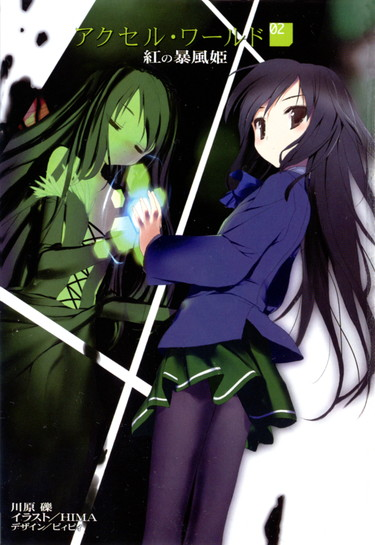

| [川原礫]アクセル・ワールド02 | |
| 川原礫 | |
| (2015) | |
|
アクセル・ワールド２ ─紅の暴風姫─
川原 礫
|
底本データ
一頁17行 一行42文字 段組１段
「二重山括弧」は「山括弧」に置換え注略。
アクセル・ワールド２
─紅の暴風姫─
黒雪姫との出会いにより、一回り成長したハルユキ。そんな彼のもとに、「お兄ちゃん」と呼ぶ見ず知らずの小学生・トモコが現れる。二人のいちゃいちゃする様子を見た黒雪姫の冷徹な視線がハルユキを貫く中、〈加速世界〉では、謎の事件が勃発していた。
乗っ取られると精神を汚染され、敵味方関係なくデュエルアバターを襲い続けるという呪いの強化外装〈災禍の鎧〉。殺戮を繰り返す狂気のアバターを捕らえることができるのは、唯一の〈飛行アビリティ〉をもつデュエルアバター、〈シルバー・クロウ〉のみ。〈鎧〉討伐ミンションを課されたハルユキの運命とは!?
第15回電撃小説大賞〈大賞〉受賞作、待望の続編登場!!
川原 礫
ネットのチャットルームに常時接続しっぱなしの生活も気付けばそろそろ十年......。多分私もバーストリンカーになれると思うんです。ていうか加速したいんです。加速してゲームやりまく......原稿書きまくりたいんです。
イラスト：ＨＩＭＡ
10月３日生まれ。挿絵は今回が初のイラストレーター。『電撃萌王』小冊子への寄稿を見た文庫編集者が、今回の挿絵依頼をオファーしたことがきっかけ。本業仕事の合間を縫って、ブログやＳＮＳサイトなどでイラストを発表している。

アクセル・ワールド 02
紅の暴風姫
■黒雪姫（クロユキヒメ）＝梅郷中学の副生徒会長。清楚怜悧なお嬢様。その素性は謎に包まれている。学内アバターは自作プログラムの『黒揚羽蝶』。デュエルアバターは〈黒の王〉『ブラック・ロータス』。
■ハルユキ＝有田春雪（アリタ・ハルユキ）。梅郷中学一年生。いじめられっ子で太り気味。ゲームは得意だが、内向的。学内アバターは『ピンクのブタ』。デュエルアバターは『シルバー・クロウ』。
■チユリ＝倉嶋千百合（クラシマ・チユリ）。ハルユキの幼馴染。お節介焼きな元気娘。学内アバターは『銀色の猫』。
■タクム＝黛拓武（マユズミ・タクム）。ハルユキ、チユリとは幼少期からの知り合い。剣道が得意。デュエルアバターは『シアン・パイル』。
■トモコ＝斉藤朋子（サイトウ・トモコ）。ハルユキの家に預けられた少女。ハルユキを〈兄〉と呼んで懐いてくる。クッキーを焼くのが趣味。
■ニューロリンカー＝脳と量子無線接続し、映像や音声など、あらゆる五感をサポートする携帯端末。
■学内ローカルネット＝梅郷中学内に構築されたローカルエリアネットワーク。出席確認や授業などに利用され、梅郷中の生徒は常時接続が義務となっている。
■グローバル接続＝世界中のネットと接続する行為。梅郷中学内ではグローバル接続は禁止されており、その代わりに学内ローカルネットが提供されている。
■ブレイン・バースト＝黒雪姫からハルユキに転送されたニューロリンカー内のアプリケーション。
■デュエルアバター＝ブレイン・バースト内で対戦する際に操るプレイヤーの仮想体。
■軍団＝レギオン。複数のデュエルアバターで形成される、占領エリア拡大と利権確保を目的とする集団のこと。各々、〈純色の七王〉がレギオンマスターを担っている。
■領土戦争時間＝毎週土曜の夕方に設けられている、特別ルールのバトル時間。通常の１対１の格闘戦ではなく、レベル不問、同数対同数の団体戦が行なわれる。
■エリア支配＝〈領土戦争時間〉内で平均勝率五十パーセントを上回ることによってシステムに認められる特権。支配した領土内では、ニューロリンカーをグローバル接続していても〈対戦〉を拒否できるなど特権が与えられている。
■通常対戦フィールド＝ブレイン・バーストのノーマルバトル（１対１格闘）を行うフィールドのこと。現実さながらのスペックを持つが、システムはあくまで一昔前の格闘ゲームレベルのもの。
■無制限中立フィールド＝レベル４以上のデュエルアバターのみが許可されるハイ・プレイヤー向けのフィールド。〈通常対戦フィールド〉とは段違いのゲームシステムが構築されており、その自由度は次世代ＶＲＭＭＯにも全くひけを取らない。
■強化外装＝エンハンスト・アーマメント。デュエルアバターが所有する武器や防具などのアイテムのこと。初期装備として最初からクレジットされている、レベルアップボーナスとして獲得する、〈無制限中立フィールド〉内の〈ショップ〉で購入する、などで入手可能。
六条左回りの螺旋を描く鋼鉄の孔を、ブタ型仮想体の眼を通してハルユキはただ凝視している。
周囲の空間には何も存在しない。白い床と白い壁、白い天井に囲まれただけの広大な部屋。
その中央にぽつんと浮かぶ青みがかった鋼鉄は、大型の自動拳銃だ。ヘアライン加工が入ったスライドも、チェッカリングが刻まれたグリップも、圧倒的な重量と密度、そして冷ややかさを伝えてくるが、しかしもちろん本物ではない。メーカー名もモデル名も判らないそれは、ハルユキが適当に銃器のポリゴン素材から選んで設置しただけの代物だ。
だが弾は出る。その意志をはらんで、わずか二十メートルの距離を取って立つハルユキのアバターの眉間をポイントしている。
マニュアル本と首っ引きでこの訓練用ＶＲアプリを組み上げ、最初にダイブした時、ハルユキは真っ白い部屋の殺風景さにかなりしょんぼりした。本当は地形を摩天楼の屋上あたりに、そして拳銃はダークスーツのヒットマンに持たせたかったのだが、そこまで造り込むのはしがない中学生ゲーマーには荷が重すぎた。
先輩にして師匠でもあるあの人に頼めば、どんなに凝った仕様でもぱぱっと組み上げてくれただろうが、しかしハルユキはそうしなかった。何を今更こんな初歩的な練習を、と思われるのが怖かったのだ。結果、眼がちかちかするほど純白の部屋にたった一つ武骨な拳銃が浮かぶという、殺風景極まる代物ができ上がってしまった。
でも、実際に使ってみれば、これはこれで良かったと思わなくもない。
何せ自分以外には銃しかないのだ。その銃口に否が応でも集中せざるを得ない。
桃色ブタアバターの腰を落とし、両手をゆるく広げ、ハルユキは懸命に黒い孔を睨む。
時間感覚はとうに失せている。もう何分間こうしているのか見当も付かない。このアプリの仕様はいたって単純だ。ダイブして「スタート」と発声すれば、五秒のカウントダウンを経て、ハルユキを自動照準する拳銃がその瞬間から三十分後のいずれかの時点で弾丸を発射する。
もちろん現実世界なら何もできず死ぬしかないが、ここはニューロリンカーが作り出す仮想空間だ。拳銃のマズルファイアが見えた瞬間、ハルユキが最短の時間で反応すれば、ちゃんと避けられるように弾速と距離を設定してある。
しかし問題は、三十分間のどこで拳銃が火を噴くかまったく判らない点だ。バーチャル・スカッシュ・ゲームと違って、球の軌道やタイミングを読む材料は皆無。できるのは、眼を見開き、集中を維持することだけだ。
しかしそれが事の外難しい。もともと長時間の集中力には絶対的に自信がない。一ヶ月前にこのトレーニングを始めた直後は、ほんの二、三分で緊張が途切れ、つい脳内の〈先輩アルバム〉を再生してみたりしてぼんやり薄笑いを浮かべたところを不可視のヒットマンに容赦なく撃たれたものだ。
だがハルユキは、自分で作ったアプリではあるが、だからこそ依怙地になってこの訓練を続けた。
何せ相手は動かない拳銃たった一つなのだ。あの〈戦場〉──歴戦の猛者たちが、恐るべき技の数々を繰り出して三十分も戦い続ける〈対戦〉に比べれば、果てしなく甘っちょろいと言うべきだ。ハルユキの計画では、一ヶ月後には拳銃は五丁に増えているはずだった。しかし、いまだに一丁が発射するたった一弾に苦戦している。
才能がない。そんなことは最初から解っている。
しかし、訓練での伸びしろすらもないのなら、永遠に〈上〉に──あの人の隣には行けないではないか。
くそ。くそっ。僕はもっと速く、もっと強くならなくちゃいけないんだ。あの人のために。あの人のパートナーであり続けるために。
ハルユキの心中に生じた焦りが、ノイズとなってアバターの手足を強張らせた。
と、まるでそれを待っていたかのように──。
かり、とかすかな金属音を立ててトリガーが動き。ハンマーが撃針を叩き。スライドがブローバックすると同時に銃口からオレンジ色の閃光が吐き出された。
「ッ......!!」
ハルユキは全力で右に跳ぼうとした。
しかしほんのわずかに初期反応が遅れ、轟音とともに飛来した弾丸が左の頬から耳にかけてを抉った。
巨大な金槌で強打されたかの如き衝撃にひとたまりもなく吹き飛ばされ、白い床に何度かバウンドしてから、改めて襲ってきた激痛にハルユキは悲鳴を上げた。
「っあ......うああああっ............!!」
短い両手で顔を押さえ、床を転げまわって絶叫し続ける。
このアプリは、ネットで落としてきた違法パッチを当てて、ニューロリンカーにデフォルトで組み込まれている痛覚遮断機能を無効化している。その上、発生させる痛覚のゲインを思い切り引き上げているので、ほとんど現実で銃弾を受けたに等しいショックをダイブ者に与えることができる。
「あ......あ......!!」
涙を迸らせ、全身を痙攣させて、ハルユキは床上でのたうった。今日、この痛みを味わうのはこれで三度目だ。トレーニングを始めてからの一ヶ月では、もう合計何回になるのか見当もつかない。しかし何度味わおうと、いっこうに慣れる様子もない。逆に言うと、生半な痛みではすぐに慣れてしまうため、ほとんど上限の痛覚を発生させている。
しかしその弊害として、時折ニューロリンカーがハルユキの脳波の異常を検知してセーフティを働かせ、完全ダイブを自動解除してしまうことがある。これはハードウェアの機能なので簡単にクラックはできない。今回もその閾値に引っかかって、突然ぶつん、と目の前の白い部屋が消失した。
重力感覚が急激にその軸を変える。暗闇の奥から、放射状に引き伸ばされるように現実の光景が戻ってくる。
涙は、本物の眼からも溢れていた。ぼやけ、歪む視界に映るのは、すっかり見慣れた男子トイレの個室の、ブルーグレーのドアだ。
今のところ、フルダイブ中のハルユキの体に悪戯する者は再出現していないため別に教室でダイブしてもいいのだが、こんな危険なプログラムが教師に見つかったら大ごとだし、それ以前にこの訓練アプリを使う時だけはトイレでなくてはいけない理由があった。巨大すぎる痛覚の余韻と、フルダイブから瞬間復帰させられた衝撃がハルユキの神経を混乱させ、ぐらぐらと目の前が揺れ──たかと思うと、胃から突き上げるような感覚が襲ってきた。
「............っ」
ハルユキは口を押さえ、蓋を下ろしたままの便器に座る体を床に落とすや、向き直って蓋を跳ね上げた。
危うく間に合い、消化器からの逆流は全て収まるべき範囲に収まった。何度か空えずきを繰り返してから、力なく右手を伸ばし、壁のボタンを押す。
顔の間近で水流が渦巻くのを感じながら、ハルユキは立ち上がる気力もなく、そのまま便器に突っ伏していた。
滲んだ涙が、ぽたり、ぽたりと落ちてはたちまち流れる水に呑まれていく。
激痛と嘔吐のせいだけではなかった。自分の不甲斐なさが悔しくて、ハルユキはきつく歯を食い縛り、肩を震わせた。
こんな訓練、ごく初歩的な反応速度の向上を狙ったものでしかない。〈対戦〉ならば、相手によっては両手に持った火器から秒間数発の連射を浴びせてくることもあるのだ。なのに、一ヶ月も経ってなお、避けられる確率がせいぜい二割から三割に上がった程度だ。
ゆっくり強くなればいい、とあの人は言ってくれる。
しかしその瞳の奥で、本当は深く失望しているのではないか、とハルユキは怖れずにいられない。
ハルユキが、ニューロリンカーの秘めたる機能により思考を加速し、半現実の戦場を舞台に戦う対戦格闘ゲーム〈ブレイン・バースト〉を手に入れ、そのプレイヤーの総称である〈バーストリンカー〉の一員となってからすでに三ヶ月が経過している。
当初、ハルユキの操る対戦用仮想体〈シルバー・クロウ〉は、唯一無二の〈飛行能力〉という巨大なアドバンテージを生かして快進撃を続けた。レベル２にはほんの一週間ほどで到達し、一ヵ月後には３にまで上がって、僕はこの世界でなら本物のヒーローになれるのかもしれないと信じかけすらした。
しかしそれも弱点を見抜かれるまでの刹那の栄華だった。飛ぶ、ということは常に全身を敵の視界に晒しているということでもある。遠距離射撃能力、ことに弾の視認も難しいほど高速な精密狙撃の前には格好の的でしかなかったのだ。
結果ハルユキは、ようやくレベル４に上がったところで長らく足踏みを続けている。当面の目標である、所属軍団〈ネガ・ネビュラス〉の領土拡大もさっぱり進まず、いまだに学校周辺の支配権維持のみに汲々としている現状だ。
領土、つまりレギオンによるエリアの支配は、毎週土曜の夕方に設けられている〈領土戦争時間〉中に挑まれるレベル不問、同数対同数の団体戦で、平均勝率五十パーセントを維持することによってシステムに認められる。支配中の領土では、そのレギオンのメンバーはたとえニューロリンカーをグローバル接続していても〈対戦〉を拒否できるという特権が与えられる。
しかしシルバー・クロウの特性が研究された結果、団体戦時間中に襲ってくる敵チームの中には必ず対空能力の高いデュエルアバターが含まれるようになり、ハルユキは安易な飛行を封じられた。そうなれば、〈シルバー・クロウ〉はただの打たれ弱い近接戦闘型でしかない。勝率はみるみる低下し、そのカバーをチームメンバーである〈シアン・パイル〉と〈ブラック・ロータス〉に強いる状況が続いてしまっている。
だからこその、この特訓なのだ。
対空射撃をせめて半分回避できれば、こちらも射手の位置を特定し、急降下からの高威力攻撃で撃破できる。そう考えて組んだアプリだが、しかし効果が出ているようにはまったく思えない。最初から発射位置が判っている弾丸すら避けられずに、どうして〈対戦フィールド〉の障害物の陰から放たれる対空攻撃が回避できるだろう。
あの人は、表面上は焦りも苛立ちも見せない。それどころか、領土戦でハルユキが無様な敗北を重ねるたびに、優しく励ましてくれる。
しかしその内心に積み重なっているであろう失望が、ハルユキは恐ろしくて仕方がない。
──いっそ、降りてしまえれば。
この頃は、ふとそんなふうに考えている自分に気付いて愕然とすることすらある。これ以上あの人をがっかりさせるくらいなら、全部なかったことにしてしまったほうがいい。そんな昔からの習い性である逃げ癖が顔を出し、わずかずつ、しかし確かにハルユキの心の奥底で肥大し続けている。
変われると思った。ブレイン・バーストを受け入れ、バーストリンカーとなった瞬間、それ以前の自分ではなくなったのだと一時は信じた。
だが、結局は同じことだったのだろうか？ 学校だろうと仮想の戦場だろうと、どこに行っても自分は最底辺の負け組にしかなれない運命なのか？
丸いぷよぷよの体をトイレの個室にうずくまらせたまま、ハルユキはぎゅっと眼をつぶり、マイナスの思念を振り払おうとした。胃液に焼かれた痛みの残る喉から、懸命に声を押し出す。
「......それでも......僕は......」
しかし、その先は言葉にできなかった。自分自身を言い負かすための力すら、今のハルユキには不足していた。
ローカルネット経由で直接聴覚に響く下校のチャイムに重ねて、ハルユキは声に出さずに呟いた。
──強くなりたい。
強くなりたい。
１
「おかえりなさい、お兄ちゃん！」
自宅に帰りつき、靴を脱いで、とぼとぼと廊下を半分ほど自室へと歩いたところで、左手のリビング方面からそんな声が聞こえた。
ハルユキは自動的に、不明瞭な発音で応答した。
「......だいま......」
更に一歩、二歩進み、三歩目でキキッと急ブレーキが掛かった。
──は？
今の、なに？
ハルユキの認識では、有田春雪なる人間は生まれてから今日までの十三年と十ヶ月、継続して一人っ子だったはずだ。それを不満に思うどころか、むしろ幸運だったと感謝してきたつもりだが、実は無意識下では寂しさを募らせていて、ついに幻聴を聞くに至ったのだろうか。
だからって、お兄ちゃんはないだろう。しかも可愛い女の子の声で。〈妹〉とか都市伝説じゃなかったのか。
不自然な姿勢のままハルユキが自分を疑っていると、再び有り得ない音声が聞こえた。
ふんふ～ん、という鼻歌。ぱたぱたと軽いスリッパの音。それだけではない、なにやら甘く香ばしい匂いまでしてくる。幻......臭？そんな言葉あったか？
肩からどさっと鞄を落とし、百八十度向きを変え、ハルユキはぎこちない足取りでリビングへと踏み込んだ。
そしてついに幻覚まで見た。
入ってすぐ左側、普段、本来の目的で使用されることはほとんどないキッチンスペースに、それは存在した。
十歳くらいか。びっくりするほど細く、華奢な体を、どこかの小学校の制服とおぼしき白ブラウスと肩紐つきの紺スカートに包み、その上からピンク色のエプロンを重ねている。赤みを帯びた髪を頭の両側で結わえて細く垂らし、滑らかに丸いオデコの下の顔は〈あどけない〉と形容するしかない造作だ。薄く混血なのだろうか、ミルク色の肌には小さくそばかすが散り、大きな瞳もまた赤茶色。全体的印象を一言で表現するならば──。
......天使？ にエンジェルと振り仮名？
思考能力を喪失し、ぽけーっと眺めるハルユキに、女の子はちらっと視線を向けると可愛らしく微笑み、言った。
「今クッキー焼けるから、もうちょっと待ってね、お兄ちゃん」
「............うわっ！」
ハルユキは今更のように悲鳴を上げ、丸い体をリビングのドアに隠した。状況が呑み込めないまま、顔の上半分だけをそっと突き出す。
女の子は不思議そうに首をかしげたが、すぐにもう一度微笑んでから、体の向きを変えてオーブンレンジを覗き込んだ。二束の赤毛が柔らかそうに揺れ、奥の窓から入り込む冬の日差しを受けてきらっと光った。
事ここに到って、ハルユキはようやくこれは幻覚に非ずと判断した。
空想的、あるいは妄想的状況なれど女の子の存在がリアルすぎる。ということは──ニューロリンカーに仕掛けられた悪意あるプログラムに違いない。超高精細な３Ｄモデルをハルユキの視覚に重ね、音声および嗅覚にも擬似情報を注入しているのだ。誰が何のためにそんな真似をしたのかは不明だが──
だって、〈妹〉なんか実在するわけないもん。
ポリゴンの偽物なら恐れる必要はない。ハルユキは内心でふふんと思いながら、キッチンへ足を踏み入れ、微笑みとともに見上げてくる〈妹〉に右手を伸ばした。
そして、そばかすの浮くほっぺたを摘み、むにーっと引っ張った。
人の意識そのものと量子的に通信するニューロリンカーは、視聴覚レベルに限定すれば現実と区別のつかないレベルの擬似現実をすでに生成できる。メモリ容量とＣＰＵパワーの制限で、人間ひとりを創るのが精一杯ではあるにせよ。
しかし、それ以外の感覚、ことに触感の再現性は、数値化しにくいゆえにまだ研究が立ち遅れている。〈人間のほっぺた〉みたいな、皮膚のテクスチャや筋肉の抵抗及び反射的収縮といった複雑な仮想触感を完璧に生成するのは不可能だ。だから、こうすれば、指先には生命の宿らないゴムのような感覚だけが返って──
「にゃ、にゃにすうんでふかぁ～」
「......うっ、うわああああ!?」
ハルユキは叫び、手を離し、飛び退って冷蔵庫にお尻をぶつけた。
完璧だった。
柔らかく、すべすべして、しかも瑞々しい、つまりパーフェクトとしか言いようのない〈十歳の女の子のほっぺたを引っ張った感触〉が──これまでそんなことをした経験は絶無であるものの──ハルユキの指に発生した。
突然の狼藉に、ぷう、と頬を膨らませる女の子を見開いた両眼で凝視しながら、ハルユキは震える右手を首のニューロリンカーに伸ばし、ロックを解除して、一気に引っぺがした。
視界から、時刻やカレンダー、アプリのアイコンといった拡張現実情報がぶちっと消滅した。
女の子は消えなかった。
ハルユキ、悪いんだけど。
で始まる母親の伝言メッセージが、ホームサーバーに残されていたことに遅まきながら気付いたハルユキは、再び装着したニューロリンカーで、立ち尽くしたままそれを聞いた。
【──悪いんだけど、親戚の子供を二、三日預かることになっちゃったから。知ってるでしょ、中野のサイトウさん、私のイトコの。急な海外出張だっていうんだけど、言ってあったとおり、私も今日から上海なのよ。しあさってには帰るから、その子の面倒よろしくね。何かあったらメールして、じゃ】
母親の有田沙耶は、アメリカに本社のある銀行のディーリング部門に勤めている。毎夜零時を回るまで帰宅しないし、海外に飛んで数日留守にすることなどしょっちゅうだ。そのうち何割が仕事で何割が付き合っている男とのヴァカンスなのかは不明だが。七年前の離婚の原因が父親の浮気でなかったら、家裁があのヒトに親権を与えたかは甚だ怪しいものだとハルユキは思ったりもする。
ゆえにハルユキは、小学生の頃から、同じマンションの二階下の倉嶋家──チユリの家に預けられることが頻繁にあった。
いつも優しく迎えてくれたチユリ母とチユリ父が、もし仮に一度でも迷惑そうな素振りを見せたら、自分はものすごく辛い思いをしただろう。行き場がなくなり、今の十倍イジケた子供に育っていたかもしれない。
そんなことを考えつつ、ハルユキはキッチンで忙しそうに動き回るサイトウさんちの子を眺めた。
オーブンのタイマーが軽やかな音を放つや女の子は扉を開け、金属のトレイを引き出した。甘く香ばしい匂いがいっそう強く漂う。どうやら、芳香の源はクッキーだったらしい。
クッキングペーパーを敷いた大皿に、慎重なトングさばきで十数個のクッキーを移動させると、女の子はほっとしたように息をついた。
両手で皿を持ち、くるっと向き直ると、上目遣いにハルユキを見上げてくる。
「あの......、勝手にお台所使っちゃってごめんなさい。ハルユキお兄ちゃんが、お腹空かせて帰ってくると思って......それで......」
先刻よりも随分小さな声に、ハルユキは思った。
そうか、この子も、預けられた先の〈お兄ちゃん〉が迷惑そうな顔をしないか不安なんだ。心細いんだ。初対面の女の子相手だからって、年上の僕がビビってる場合じゃない。
柄にもなく胸の奥が痛くなるのを感じながら、ハルユキは精一杯の笑顔を作り、言った。
「あ......、ありがとう。お腹、ぺこぺこなんだ」
すると、女の子も、氷が溶けるようににっこりと笑った。
「あの、あたし、サイトウトモコです。小学五年生です。もう何年も会ってないから、忘れちゃったと思うけど......お兄ちゃんとは、ハトコ同士になるんだと思います。あの......ふ、ふつつか者ですが、どうぞ宜しくお願いします」
皿をささげ持ったままぺこりと頭を下げられて、ハルユキは心拍数の急上昇と汗腺の大開放に見舞われかけた。
しかしすぐに直前の決意を思い出し、なんとかぎりぎり理解可能な挨拶を返す。
「はいっ、あの、あ......有田春雪です、こ、こちらこそ、よよよろしく、サイトウさん」
即座に「トモコでいいですよー」と微笑まれ、くらっと遠ざかりかける思考をハルユキは必死で引き戻した。
中野のサイトウさん、に関しては正直そんな親類がいたような気がする程度の記憶しかない。親のイトコなんて普通そんなものだろう。
「......き、君も、一人っ子なの？」
訊くと、トモコはこくっと頷いた。
「家族は、お父さんだけなんです。急な出張になっちゃって、あたしは一人でお留守番できるって言ったんですけど、心配だからって。ちょっと前に学校からここまであたしを送って、そのまま成田に行っちゃいました」
クッキーの皿をテーブルに置きながらそう答えるトモコに、ハルユキはつい確認してしまった。
「あ、じゃあ、うちの母親とは会ってないんだ」
「はい。お兄ちゃんのお家の一時電子キーだけ頂いたんです」
それはまったく幸運だった。あの母親なら、純度百の迷惑顔をトモコに見せることに躊躇するまい。
──しかし。
え、ということは、もしかして。僕はこれから三日間、この子と二人っきりで生活するのだろうか。
いやいやいや、焦る必要なんかないぞこの馬鹿者。相手は小五の子供じゃないか。僕とはたっぷり二歳も離れて......。二歳......。も？も、なのかそれ？
ハルユキを襲った突如の焦燥に気付く様子もなく、トモコは「冷めるまで待ってくださいね」ともう一度微笑み、引き返していった。手早くシンクの中のボウル類を洗い、同時にお湯を沸かして、わずか数分でお茶のトレイと一緒に戻ってくる。明らかに、もうハルユキよりもこの家のキッチンに適応している。
女の子って凄いなあ、などと思ってしまってから、ハルユキはぷるぷる頭を振った。子供子供、相手は子供。
しかしクッキーは、まるでこのままお店で売れそうなくらい美味しかった。
やや大ぶりのそれをたちまち九個を平らげたハルユキは、誰かの手作りのお菓子を食べるなんて何年ぶりだろうと考えながら、トモコの淹れてくれた紅茶をすすった。
テーブルの向かいでは、赤毛のハトコが真剣な顔でふうふうカップを吹いている。その仕草ひとつひとつが、実に純朴かつ可憐で、見ているだけでほんわりとした気分になってくる。
「......ごちそうさま。その......お、おいしかったよ」
どうにか普通の声でそう言うと、トモコはほっとしたように大きな笑顔を見せた。
「ほんとですか、よかった！ 何にも言ってくれないから、心配してました」
「ご、ごめん。夢中で食べてたから......」
「ほんとですね」
うふふ、と笑いながら中腰になって手をのばし、ハルユキの頬っぺたにくっついたクッキーのかけらを摘み取る。
そしてそれをぱくんと口に入れ、もう一度笑った。
ずきゅーん、という奇怪な効果音が脳内に発生した気がして、ハルユキは慌ててごしごし口元を擦った。
「あ、あのその、えーと......、そ、そうだ、これからどうしよう。げげ、ゲームでもする？山ほどあるよ、四十年前くらいのからごっそり......」
言ってしまってから、その大半が血みどろ地獄絵図系であることを思い出す。
しかし幸い、トモコは微笑んだまま軽く首を振った。
「あの、あたし、ゲームあんまりやらないんです。完全ダイブがちょっと苦手で......」
「へ、へえ」
言われるまま視線を向けると、ブラウスのボタンが一番上まできっちり止められた細い首に、現代の必須生活ツールである量子接続通信機器が存在しないことにハルユキは今更ながら気付いた。
確かに、小学生のうちは常時装着を避けさせる家庭も少なからず存在する。広大無辺のグローバルネットは、ありとあらゆる犯罪の温床でもあるからだ。ペアレンタル・コントロール機能はあるにせよ、有害情報を百パーセント遮断することは難しい。
日頃、学校の授業で視聴覚モードを使うだけなら、現実の五感が全て遮断される完全ダイブを怖がる気持ちは解る。ならばどうしたものかと懸命に思考を巡らせ、ようやくリビングの壁に貼られた大型パネルモニタに視線を留めると、ハルユキはそっちを指差した。
「じゃ......じゃあ、あれで映画でも観る？昔の２Ｄソフトにも、けっこう面白いのあるよ」
だが、トモコは今度も小さくかぶりを振り、恥ずかしそうに言った。
「あの......、それより、お話ししませんか？ お兄ちゃんの中学のこととか、教えてほしいな」
そして立ち上がり、テーブルをとててっと回り込んできて、隣に座った。
ミルクのような甘い匂いが鼻腔をくすぐり、長年培ったアンチ女の子フィールドがこんなところで発動して、ハルユキは反射的に飛び退こうとしてしまった。椅子がぐらりと傾き、そのまま左に倒れそうになるのを、両手をわたわた動かして立て直す。
がったん、と元のポジションに戻ったハルユキをまじまじと眺めてから、トモコがくすりと笑った。
「お兄ちゃんて、けっこうカワイイとこあるんですね」
──うわあ。
ぶくぶく、と自分の口から泡が立ち上る音を聞きながら、ハルユキはいっそう深く浴槽に体を沈めた。
母親のコダワリで、有田家のバスルームはやたらと広い。バスタブも大きく、ハルユキの巨体でもさして窮屈感なく手足を広げられる。入浴剤の香りがする湯気を、鼻から大きく吸い込み、肺に溜めて、細長く吐き出す。
口下手もいいところではあったが、久々に長時間使用した喉がかすかに痛んだ。トモコが作ってくれたカレーライスの夕食を挟んで、なんと四時間も喋り続けた計算になる。この自分の日常に、よくもまあそんなに話すネタがあったものだと妙な感心をしたくなるほどだ。
結局ハルユキは、梅郷中学校の各種システムに始まり、幼馴染二人との色々なエピソードやら、〈一番大切な人〉であるところの黒衣の上級生にまつわるアレコレまでを、ほとんど洗いざらい話しつくしてしまった。話題にしなかったのは、数ヶ月前まで続いたイジメの一件と──そして〈あの世界〉に関することだけだ。
その、さして面白いとも思えない話を、トモコは真剣に聞き、ときには声を出して笑ってくれた。
妹がいる、ってこういう感じなのか、とハルユキはしみじみ噛み締めた。
そして同時に、一抹の違和感を打ち消せない自分を嫌悪した。
あまりにも──出来すぎてはいないか。ある日学校から帰ってきたら、突然妹がいて、クッキーを焼いてくれたりカレーを作ってくれたり、とどめに『お兄ちゃんにお話ししてほしいな』と来たもんだ。その上、三日間も二人きりで暮らすだって？
これを、降って湧いたレアイベントだと受け入れられるほど、ハルユキは素直な育ち方をしていなかった。
しかし、この一件に何か裏面があるのだとしても、いったい誰が何のために仕掛けたことなのか？そしてそれをどのように確認すればいいのか？
少し考え、ハルユキはお湯から上体を出すと、傍らのコーナーラックからアルミシルバーのニューロリンカーを取り上げた。
生活防水仕様であるものの念を入れて首筋の水滴を払い、後ろから装着する。Ｕ字型の両端部分が軽く内側にスイングし、首をしっかりロックする。
電源を入れると、目の前に起動ロゴが輝き、二十秒ほどの大脳接続チェックに続いて仮想デスクトップが展開した。右手の指を素早く動かし、有田家のホームサーバーのウインドウを開く。
データストレージから、家族のアルバムに入ろうとして、ハルユキはやや躊躇した。ここ数年は家族で写真など撮っていないが、この中にはハルユキがぷくぷく膨れる前の──父親と母親が仲睦まじかった頃の画像が山ほど埋もれているはずだ。そんなもの、死んでも見たくない。
階層を戻り、ハルユキは代わりにホームサーバーに接続する外部ネットを開いた。
ぱぱっと立体的に幾つかのアクセスゲートが展開する。これらは全て、有田家の親戚筋のホームネットだ。勿論サーバーのデータを好き勝手漁れるわけはないが、メッセージを記録したり、親族向けに公開されているスケジュールなどを閲覧できる。
しかし、アクセスゲートに〈中野のサイトウさん〉宅のものはなかった。たいていの家はトップ画面に近況報告を兼ねた家族の集合写真を用いているので、それを確認しようと思ったのだが、さすがに接続しているのは母親の実家と兄弟、数人の叔父叔母のみで、イトコまではカバーしていないようだ。
ハルユキはいったんデスクトップから視線を外し、浴室のドアの向こうに耳を傾けた。リビングのパネルテレビの音声がわずかに聞こえてくる。トモコはまだファミリー向けのバラエティ番組を見ているようだ。強く言われて先に風呂に入ってしまったため、早いとこ出てあげないと申し訳ない。長湯の理由が、本当にハトコなのか疑っているから、と来れば尚更だ。
再びデスクトップを睨み、ハルユキは中央に浮かぶアクセスゲート──母親の実家のホームネットを開いた。
山形の農村をバックに撮影されたのどかな家族写真を無視し、ネットの内部へと繋がるゲートをクリックする。当然のように認証窓が出現し、ハルユキの行く手を阻む。
ハルユキはそこに、母親に与えられているＩＤとパスワードを打ち込んだ。このアクセスは先方のログに残るため、もし向こうが母親にログインの理由を訊いたりすれば、ハルユキが母親のＩＤをぶっこ抜いていることがバレて大目玉を食らうだろうが、そもそもサクランボ農家を営むお祖父ちゃんとお祖母ちゃんが自宅ネットのアクセスログなどチェックするとは思えない。
だが勿論、仕事は手早く済ませるに越したことはない。ハルユキは大急ぎで母親の実家のホームネットに潜り込み、アルバムフォルダを開いた。
数十年分も蓄積された膨大な写真の量にうんざりしながらも、時期と人数でフィルタを掛けてデータを抽出する。確か、薄らかな記憶によれば、五年ほど前のお祖父ちゃんの喜寿のお祝いに有田家の一族がかなり集まったことがあった。〈中野のサイトウさん〉ともその時挨拶したような気がする。ならば、当時五歳くらいであろうトモコもその場にいたはずだ。
検索はすぐに終了し、数枚のサムネイルが重なって表示された。
それを指先で次々に弾いていく。
これじゃない、これでもない......あ、この辺か。この次あたりに。
「おにーいちゃん♪」
突然、右側から歌うような声がして、ハルユキは反射的に首を捻った。
そして、右手の指先を空中に上げたまま凍りついた。
いつの間にか浴室のドアが細めに開き、その向こうに、トモコが顔と右肩だけを覗かせて立っていた。
赤茶色の髪をタオルで巻いた頭から、やや恥ずかしそうにはにかむ顔、そして細い首と肩のきめ細かい肌へと視線を下ろし──。
「なっ......な、なっ......」
口を高速ぱくぱく運動させるハルユキに、トモコがほんのり桜色の笑顔を向けた。
「お兄ちゃん、あたしも一緒に入っていい？」
「いっ......ちょ......そんっ......」
「だってー、お兄ちゃん長いんだもん。待ちくたびれちゃうよー」
えへへと笑うと、トモコは返事を待たず、とててっと浴室に入ってきた。ハルユキは慌ててばしゃっと体を湯に沈め、きつく両眼をつぶって喚いた。
「ご、ごめん今でで出るから！ いいい今すぐ出るからもうちょっと待って!!」
「だいじょぶですよぉー、ハトコ同士だもん」
ぜんぜんだいじょぶじゃね────ッ!!
と脳内で絶叫したが、ハルユキの装備する生体光学式観測装置つまりメダマが主の命令を裏切り、勝手に瞼が薄く持ち上がった。アイボリーのタイルを踏む小さな素足が視界に飛び込み、ハルユキは呼吸を停止させた。
両眼のフォーカスが、自動的に上へと移動していく。びっくりするほど細く、滑らかなラインを描くふくらはぎ。小さな丸い膝小僧に、しなやかな下腿。
その脚が根元ぎりぎりでピンク色のバスタオルに遮断され、ハルユキは一瞬なんだ、と思い、何がなんだなのかこの痴れ者めと自責しつつも視線は更に上へ。タオルは凹凸の限りなく少ない胴をぴったりと覆い、今にも解けそうな布の合わせ目のすぐ上で、繊細な鎖骨が滑らかな肌に浮き出ている。
「だ......だからって、あんまり見ないでくださいー」
そして最後に、恥ずかしそうに俯けられたそばかすの浮く顔を。
ハルユキは、視界の左側に表示された、五年前の有田一族大集合写真と見比べた。
前列には、自身を含む子供たちがうじゃうじゃと並んでいる。今となっては誰が誰だかさっぱり見分けられないが、幸い、この時代の写真にはもうデータ埋め込み技術が採用されている。
焦点をずらしていくと、子供たちの前に次々と名前が浮き上がっては消える。
その名前は、六人目で現れた。〈斉藤朋子〉。
凝視すると、該当する子供の顔が自動的にズームされ、目の前のトモコと同じサイズになった。
当時五歳。女の子は変わる、って言うから、五年間でこの顔がこうなることだって......。
あるわけねー。
ハルユキは大きく息を吸い、溜め、はああああっと吐き出した。
そして、きょとんとした表情のハトコを名乗る女の子に向けて、哀しい微笑みとともに呼びかけた。
「トモコちゃん......」
「なあに、お兄ちゃん？」
「......君、〈新手のバーストリンカー〉でしょ」
反応は即時かつ如実だった。
トモコの可憐な顔が、一瞬ぽかんとした素の驚きを見せ。
その頬がおそらく羞恥以外の理由で真っ赤に染まり、右の目元がぴくぴくっと痙攣した。
しかし感心なことに、年齢だけは間違いなく十歳前後であるはずの少女は、尚も可愛らしい声とともに首をかしげた。
「えー、お兄ちゃん、何言ってるんですか？ ばー......すと？なんですかそれ？」
「日焼け」
ハルユキはぼそっと答えた。
「え？」
「首のとこ、きれいに日焼け跡がついてるよ。僕と同じくらい。なかなかそこまでは、産まれた直後から常時装着してないとならないよ......ニューロリンカーを」
トモコ──では恐らくない少女の両手が、さっと首を覆った。それに、とハルユキは続けた。
「お祖父ちゃんちのホームサーバーに、五年前の写真が残ってた。そこに、サイトウトモコちゃんも写ってるけどね......こう言っちゃなんだけど、君のほうが十倍かわいい」
女の子の顔がもう一度ぴくぴくと引き攣り、実に複雑な表情を浮かべた。
やがてその百面相は、これまでの純朴さとは一光年ほどもかけ離れた、不貞腐れたような渋面で固定された。
「ちっ」
バスタオルの両腰に手をあて、強烈な舌打ちを鳴らす。
「ここンチのアルバムは確認したのになぁ。まさかジーチャンちのネットまで掘り返すとは、あんた疑り深すぎンぜ」
突如切り替わった口調に目を白黒させながらも、ハルユキはどうにか言い返した。
「き......君が無茶しすぎるんだよ。たぶんサイトウさんからうちの母親宛のメールを偽装したんだろうけど、母さんが向こうに再確認したらどうする気だったんだ」
「あんたのママのニューロリンカーから発信されるサイトウさん宛のメールとコールは、全部インタラプトされてあたしに届くようになってんもん。準備に三日もかかったのによー」
「そりゃあ......何ともご苦労様な......」
浴槽の縁にしがみついたまま、ハルユキは呆れ声を漏らした。
他人のニューロリンカーにウイルスを仕込もうと思ったら、ケーブルで直結するしか手段はない。恐らくこの少女は、ハルユキの母親の動向をチェックし、よく行くスポーツジム辺りで更衣室ロッカー内のニューロリンカーに接触したのだろう。
無論、肉親にそんなことをされて気分がいいわけはないが、ハルユキはそれより先に感心してしまった。この世にハッカーやらウィザードを自称するリンカー使いは多いが、安全な自宅から出て現実世界で〈ソーシャル・エンジニアリング〉──他人に成りすまし、オフラインでセキュリティを破る究極のハッキング──を仕掛けられるツワモノはそうは居ない。
ハルユキの声に含まれた賛嘆を聞き取ったか、少女の顔にフフンという強気な笑みが浮かんだ。
それを見上げながら、ハルユキは推測の続きを口にした。
「......そこまでしたのは多分、僕を踏み台に〈あの人〉にもハッキングを掛けるためだろうけど、甘いよ。あの人なら、一目見た瞬間に君がニセモノだって気付くよ、五時間もかかった僕と違って。......そりゃあ、バーストリンカーとして正面から戦闘を挑んでも勝てない、って思う気持ちは解るけど......相手があの〈ブラック・ロータス〉なんだから......」
早く出てってくれないかなーと思いながら、ぶちぶちとそこまで言い終えた──
その瞬間。
女の子の気配が、再び激変した。
ぎらっと両の瞳が強烈に光り、髪と同じ赤みを帯びる。艶やかな唇が、似つかわしくないへの字形に歪み、その隙間から純白の歯がわずかに覗く。
傲岸不遜、としか形容できない表情でハルユキを見下ろし、女の子は低い声で言った。
「──おいコラ、今なんつった」
「......へ？ だ、だから......正面から挑んでも......」
「勝てない？ あたしが？ だからコソコソこんなめんどいリアルハック仕掛けたってか？」
──違うの？
とハルユキが視線で問いかけると同時に、女の子の右手が動き、頭からタオルを毟り取った。それをバシッと床に叩き付け、人差し指をビシッとハルユキに向けてくる。
湯気の中で、ほとんど深紅に近い赤毛がざわっと逆立ったような気がした。短めの髪をまるで炎のように揺らし、女の子はドスの効いた声で言い放った。
「いいやもう面倒くせぇ、アンタには力ずくで言うこと聞かせる。この〈スカーレット・レイン〉様をナメてくれた代償キッチリ取り立ててやるから、ニューロリンカー取ってくるまでそこで大人しく待ってろよ!!」
右手の人差し指を仕舞いつつ親指を突き出し、それを下に向けてぐいっと横に動かしてから、女の子は勢いよく振り返った。
そして、一歩踏み出した右足で、先刻自分が投げ捨てたタオルを踏みつけ、ずるっと滑った。
「にゃあっ!?」
甲高い悲鳴。ほとんど後方伸身宙返りのような見事さで落下してくる女の子を見上げ、ハルユキも叫んだ。
「うわっ!?」
反射的に両手を広げ、女の子が浴槽の縁に激突する前に受け止める。しかしお湯の中の足が滑り、ハルユキもまた後ろにひっくり返った。
どばっしゃーん。
という盛大な音とともに高く水柱が立ち上り、その横を大判のバスタオルがひらひらと舞った。
後ろの壁に軽く頭をぶつけたハルユキは、ぎゅうっと目をつぶって痛みをやり過ごしてから、薄く瞼を持ち上げて状況を確認した。
広い湯船の中で、尻餅をついた格好の自分。
ぷくぷくしたお腹をクッション代わりに乗っかる赤毛の女の子。その細い胴体に、ぎゅーっと回された自分の両腕。
そして、双方ともに全裸。
「う、うわああああ!?」
というハルユキの叫びを、
「うぎゃ────────っ!!」
という女の子の絶叫が上書きした。じたばたもがいてから、ハルユキのお腹にどすっと足を踏み下ろした反動でひと息に湯船の外に脱出する。床のバスタオルを拾いつつ、ぎゅんっと超高速で脱衣所に飛び出し、再び顔だけを見せ。
「......ぶっころす」
どたたたた、という足音がリビングに去っていくのを聞きながら、ハルユキは呆然と考えた。
──見たり触ったりしてしまった。
──じゃなくて。あの子は恐らく、六王のレギオンいずれかに属する刺客だ。そしてあの言動からして、恐らくこのあと対戦を吹っかけてくるはずだ。
ならば、ニューロリンカーを外してそれを防ぐか？しかし、恐らく今後本格的にぶつかるであろう敵ならば、早めに情報を入手しておくに越したことはない。まだやっとこレベル４の自分ならば、一度負けたくらいではそうそうポイントは減らないし、それに──さすがに相手が子供なら、そうおめおめ負ける気もない。
思考の八割ほどは未だに大混乱の極みだったが、残り二割でどうにかそこまで考えたハルユキは、先ほど女の子が口にした名前を脳裏に呼び起こした。
〈スカーレット・レイン〉。聞き覚えは、多分ない。カラーサークル上では恐らく〈遠隔の赤〉属性だが、それだけで赤のレギオンに所属するバーストリンカーだと決め付けるのは早計だ。そのへんは対戦してみれば解るはずだが、しかしもう少し情報が欲しい。
女の子がニューロリンカーを装着し、ＯＳが起動し、量子接続チェックを終えるまでにはあと数十秒あるはずだ。ハルユキは湯船に座り込んだまま、音声命令を呟いた。
「コマンド、ボイスコール、ナンバーゼロワン」
途端、目の前に【登録アドレス〇一番に音声通話を発信します。いいですか？】というホロダイアログが浮かぶ。即座にイエス。
コール二回で、相手が出た。
『私だ。どうしたハルユキ君、こんな時間に』
しっとりと滑らかで、かつ音楽的な抑揚のあるその声の背景に、ちゃぷんという水音が重なった。
あー、先輩もオフロかなあ......などと一瞬考えながら、ハルユキはコールの相手──最強のバーストリンカーの一人である黒の王〈ブラック・ロータス〉こと黒雪姫に話しかけた。
「遅くにすみません。ちょっと教えてほしいことがあって......」
『ほう、何だ？』
「その、先輩は、〈スカーレット・レイン〉ってバーストリンカーを知ってますか？」
質問の答えは、少々長めの沈黙だった。
「......あ、あの、どうしたんですか？」
『......いや、済まん。それは本気で訊いているのだろうな？』
「本気って......勿論、そうです。こんな時間に悪戯電話なんてしませんよ」
『そうか。ううむ、これは私の手抜かりかな。通称ばかり使って名前を教えたことはなかったか。しかし〈シルバー・クロウ〉、キミも少々不勉強だぞ？』
「え......？ それは、どういう......」
首をかしげたハルユキの聴覚に、どたどたどたっと廊下を走ってくる足音と重なって、黒雪姫の涼やかな声が響いた。
『──〈スカーレット・レイン〉。そいつは、かの〈不動要塞〉、〈鮮血の暴風雨〉......二代目赤の王ご当人じゃないか』
..................はい？
ぽかりーん、と両眼及び口を丸くして、ハルユキは思考を停止させた。
直後、浴室のドアを引っ叩くように、赤毛の女の子が再び姿を現した。
よほど怒り心頭なのか、上下に可愛らしい下着を身につけただけの格好だ。しかしもう隠す気もないらしく、真っ白い体を昂然と反らし、胸の前で腕組みしている。
反射的に視線を外しかけたハルユキは、女の子が下着の他に唯一身につけているものに気付き、それをまじまじと眺めた。細い首に巻きつき、艶やかに透き通る真紅の輝き。
にいっと凶暴な笑みを見せた女の子は、可憐かつ威圧感たっぷりの声で叫んだ。
「バースト・リンク!!」
バシイイイイッ!!
──という聞き慣れた、しかし常に戦慄せずにはいられないあの音が、世界いっぱいに鳴り響いた。
一瞬、五感が切断され、暗闇のなかに〈ＨＥＲＥＣＯＭＥＳＡＮＥＷＣＨＡＬＬＥＮＧＥＲ!!〉の文字が燃え上がる。直後、再び視界が回復。
しかしそこはもう、アイボリーの化粧パネルが張られた自宅の浴室ではなかった。マンションの数フロアがぶち抜きになったとしか思えない、広大な平面空間だ。
ハルユキはすでに、ニューロリンカー内の思考加速・対戦格闘ゲームアプリケーション〈ブレイン・バースト〉が造り出す仮想世界に完全ダイブしている。周囲の世界は、日本全国に張り巡らされた治安監視網の映像から再構成されたバーチャルな〈対戦フィールド〉なのだ。
しかし、ハルユキの自宅を含む一般住居内には基本的にソーシャルカメラは存在しないため、このように推測補完──つまりソフトが構造からでっち上げることになる。今回は、マンションそのものが建築途上に戻されてしまったようだ。コンクリート打ちっ放しのだだっぴろいフロアを、鉄骨の柱だけが幾つも貫いている。
その殺風景な空間に、ハルユキと女の子は、ほんの半秒ほどだが生身の姿で向き合った。
しかしすぐに、両者の体はその色と形を変え始める。それぞれの分身たる、対戦用の〈デュエルアバター〉へと。
ハルユキの丸っこい四肢が、末端から銀色の輝きに包まれ、同時に細く細く絞られていく。現れたのは、白銀の装甲に包まれた機械の腕だ。変化はたちまち胴にも及び、腹囲が一気に半分以下になる。極細のメタルボディが完成すると同時に、白い光の環は頭をも呑み込み、つるりと丸い鏡面のヘルメットで包み込む。
自身がデュエルアバター〈シルバー・クロウ〉へと変身するのを意識しながら、ハルユキは数メートル先に立つ女の子の姿を凝視し続けた。
人形のように華奢な腕と脚を、突然朱色の輝きが包んだ。光の環が上に登っていくにつれ、透き通るルビー色の装甲に置き換わっていく。真っ平らな腹部と胸郭もまた、ダークグレーとルビーの二色を基調とした半透過アーマーに包まれ、最後に一瞬の閃光を放ってアンドロイドチックな頭部が現れた。
つぶらな形の両眼だけが存在するマスク。前髪を模した装甲の両側に飛び出す、結わえ髪の形のアンテナ。
ぴょこぴょこ、とツーテールが動き、ぴきゅん、と両眼が鮮紅色に光った。
──これが、〈赤の王〉だって？
ハルユキは棒立ちになったまま、数メートル先のデュエルアバターをまじまじと見下ろした。
小さい。身長は百三十そこそこしかあるまい。武装らしき物は、右腰に下がるオモチャのようなハンドガン一丁のみ。
「......あ、あの」
無意識のうちに口が動き、鏡面ヘルメットの下からメタリックなエフェクトがかかった声が漏れた。
「君、ほんとに......」
加速世界にわずか七名しかいないレベル９バーストリンカーにして、巨大レギオンを率いる最強の支配者、〈純色の六王〉の一人なの？
と訊ねようとした、その時だった。
突然、可憐な少女型アバターの背後の空間が、ぐにゃりと歪んだ。
真紅に輝く無骨なブロックが四つ、虚空から湧き出すように現れ、少女の両腕両脚を包み込む。更に左右から分厚い装甲板が回り込み、華奢なボディを完全に隠す。
「なん............」
ハルユキは、一気に自分の数倍の質量になってしまった真紅のアバターを、ぽかんと見上げた。
しかし、追加装甲の出現は、そこで止まらなかった。
ゴン、ゴン、と重々しい低音を響かせながら、巨大な六角柱やら円筒やら板やらが後から後から現れて接続されていく。高さはたちまち天井へと迫り、慌てて後退するシルバー・クロウを追うように全長も二メートルを超え、三メートルを超え......。
数秒後。
ようやく静寂が戻った時、ハルユキの眼前に屹立するのは、まさしく戦車、あるいは要塞としか言えぬシロモノだった。
本来の腕の延長線上に存在する、長大な二本の砲身がゆっくりと持ち上がり、各所の放熱孔からぶしゅーっと白煙が吐き出された。
武装コンテナの集合体の中央に、ほんの少しだけ覗く二つの赤い眼がびかーっと光った。
「............うっそ............」
ハルユキが呟くと同時に、眼前に燃え上がるフォントで〈ＦＩＧＨＴ!!〉の一語が輝き、爆散した。
とりあえず逃げよう!!
ハルユキは真っ先にそう考え、後ろを向いて猛ダッシュしそうになったが、そこで危うく思いとどまった。
敵の属性は〈遠隔の赤〉。この巨大要塞型デュエルアバターは、どう見ても遠隔攻撃の鬼だ。左右の主砲に加え、両肩のコンテナは恐らくミサイルポッド、前面に突き出す短い砲身は機銃のたぐいか。そんなの相手に、自ら距離を取るなんて愚の骨頂だ。
そう判断し、なけなしの度胸を掻き集めて対峙するハルユキに、要塞アバター〈スカーレット・レイン〉の真紅の視線が照射された。
「......ふぅん、逃げないの。いーい根性してるじゃない」
メタリックな響きを伴ってなお可憐な声で、赤の王は言い放った。
「び、びびって脚が動かないんだ」
情けない声でそう答えつつ、ハルユキは懸命に視線を赤の王の各所に走らせた。
ゲームでは普通、こういう巨大かつ重武装なボス敵の攻略法は、死角から肉薄して弱点を破壊と相場が決まっている。前面から突っ込むのは論外、左右も恐らくあの可動主砲のカバー範囲だろう。となれば真後ろか。全力ダッシュで回り込み、背中に取り付ければ。
そんなハルユキの思考を知ってか知らずか、スカーレット・レインはくすくすと笑った。
「カワイイこと言っちゃって♪ でもねぇ、忘れたわけじゃないよね？」
「へ？ な......何を？」
「あたしがアンタを......」
ぐいん！ と突如右の主砲が動き、ハルユキをポイントしようとした。
「──ぶっころすって言ったことをだこのヘンタイ!!」
「あれは不可抗力だよおおおおお!!」
叫び返しつつ、ハルユキは猛然と地面を蹴った。敵の左側面へと電光の如く突進し、鋭角にターンして背後を目指す。
ハルユキを追うスカーレット・レインの旋回速度は、その巨体を考えれば驚くほどのクイックさだったが、それでもシルバー・クロウ──スピード一極特化型デュエルアバターのダッシュに追随できるほどではなかった。
「だいたい先にオフロ入ってきたのはそっちじゃないかあああ!!」
もう一声絶叫しつつ深く回り込んだハルユキは、ついに見えた敵の後背目掛けて一気に突っ込んだ。
予想通り、背面には長大な放熱フィンやらバーニアのようなものが並ぶだけで、武装は見当たらなかった。装甲の最も薄そうな、ミサイルポッドとフィンの接続部を狙い、ハルユキは右拳を振りかぶって──。
............バーニア？
と思ったのと同時に、四つ並んだ黒い噴射孔が、しゅごおーっと猛烈な火焔を吐き出した。
「うわっち────!!」
炎に包まれた途端に猛烈な熱感が発生し、ハルユキは悲鳴を上げた。視界左上の、自分のヒットポイントゲージががり、がりと削れる。
しかし、ハルユキは突進を止めなかった。
発生したダメージは、恐れるほどの量ではない。メタルカラー属性を持つシルバー・クロウは、炎熱攻撃に耐性を備えているのだ。
「このシルバー・クロウに炎は効かないッ!!」
──決まった。
と思いつつ、ハルユキは渾身のパンチを背面装甲の継ぎ目に叩き込もうとした。しかし。
「甘いわ小僧!!」
ふはははー、という書き文字が見えそうな一喝と同時に、スカーレット・レインの両肩に背負われたコンテナの蓋がぱかっと開いた。
そこから、無数の小型ミサイルがやたらめったら飛び出すのを見て、ハルユキはぎょっと眼を見開いた。
ちょっ......ここ、建物の......中......。
直後、コンクリートの天井、床、そして鉄骨の柱全てが、真っ赤な薔薇にも似た爆発に包まれた。
直線軌道で向かってきた一発のミサイルを必死に掻い潜ったハルユキの頭上で、コンクリに網目のようなひび割れが走り、たちまち崩落を始める。
「うそっ......」
落下してきた巨大な塊を危うく避けた足元で、床までも呆気なく陥没した。
「うそ────っ!!」
絶叫し、ハルユキは猛然とダッシュした。もう、敵との距離どうこうなどと言っていられない。ここは地上から遥かに離れた二十三階なのだ。崩壊に巻き込まれたら、多分ＨＰが一瞬ですっ飛んでしまう。
元ハルユキの自宅マンションである建築物には床と柱しかなかったため、十数メートル先にそのまま外部へと繋がる空間が見えた。崩れる床を左右に飛び移り、落ちてくるコンクリ塊を拳と頭で粉砕しながら、ハルユキはちらりと自分の体力ゲージの下の必殺技ゲージを確認した。
まだ非ダメージも与ダメージも大したことはないが、ステージ破壊ポイントがカウントされたのか、ゲージは二割ほどが緑色に発光している。これなら──
飛べる!!
ハルユキは大きく息を吸い、両肩に力を込めた。
背中で、折りたたまれていた金属フィンがじゃきっと歯切れのいい音を立てて展開する。
フィンが高周波振動するにつれ、ハルユキのダッシュも加速していく。
「ふおおおおお────っ!!」
一声叫び、ハルユキは眼前に迫った灰色の空へと向かって、頭から思い切りダイブした。
ハルユキの自宅は、高層マンションのかなり上のほうだ。ゆえに、建物から飛び出した瞬間、目の前には高円寺から新宿へと続く街並みが一気に広がった。
絶景のパノラマ──ではあるのだが、建築物の全てが、自宅と同様にセメントから鉄骨の突き出す殺風景な代物に変わっている。これは恐らく、〈風化〉ステージだ。属性は確か、壊れやすい、ホコリっぽい、時折突風が吹く......。
等と考えつつ、ハルユキは金属翼による加速を緩め、空中にホバリングした。
ちらっと必殺技ゲージを確認すると、まだ少しばかり残っている。このまま三分は連続飛行していられるはずだ。
くるりと振り向けば──。
ちょうど、巨大な高層建築物が、その中ほどから二つに折れて無残にも倒壊していくところだった。
「あーあ......僕んチが......」
思わず呟く。無論あれはシステムが生成したポリゴンデータではあるのだが、〈対戦〉の最中に自宅が破壊されてしまったのは初めてだ。
「まったく、無茶するなぁ」
ヘルメット頭を振りながら、ハルユキは瓦礫の山と化していくマンション棟を見下ろした。赤の王は、自ら作り出した大崩壊に巻き込まれたらしく、姿が見えない。あれでは、さしもの要塞アバターもひとたまりもあるまい。
いったい何がしたかったのか、と首を捻りつつ降下を開始した、その直後。
ハルユキは、あることに気付き、戦慄した。
スカーレット・レインの体力ゲージが──減っていない。正確には三パーセントほど微減しているが、ダメージと呼べるほどのものではない。
そして、必殺技ゲージのほうは、百パーセントが明るく輝いていた。
それはそうだ。あれだけ巨大な地形オブジェクトを破壊すれば、膨大な量のボーナスが加算されただろう。つまり、赤の王の無鉄砲なミサイル乱射は、ハルユキの背面攻撃を防ごうとしたのでも、崩壊に巻き込むことを狙ったのでもなく......。
突如。
眼下の瓦礫の下から、幾筋もの赤い光が迸った。同時に、鋭い叫び声。
「──〈ヒートブラスト・サチュレーション〉!!」
ぎゅああっと耳をつんざくような共鳴音を轟かせながら、マンションの残骸を貫いて真紅の火線がまっすぐ伸び上がってくるのを見て、ハルユキは悲鳴を上げた。
「ひああああっ!!」
左の羽を全力振動させ、錐揉みダイブで回避を試みる。しかし。
火線は、余りにも巨大だった。ほとんど己の身長にも等しい直径のビームを完全には回避できず、揺らめく熱圏に触れたシルバー・クロウの左腕が、肘のすぐ下からしゅっという音を立てて蒸発した。
ＨＰバーががくんと一割五分も削れ、同時に仮借のない灼熱感が襲い掛かってきたが、ハルユキはそれをほとんど意識しなかった。
なぜなら、すぐ傍を通過した熱線がそのままステージの東へと伸びていき、彼方に屹立する新宿都庁舎の、地上三百メートルあたりから上を丸ごと吹っ飛ばすのを見たからだ。
「うぞっ......」
この戦いで何度目かの驚愕の声をハルユキは漏らした。
鏡面の下で口をぱくぱくさせながら、視線を動かし、自宅マンション跡を眺める。
ちょうど、瓦礫にぽっかり開いた巨大な貫通孔から、赤の王がその威容を再出現させるところだった。
全身の美しいルビー装甲は、まったく無傷と見えた。背面と下部のバーニアから薄く排気炎を輝かせ、左腕の砲身に刻まれたスリットからは白煙がたなびいている。
「......おー、飛んでる飛んでる♪」
前面装甲の隙間からつぶらな両眼でシルバー・クロウを見上げた赤の王が、歌うような調子で言った。
「一度やってみたかったんだよねえ、対空砲火ってやつ？ＳＦ映画とかで、やたらめったらバラ撒いてるのすごい楽しそうだし」
じゃっきん。
と派手な金属音を響かせて、両肩のミサイルコンテナが全開し、右主砲が持ち上がり、前面に四門備えられた機銃が角度を変えた。
震え上がりながら、ハルユキもまた脳裏に映画やアニメのその手のシーンを想起した。ちっぽけなロボット兵器が、敵要塞の圧倒的対空弾幕を掻い潜って接近を試み──たいがいは、小虫のごとく撃ち落とされて恋人の名前かなんか叫びながら爆発するのだ。
あ、じゃあ僕は黒雪姫先輩にしよう。でもそれアダ名だしなあ。と言って本名もなんか恥ずかしいなあ。
などと逃避的思考を繰り広げるあいだに、ゴゴゴゴゴと重い響きを放ちながら敵の主砲がチャージを開始した。コンテナからも、百発はありそうな小型ミサイル群がせり出し、シーカーヘッドのレンズを光らせる。
都庁を破壊したボーナスで再び満タンであろう敵必殺技ゲージに対し、ハルユキのそれはもう残り五パーセント弱。全力飛行できるのは数十秒程度だろう。趣味ではないが、愚直なバンザイアタックに賭けるしかない局面だ。
「......言っとくけど、巨大戦艦はロボット一機に落とされるって昔から決まってるんだぞ！」
負け惜しみの減らず口とともに、ハルユキは空中でダッシュ姿勢を取った。
「ヘンタイが乗ってるロボットにそんな活躍できるかバーカ！」
赤の王がひどすぎる台詞を吐き、続けて高らかに叫んだ。
「──〈ヘイルストーム・ドミネーション〉!!」
ぎゅどああああぱぱぱぱうんだりだりだり、と三種の砲声が同時に轟き、主砲とミサイルと機銃が一斉発射された。
これこそまさに、長らくハルユキを苦しめてきた〈遠距離対空射撃〉の集大成と言うべきものだ。先週も、先々週も、ハルユキはこの十分の一程度の火力にいいように追い立てられ、撃ち落とされた。
なのになぜか今だけは、諦めも、怯えすらも感じなかった。
敵があまりにも強力すぎるゆえの、ただの開き直りかもしれなかった。しかしハルユキは、ものすごく久しぶりに、全身の血が沸騰するような熱に包まれていた。すなわち、〈対戦〉の興奮に。
「......ずおりゃ────!!」
ハルユキは、気合とともにまず右方向へと空中ダッシュし、とにもかくにも主砲の超高熱ビームを避けた。あれに直撃されたら、一瞬でじゅっといってしまう。危ういところでビームがすぐ傍を通り過ぎ、今度はパークタワーだかＮＳビルだかに大穴を開ける。
しかし、敵もその機動を予測していたようだった。無数の小型ミサイルが、前方からシーカーを煌かせて迫ってくる。
大きく息を吸い込み、ハルユキは渾身の超高速機動を開始した。
直線飛行してミサイルの一束を引き付けては、九十度を超える鋭角ターンで振り切る。ホーミング対象を見失ったミサイル群の爆発に揺すぶられながら、次の群れをおびき寄せ、再度の回避。
空中にＵＦＯの如きジグザグ軌道を刻み、無数の爆発を咲かせながら、シルバー・クロウは飛び続けた。
不思議に、ミサイルの軌道も、機銃の弾幕も、くっきりと見て取れる気がした。これが、あの白い部屋での訓練の成果なのかどうかは解らなかったが。
限界の高速飛行のさなか、ハルユキはふと自分に対する強い憤りを感じた。
なぜこの動きが、毎週末の領土戦でできないのだろうか。どうしていつも、たかが小型のライフル一丁に狙われただけで脚が──いや、羽が竦んで飛べなくなってしまうのか。プレッシャーのせいだと言うならば、今の、名だたる〈赤の王〉と一対一の戦闘のほうがよほど恐ろしいはずなのに。
──僕はこんなに速い。こんなに飛べる。なのに、なんで肝心の場面では無様に弾を喰らってしまうんだ。僕はもっと強くならなきゃいけないのに。強くなって、レベルを上げて、そしてあの人に............
「............っ！」
ヘルメットの下で強く歯を食いしばった時、わずかに飛行速度が落ちて、唯一の回避ルートをトレースし損ねた。
正面の全方向からは残り三十ほどとなったミサイル群。背後には機銃の弾幕。そして地上ではスカーレット・レインの左主砲がリチャージを終え、トラッキングを開始している。
「くっ......そぉ！」
ハルユキは、目前に迫ったミサイルを右のキックで叩き落とした。爆発とともにつま先が吹き飛ぶ。その反動で角度を変え、真下へと一か八かのダイブ。しかし目の前に、主砲の巨大なあぎとが待ち構え──。
その時、戦場に、猛烈な風が吹いた。
〈風化〉ステージの地形効果だ。コンクリート剥き出しの建物や地面から、大量の砂埃が巻き上がり、視界が瞬時にグレー一色に閉ざされる。周囲のミサイルたちが目標を見失い、次々と誘爆していく。
......ここだ!!
ハルユキは眼を見開き、砂嵐の奥に輝くルビー色だけを目指して螺旋状に急降下した。
その軌道の中心を、発射された主砲のビームが貫き、虚空だけを灼いた。
「おおおおおお!!」
雄叫びとともに、ハルユキは姿勢を入れ替え、尖った足先から一条の光線となって突き進んだ。乾坤一擲の左キックを、かすかに見えたスカーレット・レインの二つのミサイルコンテナの隙間へと。これがクリティカルで決まれば、まだ流れを引き戻せる──
──しかし。
「............!?」
剣のように鋭いつま先が触れる寸前、巨大要塞型アバターが、一気にバラけた。
コンテナや主砲が分離し、装甲板ともども周囲に広がる。
その中央から、華奢な少女型アバターが現れ、こちらを見上げて。
有り得ないほどの速度でぶんっと一歩スライドし、シルバー・クロウのキックを避けた。
ずぎゃあああん！ と地面に空しく大穴を穿ち、無様に倒れたハルユキのヘルメットに、こつんとぶつかる物があった。見上げると、小さな銃口が眼に入った。スカーレット・レインの本体、ちびっこい少女アバターが、これまたちっぽけな真紅の拳銃を右手に握り、ハルユキをホールドアップしていた。
──あのキックをあっさり避けられた時点で、僕の負けだ。
と内心で認めつつも、ハルユキは往生際悪く嘯いた。
「......そんなオモチャみたいなので、僕の装甲が打ち抜けるとでも？」
すると赤の王は、つぶらな両眼のレンズだけが存在するマスクに、明らかな笑みをにいっと浮かべた。
「この銃が、あたしの最強の武器だって言ったら信じる、お兄ちゃん？」
ハルユキは大きく息を吸い、ふうっと吐き、両手を──左手はすでに全損していたが──持ち上げた。
「......信じるよ。君の勝ちだ、スカーレット・レイン」
すると、赤の王はもういちど笑い、言った。
「なら、あたしのお願い、聞いてくれる？」
「へ？ お願い......？」
まさか黒のレギオンを裏切れってんじゃないだろうな。それだけはムリな相談だ。
と内心で焦ったが、答えはまったく予想外のものだった。いきなりドスの効いた声で、少女は傲然と言い放った。
「──アンタの〈親〉に会わせな。リアルで......お互い生身同士で」
２
明くる一月二十二日木曜日、午後十二時五分。
寝不足の眼をしょぼしょぼさせながら、ハルユキは梅郷中学校の一階廊下を学生食堂目指して歩いていた。
昨夜は結局、ハルユキは自分の部屋で、そしてハトコのトモコちゃん──を偽装した〈赤の王〉はリビングのソファベッドで寝たのだが、その状況で熟睡できるような胆力は当然持ち合わせていない。
いったい赤の王の目的は何なのか。なぜ当初は甘えんぼの妹キャラなど装いクッキーまで焼いたのか、そして黒雪姫つまり黒の王と会って何を話すつもりなのか。
などとマジメに考えようとしても、脳内ではどうしてもお風呂での一幕がリピート再生され、あああああこれでは僕は本物のヘンタイだでもしょうがないじゃん悩める十三歳男子なんだからしかしながら僕には黒雪姫という人が。
と煩悶しているうちに夜が明け、ハルユキはすーぴー熟睡している赤の王を起こさないようにシリアルの朝食を流し込んで、早々に家を出たのだった。
午前中の授業はニューロリンカーの覚醒アラームの助けを借りて何とか乗り切り、しかし昼休みが近づくにつれ、今日も黒雪姫に会えるというワクワクで現金にもやや覚醒して、チャイムが鳴ると同時に教室を飛び出してきたというわけだ。
まだほぼ無人の学食に足を踏み入れたハルユキは、幾つも並んだ長テーブルの間を突っ切り、ほとんど駆け足で隣接するラウンジへと飛び込んだ。
白の瀟洒な丸テーブルが円形に配置された、その一番奥。背後の採光ガラスから差し込む真冬の日差しを受け、まるで仄かに発光しているようにすら思える黒衣の人影を、ハルユキは呼吸も忘れてじっと見詰めた。
この三ヶ月、もう何度同じ光景を見たことだろう。しかし、胸を突き上げてくる切ない疼きはいっこうに薄まる気配もない。この一枚絵のような情景が、今日も存在することが奇跡とすら思える。
ちょこんと頬杖をつき、卓上の大判の本を見下ろすその人──黒雪姫が、やがて音もなく顔を上げた。肩を流れた長い黒髪に、柔らかい陽光がきらきらと滑った。
降り積もった無垢な雪原に咲く一輪の花のように、美貌がふわりと綻んだ。
「や、おはようハルユキ君」
やや低い、滑らかなシルキーボイスが今日も自分の名を呼んでくれる幸福の中にも、ほんの少しだけここしばらくの無様な敗戦を思い出して忸怩としながら、ハルユキはテーブルに歩み寄るとぺこりと頭を下げた。
「おはようございます先輩。その......きょ......」
今日も綺麗です。
といつか言いたいという野望はあるのだが、肉声でそんな台詞をするりと発するスキルはさっぱり会得できず、やむなく違うことを口にした。
「......今日も早いですね。僕、先輩より先にここに来られたことないですよ......」
「それは当然だろう。一年の教室は三階、二年の教室は二階なのだから」
澄まし顔で肩をすくめる。その隣の椅子を引き、座ってから、ハルユキは言い返した。
「そ......そりゃ理屈ですけども。だからって、こうも毎日毎日......」
「それにな、私はキミを待たせるよりも待つほうが好きだ。この貴重な時間を、キミが入り口に現れるその瞬間から全て記憶できるからな」
再び、黒百合の花びらが開くような微笑み。
その言葉と笑顔が、デブで不細工な自分に向けられていることに幸福と萎縮を等量ずつ感じながら、ハルユキは一瞬詰めた息を細く、長く吐いた。
──まったく信じられない。この儚げで優しい上級生と、加速世界に於けるスパルタ鬼教官が同一人物だなんて。
ハルユキ的には、なるべく前者のほうと長時間お付き合いしたいのだが、しかし今日は恐らくそれは叶うまいと予想された。昨夕から現在も継続中である状況のことを説明したら、優しい〈黒雪姫先輩〉からおっかない〈黒き死の睡蓮〉に即変身してしまうのは確実だ。
せめて一秒でも長く見詰め合っていたい、などと恋する少女のようなことをハルユキが考えた途端、黒雪姫がそう言えば、と口を開いた。
「昨夜の電話......あれは何だったんだ？ 話の途中で急に黙り込んだと思ったら、いきなりお休みなさいと切ってしまったろう。確か......〈赤の王〉がどうとか言っていたようだが......」
「あー......ええっと......ですね......」
その一秒黙り込んだ間に、赤の王本人と対戦してたんです。
などといきなり言っても信じてもらえまい。レベル９の〈王〉たちは、最早通常の対戦でレベルアップのためのバーストポイントを稼ぐ必要がないため、自ら戦場に現れることはほとんどないからだ。
已むなくハルユキは、観念して何もかもを喋り尽くすことにした。『お帰りなさいお兄ちゃん』のところからの一切合財一部始終──問題のお風呂シーンだけは除外せざるを得なかったが。
数分後。
呆れ度三割怒り度七割がミックスされた表情になった黒雪姫は、すううっと息を吸いながら、硬く握った右拳を宙に浮かせた。
この馬鹿者！ ドガチャーン！
という怒声とテーブル引っ叩きは、危ういところで発生しなかった。ラウンジに、他の生徒が数人、昼食のトレイを抱えながら入ってきたからだ。ハルユキと黒雪姫にちらりと視線を向けた彼らは、見慣れた光景ながらどうにも信じられないといった表情をいつものように浮かべたあと、少し離れたテーブルに席を占めた。
ハルユキとは違い、生徒たちのことを意識もしない様子で、拳を五センチほど浮かせたまま大きく呼吸を繰り返していた黒雪姫は、やがてその手をすとんと卓上に降ろした。
「何ともはや......最初に見た時気づけ、と言いたいのはやまやまだが......確かにそんな体当たりなソーシャル・エンジニアリングを、しかも〈王〉当人が仕掛けてくるなぞ想像の埒外ではあるな......」
「ね、ねー、ですよねー」
黒雪姫の大噴火が回避されたことに胸を撫で下ろしながら、ハルユキはこくこく首を動かした。
最終的に表情を大きめの苦笑へと着地させた黒雪姫は、何度か頭を振ってから、声を低めて言った。
「ま......怪我の功名、といった面もないではないしな。〈王〉との直接対戦とくれば、バーストポイントをいくら積んでも買えない貴重な経験だ。どうだった、二代目〈赤の王〉は」
「無茶苦茶ですよ。一撃で都庁を半分吹っ飛ばしてましたよ......僕んちも丸ごと潰しちゃうし......」
改めてあの超絶的火力を思い出し、ハルユキはぶるっと身を震わせた。それを見て、黒雪姫はふふっと笑った。
「それこそが、〈一極特化アビリティ〉の威力だよ。〈スカーレット・レイン〉は全てのレベルアップボーナスを、遠距離火力の強化へとつぎ込んだと聞くからな。そうだ......キミとの対戦中、赤の王は動いたかい？」
「へっ？」
一瞬質問の意味を理解しそこね、ハルユキはぱちくりと瞬きした。
そしてすぐに、黒雪姫の言わんとするところを悟った。
そう──考えてみれば、赤の王スカーレット・レインは、ハルユキの眼前でデュエルアバターに変身し、あの要塞めいた重武装を身にまとい、ハルユキの自宅マンションを崩落させてのち、最終局面の一斉対空砲火までまったくその場を動いていないのだ。
ぷるぷると首を振りかけてから、ぴたりと止める。
いや、正確には違う。対戦の最後の最後、ハルユキの全速急降下攻撃を避けた時、赤の王はほんの一歩ではあるが確かに──。
「あ......う、動きました。たった五十センチですけど」
それを聞いた黒雪姫は、ようやくもう一度にっこりと笑い、ぱたんと両手を会わせた。
「ほう、それは大したものだ！ スカーレット・レインのふたつ名、〈不動要塞〉というのは、動かないからではなく動く必要がないゆえに献ぜられたものだ。ウワサによれば、二代目赤の王に上り詰める過程の大規模戦闘で、彼女は出現座標を一歩も動くことなく三十人近い敵を屠ったそうだよ」
「うっへ......」
思わずハルユキは呻いた。そんなヤツ相手に真正面から突っ込むなんて、無知というのは恐ろしいものだ。
「そ......その話を聞いてたら、開始直後に降参してましたよ。ていうか、〈王〉と判ってればそもそも対戦を断固拒否ですよ。〈純色の六王〉なんて言うから、てっきり赤の王は〈レッド・なんとか〉だと思い込んでました」
すると黒雪姫は、微笑みを浮かべたまま、
「だから電話で勉強不足だと言ったのだ。加速世界でレッドの号を冠したのは、後にも先にも〈レッド・ライダー〉ただひと......り......」
そこまで言いかけ。
ぴたり、と声を止めた。
唇に張り付く微笑みの残滓が、たちまち溶けて消えるのをハルユキは呆然と見詰めた。白い肌からさっと血の気が引き、氷のように蒼ざめた。
「せ、先輩......？」
眼を見開いて問いかけたハルユキに、「いや、なんでもない」と答えた声は、しかし完全に乾ききっていた。
虚ろな表情に支配された顔を、黒雪姫はゆっくりと俯けた。テーブルの上に載ったままの右手が細かく震えているのを見て、ハルユキはようやく──あまりにも遅れて、黒雪姫の反応の理由に気付いた。
先代の赤の王。〈レッド・ライダー〉。
黒雪姫の口から名前を聞くのは初めてだ。しかし、なぜその名を持つバーストリンカーが加速世界から退場したのかは、すでに知っていた。
二年前、黒雪姫が──黒の王ブラック・ロータスが、自らの手で首を落とした。
しかも尋常な対戦ではなく、七人の王たちが集った会談の席上で。演説する相手の不意を衝いて。
レベル９バーストリンカー同士の戦いでは、一度の負けでバーストポイントを全損するという過酷なルールがある。そして言うまでもなく、ポイント全損とはブレイン・バーストそのものの永久喪失を意味する。
テーブルの上で強く握り締められた黒雪姫の白い手を見詰めながら、ハルユキは半ば無意識的に問いかけていた。
「先輩......、もしかして、前の赤の王は、あなたにとって......」
──ただの友達じゃなくて、もっと特別な存在だったんじゃないんですか？
その疑問が、目の前の人への気遣いよりもむしろ自分の嫉妬心から出てきたものであることを危うく自覚し、ハルユキは言葉の途中できつく唇を引き結んだ。直後、がばっと頭を下げる。
「すみません、僕が無神経すぎました。昨夜の電話も......いまの質問も。ごめんなさい、ほんとに......」
「............いや......、いいのだ、気にするな」
返った声は、一切の艶を失い掠れていた。
「自ら選んだ道だ。こんな反応をしてしまう私が未熟なのだ。ふふ......もう、随分昔に自分のなかでケリをつけたと思っていた......己以外のあらゆるバーストリンカーは対戦者、すなわち〈敵〉なのだと思い定めたつもりだったのに......不意を衝かれるとこのザマだ、滑稽極まれりだな」
くく、と低く笑い、黒雪姫は右手を膝に戻そうとした。
その手を、ハルユキは無意識のうちに伸ばした両手で包み込んでいた。はっと息を呑む気配とともに強く手が引かれたが、ハルユキはいつにない頑なさでそれに抗った。
窓からの日差しを浴びているのに、石の彫像のように冷たい。限界まで強張った腱の軋みが、音として聞こえる気がするほどだ。
凍えたその手を、ありったけの体温を掻き集めて暖めようとしながら、ハルユキは口を開いた。
「......ぼ......僕は............」
言いたいことのイメージは頭のなかに確かにあるのに、それを言葉にする能力がついてこない。そこそこ生徒が増えてきたラウンジの周辺からちらちら向けられる視線もまるで意識せず、ハルユキは必死に口を動かした。
「僕は、絶対に先輩とは戦わない。絶対に〈敵〉にはならない。先輩は僕の〈親〉で、僕は先輩の〈子〉です。対戦者であるより前に親子なんだ、そうでしょう」
しばし、沈黙が続いた。
やがて黒雪姫は、ようやく顔を上げると少し上目遣いにハルユキを見詰め、ゆっくりと頷いた。
その唇にかすかに浮かんだ微笑は、しかし、どこか哀しげなものを湛えているようにハルユキには見えた。
「............場所を変えようか」
ぽつりと言い、黒雪姫は今度こそするりと右手を戻した。
滑らかに立ち上がり、ハードカバーを抱えて歩き始めたその背中を追いながら、ハルユキは訊ねた。
「ど、どこへ......？」
二人きりになれる所へ。
ではなく、黒雪姫の答えは至って実務的なものだった。
「〈スカーレット・レイン〉への対応を、我々だけで決定してしまうわけにはいかないだろう。こういうことは、レギオン全員で話し合わないとな。昼食は、サンドイッチでも買っていこう」
「あ......、そ、そうですね」
少しばかりがっかりすると同時に、ハルユキは黒雪姫の物腰が元に戻ったことに安堵もしながら、こくこくと頷いた。
黒の軍団、〈ネガ・ネビュラス〉。
暗黒星雲という壮大なスケールのネーミングに対して、現在の構成人員わずか三名である極小レギオンの構成員最後の一人は、ハルユキのメールに対して【屋上にいるよ】とレスしてきた。
鉄扉を開けた途端びゅーっと吹き込んでくる外気の温度に首を縮めつつ、きょろきょろ見回すと、ずっと離れたベンチに一人座るその姿を見出すことができた。
早足に歩み寄るあいだにも、黒雪姫とは別の方向性ながら実に絵になるその佇まいにハルユキはつい見とれそうになる。
細身ながらしっかりと筋肉のついた長身。微風にさらさらと揺れる長めの前髪の下の横顔は、日本刀を思わせる和の鋭利さを漂わせている。やや俯き、右手の指先を空中に走らせているのはホロキーボードを操作中なのだろうが、その姿すらもどこか座禅を組むサムライのようだ。
足音に気付き、顔を上げる同い年の少年に、ハルユキはひょいと右手を上げた。
「うっす、勉強中だったら悪かったな。でも、なにもこんなクソ寒いとこでやらなくてもいいだろ、タク」
すると、ハルユキの幼馴染にして戦友たる黛拓武──タクムは、フレームレスの眼鏡ごしに微笑んだ。
「今日は日差しが気持ちいいじゃないか。ハルもたまには日光にあたったほうがいいよ」
そしてきびきびした動きで立ち上がり、ハルユキの後ろの黒雪姫に深く一礼する。
「おはようございます、マスター」
「うん、おはようタクム君」
頷いてから、黒雪姫は大きな苦笑を浮かべた。
「何度も言っているとおり、確かに私はレギオンマスターではあるが、常にそう呼ぶ必要はまったくないんだがなあ」
「すみません。でも、ぼくにはこれが一番しっくりくるんです」
答え、タクムはさっと一歩動くと、今まで座っていたベンチを左手で示した。再度の苦笑とともに腰を下ろし、黒雪姫は黒のストッキングに包まれた細い脚を組んだ。そこでひょいと片方の眉を動かし、タクムを見上げて訊く。
「私とハルユキ君は失礼してここで食べさせてもらうが、君、昼食は？」
「はい、もう頂きました」
見れば、ベンチの隅にきちんと包みなおされたランチボックスが置かれている。クロスの色に覚えがあったハルユキは、軽くツッコミを入れた。
「それ、チユが作ったんだろ。なら二人で食えばいいじゃん！」
するとタクムは、こちらも苦笑いになって答えた。
「ハルとマスターみたいに、学校で堂々とラブれるような関係じゃないよ、ぼくらは」
「ら、らぶってない！」
「らぶってないぞ」
黒雪姫と異口同音に否定すると、タクムは指先で眼鏡を押し上げながらにやっと笑った。
「毎日ラウンジで見詰め合って桃色のオーラを発生させてるって、ぼくの教室まで噂が轟いてるけどなあ。ま、それはともかく......ぼくはもう焦るのは止めたんだ。少しずつ、償うべきものを償っていくだけだよ」
「......そっか」
ハルユキは真顔を作り、頷いた。
タクムが、七年間通い続けた新宿区の学校から地元の梅郷中に転校してきたのはほんの二週間前、三学期が始まった日のことだ。
もとの学校は小中高大まで一貫で、受験の時に幼いタクムがどれほど頑張っていたかを覚えているハルユキは、もったいないと一度は止めた。しかしタクムの決意は固かった。
新宿は〈青のレギオン〉の支配戦域であるから、というような消極的な理由ではない。タクムは、己の罪を──幼馴染の彼女・倉嶋千百合のニューロリンカーをハックし、加速世界のルールを破って黒雪姫を狩ろうとしたことへの贖罪を、自分の時間全てを使って果たし続けると決めたのだ。
具体的には、チユリの傍に居続けること。そして、〈ネガ・ネビュラス〉の領土である杉並を死守し続けることで。
あるいは、この冬から使いはじめた眼鏡すらも、その意志の表れなのかとハルユキは思う。
二〇四七年現在では、眼鏡というものは視力矯正具という本来の意味を失い、ファッションの一つへと変化している。なぜなら、万人が装着するニューロリンカーには、強力な視界補正機能もあるからだ。
しかしタクムの青い眼鏡は装身具ではない。レンズに度が入った本物だ。つまり、タクムはペーパーメディアやパネル端末で勉強しすぎたゆえの近視を、ニューロリンカーで補正するのを止めたのだ。
さしものニューロリンカーといえど、生体眼球の水晶体のピント調整力までを操作できるわけではない。そうではなく、近視の眼が捉えるぼやけた視界を、ニューロリンカーの内蔵カメラ映像と合成し、リアルタイムでデジタル補正する。つまり、ニューロリンカーを眼鏡代わりに用いる人間が見ている世界は、半分以上がプロセッサの生成した仮想映像であるということになる。
タクムはその機能を拒否し、己の目で本物の世界を見続けると決めたのだろう。本物のチユリを、ハルユキを、また本物の自分を。
今はまだぎこちない態度を取り続けるチユリにも、いつかタクムの気持ちは伝わるはずだ。そして自分にはもう、充分すぎるほど伝わっている。
ハルユキはそう言ってやりたいのだが、これがなかなか難しい。自身の言葉に反して、タクムはまだ時折思いつめたような目をすることがあるのだ。
そう、先代の赤の王の話に触れてしまった時の、黒雪姫とよく似た目を。
一瞬の物思いを振り払い、ハルユキは黒雪姫の隣に座ると、提げていた昼ごはんの袋を開けた。
カツサンドを頬張りながら、向かい合うフェンスに寄りかかるタクムに、再び状況を説明する。
目を丸くして全て聞き終えたタクムは、ふーむ、と短く唸った。
「......どう思う、タク？」
「うーん、赤の王がマスターに何を言うつもりなのかは、推測しようにもデータが足りない。ただ、仮に偽装が三日間維持され、君に身元が露見しなかった場合に、何をしようとしていたのかは判る気がするな」
「へー！」
「ほほう」
同時に声を上げるハルユキと黒雪姫に向かって、眼鏡のレンズをきらーんと光らせながら、タクムは続きを口にした。
「ハルの性格からして、三日も暮らせば〈妹〉にかなり情が移るだろう。そこで、その妹が『実はあたし、バーストリンカーなんです。でも子供だから、頑張って貯めたポイントをレギオンの先輩に無理やり取られてばっかりなんです。お願いお兄ちゃん、あたしのレギオンに来て、あたしを守って！』と言い出したら......」
「おいおい、無茶苦茶だ！」
黒雪姫が呆れ声で叫んだ。
「そんな見え透いた罠にハマる奴がどこにいる。逆にポイントを全部カッ剥がれるのが目に見えてるじゃないか。いくらハルユキ君でも、そこまで......」
そしてちらっとハルユキに目をやり、
「そこ......まで............」
絶句した。ハルユキが、つい両眼をうるうるさせてしまっているのに気付いたからだろう。
「......ばっ、馬ッ鹿かキミは！」
「だ、だって......いじめ、かわいそう......」
途端、伸びた左手がハルユキの頬っぺたを摘んでむぎーっと引っ張った。
「な、なにふるんれふか」
「おい、言っとくけどな」
黒雪姫が、底光りする目で睨みながらささやいた。
「一瞬ちょこっとレギオンを移籍して、妹を助けて戻ってくる、なんてカッコイイ真似は不可能だぞ」
「へ？ なんれれふか？」
ぱちん、と左手を離すとともに、ネガ・ネビュラスのレギオンマスターはマキシマム怖い声で答えた。
「忘れたわけじゃないだろう。タクム君の〈親〉、バックドアプログラムをばら撒いた青のレギオンの幹部が、どのような末路を辿ったか」
「え、えーと......確か、ポイント全損......つまりブレイン・バースト剥奪処分されたって話でしたけど......」
首を捻ったハルユキに、正面のタクムが説明を加えた。
「その〈全損〉だけど、バーストポイントが全部なくなるまでひたすら対戦を吹っかけて叩きのめしたわけじゃないんだよ。実際問題それは不可能だ。最初の対戦が終わり、加速が解除された時点で、グローバルネットを切断するなりニューロリンカーを首から外すなりすれば、当面は逃げられる。その後はマスターのように、賞金首として追われる運命が待ってるわけだけど」
「は、はああ......なるほど」
「しかし、そんな面倒なことをしなくても、レギオンマスターにはもっと簡単に部下を〈処刑〉する手段があるのさ」
「え......ええ!? 聞いてないよそんなの!!」
まったくの初耳だったハルユキは、ぎゅんっと首を回して隣の黒雪姫を見た。
澄まし顔の上級生は、ん、それが？ 的な仕草でひょいと右手を広げた。
「レギオン参加申請時に表示されるドキュメントにちゃんと書いてあるぞ、読まないキミが悪い。だいたい、私がキミを処刑するわけないじゃないか。無論、他の女子に浮気した場合を除いて、だが」
にっこり。
と慈愛に満ちた微笑みが浮かぶのを見て、ひいいっと背筋を直立させる。
「し、しませんよするわけないですよ。で、でも、それはそれとして知識として知っておきたいんですが。処刑って......具体的には、どういう......？」
「ン、そうだな......まあ、必殺技の一種と言ってよかろう。システムにレギオン結成を申請し、己がマスターとして登録された時点でコマンド表に出現するが、ワザの名前は固定だ。そのままずばり、〈断罪の一撃〉という」
「ジャッジメント......」
呟くハルユキからすっと視線を外し、真剣味の増した表情で黒雪姫は続けた。
「レギオン、つまりチームに参加することで、バーストリンカーは大きな安全を得ることができる。集団戦はリスクを減少させ、またリターンを安定させるからな。そのアドバンテージの対価として、〈断罪の一撃〉は存在する。レギオンへの参加は、つまりマスターに己の首を差し出すということなのだ。その一撃を受けたレギオンメンバーは、即座にポイントがゼロになり、ブレイン・バーストを永久喪失する。有効期間は、レギオン在籍中及び脱退後の一ヶ月間だ」
「い、一ヶ月も......ですか」
「うん。つまり、だ。もしキミが赤の王のソーシャル・エンジニアリングにころっと騙され、ほんのいっときでもネガ・ネビュラスを脱退して赤のレギオンに参加したりすれば、その瞬間キミの......シルバー・クロウの生殺与奪権は彼奴に握られたも同然だったのだぞ」
「うっへえ」
としか言いようがない。
正直なところ、祖父母宅のホームサーバーであの写真を見つけられなければ、赤の王がハトコのトモコちゃんだと信じきっていた可能性は否定できない。そのまま二晩も一緒に寝起きした後に、さっきタクムが推測したような『あたし実は』をやられたら、情にほだされてノコノコ赤のレギオンまで付いていったこともあり得る。充分にあり得る話だ。
──しかし、である。
「......でも、なんで？」
ハルユキは呟き、黒雪姫とタクムの顔を順番に見た。
「なんで、赤の王はそんなめんどっちいことを......？」
「うむ。結局、その疑問に行き着くわけだ」
黒雪姫は唸った。
「ンー......、そんな捨て身の芝居までしてハルユキ君を赤のレギオンに加入させ、〈断罪の一撃〉で首根っこを押さえたところで、ハルユキ君の忠誠まで得られるはずはない。そして、レギオンへの帰属意識のないメンバーなぞ百害あって一利なしだ。つまり......」
「つまり、たった一度だけ、ハルにさせたい〈何か〉がある、ってことでしょう」
タクムが中指で眼鏡のブリッジを押し上げながら続きを引き取った。
「一度くらいなら、脅して言うことを聞かせられる......そう考えたんだと思います。そしてそれは即ち、この後マスターと対面する赤の王が切り出す話と同一であるはずだ。妹の偽装がバレたので、搦手から取引へと方針転換したのではないでしょうか」
「ふうむ」
もう一度低く唸り、黒雪姫はタクムを見上げて言った。
「何と言うか......君、実にサマになっているな」
「は、はい？ 何がですか、マスター？」
「メガネ君キャラが。これからタクム君をハカセと呼ぶのはどうだろう」
ずりっ、とフェンスに預けた背中を滑らせ、タクムはふるふる頭を左右に動かした。
「い、いえ......せっかくですが、遠慮しておきます」
笑ってしまいそうになるのを懸命に堪え、ハルユキは言った。
「ぼ......僕も、タクの推測は正しいと思います。昨日の対戦で、赤の王は僕に圧勝できるのにしなかった。代わりに、先輩に会わせろと言ったんです。それはつまり、次善の策として交渉を選んだってことで、敵対することが目的ではないという意思表示なんじゃないでしょうか......」
「今更調子のいいことを、って話ではあるがな！」
黒雪姫はふん、と鼻を鳴らし、脚を組み替えた。食べ終えたサンドイッチの包み紙をくしゃっと握り潰し、離れたくずかごに見事なオーバースローで放り込む。
「だがまあいい、話があるというなら聞いてやるさ。少なくとも、〈リアル割れ〉を覚悟の上で王自らが乗り込んできたクソ度胸だけは大したものだ、子供にしてはな。ハルユキ君、赤の王にコールしてくれ給え。会談は今日の午後四時、場所は......」
そこで少し言葉を切り、黒雪姫は立ち上がった。
くるっと振り向き、にやりと笑いながら──。
「キミの家のリビングだ」
そそそそんなまだ早いですよ心の準備もできてないしそもそも僕たち清く正しい中学生。
というハルユキの錯乱気味の拒絶は、黒雪姫の『赤の王はよくて私がだめなのか？』という一言で退けられてしまった。
タクムはチユリを誘って一緒に下校し、その後ハルユキの家まで来るというので、必然的にハルユキは黒雪姫と二人だけで自宅に帰ることとなった。
例によって生徒会の仕事を持ち帰っているのだろうか、ホロキーボードに片手を置きながら沢山の生徒たちににこやかに挨拶を返しつつ歩く黒雪姫を横目でちらちら見ながら、ハルユキは必死に考えた。
えーと、リビングとキッチンとトイレはちゃんと掃除してあるはずだ。お茶もお菓子も買い置きがある。でも問題は僕の部屋だ。とくに、今世紀アタマ頃のＺ指定血みどろゲームコレクションを見られた日には立ち直れない。
自室だけは死守。何がなんでも死守。電子キーは絶対に解除しない。
そう決意し、ハルユキは中央線の高架の向こうに見え始めた自宅マンションをキッと睨んだ。
いつになく口数の少ない黒雪姫をエレベータに乗せ、ボタンを押し、二十三階で降りる。
あとはもう、共用外廊下を十メートルも歩けば自宅のドアだ。
「あの......、別に、何も面白いことないフツーの家ですよ。ペットもいないし」
「そ、そうか。いや、問題ない。毛の抜ける動物は嫌いだ」
コホンと咳払いし、黒雪姫はハルユキに続いて立ち止まった。
お願いですから、何事もありませんように！と祈りつつ、ハルユキは視界に浮かんだ開錠ダイアログにタッチした。かちん、とロックが外れる音。
プルタイプのドアノブを引いた途端、ハルユキの耳に飛び込んできたのは。
ズバラララララ、というマシンガンの連射音と、ギャア────ヘルプミ────という英語の悲鳴と、うおりゃー、死ねー、死にさらせー、という女の子の叫び声だった。
「うぎゃ──────!!」
ハルユキも悲鳴を上げ、靴を脱ぐのももどかしく、どたどたとリビングに駆け込んだ。
そこで見たのは、壁のパネルモニタに接続された前時代のゲームハードと、床にばら撒かれたハルユキのＺ指定ゲーコレクションのパッケージと、ソファに胡坐をかいてワイヤレスコントローラを握る〈赤の王〉の姿だった。
「なっ......なんっ......僕のへやっ......カギッ............」
リビングに一歩踏み込んだところで口をぱくぱくさせるハルユキをちらっと振りかえり、赤の王は言った。
「あ、おっかえりー。お兄ちゃん、いい趣味してるねー。あたしこういうの大好き！」
立ち尽くし、思考停止するハルユキの隣で、少しばかり呆れた声が響いた。
「......ま、私も嫌いではないよ。この時代の洋ゲーには哲学があるよな、うん」
ちょうどその瞬間、大型モニタの中で、マフィアの親玉らしきオッサンがどばしゃーと血を振り撒いて吹っ飛んだ。
「うっしゃ！ ５面くりあー！」
ガッツポーズをする女子小学生を見下ろしながら、ハルユキはもう一度、力ない声で呟いた。
「どうやって......カギを......」
すると、ゲームをポーズさせた赤の王は、ようやく体ごと振り向き。
まずハルユキを、次いで隣の黒雪姫を見つめ、赤いツーテールを揺らしてうふふと天使のように笑った。
「言ったでしょ、お兄ちゃんのママからこの家のインスタンスキー預かってる、って。ちょこっと細工してマスターキーにするのなんかチョロイわよ。でも、安心してお兄ちゃん。参考書の裏に並んでた、違う意味でＺ指定のソフトには触ってないから♪」
終わった............。
握力を失った右手からどさっと鞄が落ちた。
そんなハルユキから視線を外し、赤の王はもう一度黒雪姫をまっすぐ凝視した。表情から、あどけなさがすうっと抜け落ちる。
コントローラを傍らに放り、少女は両脚を振り上げると、勢いよくソファから降りた。
服装は、昨日の純真無垢な白ブラウスと紺スカートではなくなっている。真っ赤なＴシャツにやたらとジッパーのついた黒ベストを重ね、細い脚を付け根近くまでむき出したカットジーンズを穿いて、膝下までのソックスは赤黒のボーダー。
そして首には、ルビーのような半透過外装をもつニューロリンカーが眩く輝いている。
燃え盛る炎の如き色彩をまとった少女は、唇の端に剣呑な笑みを刻んだまま数歩進み、ハルユキの隣に立つ黒雪姫とまっすぐ相対した。
対照的に一切の色彩を持たない、冷たい闇を凝集させたかのような黒衣の女子中学生も、超然とした視線と微笑で迎え撃った。
ばちばちばち。
と両者の間に弾ける青白いスパークが見えた気がして、ハルユキは一瞬リビングの惨状を忘れ、じりじりと後ずさった。
──まさか、このまま〈対戦〉するんじゃないだろうな。
と真剣に危惧しつつ見守っていると、赤の王が両手を腰にあて、尖った顎先をつんと持ち上げて言った。声にはもう、先刻の妹テイストは欠片も残っていない。
「ふぅん、アンタが〈黒の王〉か。なるほどこりゃあ黒いや、夜だったら目の前にいても見えねーな」
すかさず黒雪姫が、腕組みをしながら言い返した。
「そういう貴様も実に赤いぞ、〈赤の王〉。交差点にぶら下げたら車が止まって面白そうだ」
スパークが一気に電圧を増し、ハルユキは無音でひぃーっと叫びながら更に一歩下がった。
この二人は、双方ともにレベル９の〈王〉なのだ。もし対戦になれば、特例ルールに従って負けたほうはいきなりブレイン・バースト剥奪だ。よもや軽々にデュエルなどするまいが、黒雪姫の発火点の低さは言わずもがなだし、赤の王もどうやら負けず劣らずブチキレキャラだ。
──ここは、ここは僕が二人のあいだに飛び込まねば！
ハルユキは崇高なる自己犠牲を決意し、片手で後頭部を掻きながら言った。
「い、いやぁー、カワイイ妹と綺麗なお姉さんがいっぺんにできて幸せだなあー」
うひうひ、と笑ってみせたその途端。
「もっかい殺すぞ」
「馬鹿かキミは」
冷たすぎる声がふたつ同時に飛び、眉間と心臓を撃ち抜いた。
よろりと崩れ落ちるハルユキにはもう目もくれず、二人の王は更に数秒間対峙を続けたが、やがて揃ってふんと鼻を鳴らし視線を外した。
おまけのつもりか派手な舌打ちまでかましてから、赤の王がハルユキを見下ろして言った。
「おい、早くお茶とか用意しろよ気が利かねーな」
「あ、ハルユキ君。私はコーヒーがいいな、ブラックで」
──昨日、クッキーを焼いたりカレーを作ったりしてくれたハトコのトモコちゃんはもういないんだ。
ハルユキはその事実に本気でしょんぼりしながら、四つん這いのままキッチンに退避し、二人に見えないところでそっと目頭を拭ったりした。
大型のダイニングテーブルにハルユキと黒雪姫が隣り合って座り、向かい側で赤の王が椅子にあぐらをかいて、揃ってコーヒー──黒雪姫はブラック、ハルユキはミルクと砂糖入り、赤の王はほとんどミルクだけのカフェオレ──を啜ったところでやっと玄関のチャイムが鳴った。
ハルユキが遠隔操作で開錠したドアから、おじゃましますの声に続いて上がってきたタクムが、朗らかな声で言いかけた。
「いやー、懐かしいなあ。ハルんちに来るの何年ぶりか......な......」
そしてリビングの床の惨状を見て、即座に何があったのかを理解したらしく、眼鏡の奥で同情の色を浮かべて軽くハルユキの肩を叩いた。
次いで赤の王を眺め、一瞬すっと瞳を細めてから、無言で隣に腰を下ろす。
その席にはすでにミルクだけを少し入れたコーヒーのカップが用意してあり、頂きますの呟きとともに手を伸ばしてから、タクムは如才ない調子で言った。
「まずはともあれ、自己紹介から始めましょう。ここは、貴女から名乗ってもらうのが筋じゃないかな、〈赤の王〉」
じろっとタクムに一瞥くれた女の子は、短く鼻を鳴らしてから口を開いた。
「ま、いいだろう。そんくらいはサービスしてやるよ。あたしは......ユニコ。コウヅキユニコだ」
続いてぱちんと指を鳴らすと、ハルユキの視界に真紅のネームタグが浮き上がった。ちょっと可愛めのフォントで、【上月由仁子】と表記してある。
これは、初対面の相手に名前の字面を教えるための名刺のようなものだが、同時に簡易的な身分証明書でもある。タグの右下には住基ネットの認証マークが輝き、これを偽造するのはウィザード級のハッカーでも困難なため、タグに記された名前はすなわち〈赤の王〉の本名であるということになる。
タグには、名前のほかに生年月日のみが表示されていた。二〇三五年十二月生まれ、ということは十一歳になったばかりだ。
バーストリンカーの精神年齢が肉体年齢とズレているのはよくあることだが、赤の王──ユニコの場合はすぐに判別しかねるものがあった。ハルユキよりずっと大人びている気もするし、歳相応の女の子に見える時もある。
「ふうん、ユニコちゃんか」
にこっと笑うタクムを胡散臭そうに見やり、トモコ改めユニコは言った。
「アンタも名乗りな、〈シアン・パイル〉」
その台詞は、赤の王がすでに、レギオン〈ネガ・ネビュラス〉についてかなりの部分調べ上げていることを意味する。
タクムもそれを察したのだろう、笑みを皮肉げなものに変えたが、素直に本名を口にした。
「ぼくは黛拓武。よろしく」
す、と指先を滑らせる仕草。赤の王にネームタグを送信したのだろう。
空中を一瞬凝視したユニコは、次に正面のハルユキに視線を据え、顎をしゃくった。
「ぼ......僕の本名はもう知ってるじゃないか。有田春雪」
「タグ寄越しな」
言われ、しぶしぶデスクトップを操作する。
最後に、三人の視線が、しばし無言を貫いていた黒の王に集まった。
コーヒーカップから顔を上げ、長い睫毛をゆっくり瞬かせてから。
「ン？ ああ、私か。私は黒雪姫だ。宜しく見知り置け、上月由仁子君」
「おいコラ、それ本名じゃねーだろ!!」
即座にユニコが喚くと、黒雪姫は涼しい顔でぴんと指先を弾いた。瞬間、赤の王のみならず、ハルユキの視界にも漆黒のネームタグが浮き上がる。
【黒雪姫】。
と明朝フォントで大書されたその右下に、しっかりと住基ネットの認証印が輝いていて、ハルユキはため息とともにぷるぷる首を振った。この人だけは、本当に解らない。
赤の王も、名状しがたい表情でふすーっと鼻息を漏らしたが、やがて激しく舌打ちした。
「あーもー、いいよ何でも！ 姫とか自称する図太い女だってことだけ覚えとくよ！」
仮にここでユニコが本名を教えろと食い下がったところで、黒雪姫がタグの量子暗号鍵をハックしている以上、次の一枚が本物だという確証は得られない。
黒雪姫はにやっと笑うと、涼しげな声で嘯いた。
「〈王〉と自称するよりは遥かにかわいいものだろう？──ともかく、自己紹介がつつがなく終わったところで、早速本題に入らせてもらうぞ」
笑みが瞬時に消え、漆黒の瞳が鋭い輝きを帯びた。
「まず、赤の王......ことユニコ君。貴様が、どうやってハルユキ君のリアルを割ったのか、それを聞かせてもらわねばならん」
予想外の切り口にきょとんとしてしまってから、ハルユキは遅まきながら息を呑んだ。
そう──、問題にすべきは、何よりもまずそこだったのだ。赤の王がハトコのトモコちゃんの身分を偽装した方法でも、その目的でもなく。〈リアル割れ〉はバーストリンカー最大の禁忌──事はハルユキの、現実世界での身の危険にも直結するのだから。
判りやすく青ざめるハルユキをちらっと見やり、ユニコは軽く肩をすくめた。
「んな顔しなくてもいーよ。アンタがシルバー・クロウだってことは、赤のレギオンでもあたししか知らない。これは王の名にかけて誓う。突き止めた方法は......」
にっ、と唇の端を吊り上げる。
「ここンチに潜り込んだテクと一緒。ソーシャル・エンジニアリングだよ。しかも、小学生のあたしにしかできない方法」
「へ......？ どういうこと......？」
「あんたらの領地が杉並なのは誰でも判る。んで、出現時間の傾向からして中学生だってことも推測できる。そこまではいいよな？」
〈生まれた直後からニューロリンカーを装着していなければならない〉という第一条件ゆえに、現在最高齢のバーストリンカーでもまだ十六歳にしかなっていない。厳密に言えば高校一年生の可能性もあるが、学生ならば大部分が中学生、という推測は成り立つ。
こくりと頷くと、赤の王も軽く顎を引いて続けた。
「そこで、だ。あたしは、自分が小学生っつーことを利用して、杉並区内の中学校にかたっぱしから学校見学を申し込んだ。見学者用パスを貰えば、校内ローカルネットに接続できっからな。んで、教師に案内してもらってる間にちょいと〈加速〉して、マッチングリストを見りゃ......」
「──いつかはシルバー・クロウを発見できる、というわけか。ふん、七面倒臭いが理にかなった手段だ」
少しばかり口惜しげにそう言い、黒雪姫はしかし、と続けた。
「だが、それでは梅郷中の生徒三百人の誰か、とまでしか判らんだろうに。いったいどうやって、このハルユキ君を特定したのだ」
すると、赤の王はきゅっと唇を結んで、しばし沈黙した。
そむけた顔から横目でハルユキを睨み、どこか言い訳じみた声を出す。
「いーか、あたしは別にアンタ自身をどうこう思ってるわけじゃないんだからな。あくまで用があんのはデュエルアバター、もっと言やその背中のピラピラだけだ。──梅郷中学校でシルバー・クロウを見つけたあたしは、道路を挟んで校門が見渡せるファミレスの窓際に陣取って、下校する生徒が門から出てくるたびに加速したのさ。マッチングリストにシルバー・クロウが現れた瞬間、校門の境界を跨いでた奴が、このにーちゃんだった時はさすがにちっと吃驚したけどなー」
いつもだったら軽くグサリときている台詞だが、この時ばかりはその余裕はなかった。
ハルユキは目を丸くし、何度か口をぱくぱくさせたあと、恐る恐る訊ねた。
「......それ、いったい、バーストポイントどんくらい遣ったの......？」
「二百ちょいかな」
「にっ、にひゃく!!」
ハルユキは叫び、タクムはカップを落っことしかけ、黒雪姫は大きな苦笑いを浮かべた。
「......なるほどな。つまり、小学生であると同時に、ポイントに余裕がある〈王〉にしか実行できない方法というわけだ。しかしまぁ......見上げた執念だな。そんなに惚れちゃったのか、ハルユキ君に」
「ちがうっつの!!」
げしん、とテーブルの下で理不尽にもハルユキのむこうずねを蹴り飛ばし、ユニコは喚いた。
「言ったろうが!! あたしは中の人じゃなくてアバターのほうに用があんだよ!!つうか、上手く行ってりゃ今頃こいつを引き抜いて手下にしてたっつうの!!」
「つまり......」
微笑みつつも、切れ長の眼に冷静な光を浮かべたタクムが静かな声を発した。
「その〈用〉こそが、君が二百ポイントを費やしてハルのリアルを割り、我が身を投じてソーシャル・エンジニアリングを仕掛け、そしてこの会談を望んだ最終的な理由ってわけだよね」
途端──。
ユニコの表情から、子供らしさが抜け落ちた。
細く結わえた赤毛を揺らし、椅子の背もたれに細い体を預けて、赤の王は低い声で肯んじた。
「そうだ」
半眼に閉じられた瞼の下から、チェリーブラウンの瞳がまっすぐハルユキを射た。その圧力は、確かにこの小さな女の子も、黒雪姫と同じく〈王〉なのだと思わせるに充分なものだった。
「アンタの背中の翼......〈飛行アビリティ〉を、たった一度だけ借りたい。〈災禍の鎧〉を破壊するために」
３
赤の王ユニコの言葉の意味を、ハルユキは理解できなかった。恐らくタクムも同様だったようで、眼鏡の奥の眉がかすかにひそめられた。
激甚な反応を見せたのは黒雪姫だった。
コーヒーカップに伸びかけていた右手が突然ぎゅっと握られた。その拳をテーブルに叩き付け、黒の王は叫んだ。
「馬鹿な！ あの〈鎧〉は......すでに消滅したはずだ!!」
そのまま瞳を虚空に据え絶句する白い横顔に、ハルユキは恐る恐る問いかけた。
「あ......あの。何なんですか、その......サイカのヨロイ、って？人じゃなくて、モノなんですか？」
黒雪姫は尚も数秒間沈黙を続けたが、やがてどさっと背中を椅子に預け、細長く息をついた。
ストッキングに包まれた脚を組みながら、上体をハルユキに向ける。
「ン......、そうだな......。人即ちバーストリンカーであり、モノ即ちオブジェクトでもある......と言うべきかな。ハルユキ君、キミが最初に戦った相手を覚えているか？」
「え、は、はい。バイク男......〈アッシュ・ローラー〉ですよね」
脳裏に派手なチョッパーバイクと髑髏ヘルメットを思い浮かべながら、ハルユキは頷いた。渋谷から六本木を本拠とする緑のレギオン所属の彼とは、今でもちょくちょく対戦し、勝ったり負けたりしている。
「あの男のバイクな。あれはライダー本人とは別個のオブジェクトだが、しかし総体としてのデュエルアバターを構成している。つまりモノであり人である、ということになるだろう？」
「えーと......そう、ですね。確かに」
もう一度、こくりと頷く。
「そのような外部アイテムを、ブレイン・バーストのシステム上では、〈強化外装〉と呼ぶ」
「強化......外装」
なんだか、かっこいい名前が出てきたぞ。
とハルユキは一瞬わくわくしたが、それはすぐにしょんぼりにすり替わった。徒手空拳のシルバー・クロウには、どう考えても装備されていないものだからだ。
ハルユキの内心を察したか、黒雪姫はごく短い微苦笑を浮かべ、言った。
「私も持ってないんだ、そうヘコムな」
「あたしは持ってるけどな」
へら、と口元を緩めながらユニコが言った。すかさず黒雪姫が鋭い声を浴びせる。
「貴様の場合は、持っているというより最早外装のほうが本体だろうに」
「おっ、いい負け惜しみ貰っちゃったぜ」
睨み合う二人に、ハルユキは慌てて割り込んだ。
「そ、そうか。スカーレット・レインの、あの物凄い火力コンテナ......あれも全部〈強化外装〉なんですね？」
「そういうことだ。しかし、この小娘が自慢するほどレアな代物じゃあないぞ。手に入れる手段が四つもあるんだからな」
黒雪姫は上向けた右拳の親指を伸ばし、続けた。
「まず一つ目、初期装備として最初から持っている場合。アッシュ・ローラーのバイクは恐らくここだな」
「ぼくの右手の〈杭打ち機〉もそれですね」
タクムが言葉を挟み、ハルユキは思わずえーっと声を上げた。
「なんだよ、タクも持ってんのかよ！」
「まぁまぁ、話を聞こうよ」
「......続けるぞ」
伸ばされた人差し指の爪がぴっと宙を叩く。
「二つ目は、レベルアップボーナスとして獲得できる場合。ボーナスの選択肢に存在しなければ不可能だが」
「......ありませんでした......」
今までの三度のレベルアップを思い出しつつ、ハルユキは呟いた。それ以前に、黒雪姫のアドバイスに従って、ボーナスの全てをスピードと飛行時間に注ぎ込んでいるのだが。
次に中指を立て、黒雪姫は説明を続けた。
「そして三つ目。〈ショップ〉でポイントを消費して購入する。これならハルユキ君にも可能性はあるが、ま、お薦めはしないな」
「へ？ しょっぷ......てお店ですか？ そんなの、どこにあるんですか？」
「ナイショだ。キミがありったけのポイントで乱舞してしまうのが予想されすぎるからな」
「そ、そんな」
あはは、と笑いながらタクムも頷いた。
「間違いないね。ハルはあの手の店に行くと人格変わるからなあ」
「な、なんだよ二人して......」
リビングに流れた、弛緩した空気を──。
鋭いユニコの一声が切り裂いた。
「......早く四つ目を言えよ」
赤の王の剣呑な視線を正面から受け止め、黒雪姫はかすかに頷いたものの、しかしすぐには声を発しようとしなかった。
すると、ユニコがずいっと手を伸ばし、黒雪姫の右手の薬指をむりやり広げて短く吐き捨てた。
「四つ目。〈殺してでも奪い取る〉」
「こ......ころっ......」
瞠目するハルユキに、黒雪姫がため息混じりの解説を加えた。
「これは、まだ完全に解明されていない現象なのだが......強化外装を持つバーストリンカーが対戦に敗北し、そこでバーストポイントがゼロとなって加速世界から永久退場した場合、敗者の外装の所有権が勝者へと移動する場合があるんだ」
「低確率でランダム発生するイベント、っつーのが今の定説だな」
ユニコがそう言葉を挟み、頭の後ろで両手を組んだ。
「だけど、〈災禍の鎧〉に関しちゃその限りじゃねーな......。移動率百パー、まさしく呪いのアイテムだぜ......」
「だが......しかし」
呟き、黒雪姫は噛み合わせた歯をきりっと鳴らした。
「有り得ん。破壊されたはずだ。二年半前、私は確かに〈鎧〉の......〈クロム・ディザスター〉の最期を目撃し、その消滅を確認したのだ！」
──クロム・ディザスターは、加速世界の黎明期、つまり七年前に存在した伝説的バーストリンカーの名前だ。
黒雪姫の語るストーリーは、そんな言葉から始まった。
──メタリックグレーの騎士型強化外装を身にまとい、凄まじい戦闘能力で数多のリンカーを地に這わせた。その戦い方は苛烈、あるいは残忍の一言で、降参する相手の首を刎ね、手足をもぎ、暴虐の限りを尽くしたという。
しかし、無数の対戦者をブレイン・バースト永久喪失に追い込んだ彼にも、やがて最期の日はやってきた。彼以外の、当時の最高レベルにあったバーストリンカーたちが結束し、クロム・ディザスターだけを狙ってひたすらに対戦を挑み続けたのだ。
遂にポイントがゼロになり、加速世界での〈死〉を迎えたその瞬間、彼は哄笑とともにこう叫んだという。『俺はこの世界を呪う。穢す。俺は何度でも甦る』。
言葉は真実だった。クロム・ディザスターという名のバーストリンカー本人は退場したが、鎧......強化外装は消えなかった。その討伐に加わった者ひとりに所有権が移動し、興味本位か誘惑に負けたか、それを装備してしまったリンカーの精神を......乗っ取った。それまでは高潔なリーダーとして慕われていたのに、一夜にして残虐な殺戮者へと変貌したのだ。その荒ぶる姿は、〈初代〉とまったく見分けがつかなかったそうだよ。
そこで言葉を止め、コーヒーで喉を湿らせてから、黒雪姫は低い声で続けた。
「同じことが、実に三度繰り返された。〈鎧〉の持ち主は大変な恐怖をばら撒いたのちに討伐され、しかし鎧は消えずに、主を討った者へと次々に乗り移り人格を変容させ......そのバーストリンカーは本来の名ではなく、クロム・ディザスターと呼ばれるようになる。二年と半年前、すでに〈純色の七王〉の一席を占めていた私は、他の王たちとともに四人目のクロム・ディザスターの討伐に参加した。その戦いの凄まじさは......今も肌で覚えている。到底言葉では伝えきれないがね......」
カップを戻し、制服越しにそっと自分の二の腕を撫でてから、黒雪姫は突然口調を切り替えた。
「そこでだ、ハルユキ君。悪いが、直結用ケーブルを二本用意してくれないか」
「え......け、ケーブルを!? しかも二本......？」
「一本は私が持っているからな。長さは、まあ、一メートルあればいい」
「は......はい」
事情が呑み込めないままハルユキは立ち上がり、小走りで自室に向かうと、壁のワイヤーラックから束ねてあるⅩＳＢケーブルを二つ取ってリビングに戻った。
「ちょうど二本だけありました。えーと長さは、こっちが一メートルで、こっちが......うへ、五十センチです」
首をすくめながら両手にケーブルをぶら下げたところで、ユニコが合点したような顔で立ち上がった。
「ははぁ、そゆことか。ＯＫＯＫ、あたしが五十センチのやつでガマンしてやるよ」
にんまりと笑い、ハルユキの左手から短いほうのケーブルを奪い取ると、それを自分の赤いニューロリンカーのコネクタに差し込む。その途端。
「お......おい、ふざけるな！ 私がそれを使う！」
「やだよーん」
伸ばされた黒雪姫の手をするりと掻い潜り、ユニコはハルユキの左腕に飛びついてきた。少年めいた硬さの残る体が密着し、ふわりと甘酸っぱい匂いまで漂って、くらりと軽くスタンするハルユキの首めがけてにゅっとプラグが突き出された。避ける暇もなくニューロリンカーに挿入されてしまい、眼前にワイヤード・コネクション警告が点滅する。
「う、うわあ!? な、何を......」
泡を食うハルユキを見上げ、ユニコは不敵に微笑みながら言った。
「ほら、さっさとそっちの長ぁーい奴も挿して、あの女に渡してやれよ。あ、それと、あたしのメモリ覗こうとしたら痛い目見っから気をつけな」
その台詞で、ハルユキはようやく三本のケーブルの意味を悟った。黒雪姫は、この場の四人のニューロリンカーを数珠繋ぎしようとしているのだ。
タクムとユニコのニューロリンカーは外部接続端子一つの軽量タイプなので、四人が繋がるには端子二つの高機能タイプを装着しているハルユキと黒雪姫が真ん中に来るしかない。それを素早く察したユニコが、黒雪姫への嫌がらせのためにさっさと最短のケーブルを確保したのだろう。効果覿面、右頬を引き攣らせ両拳をわなわな震わせた黒雪姫は、どすの効いた声で叫んだ。
「貴様、そんなにくっつくんじゃない！」
「しょーがないじゃん、ケーブルが短いんだからさぁ」
「お前がそれを選んだんだろうが！」
声を荒らげた黒の王は、やがてふんと鼻を鳴らすと絶対零度のクロユキスマイルで赤の王を見下ろした。
「まったく、これだから子供は嫌いなんだ。ケーブルの長さで親密度がどうこうとか、実にくだらん！」
「あれぇ、誰もそんなこと言ってないぜ？あたしはただ、短いほうが信号の減衰が少ないと思ってさぁー」
「こっ、こ、この............」
絶対零度が再び太陽表面温度まで急上昇しそうな気配を見て、ハルユキはもう一方の端子に繋いだケーブルを、これで何卒ご勘弁を陛下！という必死の視線とともに差し出した。黒雪姫はそれをひったくるように受け取り、自分のニューロリンカーに接続しながら、ポケットから出したいつもの二メートルのケーブルをタクムに差し出した。
呆れ顔と薄笑い半々で見守っていたタクムもそれを挿入し、更に二回の直結警告が出たところで、ようやく四人のニューロリンカーが一直線に接続されて、ハルユキはふうっと安堵のため息をついた。
「............あの、こ、これで......どうするんですか？」
「まずは座れ」
尚もつっけんどんな声で言い、黒雪姫はリビングの床にどすんと正座した。ケーブルが張り詰める前にハルユキも慌ててそれに倣い、左に密着したままのユニコもちょこんと腰を下ろす。
最後にタクムが、さすが剣道部と思わせる端然とした姿で正座し、ちらりと黒雪姫を見た。
「マスター、〈加速〉するんですか？」
「いや、それには及ばない。全感覚モードにした後、表示されたアクセスゲートに飛び込め。では、行くぞ......ダイレクト・リンク」
ふっ、と黒雪姫の瞼が閉じられ、肩から力が抜けるのを見て、ハルユキも慌ててコマンドを唱えた。
「ダイレクト・リンク！」
たちまち、全身の感覚及び周囲の光景が遠ざかる。ニューロリンカーが現実の五感情報をキャンセルし、意識のみを仮想空間に誘ったのだ。暗闇の中、強い落下感覚だけが発生する。このまま待っていれば有田家のホームネットに完全ダイブするはずだが、それより早くハルユキの目の前に円形に輝くアクセスゲートが浮き上がった。
見えない右手を伸ばし、それに触れた瞬間、ハルユキの意識はゲートに吸い込まれた。
視界中央から引き伸ばされるように光が広がり、ハルユキを包んだ。更にその奥から出現した風景は、奇妙な紫色の岩ばかりが連なる無限の荒野だった。
はてここはどこだろうと思いながら視線を下向けたハルユキは、そこに自分の体が存在しないのに気付いて少々慌てた。しかしすぐ、これは仮想世界ではなくＶＲムービー、つまり脳内で直接再生されている記録映像なのだと気付く。その証拠に、視界右下に再生時間をカウントする数字とスライドバーが小さく浮かんでいる。
『あの......先輩？』
声を出すと、すぐ右隣から応答があった。
『ここにいる。タクム君も、小娘もいるな？』
姿は見えないが、間違いなく黒雪姫の声だ。続いて、『はい』『その呼び方やめろ』と二つの声が響く。ハルユキはもう一度周囲を見回し、やはり奇岩しかないのを確認してから、おずおずと訊ねた。
『ええと......こ、この再生中のムービーファイルは何なんですか？映像を見るだけなら、なんでわざわざ全員で直結を......？』
『万が一にも外部に流出させたくなくてな。キミの家のホームネット経由で全員に送信すると、マンションのサーバーにキャッシュが残ってしまうからな』
『は、ははあ』
直結の理由は解ったが、しかしムービーの内容は謎のままだ。そこまで警戒するほどの映像とは思えない、とハルユキが不可視の体の首を捻った、その時──。
不意に上空から鋭い風切り音が聞こえた。視線を上げる間もなく、正面十メートルほど離れた場所に、ざしっと音を立てて着地した姿があった。
漆黒に煌く半透過装甲。長く、鋭い剣状の四肢。Ⅴの字形の頭部。間違いない、黒雪姫のデュエルアバター〈ブラック・ロータス〉だ。
『あれっ、先輩......!?』
思わず叫んだハルユキに、黒雪姫がうん、と答えた。
『私だ。ただし、二年半前のな』
『二年......半。いやその前に......先輩があの姿ってことは、ここは〈加速世界〉なんですね？つまりこれは〈対戦〉の記録映像......？』
ブレイン・バーストにそんな機能があったのか、と思いながら訊ねると、今度は左側からユニコの声が響いた。
『〈リプレイ〉って奴だ。クソ高ぇアイテムで記録できる。それより、二年半前ってことは、こりゃつまりさっき言ってた〈純色の七王〉対〈クロム・ディザスター〉戦のリプレイなんだろ？なのにあんた一人か？』
『いや、すぐもう一人来る』
その言葉が終わらないうちに、画面の左側から新たなデュエルアバターが姿を現した。多対一のバトルなのだろうか、と不思議に思いながらハルユキは眼をこらした。
ブラック・ロータスより頭ひとつ分ほども高い。細身だが、手足にはがっしりとボリューム感がある。左手に長方形の分厚い盾を携え、右手は空だ。全身の装甲の色は──エメラルドのような、深く透き通る緑。
『なんて綺麗な緑色なんだ......マスター、彼が......？』
タクムのささやき声に、黒雪姫が応じた。
「そう。〈緑の王〉だ。属性は近接及び間接......だが、二つ名のほうが彼の特性を的確に表している。曰く、〈絶対防御〉』
『硬ってぇらしいな。ウワサじゃ負けは全部タイムアップで、そん時でもＨＰが半分割ったことは一度もねぇとか......うっそくせーよなぁ』
『観ていれば解る』
混ぜ返すようなユニコの声に黒雪姫がそっけなく答えた時、映像のブラック・ロータスが緑色のアバターに近づき、身振りですぐ傍の大きな岩の陰を示した。緑の王が無言で頷き、その岩陰に入ると、ぴたりと背中をつける。黒の王も少し離れた岩に姿を隠す。明らかに待ち伏せを試みようという気配だ。
過去の映像と解っていても、つい息を殺しながらハルユキが見守っていると、不意にじゃり、という小さな音が左手から響いた。
はっと視線を巡らせる。じゃり、じゃり、と乾いた地面を踏む音が、ゆっくり近づいてくる。
数秒後、立ち並ぶ奇岩の間からぬうっと出現したのは、あまりにも巨大なデュエルアバターだった。緑の王の長身よりも更に五十センチは高いだろう。蛇腹状の金属装甲に覆われた胴は異様に細長く、それを鎌首をもたげる蛇のように前傾させている。左右の腕もまた有り得ないほど長い。だらりとぶら下げた両手には武骨な大斧を携えており、その肉厚の刃が地面を擦りそうだ。
頭部は、巨大な蚯蚓を思わせる滑らかな円筒状で、その先端に二つの黒い穴が並んでいる。内部の暗闇で、赤く光る眼が盛んに瞬きを繰り返す。
全身の装甲は、どす黒く濁った銀だった。その表面に薄い陽光を反射させながら周囲を見回すアバターが、不意に立ち尽くすハルユキをまっすぐに凝視した。瞬間、ハルユキはこれが記録映像であることを忘れ、その場で竦み上がった。
──なんだこれ。これが......バーストリンカー？生身の人間が操る仮想体だって？
うそだ。まるでロボット......いや、野生の獣だ。
『こいつが......四代目〈クロム・ディザスター〉か。今暴れてる五代目と、フォルムもサイズも全然違うな』
さすがに落ち着いた、しかしかすかに緊張の滲む声でユニコが呟いた。
「そうだろうな。あの黒銀の鎧は〈強化外装〉だから、それを装着するアバターによって形は変わるはずだ。だが、その特性は何代目だろうと変わらん。すなわち、狂的とすら思える攻撃性はな......』
黒雪姫が密やかに答えた、その言葉に導かれるように、巨大な黒銀のアバターが無音で大斧を振り上げた。
刃が狙うのは、明らかに〈緑の王〉が潜む奇岩だった。いかなる手段によってか、あるいは直感なのか、クロム・ディザスターは待ち伏せを察したのだ。
『ガッ!!』
肉食獣のような咆哮とともに斧が猛烈なスピードで振り下ろされた。分厚い岩がバターのように真っ二つになり、しかしその寸前、緑のアバターは横っ飛びに岩陰から抜け出していた。
それを追って再び大斧が振りかぶられる。一回転して立ち上がった緑の王は、今度は避けずに左腕の四角い盾をかざした。
直後、ジャキッという金属音とともに盾の四方が伸長し、長方形が巨大な十字形へと変形した。緑の王の長身を全て覆うほどのサイズだ。その中央に、遥かな高みから武骨な斧が力任せに叩き付けられた。
耳をつんざくような衝撃音とともに、滝のように火花が飛び散る。斧は跳ね返されたが、緑の王もがくっと膝を突く。
『ガッ、ガガッ!!』
怒りとも喜悦ともとれる叫びを漏らし、クロム・ディザスターは斧を無茶苦茶な動きで何度も何度も振り下ろした。一撃でもヒットすれば体を断ち割られそうなその攻撃を、緑の王は十字盾で的確に、愚直にガードし続ける。
ここでハルユキはようやく、クロム・ディザスターの黒銀の装甲に、幾つも深い傷が口を開けているのに気付いた。斧を振るうたび、その傷から黒い霧のようなものが飛び散り、空中に拡散していく。
『手負い......？』
無意識のうちに呟くと、黒雪姫がささやきを返した。
『そうだ。奴は、直前に他の王たちと戦い、この場所に追い込まれたのだ。体力ゲージ的にはもう瀕死なんだよ。なのにまだこれほど荒ぶる。私はこの時、心の底からこいつが恐ろしかった』
それはそうだろう。こうしてリプレイを見ているだけでも、逃げ出したくてたまらないんだから。
内心でそう呟きながら、ハルユキは感覚切断されているはずの生身の体がぞっと総毛立つのを感じていた。実際、とても考えられない。加速世界で最強であるはずの〈王〉を相手に、ここまで一方的に暴れ狂い──しかも、これで瀕死状態だなどとは。これでは、クロム・ディザスターの実質的な強さは、レベル９をも超えているということになりはしないか。
と、どれだけ斧を叩きつけようとも防御を崩さない緑の王に苛立ったのか、クロム・ディザスターが低く唸った。攻撃を継続しながらも、その長い頭部を伸ばし──突如、ぐぱっと湿った音とともに口を開いた。
口というよりも、同心円状の吸入孔を思わせるその中央から、細長い舌あるいはチューブのようなものがだらりと伸びるのをハルユキは呆然と見詰めた。即座に黒雪姫が鋭い声を発した。
『あれが、クロム・ディザスターの能力の一つ〈体力吸収〉だ。奴は対戦相手のＨＰゲージを奪う』
その言葉どおり、長いチューブが緑の王の十字盾を迂回するようにそろそろと伸び、首筋に近づいた。
『危ない！』
反射的にハルユキが叫んだ、その直後。
これまで一切戦闘に参加しようとせず、身を潜めていたブラック・ロータスが、画面の奥から黒い稲妻のように飛び込んできた。
右腕の剣が視認不能な速度で振り下ろされ、クロム・ディザスターの舌がその根元から断ち切られた。
『ガッガガガガッ!!』
丸い口から、明らかな悲鳴とどす黒い闇を振り撒きながら巨大なアバターが仰け反った。その胸に刻まれた大きな傷目掛けて、ブラック・ロータスの左脚の剣が、容赦なく根元まで突き通された。
背中まで貫通した長大な刃が、突如眩いヴァイオレットに輝いた。黒の王はそのまま脚を垂直に斬り上げ、更に高く舞い上がると、華麗な後方伸身宙返りを見せた。煌く漆黒のアバターが着地するよりも早く、クロム・ディザスターの頭部が真っ二つに裂け──。
そこで画面右下の再生時間を示すスライドバーが右端まで達した。
リンク・アウトのコマンドとともに完全ダイブから復帰したハルユキは、現実の自分の掌がじっとりと脂汗に濡れているのに気付いた。
正面に座るタクムも、同じように顔を青ざめさせている。左を見れば、赤の王ユニコすらも無言で唇を引き結んだままだ。
「......彼奴はあの状態から更に二分戦い続け、ようやく果てた」
黒雪姫がぽつりと呟き、自分のニューロリンカーに刺さる二本のケーブルを同時に引き抜いた。ハルユキもそれに倣い、強張る両手で束ねながら掠れ声で訊ねた。
「あれは......、あれは本当にバーストリンカーなんですか？僕らと同じ、生身のプレイヤーがあの中に......？」
「それは間違いねぇよ。今の五代目も、戦い方は大差ねぇからな......。でもな、それはそれとして、黒の王よ」
低い声で言いながら立ち上がったユニコが、いつになく険悪な顔でじろりと黒雪姫を睨んだ。
「あんたらが苦労して四代目を倒したのは、リプが残ってんだから確かなんだろうさ。でもな......それなら、なんでそこで〈鎧〉を、あの強化外装を消しちまわなかったんだ！」
「消したとも！」
がばっと立ち上がり、黒雪姫は叫び返した。
きゅっと唇を噛み締めたまま、テーブルのもとの椅子に腰掛け、他の三人が同じように座るまで待ってから押し殺した声で続けた。
「......〈鎧〉の持ち主、四代目クロム・ディザスターが加速世界から永久退場した直後、私と緑の王は他の五人と合流し、その場で自分のステータスウインドウを確認した。そして全員が確かに断言したのだ。己のストレージに、〈鎧〉は存在しないと。つまり消滅したのだ......宿主を倒した相手に乗り移り続けるという呪いは、あの時断ち切られた。事実、それ以降クロム・ディザスターは出現しなかった！」
最後はほとんど叫ぶように言葉を切り、黒雪姫は挑むようにユニコを睨んだ。
漆黒の瞳から発せられる圧力を堂々と受け止め、二代目赤の王は鋭く言い返した。
「なら、今の状況をどう説明するんだ！ ちゃんと五人目が現れて、昔と同じように暴れまわってるっつうこの事実をよ！」
「......五代目の名前は何だ。たとえ〈鎧〉を着装し精神を汚染され、五人目のクロム・ディザスターとなったとしても、システム上の登録名までが変わるわけではない。対戦すれば鎧の中身のアバターネームは判るはずだ。鎧に乗っ取られたのは、いったい王の誰なのだ!!」
今度は、ユニコが視線を俯け、黙った。
数秒後、深く長い息を吐き出してから、少女は首を左右に振った。
「......王じゃねえ。五人目は、うちの......赤のレギオン、〈プロミネンス〉のメンバーだ。元の名前は〈チェリー・ルーク〉......だが、もう元の奴はいねえ。鎧に喰われて、消えちまったよ」
その声は、乱暴な言葉遣いとは裏腹に、いつになく掠れ、揺れていた。
黒雪姫の双眸がすっと細められ、色の薄い唇を右手の指先が撫でた。
「王では......ない......？ 赤のレギオンのメンバーだと......？しかし............」
眉をひそめ、考え込む黒雪姫に、タクムが軽く手を上げて話し始めた。
「こういうことではないでしょうか、マスター。強化外装は、ショップを介すか、リアルで直結すればバーストリンカー間の譲渡も可能です。ぼくに言えたことじゃありませんが、例のバックドアプログラムの一件を考えても、王の全員が清廉潔白な平和主義者とは思えません。腹に一物ある王の誰かが、二年半前に偽の誓いを述べて〈鎧〉を秘かに持ち去り、それを〈チェリー・ルーク〉に譲渡したのでは？」
「そういうことに......なるか......。だが、さっきも言ったとおり、王は......レベル９プレイヤーにはもう大量のポイントを欲する理由がないのだ。どれだけ貯めてもレベル10にはなれないのだからな。だから、譲渡するとすれば......自レギオンの強化、他レギオンの弱化くらいしか理由がないが......そのために制御不能のクロム・ディザスターを解き放つのはリスクが高すぎる。それ以前に、赤のレギオンメンバーが手に入れたならその出所は赤の王、ということになるが......二年半前の討伐時に参加していた赤の王は......」
一瞬、黒雪姫の声が強張ったことに、恐らくハルユキだけが気付いた。
不意にテーブルの下で、黒雪姫の冷たい左手がハルユキの右手に触れた。そこから温度を得たかの如く、揺れの抑え込まれた言葉が続いた。
「当時の赤の王はもう加速世界にはいない。クロム・ディザスターの討伐からほんの三ヵ月後に、自身も討たれたからな。だから、彼が出所ということは有り得ん」
「あたしはその頃、まだバーストリンカーに成り立てでぴよぴよ言ってたから詳しいことは知らねーけどよ」
赤の王は、黒雪姫の瞬時の葛藤に気付いた様子もなく、重苦しい声を挟み込んだ。
「当然、先代から〈鎧〉なんぞ受け取っちゃいねーし、たとえ受け取ってもそれをメンバーに装備させようなんて思わねえ。思うわけがねえ......あの悪魔みてーな戦いぶりを見ちゃあな......」
「ご、五人目も......そんなに凄いの？」
ハルユキの問いに、ちらりと目を上げ、ユニコは吐き捨てた。
「ある意味じゃ、さっきのリプレイ以上だ。あいつはもうバーストリンカーじゃねえし、あいつの戦いは〈対戦〉じゃねえ。あたしは......あたしはな、あいつが倒れた相手の腕をもいでがりがり喰うのを見たよ」
「げっ............」
思わずそのシーンを想像してしまい、呻く。
酸っぱい後味をミルク砂糖たっぷりのコーヒーで上書きしてから、ハルユキは二人の王に訊ねた。
「で、でも......さっきから〈乗っ取る〉とか〈精神汚染〉とか言ってますけど......強化外装って、つまりはただのアイテムですよね？バーストリンカー本人の思考にまで干渉するなんてことが、あるんですか......？」
「ある。あり得る」
黒雪姫が即座に言い切った。
「覚えているか？ ハルユキ君がバーストリンカーになった時、私が説明しただろう。ブレイン・バーストは、その所有者の劣等感や強迫観念を読み取り、凝縮してデュエルアバターを作ると」
「は......、はい」
「それは即ち、ニューロリンカーには、脳の感覚野だけでなく思考領域や記憶領域にもアクセスする能力があるということだ。一般のアプリでは厳しく規制されているがな。......つまり、だ。強化外装には、それを生み出したバーストリンカーの、負の意識が染み付いている。他人が着装すると、その意識が逆流してくると考えられている」
「そんな......ことが......」
ハルユキはぞっとして背筋を震わせた。自分ひとりのマイナス思考すら持て余しているというのに、他人のそれまでも背負わされたら即座にぺしゃんこになってしまうと確信できる。
「ぼ......僕、いりません、強化外装」
「それがいい」
ふ、と短く笑い、黒雪姫は頷いた。
「ま、人格が変わってしまうほどの汚染を起こすのは恐らく〈クロム・ディザスター〉だけだろうがな。初代はいったい、どんな人間だったのか......」
「知らねえよ。興味もねえ！」
突然、がたんと椅子を鳴らして立ち上がり、ユニコが叫んだ。
「大迷惑なクソッたれだ、作った馬鹿も、拾ったのを隠して〈チェリー・ルーク〉に渡した馬鹿もな！チェリーはな......いい奴だったんだ。派手な能力とかはねぇけど、こつこつ頑張ってレベル６まで上げて、これからが楽しいとこだったんだ！なのに......くそっ、畜生!!」
物凄い速さで後ろを向いた赤の王の、大きな瞳がかすかに濡れていたようにハルユキには見えた。
ベランダの向こうの高層ビル群を睨みつけ、ユニコは震え声を絞り出した。
「......あいつは、赤のレギオンに所属したまま、他の王のレギオンメンバーを片っ端から襲ってる。不可侵条約を破ってな。あたしは......あいつを粛清しなくちゃならねえ」
束の間訪れた、ずしりと重い沈黙を──。
黒雪姫の、静かな声が破った。
「......そうか。尋常に倒そうとしても容易ならざるクロム・ディザスターだが......レギオンに所属している今なら。そしてレギオンマスターの君ならば、ただの一撃で加速世界から永遠に追放できるのだな。──〈断罪の一撃〉によって」
「............」
尚も数秒間黙り続けたのち、ユニコはゆっくりと頷き、しかし続けて頭を左右に振った。
「......あたしは十日前、レベル７に上がったばかりのあいつにタイマンを挑んだ。粛清するためにな。だが......信じられっか、ブラック・ロータス。奴は......クロム・ディザスターは、あたしの遠距離攻撃を一発残らず避けやがった」
「......なんだと」
「〈断罪の一撃〉は、どんなレギオンマスターのもんでも、ほぼゼロ射程の近接技だ。当てるためには、ある程度ノーマルな攻撃を命中させて、脚を止めなきゃならねえ。でも、主砲やミサイルをどんだけ撃っても掠りもしねえで......あべこべにあたしは奴の剣でちくちくＨＰを削られて、結局......タイムアップ負けしちまった」
「負けた!? 〈断罪の一撃〉があってなお、王の貴様が負けたというのか!?」
「大げさにビックリしやがって......アンタも戦ったことがあんなら解るだろうが。あの機動力は、化けモン以外の何者でもねえよ。物凄い長距離ジャンプと、空中での軌道制御......ほとんど飛んでるようなもんだった」
「飛ん......で......」
呟き声を呑み込み、黒雪姫はまずテーブルの向こうに立つユニコを、次に隣に座るハルユキを見詰めた。
そして、ゆっくりと、深く頷いた。
「そうか。ようやく、貴様の目的が......大変な手間をかけてハルユキ君のリアルを割り、捨て身のソーシャル・エンジニアリングを仕掛けたその理由が解ったぞ」
その時点で、すでにタクムも同じ解答に辿り着いているようだった。自分以外の三人に凝視され、ハルユキはじりじりと身を引きながら視線を左右に往復させた。
「な......なんです？ 目的って......いったいなんなんですか？」
「決まってるじゃない、おにーいちゃん♪」
ユニコが突然雰囲気を激変させ、天使モードのピュアスマイルとともに甘い声で言った。
「ハルユキお兄ちゃんに、クロム・ディザスターを捕まえてもらうんだよっ」
たっぷり五秒近くもぽけーんと放心してから。
いやだよー怖いよー冗談じゃないよー。
とハルユキは絶叫し、椅子から転げ落ちて黒雪姫の後ろに隠れようとした。
しかし黒の王はひょいっと頭を傾けて何か考える様子を見せたあと、無情にもハルユキの制服の後ろ襟を掴んで引っ張り上げ、にっこりと聖女のような笑みを浮かべてささやいた。
「ハルユキ君、何事も経験だ。やってみるのも悪くないと思うが」
「え......ええ!?」
「なにも一対一で戦え、と言ってるわけじゃないさ。それに、事は赤のレギオンだけでなく、加速世界全体に......ひいては我々〈ネガ・ネビュラス〉にも係わってくる問題だ。ならばここは、男として、バーストリンカーとして立ち上がるべき時じゃないかな」
──この人がこういう顔で、こういうことを言う時は大抵何かタクラんでるんだ。
とハルユキは胸中で呻いたが、その〈何か〉までは推測できず、せめて必死に言い訳を探した。
「で、でも......王、つまりレベル９のスカーレット・レインだって敵わない相手ですよ！レベル４の僕なんか一瞬でぶっ飛ばされて終わりですよ！ヤですよ首とか腕とか引っこ抜かれるの!!」
「キミをそんな目に遭わせたり、この私がするわけないじゃないか」
もう一度、最上のジェラートをとろかすような笑み。
「キミはそのスピードと飛行アビリティでクロム・ディザスターに追随し、ほんのいっとき動きを止めてくれればそれでいい。あとは私とこの小娘が敵の移動力を奪う」
「そっ......そんな簡単に言いますけど......」
往生際悪く、尚も逃げスキルをフル回転させたハルユキは、最後の反論をぶちぶち捻り出した。
「そうだ......それってつまり、チーム戦に持ち込むのが前提ですよね？しかも、クロム・ディザスター一人対、最低でも僕と先輩とスカーレット・レイン。そんな不利な条件のデュエル、向こうが呑むわけないじゃないですか！」
バーストリンカーは、ニューロリンカーをネットに接続している限り、他のバーストリンカーから申し込まれる一対一の通常対戦を拒否できない。だが、対戦のモードが〈チーム〉だったり〈バトルロイヤル〉だったりすれば話は別だ。この場合、クロム・ディザスターの中の人は一対三という不利極まる条件で挑まれるわけで、そんなもの受けるはずがない。
──いや、待て。ついさっき、同じような疑問を感じなかったか。
絶句したハルユキに小さく頷きかけてから、黒雪姫はちらりとユニコを見やって、確認するように言った。
「クロム・ディザスターが通常対戦で暴れているならば、もう私の耳にも届いているはずだ。しかし一切噂を聞かない、ということは、つまり......」
「............そうだ」
赤の王は両手をカットジーンズのポケットに突っ込み、細い上体を反らせてからぐいっと頷いた。
「奴の狩場はすでに〈通常対戦フィールド〉じゃねえ。その上......〈無制限中立フィールド〉だ」
......なんスかそれ。
とハルユキは再び頭上にクエスチョンマークを浮遊させたが、代わりに斜め右前のタクムが鋭く叫んだ。
「き......危険です、マスター！」
がたん、と椅子を鳴らして身を乗り出し、更に言い募る。
「我々の陣容で〈上〉にダイブするのは無謀すぎる！ぼくやハルはともかく、あなたは特例ルールに縛られているんだ！もし偶然他のレベル９プレイヤーの奇襲を受け、一度でも敗れれば、その瞬間ブレイン・バーストを喪失してしまう......いや、最悪の場合......」
タクムはちらりと右側に立つユニコを見やり、わずかに躊躇したようだったが、青い眼鏡のブリッジに右手の指先を触れさせながら言った。
「......これを言うのはぼくの役目だ、だから言わせてもらいますよ。──最悪の場合、この一幕の全てが......ハルユキのリアルを割り、クロム・ディザスターの話を聞かせた全てが、赤の王の罠であるという可能性すらある。マスターを〈無制限フィールド〉におびき出し、大軍で待ち伏せて、首を取ろうという企みである可能性が」
再び小悪魔モードに戻ったユニコが、ハンドポケットのままぐいっと細い顎を突き出し、タクムを睨んだ。
「......言ってくれるじゃねーか、シアン・パイル。さっきから聞いてりゃアタマイイことばっか喋くりやがって、何だテメーは。メガネ君キャラか。あだ名はハカセか」
ぐさっ。
と少しばかり傷ついた顔をすぐに立てなおし、タクムは反駁した。
「何か証拠を見せてくれ、って話をしてるんです、赤の王。ぼくらはたった三人だけのレギオンなんだ、危険を冒して〈上〉にダイブさせるなら何がしかの根拠をあなたも用意すべきでしょう！」
「根拠はここにあんじゃねーか」
ユニコはポケットから出した右手で仮想デスクトップを短く操作し、指先を三本まとめて弾いた。ハルユキの視界に、再び半透明のネームタグが出現する。だが、今度は先ほどのものより少し大きい。本名だけでなく、その下に住所も表記されているからだ。
東京都練馬区で始まり、聞き覚えのない学校名と寮名で終わるその文字列を、ハルユキは呆然と眺めた。顔と名前が露見しただけでも充分に〈リアル割れ〉したと言えるのに、自ら現住所まで晒すとは、大胆を通り越して無謀もいいところだ。
これにはタクムや黒雪姫も驚かされたようで、無言で瞠目する三人の中学生の視線が集まるなか、ユニコはデスクトップから離した右手の親指でどすんと自分の薄い胸を突いた。
「あたしが何で生身でコンタクトしたのか、まだ解んねーのかよ。リアルサイドのあたしは、腕力も経済力も組織力もねえ小学生のガキだ。こっちで〈襲撃〉されたらひとたまりもねぇよ。もしあたしが裏切ったら、いつでもリアルでケジメ取りに来りゃいい」
言い放ったユニコの両眼が、窓から差し込む真冬の残照を受けて赤々と燃え上がるのをハルユキは見た。
いっそ自暴自棄とすら思えるほどの、凄まじい覚悟だった。確かに、自レギオンのメンバーが不可侵条約を破り、他のレギオンを襲っているというのは看過できない問題だろう。しかし大前提として、ブレイン・バーストはあくまで〈対戦ゲーム〉なのだ。遊び、楽しみ、ワクワクするために存在するはずのものなのだ。
だからハルユキは、ブレイン・バーストのために現実の自分を犠牲にするのは間違っていると考える。それは、三ヶ月前のタクムを惑わし、今もなお苦しめている過ちではないか。
「ユニコ......ちゃん」
気圧されたように黙ったタクムに代わり、ハルユキは思わず呼びかけ、続くべき言葉を探そうとした。
しかし、その一言だけで赤の王はハルユキの内心を察したようで、右手を下ろしながら自嘲的な笑みを浮かべた。
「言いてえことは解る。でもな......、あんたもいつかここまで上って来りゃ気付くだろうが、このゲームは〈加速〉っつーテクノロジーのせいでリアルサイドを果てしなく薄めんだよ。あたしやそこの女が、これまでいったいどんくれーの時間を加速世界で過ごしてきたか知ったら、あんたきっとブッ倒れるよ」
「え......累計プレイ時間......？」
ハルユキは首を捻り、咄嗟に計算した。自分はいま、一日に十回ほどの〈対戦〉をこなしている。一戦の平均時間が二十分として、計二百分──三時間強。中学生のゲームプレイ時間としては多いだろうが、しかし非常識というほどのものでもない。
一日三時間強なら、月百時間だ。年だと千二百時間。ユニコはバーストリンカーになって二年半ほど経つと言っていたはずなので──。
「三千......時間くらい？」
膨大なようだが、ＶＲＭＭＯ‐ＲＰＧの本格的中毒者に比べればまったく可愛いものだ。彼らは一日十時間は軽く連続ダイブする。
しかし、ハルユキの懸命の暗算結果を聞いた途端、ユニコは呵々と笑い、黒雪姫も薄く苦笑した。
「え、違うの？ ユニコちゃんは、じゃあ累計何時間くらい......？」
「教えねー。その答えは、あんたが自分で決めな。それとな......」
突然赤の王は怖い顔になり、ドスの効いた声で言った。
「そのユニコちゃんての止めろ。背中がカユくなるだろ。......ニコでいいよ。あたしのことはニコと呼べ、ちゃんとかタンとか絶対ぇつけんなよ」
なんだかはぐらかされたような気分になりながらも、ハルユキはこくこく頷き、ぐるっと視線をめぐらせた。
「えーっと......。それじゃ結局、〈ネガ・ネビュラス〉としてはニコちゃ......赤の王に協力する、ってことでいいんですか？」
「......うむ。リスクは多々あるが、ひとまず丸呑みしよう。それに、メリットもないではないしな」
「め、メリット？」
問い返したハルユキから視線を外すと、黒雪姫は赤の王を一瞥した。
「そうさ。天下の〈プロミネンス〉がこんな大ごとを依頼してくるからには、当然交換条件も用意しているだろうからな。たとえば......我々のささやかな領土には今後手を出さない、とかな」
「ちっ」
小さく舌打ちし、赤の王──ニコは軽く右手を振った。
「わーったよ。口頭でよきゃ約束してやるよ。うちの奴らには、杉並には当面手え出すなっつとく」
黒雪姫はこくりと頷き、腕組みした右手の指を一本ぴんと立てた。
「しかし、それはそれとして一つだけ。スカーレット・レイン......貴様、いったいどうやって〈無制限フィールド〉でクロム・ディザスターを待ち伏せる気だ？あの場所で、狙って遭遇するのが不可能に近いことは、貴様も承知しているだろうに」
「......あんたらには、面倒はかけねえ。あたしが責任持って時間と場所を特定してみせる。今はまだ、恐らく明日の夕方......としか一言えねえが」
「ほう。それができるのだな？」
黒雪姫の含みのある問いに、ニコはぐいっと首肯してみせた。
「ならば任せよう。明日の放課後、再びここに集合し、〈無制限中立フィールド〉にダイブする。それでいいな、ハルユキ君、タクム君」
──その無制限フィールドって、結局なんなんですか。
という疑問より先に、ハルユキは、げーっまた僕んち!?と内心で仰け反らざるを得なかった。母親は明後日まで上海から帰ってこないからいいとして、明日帰宅したら、今度はニコが〈別の意味でＺ指定〉のゲームをリビングで絶賛プレイ中──なんてことになったらもう立ち直れない。
死守。今度こそ自室を死守！
そう誓いつつ、ハルユキはこくこくと、タクムもゆっくりと頷いた。
「それでは、今日のところはこれでお暇しよう。ハルユキ君、コーヒーご馳走様」
その言葉とともに黒雪姫は立ち上がり、もう一度リビングにぶちまけられた数十年前のビンテージ物洋ゲーコレクションを眺めた。
「今度は、ふつうに遊びに来たいな。私も知らないタイトルが沢山ある」
「え......ええ、ぜひ」
あんま血とか内臓とか出ないやつを。
内心でそう付け加えながら、ハルユキは玄関まで黒雪姫とタクムを見送りに出た。
「じゃあハル、また明日学校で。うわっ、もうこんな時間か」
まずタクムが、手を振るのももどかしく別棟への空中連絡通路目指して駆けていき、次いで黒雪姫がローファーを履いて向き直った。
「あ、あの。僕、送っていきます、もう遅いから......」
ハルユキはそう申し出たが、ひょいと振られた手が言葉を遮った。
「心配無用だ、生徒会の用でもっと遅くなることなどザラだよ。それに、ここと自宅は案外近い」
「そう......ですか。でも、お気をつけて」
「うん、じゃあ、お邪魔しました。また明日な」
黒雪姫は微笑み、右手を挙げ、ドアの外に踏み出しかけた。
その背に、ハルユキの後ろから、ニコが間延びした声を投げた。
「ほんじゃな、黒いの。明日遅れんなよー。さって、続き続き」
そしてトテトテとリビングに引っ込もうとした赤の王に、今度は物凄い速度で振り向いた黒雪姫が叫んだ。
「おい待て、ちょっと待て赤いの！」
「ンだよ？」
ひょい、と首を伸ばすニコを底光りする瞳で睨み、詰問する。
「まさか貴様、今日もここに泊まる気なのか」
「たりめーじゃん。いちいち帰ってられっかよ面倒くせえ」
「ふざけるな、帰れ！ 子供は帰って宿題して歯磨いて寝ろ!!」
烈火の如き舌鋒を、ニコはへらりと笑って受け流した。
「だって、あたしンとこの学校全寮制なんだよ。三日分の外泊許可でっち上げてきたから帰ってもメシがねえよ。......さてとぉ、おにーいちゃん、今日の晩ご飯なんにしよっか♪」
後半を天使モードで言ってのけ、ニコはぴゅるっとリビングに消えた。
「なっ......な............」
大激発寸前の顔でわなわなと両拳を震わせた黒雪姫は、唖然と立ち尽くすハルユキを横目で睨み。
「......『また明日』は取り消す。私も今日は泊まっていく」
と恐るべき宣言あるいは宣戦を口にして、勢いよくドアを閉めると、靴を脱いでどすどすと廊下を突っ切りリビングへと戻っていった。
脳が完全にフリーズしたハルユキが、もう一度再起動するのにたっぷり一分を要した。
──なんだこれ。
なんだこれどうなってるのこれほんとに現実？それとも全部、何からなにまでポリゴン製の擬似現実？
ハルユキはリビングのソファに腰掛け、クッションを抱え、視線を宙に彷徨わせていた。
もしかしたら、最初から全部──黒雪姫と出会い、ブレイン・バーストをもらって、バーストリンカー〈シルバー・クロウ〉になったとこからの一切合財が夢だったのかも。そういう長い妄想を見せ続ける現実逃避アプリでも実行中なのかも。
とハルユキは本気で疑おうとしたが、三十分前に食べたばかりのハンバーグのちょっと焦げかけだった後味も、お腹の幸福感も、そして廊下を隔てた浴室から響いてくる水音と女の子たちがふざけ合う声もあまりにリアルすぎる。
黒雪姫の突如の宣言のあと、三人で一緒にマンション下部のショッピングモールに買い物にいき、協力して夕食を作り、洗い物をして──そしてまずニコと黒雪姫が一緒にお風呂を使うことになった。のだが。
急転直下発生したこのシチュエーションがあまりにも非現実的すぎて、ハルユキは勿体ないことに、ほぼずっと自動操縦な有様だった。〈親の留守中に〉〈女の子が二人泊まりにきて〉〈ご飯作ったりお風呂入ったり〉という状況にさっぱり意識をアジャストできない。
いったい、どのように振舞うのが最適解なのか？普通はこういう時男の子としてどのような選択肢をチョイスすべきなのか？
ぷすぷす、と耳から煙を上げながら、ハルユキは過負荷な思考をごりごり回転させた。その手のゲームやアニメだと、こんなシーンでは大抵、男の子は湯加減を聞きに行ったりしたうえで〈何か〉があってお風呂場に転がり込んだりするんだ。そんで桶とかシャンプーとかぽんぽん投げられて退散したりするんだ。
なら、僕もそうするのがオプティマイズされたソリューションというものか。
ハルユキはびよーんと立ち上がり、ふらーりと浴室に向かおうとした。脳内にはもう、泡まみれになってお互いに洗いっこしている黒雪姫とニコのイベントグラフィックしか浮かんでいない。
しかし残念ながら、あるいは幸いなことに、リビングのドアを開ける直前、廊下をこちらに向かってくる二つの足音が聞こえた。ハルユキは光速でソファの上にテレポートし、正座した。
ノブががちゃりと乱暴に回され、まずニコが飛び込んできて「アイスアイス！」と叫びながらキッチンに走っていった。緩めのスウェットとショートパンツという大雑把な格好に、反射的に視線を逸らすと、今度は黒雪姫と目が合った。
夕方にショッピングモールで買っておいたものだろう、薄いピンク色のパジャマを身につけている。小首をかしげ、しっとりと輝く髪にタオルを当てるその姿には、普段の他人を隔てるような黒一色の装いからは想像もできない無防備な可憐さが匂い立っていて、ハルユキはぽかりーんと見入ることしかできなかった。
「......あまりじろじろ見ないでくれよ。サイズが合う色がこれしかなかったんだ」
黒雪姫がそっぽを向きながらそう言ったところで、ハルユキはようやく我に返り首を激しく左右に振った。
「い、いいいいえそんな、ににに似合ってますとっても」
「そ、そうかな。ちょっと子供っぽくないか？」
「ぜんぜんまったく！ ばっちりです。パーフェクトです。クリティカルです」
正座のまま背筋を伸ばし、必死にそこまで言ったところで、横合いからにゅっと顔を出したニコが右手の棒アイスを振ってみせた。
「おい、知ってっかよシルバー・クロウ」
「な......なにを？」
「この女、こう見えて脱いだら案外スごふっ」
語尾は、黒雪姫の容赦ない一撃がみぞおちに入ったことによるものだ。
そのまま赤の王の首を後ろから締め上げつつ、黒雪姫は鷹揚に笑った。
「さ、キミもはやくお風呂を使いたまえ。お湯が冷めてしまうぞ」
くたん、とぶら下がるニコを見て、ひいっと内心で悲鳴を上げつつハルユキはソファから飛び降りた。
「はっ、はいっ、じゃあ失礼してひとぷろあびてきます！冷蔵庫に麦茶とかありますからご自由に、それでは！」
その夜は結局、深夜までＺ指定レトロゲーム大会となってしまった。
四十年前の巨大なゲームハードを囲んで床に座り、わいわいきゃあきゃあ騒ぎつつ平面映像のクリーチャーを虐殺しながらも、ハルユキはしつこくこれは本当に現実なのかと考え続けていた。
──僕とこの人たちは、基本的に、ブレイン・バーストというＶＲゲームのみを介して繋がっている。だから、その関係性はオンライン、つまりネットを基盤としたものと認識すべきだ。
確かに僕は黒雪姫先輩が大好きだし、先輩も僕が好きだと言ってくれた。しかし、その感情を媒介するのは、これまで常にニューロリンカー間を行き交う量子信号のみだった。ベクターデータによって遍く記述され得る関係、それでいいと僕は思っていたはずだ。
でも今日、僕たちは一緒にご飯を作って食べ、順番にお風呂に入って、そして今こうして数十センチしか離れていない所に座って、互いの体温すら感じている。
この世界で──リアルとバーチャルの境界が限りなく曖昧になり、五感が収受する情報のどこまでがアナログでどこからがデジタルなのかすら見分けられないこの世界で、こんなことが起きるものだろうか？〈オフラインの人間関係〉などというものを、僕はどう捉え、どう認識すればいいんだ？現実世界での僕は、いままでひたすら逃げ、隠れ、縮こまるだけだったというのに。
ぐるぐる回転するとりとめもない思考を、画面内で巨大なボスモンスターが放った派手な悲鳴が遮った。
同時にニコがコントローラを放り出し、ばったりと後ろに倒れた。
「ああ......あたしもうだめ。ねむい。ねむーいー！」
「だから言ったろう、子供は早く............ふわ......」
黒雪姫も左手を口にあて、上品にあくびをした。
ニューロリンカーを外しているので、壁に貼られた時計を見ると、もう零時を回りかけている。
「じゃ、じゃあ、そろそろ寝ますか。ええと......ユニコちゃ、じゃないニコは今日もそこのソファでいいかな。で、先輩は母の寝室を使ってください。あ、でもしばらく暖房回さないと寒いかな......」
ハルユキがそこまで言いかけると、ニコが大声で遮った。
「いーよもう、面倒くせー。毛布だけ出してきて、ここで寝りゃ......いいじゃん......」
そして、巨大なクッションに頭を埋め、早々に目を閉じてしまう。
「うん、私もそれでいい。ゲームソフトに囲まれて雑魚寝、実にヒストリカルな体験......じゃないか......」
ぱたり、とこちらもクッションに横になる。
ええ────。
と思ったものの、〈二人をダッコしてベッドまで運ぶ〉などという真似ができるはずもなく、ハルユキは言われるままにブランケットをあるだけ出してきた。すでに寝入りかけているニコと黒雪姫にそっと掛け、さて、と考える。
僕は、自分の部屋で渡るべきなんだろうか。
でも、お客様二人を床で寝かせて、自分だけベッドというのはズルイ気がしないか？ここは僕も、公平に床寝するべきではないのか？それが紳士というものでは？
と自分に暗示をかけ正当化を終えると、ハルユキは天井の照明を最小まで絞り、もぞもぞとその場に丸くなった。蓄熱循環パイプが埋め込まれた床はほんのりと暖かく、大型の半流体クッションはふんわり柔らかく──そして手を伸ばせば届く距離から、物凄くいい匂いがする。
こんな状況で眠れるわけがない！ と思いながら、ハルユキはブランケットの下でぎゅっと瞼をつぶった。
しかし不思議なことに、緊張の代わりに不思議な安らぎがハルユキを包み、意識はたちまち優しい暗闇へと落ちていった。
夜半、ハルユキは一度だけ目を醒ました。
トイレに行こうと立ち上がり、何気なく視線を移動させると、仄かな間接照明と青白い月明かりの中に、意外な情景が浮き上がった。
一メートルは離れていたはずのニコと黒雪姫が、いつの間にか二つのクッションの谷間に挟まるようにして、くっついて熟睡している。
しかも、ニコは黒雪姫の胸元に顔を埋め、右手でしっかりとパジャマの布地を掴んでいる。
そして黒雪姫はニコの赤毛を包み込むように両腕を回していた。
その光景には、驚きよりも先にハッと胸を衝かれるような何かがあって、ハルユキは目を見開いた。
〈赤の王〉と〈黒の王〉。サドンデスの特例ルールに縛られた、レベル９バーストリンカーたち。
二人がこれまでどれほどの時間を加速世界で過ごし、いくたびの死闘を繰り返し、その先に何を見据えているのか、ハルユキには想像するすべもない。しかしこれだけは言える。ともにレベル10を目指すのならば、いつか彼女たちは戦わねばならない。他の王を倒すことによってのみ、王はその先に進めるのだから。
でも。
今夜、この二人は、複雑に絡み合う状況が作り出した偶然によって、こうして現実世界で寄り添って眠っている。まるで、双方ともに、心の奥深くではそれを望んでいるかのように。
これは、この光景は、たった一夜の幻なのか？二度と起こらない、偶発的な奇跡なのか？
それとも──。
ハルユキは、自分がいま、とてつもなく大切な何かに辿り着きかけているという予感に捉われた。
しかし、胸を衝き上げてくる言い知れぬ感情と、両眼に滲む涙が、思考を明確な言葉にはさせてくれなかった。
だからハルユキはただその場に立ち尽くし、青白い月光のなか深い眠りにつく少女たちを、いつまでも飽くることなく見詰め続けた。
４
「では、行ってきます」
「い......行ってきまーす」
「あーい、ってらさーい............って」
黒雪姫とハルユキの挨拶に、顔の横で手を振りかけ、ニコがぎゅっと眉を寄せた。
「......おい。なんかこれおかしくねーか？」
「ン、何がだ？」
「いや......何がって言われっと......」
上り框で腕組みし、うーむと考え込むニコに、黒雪姫が軽く肩をすくめて言った。
「妙な奴だ。それより、今日の作戦の仔細は貴様に任せているのだからな。〈クロム・ディザスター〉の出現位置と時間の特定、問題なかろうな？」
「お、おう。任せろ」
「うむ。では、行ってきます」
「い......行ってきまーす」
「あーい、ってらさーい............って」
そこでガチャッとドアを閉め、黒雪姫は一歩下がると身を翻した。
一月二十三日金曜日、午前七時三十分。
これまで何度も繰り返してきた、〈登校〉という名の座標移動が始まる時間だ。マンションの共用廊下に差し込む灰色の光、冷たい空気に白く色づく呼気、何もかも昨日と同じだ。
しかしたった一つだけ異なるのは──すぐ隣に、ぴしっと梅郷中の制服を着込み、青いリボンタイを結んで、右手に学校指定の鞄、左手にショッピングバッグを提げた女子生徒の姿があることだ。
ニューロリンカーの電源を入れ、空中に視線を走らせて、黒雪姫は何気ない調子で言った。
「今日は一日曇りのようだな、降らないといいが。では、行こうか」
「は......はい」
かくっと頷き、左後方の定位置について歩きはじめながら、ハルユキはぼんやり考えた。
──あれ......この人、僕のお姉さん？ そしてさっきのは妹？
いやいや、そんな設定が現実に存在するはずはない。お姉さんと一緒に登校とか、いにしえのノベルゲームじゃあるまいし。
小刻みに首を振り、ちょうど降りてきたエレベータの空箱に、お姉さんの後から乗り込む。
──だいたいもしこれがゲームなら、女の子が〈姉〉と〈妹〉二人だけなんてことは有り得ない、そうだろう？
やや寝不足のせいか回転数がいまいち上がらない頭で、ぼんやりそんなことを考えていると、降下しかけたエレベータがほんの二フロア下、二十一階で止まった。ハルユキは反射的に一歩退き、乗ってくる人のためにスペースを開けた。
そして、ドアがスライトするやぴょんと元気のいい動作で飛び込んできた、同じ色の制服姿の女の子──〈幼馴染〉の倉嶋千百合と、ばちこーんと視線を衝突させた。
Ｎ０──────。
と内心で絶叫するハルユキを見て、大きな猫科の両眼をぱちぱち瞬かせてから、チユリは大きな笑顔を浮かべた。
「あ、ハル、おっはよー！ どしたの、今日はやたら早い......じゃ、な............なっ............!?」
しかし、ハルユキの右斜め後方に立つ人物を認識するや、声と表情は急激な変化を見せた。放心から、驚愕を経て、爆発寸前の臨界点へと。
「......ハル？ なにこれ？」
ひくひく、と目元を動かしながら、チユリがささやいた。
完全に固化したハルユキに代わって、黒雪姫が屈託なく挨拶した。
「や、おはよう倉嶋君」
「あ、お、おはよーございます」
脊髄反射的に軽く頭を下げてから。
チユリはがしっとハルユキのネクタイを掴み、叫んだ。
「どーなっとんじゃー!!」
「......ちゃ、ちゃうねん」
ぷるぷる小刻みに首を振りながら、ハルユキは後ろ手にメーラーを起動し、この状況を収拾できそうな唯一の人間に助けを求めた。即ち、『タク、やばいたすけて』と。
「何がどう違うっての!!」
尚も厳しい尋問が続こうとしたその時、エレベータがようやく一階に着き、ドアが開いた。ハルユキはチユリの両肩を掴み、ぐるんと半回転させると言った。
「ほ、ほら、とりあえずガッコー行こう！ とりあえず授業受けて、とりあえず家に帰って、土日のあいだに忘れよう」
「こら、誤魔化すな！」
ぎゃーぎゃー叫ぶチユリの肩をぐいぐい押し、ロビーで目を丸くする住民たちの間を突っ切って、どうにか前庭に出たところで後ろから救いの声がした。
「お......おはよう、チーちゃん。おはよう、ハル。おは......よ......」
そこでタクムも、眼鏡を軽くずり落とし、澄まし顔の黒雪姫をまじまじと凝視した。
「......うございます、マスター」
どうやら、メールを読むや全力ダッシュしてくれたらしい相棒は、冷たい朝の空気に大きく白い息を吐きながらハルユキにささやきかけた。
「......ハル。君も、虎のしっぽを踏むのが好きな奴だなあ」
「好きじゃない。ぜんぜん好きじゃない」
言い返し、いまだに「説明しなさいよー！」と喚いているチユリをタクムに向け、肩から手を離す。
すかさずタクムが、チユリに穏やかな声をかけた。
「チーちゃん、昨日はぼくもハルの家にいたんだ」
「え......？ どゆこと？」
不審げな顔になった幼馴染に向けて、明快な解説を口にする。こういう弁舌の滑らかさは、ハルユキには真似もできない。
「ちょっと、例のアプリケーションのことで問題が発生してね。ハルの家を会議室代わりに使わせてもらったんだよ。でも時間が遅くなっちゃって、そんな時間に中学生が一人歩きしたらソーシャルカメラに引っかかって大変なことになるから、仕方なく先輩はハルの家に泊まったんだ。そうですよね？」
言葉を振られた黒雪姫は、幸い素直に頷いた。
「ま、そういうことだ。妙に勘繰る必要はないぞ、倉嶋君」
「..................」
チユリは、数秒間複雑な表情で沈黙を続け──。
やがて、トーンを低めた声で言った。
「また、アレなの。ブレイン......バースト？」
揃って頷く三人を見回し、ぷーっと頬を膨らませる。
「なんか、納得行かない！ それってただのゲームなんでしょ？なのに、なんでそんな何時間も話し合うことがあるのよ！」
「げ......ゲームだけど、ただのゲームじゃないんだ」
広いマンションの前庭にちらりと視線を走らせ、周囲に他の人間がいないことを確認してから、ハルユキは続けた。
「前にも話したけど......あれは、思考を加速することで、こことは別の世界を作っているんだ。だから、現実と同じくらい、いろんな問題が起きるんだ......」
「............むぅー」
チユリは唇を尖らせ、不満そうに唸った。
「そこがそもそも信じられないのよ。加速なんて言われたって、想像できないもん。......じゃあ、わかった。見せてくれたら納得したげる」
「へ？」
ぽかんと目を丸くするハルユキに、チユリは何でもないことのように言った。
「そのゲーム、コピーインストール可なんでしょ？あたしもそれ入れる。そんであたしも、なんだっけ、その......〈バーストリンカー〉になる」
「え......え──っ!?」
という叫びは、ハルユキだけでなくタクムと黒雪姫の口からも発せられた。
そして三人は同時に右手を顔の前に持ち上げ、すいすいと左右に振った。
「む......むりむり。そりゃ絶対無理」
つい本書を漏らしたハルユキの丸い頬っぺたを、むぎっとチユリが掴んだ。
「何よそれ！ いいから寄越しなさいよ！」
「いや、だから......あのゲームには適性が」
「そんなの試してみなきゃ解んないでしょ！」
「だってお前......超どんくさいし」
途端、チユリの猫科の両眼がぎらーんと光った。
「ほっほーう......いーい度胸してんじゃない。わかったわよ、見てなさいよ！あたしも修行して、ゲームでハルやタッくんに勝てるようになっちゃうからね！」
「え......ええ!?」
ハルユキは口をぽかんと開け、チユリの瞳に浮かぶ挑戦的な光を眺めた。これは、昔のチユリが遊びの時などによく見せた、〈一度言ったら後には引かない〉の顔だ。
ハルユキの頬をお餅のように限界まで引き伸ばしながら──。
「そしたらその何とかバースト、あたしにもコピーすんのよ!!」
言い放つやぱちんと手を放し、べーっと舌を出してから、同い年の幼馴染は凄い速さで駆けていってしまった。
「............修行て」
ハルユキは頬っぺたをさすりながら呟くと、傍らに立つタクムに向き直った。
そして、ぐいっと深く頭を下げた。
「悪い、タク。チユに嘘つかせちゃったな」
さっき、タクムがチユリにした説明は、百パーセントが真実ではない。黒雪姫が泊まっていくと宣言した時点では、もう会議は終わっていたからだ。
タクムは微笑み、ゆっくりかぶりを振った。
「......いいんだ」
表情は穏やかだったが、どこか自嘲的な色が含まれている気がして、ハルユキは軽く唇を噛んだ。すると、黒雪姫もまた、気遣うような声を発した。
「タクム君。立ち入ったことを訊くようだが......君と倉嶋君は、まだ......その......」
「元通り、にはほど遠いですね」
肩をすくめ、タクムは視線を、すっかり葉の落ちた街路樹の梢へと向けた。
「ぼくは、それだけのことをしてしまいましたから。あるいは、もう二度と彼氏彼女には戻れないのかもしれない。でも......チーちゃんが望むかたちで傍に居られれば、ぼくはそれだけでいいと思っています」
「タク............」
ハルユキは掛けるべき言葉を探したが、しかし肝心な時に限っていつも喉が塞がってしまうのだった。代わって、黒雪姫が静かな声で言った。
「もし......君が重荷に感じているのなら、あるいは君と倉嶋君の関係を邪魔しているのならば、消去してもいいんだぞ......ブレイン・バーストを」
はっ、とタクムは一瞬目を見開いた。
しかし、すぐに大きく首を左右に振った。
「いえ。ぼくはまだ、あなたにも......そしてハルにも、償うべきものがありますから」
「な......ないよ。そんなものねぇよ、タク」
今度は、反射的にではあったが声が出た。
「オレはお前に、償ってほしいなんてこれっぽっちも思ってない。先輩だってそうだよ。ブレイン・バーストは、そんなことのために存在するもんじゃない......あれは、あのソフトは......」
しかしそこでまた、ハルユキの貧弱な語彙は尽きてしまった。
タクムは、痛みを湛えた目でハルユキを見返し、ぽんと肩を叩いた。
「大丈夫、ぼくだってちゃんと〈対戦〉を楽しんでるよ。それより、マスター。相談なんですが」
体ごと黒雪姫に向き直り、真剣な声で続ける。
「......チーちゃんがバーストリンカーになれる可能性は、ほんとうにないと思いますか？」
ぎょっとして目を見開いたハルユキに対して、黒雪姫はほとんど表情を変えず、ふむ、と首をかしげた。
「......第一条件は、そもそもクリアしているのか？」
「ええ、その筈です」
即座にタクムが頷く。
バーストリンカーの第一条件、それは〈生まれた直後からニューロリンカーを装着していること〉だ。タクムは両親の熱意溢れる教育方針ゆえに、そしてハルユキは共働きの両親が遠隔モニタとして使ったために、条件を満たした。
チユリは、愛情豊かで大らかな両親に育てられたが、二人とは別の理由でニューロリンカーを新生児の頃から装着している。チユリのお父さんは咽頭癌の治療歴があり、肉声を発するのが困難なのだ。よってチユリは、父親の思考音声をネットワーク経由で聞いて育ったのである。
タクムはそこまでは説明せず、黒雪姫も訊かなかった。
「そうか」
首肯し、視線をチユリが走っていった方へと向ける。
「実は、第二条件......〈大脳反応速度〉のほうは、厳密な基準があるわけではない。ＶＲゲームは苦手だが、ブレイン・バーストはインストールできた、というような人間も存在するしな。しかし、確信なしに誰かをバーストリンカーにしようとするのは、大いなる賭けと言わねばならん」
「か、賭け......？」
訊き返したハルユキに、黒雪姫は意味ありげな視線を向け、頷いた。
「現在では、ブレイン・バーストのコピー・ライセンス......つまり、〈親〉として誰かを〈子〉にする権利は、わずか一回に限定されているのだ。そしてその権利は、インストールに失敗した場合にも消費され二度と回復できない」
「い、いっかい!?」
思わず叫んでしまい、ハルユキは慌てて口を押さえた。ボリュームを下げ、しかし急き込むように続ける。
「で、でもそれじゃあ、バーストリンカーはほとんど増えないじゃないですか。ポイント全損で退場する人と、新しく参加する人の数は......せいぜい釣り合うかどうかくらいなのでは......？」
「つまりね、ハル」
すでに〈一回ルール〉を知っていたらしいタクムが、眼鏡を押し上げながら言った。
「ブレイン・バーストを運営する正体不明の管理者は、今の人数......約千人が上限と考えてるんだと思うよ。〈加速〉テクノロジーが秘匿され得る限界、という意味で」
「そ......そらまあそうかもだけど......でもさ、今のままでも、いつか秘密がバレる日が絶対来るだろ？現にチユはもうほとんど知ってるわけだしさ。もし......もしその管理者だか開発者だかが、いずれブレイン・バーストの存在が世間に暴露されて、そしたら当然ニューロリンカーで加速機能が使えなくなるとこまで織り込み済みで運営してるなら、そいつの......目的は何なんだ？」
ハルユキは両手を広げ、タクムと黒雪姫を順番に見た。
「だってさ、オレたち......ゲームプレイ料金払ってないんだぜ。広告だってぜんぜん見ないし」
世に数多あるネットゲームの収益構造は、大別して二つだ。月額またはアイテム販売でユーザーに課金するか、あるいはゲーム内に洪水の如く契約企業の広告をばら撒くか、どちらかしかない。
ブレイン・バーストは紛うことなきネットゲームであり、しかも〈加速〉テクノロジーによってユーザーに途方もない特権を与える。その代価がゼロ、というのはどう考えても間尺に合わない。
ハルユキの、根源的かつ今更にすぎる疑問を聞いて、黒雪姫は仄かな微苦笑を浮かべた。
「考えても詮無いことだ、ハルユキ君。それを知りたければ、レベル10に辿り着き、開発者に直接訊ねるしかない。だがな、断言できることが二つだけある。まず、さっきキミが言ったとおり、加速世界が現状のまま永続することは有り得ないだろう。いつか秘匿性が失われ、バーストリンカーが一人残らず消滅する時は必ず来る。そしてもう一つ......我々が、〈加速〉の特権に見合う代償を支払わされる日もまた、必ずやって来る。あるいは......」
その先は、明確な声にはならず、唇のかすかな動きに紛れてしまった。
しかしハルユキは、朝の冷気を白く染める吐息のなかに、短い文字を見たような気がした。
──あるいは、すでに支払っているのか。
黒雪姫は、ふ、と短く笑ってタクムを見た。
「脱線してしまったな。倉嶋君の話だが......彼女がバーストリンカーになりうる可能性は相当に低いと思うが、しかし試してみる価値はあるよ」
「ほ......ほんとうですか、マスター」
目を見開くタクムに、黒雪姫はゆっくりと頷いてみせた。
「彼女は、肉体的ポテンシャルは決して低くない。さっきのダッシュは素晴らしいスピードだった」
「あー、あいつ陸上部ですから」
ハルユキが補足すると、ふむ、と呟く。
「なるほどな。......脳において、現実の肉体を動かす回路と、仮想のアバターを動かす回路は、実はほとんど同一のものだ。つまり倉嶋君の場合は、回路の性能そのものは必要条件を満たしている可能性はある。問題はニューロリンカーとの親和性で、こればかりはぶっつけで試してみるしかないが」
「ははあ......でもあいつ、思考発声もできないからなー」
「キミの場合は、ニューロリンカー側に特化しすぎなんだぞ。もうちょっとナマの体も動かしてやれ」
覿面ぎゃふんと黙ったハルユキから、黒雪姫はタクムへと視線を移した。
「......タクム君。もし倉嶋君がブレイン・バーストのインストールに成功すれば、君と彼女の間には強い関係が生まれる。〈親子〉という、な。......しかし、そこには、必ずしもプラスの要素のみが存在するわけではないことを覚えておけよ」
静かに、そして力強く発せられた言葉の意味を、ハルユキはすぐには理解できなかった。
プラスではない......マイナスの要素？ バーストリンカーの〈親〉と〈子〉のあいだに？
いったいなんのことだろう。〈親〉は導き、〈子〉は慕う。そこにダークサイドなんか存在しない、そうじゃないのか。現実世界の親子関係とは違うのだ。泣き喚いてすがりつく幼い僕を振り払って家を出て行った父親とも、そして僕の顔を見ようともせず、一切の会話すらしようともしない母親ともまったく違う。加速世界の親と子には──黒雪姫先輩と僕のあいだには、確かな強い絆がある。
ハルユキは一瞬びくっと体を震わせ、すぐ傍に立つ黒雪姫の漆黒の瞳をじっと見詰めた。
そこには、常と変わらぬ優しい輝きだけが湛えられ。
──いや。その奥に、どこか哀しげな......あるいは、何かを懼れるような色が閃いたように思えたのは、気のせいだろうか。
瞬間、ハルユキの脳裏に、黒雪姫の導きによってバーストリンカーとなってから今までまったく考えもしなかった疑問が浮かんだ。
黒雪姫の〈親〉は、いったい誰なのだろう、と。
「......あ、あの」
おそるおそる、声を出しかけたその時、黒雪姫が遮るように言った。
「しまった、ちょっと立ち話に夢中になりすぎたな。急がないと遅刻してしまう時間だ」
「え......」
慌てて空を見ると、低い雲の向こうが随分明るくなってきている。
「うわ、ほんとだ。ちょっと走ったほうがいいかもだよ、ハル」
「げえ、それはカンベン」
タクムに肩を叩かれ、首をぷるぷる振りながらも、ハルユキは先刻の疑問を忘れることができなかった。
すでに早足で歩き出している黒雪姫を追いかけながら、その背中にもういちど問いかけようとしたが、なぜか言葉が出なかった。
朝イチのチャイムが鳴る寸前にどうにか校門に飛び込み、ニューロリンカーが梅郷中ローカルネットに遅刻カウントなしで接続されるのを確認して、ハルユキは二人と別れた。
しかし、午前中の授業を受けるあいだにも、脳内ではひとつの思考だけが変わらず渦巻いていた。
黒雪姫は、なぜバーストリンカーの〈親子〉関係に負の面が存在する、などと言ったのか？そしてなぜ、あの時少しだけ哀しそうな目をしたのか？
知りたい。どうしても。
二時間目が終わり、視界から仮想黒板が消えるや否や、ハルユキは躊躇いを振り払いメーラーを起動した。文面は短く、【今すぐお話できませんか】とだけ二秒でタイプして送信する。
返信は八秒後に届いた。【ローカルネットのバーチャル・スカッシュコーナーで会おう】の一文を見るや、ハルユキは椅子に深く腰掛けなおし、眼を閉じてダイレクト・リンクのコマンドを唱えた。
二時間目と三時間目の間は十五分しかないので、梅郷中ローカルネットを形成するメルヘンチックな森の中は閑散としていた。アバターの短い脚が仮想の地面に触れるや否や、外周にそびえる大樹の一本日指してダッシュする。
ハルユキにコミカルな桃色ブタアバターの使用を強制していたいじめっ子連中の首謀者はもういないし、手下たちも今のところなりを潜めているので、いつでももっと格好いいデザインに変更することは可能なのだがなんとなくその機会を失ったままずるずると使い続けている。黒雪姫が、私はそれも好きだ、と言ってくれたことも多分に影響しているが。
その姿でぴょんぴょんと樹の幹に刻まれた階段を駆け上り、最上階に設けられたスカッシュゲームのフロアに飛び込んだハルユキの視覚が、コートの中央にひっそりと立つ細身のアバターを捉えた。
漆黒のドレスに、銀の縁飾り。手には同色の日傘、そして背中には深紅のラインが走る黒揚羽蝶の羽。
闇色の妖精姫へとその姿をやつした黒雪姫は、ほとんど色味のない白い顔をハルユキに向けるや、小さく微笑んだ。
「やあ。その姿のキミを見るのも、なんだか久しぶりだな。最近はリアルでばかり話をしているからかな」
「......先輩があんまりローカルネットに来てくれないんで、そのアバターのファンたちが悲しんでますよ」
現実世界とは滑らかさが三割増しの声でそう応じると、黒雪姫は笑みを苦笑へと変えて軽く肩をすくめた。
「おや、そのうちキミとお揃いの黒ブタアバターにするのもいいかなと思っているのに。......それより、何だい、改まって話とは」
「あ......ええと......ええとですね」
今度はいつものように口籠り、ハルユキは言葉を探した。
考えてみれば、これまで自分から黒雪姫の私的なことがらについて質問したことは皆無に等しいのだ。なのにいきなり、内面に土足で踏み込むような真似をしていいものだろうか。
呼び出しておきながらしどろもどろになるハルユキを、黒雪姫はしばらく微苦笑を湛えて見下ろしていたが、やがて背中の羽を揺らしてふわりと距離を取った。日傘を飾る鈴が、りんと澄んだ音を響かせる。
「......ハルユキ君。キミが訊きたいのは、私の〈親〉の話だろう」
現実の肉声よりも更にどこか謎めいたシルキーボイスで、黒雪姫は呟いた。
はっ、と息を呑むハルユキの返事を待たず、長い睫毛を伏せて続ける。
「すまんが......今はまだ、その名前は言えない。キミに、万が一にもその者と接触してほしくないからだ。レギオンマスターとしても......そして一人の女としてもだ。醜い嫉妬かもしれないが」
ぴたりとアバターを凍りつかせ、目を大きく見開きながらも、ハルユキは脳裏にいくつかの思考が閃くのを意識した。
いまの言葉だけでも、解ることがある。まず、黒雪姫の〈親〉はまだバーストリンカーとして加速世界に健在であること。そしてもう一つ、恐らくは女性であることも。
スカッシュコートの上を音もなく移動しながら、黒雪姫はハープの低音弦を爪弾くような声を奏で続けた。
「......その者は、かつては......私にとって、最も近しい人間だった。私の世界の中心で永遠に明るく輝き続け、あらゆる暗闇や寒さを遠ざけてくれると、そう信じていた」
──まるで、僕にとってのあなたのようだ、とハルユキは反射的に考える。
「しかし、ある日......ある時、ある一瞬をもって、私はそれが儚い幻想であったことを知った。今やその者は、私にとって究極の敵と言っていい存在だ。まるで、この尽きることのない憎しみは、その者と出遭った最初の瞬間からすでに私の中に生まれていたのだ、とすら思えるほどに」
声は穏やかに抑制されていたが、その言葉の激しさは、常の黒雪姫からは想像もできないものだった。立ち尽くすハルユキを、斜めに俯けた瞳でちらりと撫で、漆黒の妖精姫はどこか虚ろな微笑を浮かべた。
「可能ならば、私は今すぐにでもその者と戦いたい。私の剣で手足を斬り飛ばし、地に這わせ、無様な命乞いを愉しんだのちに容赦なく首を刎ねてやりたい。しかしそれは叶ぬ望みだ。......ハルユキ君。バーストリンカーの〈親子〉関係が、それ以外の、例えば〈相棒〉、例えば〈恋人〉関係と決定的に異なる部分がどこか解るかい？」
「............」
一瞬途惑ってから、ハルユキは、三ヶ月前の運命の日、黒雪姫が差し出した手に光っていたもののことを思い出した。すなわち、銀色の直結用ケーブルを。
「それは......〈親子〉は、例外なく互いの〈リアル〉を知っている、ということです」
「そう、その通り。」
頷き、黒雪姫は日傘の先でとんとコートを突いた。
「ブレイン・バーストのコピー・インストールは、必ず二つのニューロリンカーを直結しなくては行えないからな。その時点で、〈親〉と〈子〉は必ず互いの現実での顔を見交わし、また直結を許すほどの間柄だということになる。それゆえに、バーストリンカーの〈親子〉関係は、加速世界でもっとも強固な絆となり......また同時に、もっとも巨大な呪いとも成り得るのだ」
「の......呪い......？」
「そうさ。仮に〈親〉と〈子〉が道を違え、相争う関係となった時、その憎しみは必然的に現実世界にも敷衍されるからだ。私は......今はまだ、これほど憎んでいる自分の〈親〉とは戦えない。あの者は、現実において、私に圧倒的影響力を行使することができるからな。──バーストリンカーの存在証明は畢竟〈対戦〉あるのみだ。我々は互いに戦うためにデュエルアバターを心に宿している。なのに、〈親〉と〈子〉だけは戦うことができない。これを呪いと言わずしてなんと言う」
「............先輩」
ハルユキはそう呟き、続くべき言葉を探そうとした。しかし、胸中に渦巻く感情をあまさず声で伝えることは不可能だと思えた。
だから、一歩、二歩前に進み、力なく垂れる黒雪姫の左手を、丸っこい両手でぎゅっと包み込んだ。温度差を持たぬアバターであるはずなのに、その手は凍るように冷たい。
「ハルユキ君......」
ひそやかに発せられた声もまた同様だった。
たぶん、黒雪姫は、かつて赤の王レッド・ライダーを狩り、永久退場に追い込んだことを今も苦悩している。そしてその行為に殉ずるために、あらゆるバーストリンカーに剣を向け続けねばならないと自らを追い込んでいる。たとえ相手が自分の〈親〉、あるいは──〈子〉であったとしても。
白い手に口を、実際には大きな鼻を押し当てるようにして、ハルユキは懸命に言葉を発した。いまの僕に伝えられるのはたったこれだけなのだ、と思いながら。
「昨日も、言ったでしょう。僕は絶対に先輩とは戦わない。先輩の敵にはならない。もし、何かどうしようもない理由でそんな時が来たとしても......僕は戦う前にブレイン・バーストをアンインストールします」
梢に遮られて斜めのラインを描く仮想の陽光のあいだに、長い沈黙が満ちた。
やがて、ほんの少しだけ温度を取り戻した黒雪姫の声が響き、同時に日傘の柄がコツンとハルユキの丸い頭を叩いた。
「愚か者、降りるのは私だ。キミは戦え。私より遥かにブレイン・バーストを......〈対戦〉を楽しんでいるキミのほうが、加速世界に残るべきだ」
「嫌です、ぜったい、イヤ、です！」
と、日傘がかすかな音を立てて青い落ち葉の絨毯に転がった。
駄々っ子のように喚き続けるハルユキの頬を──。
ふわりと滑らかな右手が撫でた。
顔を上げると、いつの間にか腰を落としていた黒雪姫とまっすぐ目が会った。ごく至近距離にある仄かに紅い唇がひそやかに動いた。
「たとえどのような未来が訪れようと、私はキミを選んだことを後悔だけはしないよ」
言葉と同時に伸ばされた両手が、きゅっとハルユキの頭を抱き寄せた。
天にも上るような一瞬であるはずなのに、焼き切れそうな感覚信号のなかを、言い知れない寂しさが流れているようにハルユキには感じられた。
放課後。
黒雪姫とタクムはそれぞれの自宅に荷物を置いてから来るというので、ハルユキは一人で家に帰った。
ある程度覚悟しつつ玄関のドアを開いたのだが、今日は大ボリュームのゲーム音も喚き声も聞こえてくることはなく、小声でただいまを言ってからリビングを覗くと、ソファに腰掛けるニコの後ろ姿が目に入った。
やたらと静かなので寝ているのかと思ったが、すぐに小さな右手がひらっと振られた。前に回りこんだハルユキは、少女が見開いた大きな瞳を宙に──つまり彼女だけの仮想デスクトップに据えていることを察した。
「......ただいま」
もう一度言うと、ニコは「おう」と短く応え、一瞬視線をハルユキに振った。
「残り二人は？」
「一度家に寄ってから来るって。あと二十分はかからないと思う」
「よし、何とか間に合いそうだな......。クロム・ディザスターはまだ動いてねえ」
その言葉に、ハルユキはぱちくりと瞬きした。どうやらニコは、何らかの手段で〈災禍の鎧〉こと〈クロム・ディザスター〉──の強化外装を受け継ぐ赤のレギオン所属メンバー、〈チェリー・ルーク〉の動向をモニターしているようだが、そのためには当然ニューロリンカーを外部ネットに接続させる必要があるはずだ。
「き......君、グローバル接続して大丈夫なの？ここは赤のレギオンの領土外なのに」
思わず訊くと、ニコはにやっと不敵に笑った。
「さっき一回だけ命知らずに〈乱入〉されたけどな。十秒でブッ飛ばして、他の奴らにもあたしの邪魔すんなっつっとけって言っといたからもう平気だろ」
「そ......そうっすか......」
〈領土〉内では、支配レギオンのメンバーは、受け入れ許可設定をしない限り他のバーストリンカーから〈対戦〉を挑まれないという特権を与えられる。
それゆえに、今ハルユキたちは、自宅や学校周辺に限っては安心してニューロリンカーをグローバル接続できるが、もちろんその権利はニコには適用されない。しかし、普通に考えれば王たるニコに一対一で勝てるのは他の王だけであり、しかも彼らとは相互不可侵条約を結んでいるため突然勝負を吹っかけてくることなど有り得ない。今現在、領土から出る時は必ずグローバル接続を切断しなくてはならない王は、反逆者たる黒雪姫ただ一人なのだ。
そこまで考えてから、ハルユキはふと、目の前の赤毛の少女もまた潜在的には黒雪姫の討伐者となるべき人物なのだということに気付いた。
二人きりのこの機に、そこだけは確かめておこうと、ハルユキは咳払いして口を開いた。
「あ......あの、ニコちゃ......ニコ。ひとつ訊いていいかな」
「ヤだね。......って答える余地のない無駄な前置きすんなよ。なんだよ」
じろっと睨まれ、ハルユキはソファの横に直立したまま、精一杯シンプルかつストレートに訊ねた。
「き、君は、黒雪姫先輩を憎んでないの？」
「は？ なんで？」
本気でぽかんとした顔をされ、ハルユキも負けじと唖然とした。
「なんで、って......あの人は最高額の賞金首で......しかもその理由が先代の赤の王、つまり君の前に〈プロミネンス〉のレギオンマスターだった人を討ったからで......」
「あー、そゆこと」
ふん、と軽く鼻息を漏らし、ニコはカットジーンズから伸びる細い脚をどすんと前方に広げた。赤いツーテールの片方を右手の指先に絡めながら、視線を窓の外へと彷徨わせる。
「んー、マスターっつってもなあ。あたし、先代......〈レッド・ライダー〉とは、直接話したこともねーしなー」
「え......そ、そうなの？」
ニコの〈親〉は、あるいはそのレッド・ライダーならんか、と思っていたハルユキは思わず身を乗り出した。
「だってよ、あたしがバーストリンカーになったのが二年半前で、その何ヶ月後にはもう先代は引退しちまったからよ。あたしは当時まだレベル３だか４だかで、一緒のフィールドにダイブしたことすらねーもん。マスターがブラック・ロータスの不意打ち食らってポイント全損した、って聞いた時も、ふーんレベル９って大変だなーとしか思わなかったぜ」
だいたいよぉ、とニコは器用に片方の眉を持ち上げてみせた。
「そもそもあたしが序列をブースター付きですっ飛ばして次の王になれたのも、ロータスが先代を倒して、一度赤のレギオンを解体してくれたからなんだぜ。あんときゃ中野も練馬も大戦国時代でよ、毎日ものすげーペースで集団戦組まれたから、そりゃもーポイントが貯まる貯まる。いくらあたしが最強っつても、あれがなきゃあレベル９になるのにあと二年は余計にかかったっつーもんだぜ」
けたけたと笑うニコに、ハルユキも引き攣った笑顔を浮かべた。
「そ......そう。なら、ニコも、赤のレギオンも、黒の王討つべし的なノリじゃないんだ......？」
「ん～～～～。まぁ正直、古参のメンバーの中には、そーゆーのもいるかもしんねー。でも、本気でブラック・ロータス許すまじ、って燃えてた連中は、一度プロミネンスが消滅した時に、とっとと他のレギオンに移籍しちまったからよ。ったく、筋がちげーよなぁ。先代のココロザシを継ぐとか吹いてたけどよ、マジそう思うんならプロミ再興を目指してガンバんのが本道だろがよぉ」
そこで言葉を切り、じろっとハルユキを見上げて「ンだよ」と凄む。慌てて首をぷるぷる振ると、ぷいっとソッポを向き、ニコは少しの沈黙を経て再び口を開いた。
「......あとな。っと......これはぜってーあの女には言うなよ」
「は......ハイ」
「あたしはな、本当のとこ、あの女......ブラック・ロータスをスゲー奴だと思ってる。気合入ってるってな」
「へ......!? そ、それは、どういう......」
「言うなよ。本当に言うなよ」
ぎろりと一瞥呉れてから、ニコは粗暴な口調にそぐわない静かな声で先を続けた。
「なぜなら、アイツは、〈王〉の中で一人だけ本気でレベル10を目指すと宣言してっからだ。他の王は、あたしも含めて、領土不可侵条約なんつーヌルい枠組みの中でちょろちょろ対戦ごっこしてるのによ。いや、なおタチがわりーのは、他の王にもハラん中じゃレベル10を狙ってる奴らがいるってこったな。口先で『加速世界の存続のため』とか現状維持を謳いながら、出し抜くチャンスを狙ってるセコイ奴らがよ」
「......君は」
ニコの独白を聞いた途端、ハルユキは反射的に訊ねていた。
「君はどっちなんだ、ニコ」
「......わっかんね」
答えは短く、それゆえに真実の響きを含んでいた。
幼き王は、華奢にすぎる体躯をころんとソファに転がし、頭の後ろで両腕を組んだ。ハルユキのすぐ前まで突き出された素足の指が、拍子を取るように宙を叩いた。
「......他の王、特に〈紫〉や〈黄〉は、誰かひとりでもレベル10に到達したバーストリンカーが現れた瞬間、ブレイン・バーストっつうゲームそのものが〈クリア〉されちまうって説を唱えてる。ぱんぱかぱーんてファンファーレが鳴って、開発者が登場してコングラッチュレーションか何か言って、エンディングロールが流れて......そして全バーストリンカーの全ブレイン・バーストが強制アンインストールされる、ってな」
「ま......」
まさかそんな、ネットゲームに全員横並びのエンディングなんかあるはずが。と笑おうとして、ハルユキは口元を強張らせた。
今朝方、黒雪姫やタクムと話し込んだおりに出た話題を思い出したのだ。──いつか加速世界の秘匿性が失われ、ゲームが破綻する時が必ず来る。そう言ったのは、ハルユキ自身だったはずだ。
ニコは、まるでハルユキの思考を読んだかのように軽く頷いた。
「あたしも、百パー有り得ねえ話じゃないと思う。正直、ブレイン・バーストがなくなった後のことなんか考えたくもねえ。あたしにとっちゃ、もう向こうが現実と言ってもいいくれーだからな。でも......だからっつって、このまましがみついてていいのかよ、とも思う。七王......じゃねえ、六王の不可侵条約が、加速世界の本来あるべき姿を歪めて、そのツケが今いろんなところに出てるのも確かだからよ」
「ゆ、歪み......？」
「例えば、クロム・ディザスターもそうだ」
ぽつりと呟き、ニコは薄赤い瞳を閉じた。
「......チェリー・ルークが〈災禍の鎧〉の誘惑に負けちまったのは、ハイレベルの壁に絶望したからだ、多分な。今の、条約のせいで停滞した加速世界じゃあ、〈通常対戦フィールド〉で幾らがんばってもレベル９......いやレベル８になんのも果てしなく難しい。相手がいねーんだ。あたしが９になれたのは、さっきも言ったとおり、ブラック・ロータスの引き起こした一時の大混乱にうまくハマったせいだからな......あんなこと、もう二度とねえよ。だから今ハイレベルを目指すなら、リスクを取って〈無制限フィールド〉で戦うしかねえ。チェリーは、そう思いつめて〈鎧〉に手を出したんだ。そして、そうさせたのは、ある意味じゃあ王の一人であるこのあたしだ......」
突然ニコはぎゅっと強く瞼をつぶり、歯を食いしばった。
薄い胸が二度、三度大きく震えるのを見て、ハルユキは思わず息を詰め、ささやいた。
「に......ニコ......」
「うっせえ！ 何も言うな！ 見るな！ どっかいけ！」
ソファに寝転がったまま両脚をばたばたさせてそう喚き、ニコはごしごしと右腕で目のあたりを擦った。
そして突然ばちっと両眼を開け、何かに驚いたように叫んだ。
「ていうか!!」
「............へ？」
「ていうか、何であんたにこんなことしゃべってんだ!!忘れろコラ!!今のぜんぶウソだかんな!!今すぐ忘れねーとぶっとばすぞ!!」
くぐもった声で怒鳴り散らし、蹴り飛ばそうとするかのように突き出された両足を、ハルユキは反射的に両手で受け止めていた。
そして、その小さな素足を、胸に抱くようにぎゅうっと握り締めた。
「ぎゃっ、な、何すんだこのヘンタイ!!」
「............ニコ」
ストレートな悪罵にもめげず、ハルユキはいっそう両手に力を込めた。本当は手を握りたかったのだが、そんなことをしたら殴られるでは済むまい。
「ニコ、君は間違ってない」
ハルユキがそう口にした瞬間、両足を引き抜こうと暴れていたニコの動きがぴたりと止まった。赤茶色の大きな瞳をじっと見詰め、ハルユキは懸命の言葉を続けた。
「ゲームが終わってほしくない、いつまでもこの世界に留まっていたい、そう思うのは当然だよ。でも......僕は、いままで山ほどネットゲームをやってきたから解るんだ。エンディングのないゲームの〈終わり〉ほど寂しく、悲しいものはない。ユーザーが飽きて他のタイトルに移住していって不採算になったネットゲームは、ある日ひっそりと運営の終了が告知されて、ほとんど話題になることもなくサーバーがクローズされるんだ。僕はその瞬間を何度も〈中〉で体験したよ。馴染みの武器屋のおじさんや宿屋のお姉さんが、笑顔のまま永久に〈死ぬ〉ところを見て、自分の部屋でリンクアウトしたあと、何度も泣いた。あんな終わり方は間違ってる。絶対に間違ってるんだ」
ニコは身じろぎもせず、足をハルユキの胸に預けたまま、両の瞳を大きく見開いていた。
掌に触れる薄い皮膚と、その奥の血流を感じながら、ハルユキは掠れ気味の声で喋り続けた。
「もし......、もしブレイン・バーストにエンディングが存在するのなら、僕らはそれを目指すべきだ。たとえその結果として加速能力を失うんだとしても、理不尽な形で〈世界の終わり〉を見せられるのに比べれば、ずっとずっと......それは正しいことなんだ」
なぜなら、その努力こそが、おそらく僕らがブレイン・バーストというゲームから与えられている多くの物への対価なんだ。陰気な僕がいま、知り合って間もない女の子相手に肉声でこんなに長い台詞を喋れたことすら、たぶんブレイン・バーストのお陰なんだから。
最後の短い思考だけは胸のうちに秘め、ハルユキは口を閉じた。
静寂が訪れても、ニコは身じろぎもせずに長い沈黙を続けた。
うわあ僕はまたトンチンカンなことを言っちゃったのか、とハルユキが暗然たる気分になりかけた時、ようやく幼い王がぽつりと呟いた。
「正しい......か。そんなこと言うバーストリンカーもいたんだな」
真上に向けていた瞳をハルユキに据え、ニコはほんの少しだが天使モードの入った笑みを見せた。
「あんた、変な奴だ。正直、なんでこんな丸っこくてヘタレた奴が唯一無二の〈飛行アビリティ〉を、って思ってたけど......ちっとだけ解った気がしなくもねーよ。でも、それはそれとして」
そこで表情がぎんっと険悪なものへと変わり、ハルユキはひっと背筋を伸ばした。
「......いつまであたしの足をニギニギしてやがんだこのどヘンタイ！殺すぞ!!」
同時に突き出された左足が、ぶぎゅると鼻っ柱に炸裂し、ハルユキはひとたまりもなく真後ろに倒れた。
ズズーンという震動に重なって、ドアチャイムの音が軽快に響いた。
「そこでマスターと一緒になったんだ。あ、これ、お土産。うちにあったの掻っ攫ってきた」
そう言ってケーキらしき箱を掲げてみせたタクムは、床に座り込んで鼻をさするハルユキと、ソファでそっぽを向くニコに視線を往復させてから首をかしげた。
「......何してるの？」
「大方ケンカでもしてたんだろうさ。結構結構」
制服の腰に手を当て、薄く笑う黒雪姫に、ニコもふふんと鼻を鳴らした。
「まーな。ケンカするほど仲がいいって言うしな」
そのまままたしてもスパークを散らしそうになる二人に、ハルユキは慌てて割り込んだ。
「い、いらっしゃい二人とも！ タク、お土産サンキュー！さっそく食べよう、オレ苺乗ってるやつな!!」
素早く立ち上がり、キッチンへ向かおうとすると、背後で同時に二つの声。
「苺は私／あたしのだ！」
「......ハイ」
かくっと頷き、お皿とお茶の用意をする。
幸い箱の中には、苺のショートケーキ二つとチョコレートケーキ二つが収まっていた。更なる闘争を引き起こすこともなく──「ケーキは黒くなくていいのかよ」「チョコは黒じゃない、焦げ茶色だ」というやり取りはあったが──四人同時に最初の一口を食べ、お茶を一口含んだところで、黒雪姫が表情を改めた。
「......クロム・ディザスターの追跡、できているのか」
問いに、ニコは視線をさっと仮想デスクトップに走らせ、小さく頷いた。
「ああ。そろそろ動く頃だぜ」
その答えに、ハルユキはかすかな違和感を覚えた。
バーストリンカーの遠隔追跡、などということがいったいどうすれば可能になるのだろうか？対象が〈対戦〉を始めて、そのフィールドにギャラリーとしてダイブすれば現在位置も解るだろうが、さっきからニコはまるで加速している様子はない。あるいは、レギオンマスターには、構成員の現実での所在を把握するような、とんでもない特権でもあるのだろうか？
そのへんのことを何気なく訊ねようと、口を開きかけた──
まさにその瞬間だった。
「......来た！」
ニコが鋭く叫び、最後に取ってあった丸ごとの苺に、ぐさっとフォークを突き刺して口に放りこんだ。
「チェリーが、西武池袋線上りの電車に乗った。今までのパターンからして、今日の狩場はブクロだ」
「池袋か。厄介だな」
ち、と黒雪姫が軽く舌打ち。空になったお皿に、かちんとフォークを置く。
「移動はどうする。我々もリアルで電卓なりタクシーなりを使うか......あるいは〈中〉を突っ切るか」
言葉の意味が理解できず、ハルユキは眉を寄せた。
〈中〉、つまり〈対戦フィールド〉は、見かけ上は果てしなく続いているようだが実は戦区の境界に移動制限ラインが設定されている。それが無ければ、一撃ヒットさせたあとタイムアップまでひたすら一直線に逃走するという戦法が可能になってしまうからだ。
だから、たとえこの場所──ハルユキの自宅でフィールドにダイブしたところで、移動できるのは杉並区の北端が限界で、豊島区の池袋までは絶対に到達できないはずなのだ。
しかし、ニコは少し考えただけであっさりと答えた。
「中から行こうぜ。このメンツなら〈エネミー〉にも引っかからねーだろ」
「......運が良ければ、な」
黒雪姫も、厳しい顔ながら首肯する。
もう何がなにやら解らずポカーンとするハルユキに、黒雪姫の真剣な瞳がまっすぐ据えられた。
「それでは......ハルユキ君。キミに、我々バーストリンカーの真の戦場へとダイブするためのコマンドを教える。バーストポイントを10消費するが、問題はなかろうな？」
「え......ええ、10ポイントくらいなら。それより......し、真の、戦場って......？」
「言葉通りだ。我々が〈加速世界〉と呼ぶものの本質がそこにある。いいか、私のコマンドのとおりに、続けて唱えろ。行くぞ......五代目クロム・ディザスター討伐、ミッション・スタートだ！」
そこで一度大きく息を吸い、背筋をぴんと伸ばして──。
ニューロリンカーのグローバルネット接続ボタンに触れると同時に、漆黒の美姫は、凛と響く声で叫んだ。
「アンリミテッド・バースト！」
５
──アンリミテッド・バースト！
無我夢中で叫ぶと同時に、常に倍する音量の加速音がハルユキの意識を叩いた。
視界が一瞬、暗転する。
だがすぐに闇を銀色の光が切り裂く。それは、ハルユキの五体を鋼のメカニカルボディへと変えていくエフェクト光だ。
通常の加速──〈バースト・リンク〉コマンドならば、まず最初は桃色ブタアバターになるはずだが、そのフェーズをすっ飛ばしてハルユキは純銀のデュエルアバター〈シルバー・クロウ〉へと変身した。
直後、周囲の暗闇もまた虹色の光に吹き払われていく。
放射状のオーロラの彼方から現れたのは、青黒い鋼鉄の輝きだった。
自宅マンションのリビングだったはずの場所は、まるでファンタジー映画に出てくる魔王の城のような、寒々とした金属の回廊へと変化していた。南向きに開けていた窓は全て消え去り、鉄板を放熱フィン状に何枚も連ねた意匠の壁や柱に、薄青い炎が幾つも灯っている。足元には濃い霧がわだかまり、高い天井は薄闇に沈んでよく見えない。
金属質なところは〈煉獄〉ステージによく似ているが、生物的な猥雑さは一切ない。どこまでも冷たく直線的な光景をハルユキはしばし眺め回した。
改めて視線を戻すと、すぐ近くに三つのデュエルアバターが立っていた。
濃紺のアーマーに逞しい四肢、そして右手に巨大な杭打ち機を装着した〈シアン・パイル〉。
真紅の華奢な体躯にハンドガンひとつだけをぶら下げる〈スカーレット・レイン〉。
そして純黒の半透過装甲をまとい、鋭い剣状の四肢を輝かせる〈ブラック・ロータス〉。
同じ場所に立つと、二人の〈王〉はともかく、同レベルのシアン・パイル──タクムに対してまで湧き上がってくる劣等感をこっそり呑み下しながらハルユキは呟いた。
「......ここが〈無制限中立フィールド〉......」
「そうだ」
電子的なエフェクトのかかった声で肯んじると、黒雪姫はふわりと身を翻した。つま先がごく鋭利な切っ先となっているブラック・ロータスは、通常の歩行ではなく、床面からわずかに浮き上がるホバー移動を行う。
脚と同様に長大なブレード状の右手を掲げ、黒雪姫は回廊の先を示した。
「あちらが出口だろう。実際に見たほうが早い」
「だな。行こうぜ」
スカーレット・レイン──ニコも、アンテナめいたツーテールをぴょこっと動かして頷いた。
濃霧に沈む鋼鉄の通路は、数十秒歩いただけで行く手に白い外光を含ませはじめた。思わず早足になりながらハルユキは三人を追い抜き、左への曲がり角を回り込むや、眼を見開いた。
もとはマンションの、表通りに面した東側の壁だったはずの場所は、全面が外へと開かれたオープンテラスに変わっていた。現在地の高さは自宅のある二十三階相当のままなので、テラスからは外界の様子が一望できる。
凄まじい──と言うよりない光景だった。
空には、分厚い灰色の雲が幾重にもうねっている。その隙間を、頻繁に青紫色の雷光が貫く。
そして地上は、ハルユキの自宅マンションと同様、鋭利な鋼鉄板を連ねた意匠の建築物に覆われていた。まっすぐ正面、朧に霞む新宿副都心は、最早高層ビル群というよりも邪悪な軍隊のひしめく要塞のようだ。どれほど眼を凝らしても、動くものは見えない。まったくの無人だ。
魔都、そんな言葉を脳裏に浮かべながら、ハルユキは傍らに進み出た黒雪姫にささやきかけた。
「こんなフィールド、初めて見ます。これ、属性は......」
「〈混沌〉だ」
短く答えてから、ヴァイオレットに発光する両眼をハルユキに向け、付け加える。
「その意味はいずれ解る。それより、ハルユキ君。景色に見とれるのもいいが、もっと早く気付くべきことが他にあるぞ」
「え......え？」
ハルユキは慌てて周囲をきょろきょろ見回してから、ようやく見るべきものに視線を向けた。
今までの対戦フィールドでは、常に視界の上側に自分と敵のＨＰバーが固定表示され、その中央で一八〇〇秒から始まるタイムカウントが残り時間を刻んでいた。しかし今は、ＨＰバーは自分のものしかなく、カウントの数字も見当たらない。
これまでハルユキが体験してきたゲームアプリとしての〈ブレイン・バースト〉は、現実としか思えない精細さのフィールドや完璧にリアルな五感フィードバックといった技術面は究極的だったものの、内容そのものは古色蒼然とした一対一の格闘ゲームだった。それがこの無制限中立フィールドに来た途端、画面構成がわずかに変化しただけなのに、ゲームがいきなり最先端の大規模ネットワークゲームに衣替えしてしまったように感じられて、ハルユキは我知らず叫んでいた。
「の、残り時間がない......!? どういうことです......？」
「そのまんまっつうこった」
答えたのは、左に並んだニコだった。
「ここには、ダイブの上限時間が設定されてねぇ。だから〈無制限〉なんだ」
「えっ」
再び言葉を失い、ハルユキは今聞かされたことの意味を懸命に考えた。
「......あ、あの。僕たち、〈加速〉はしてるんですよね？」
「無論、そうだ」
黒雪姫の回答に、もう一度思考をフル回転させる。
ブレイン・バーストは、その使用者の意識を一千倍に加速し、仮想のフィールドへとフルダイブさせる。だから、通常の加速上限時間である三十分をいっぱいに使い切っても、現実世界ではたった一・八秒しか経過していない。
しかし、その制限がない、ということは。
仮に現実世界でのたった十分間をこの〈無制限中立フィールド〉で費やそうと思えば、その長さは一万分間──つまり約百六十六時間、すなわち約七日にもなってしまうではないか。
ならば、現実での九一日相当をここで過ごせば。
指折り数えてから、ハルユキは掠れた声で呟いた。
「さ......三年......」
なんてこった。そんなの、ほとんど永遠にも等しい時間じゃないか。てことは、このコマンド〈アンリミテッド・バースト〉を使えば、どんなに宿題を溜めようが、試験勉強をサボろうが......
「やめといたほうがいいよ、ハル」
途端、ハルユキの不埒な思考を完璧にトレースしたかのように、タクムが背後で言った。
振り向くと、アバターの逞しい肩をすくめ、親友は笑いを含んだ声で続けた。
「ぼくも、前に一度だけここに来たことがあるんだ。その時は君と同じように興奮して、しかもバーストポイントを10も消費してるんだからすぐ帰ったら損だと思って内部時間で三日も粘ったんだけどね。現実に戻ってから、加速に入る直前にしようとしてたこととか全部忘れてて大変だったよ」
「そうだぞ、ハルユキ君。三日くらいならまだ予定を忘れるくらいのことで済むが、仮に一ヶ月、半年とこっちで過ごしてしまうとな......」
そこまで言ってから、黒雪姫は声の調子を真剣なものに変えた。
「──戻った時、人間が変わってしまう。当然だ、それまでの自分とは、ヘタをすると魂の年齢までが異なってしまうのだからな。家族や友人に怪訝な顔をされたくなければ、ここにはあまり来ないことだ」
その言葉を聞いた瞬間、ハルユキは脳裏に一つの声を甦らせていた。
──あたしやそこの女が、これまでいったいどんくれーの時間を加速世界で過ごしてきたか知ったら......。
昨日、ニコが笑いながら放った台詞だ。その意味するところは、つまり──。
しかしその先を考える前に、当の本人に軽く背中を叩かれた。
「んなことより、とっとと移動しようぜ。あたしらが加速した時点で、チェリーの乗った電車が池袋に着くまで現実時間であと二分はあったから、まだまだ余裕だけどな」
「う、うん。移動って......つまり、池袋までだよね」
現実世界の二分は加速世界では三十三時間以上にもなる。むしろ余裕すぎるだろうと思いながら、ハルユキは視線を北東方向へと向けた。
どこまでも際限なく続くような青黒い鋼鉄都市の彼方に、薄らと浮かぶ巨大構造物が視認できる。あれが池袋のサンシャインシティだとすると、そこまでの距離は現実世界と同じく六キロほどもあるはずだ。
「えーと......歩くの？ それとも走って......？」
「なわけねーだろ。何のためにあんたがここにいるんだよ」
「へ？ それって......」
唖然としたハルユキの視線の先で、可憐な真紅のデュエルアバターが、両手を胸の前できゅっと握って首を傾けた。
「抱っこして飛んでくれるよねっ、おにーちゃん♪」
オープンテラスに設置されていた異形の彫像や鉄格子といったオブジェクトを〈パンチ〉と〈キック〉で破壊し、必殺技ゲージを上限まで溜めたハルユキは、「えーと......」と口籠りながら振り向いた。
そこには、剣呑な視線を衝突させあう二人の王の姿があった。
「私が抱えてもらうしかなかろう、この腕なんだから。貴様はシルバー・クロウの脚にぶら下がれ」
「冗談じゃねー！ なんでそんな屈辱的な真似しなきゃなんねーんだ。あんたがそんなデザインなのが悪いんだろが、一人だけ電車で行けよ！」
ばちばちと火花を、比喩ではなく本当に飛ばして睨み合う二人に、タクムがため息混じりに割って入った。
「じゃあ、こうしましょう。マスターがハルの右腕に、赤の王が左腕に抱えてもらう。そしてぼくが両脚にぶら下がります。いけるかな、ハル？」
「あ......う、うん、多分。スピードは出ないだろうけど」
いまだ不満そうなニコと黒雪姫の前に進み出ると、ハルユキはまず右手を伸ばした。
「し、失礼します」
ブラック・ロータスの、黒蓮の花を模したアーマースカートから伸びる細い腰をしっかりホールドし、次に左腕でスカーレット・レインの更に華奢な胴を抱え込む。
両手に花だワーイなどと思う精神的余裕は欠片もなく、ハルユキは恐る恐る肩甲骨に力を込め、背中に折りたたまれていた金属フィンを展開した。
しゃらっ、と涼しげな音とともに広がった羽が、すぐに軽い振動音を放ちはじめる。発生した仮想の揚力が、つま先を床面から浮かせる。
ごくゆっくりと上昇し、地上一・五メートルに達したところでハルユキは一度ホバリングした。
「タク、いいよ」
「よろしく、ハル」
すぐに、シアン・パイルの逞しい両腕がぎゅっとふくらはぎのあたりを抱え込む。
「それじゃ......行きます！」
宣言とともに、ハルユキは思い切りフィンを震わせた。
さすがに三人分の荷重はかなりのものだったが、それでも確かな加速で空へと飛び出す。鋼鉄のテラスはたちまち遠ざかり、眼下に無人の異形都市がいっぱいに広がる。
「お......お、すっげ......!!」
左腕の中で、ニコが叫んだ。
「マジ飛んでるじゃん！ あれが環七......あれが中央線か。あたしの学校見えるかな！」
ハルユキにとっては、すでに見慣れた光景ではある。通常対戦フィールドには移動制限があると言っても、視覚的には東京どころか関東一円を捉えることができるからだ。
しかし、何度見ても胸の奥に突き上げてくる感慨は薄れる様子もない。何よりこの〈無制限中立フィールド〉は、黒雪姫の解説によれば、ソーシャルカメラネットの限界──つまり日本国の隅々まで果てしなく続いているということになる。
それはもう、ゲームのマップなどと呼べる規模のものではない。ひとつの世界だ。
「そうか......これが」
ハルユキは無意識のうちに呟いていた。
「これこそが、〈加速世界〉なんですね。現実世界の隣に、常に存在する......一時的じゃない、永続する世界......」
「そうだ」
短く呟いたのは、右腕に体を預ける黒雪姫だった。鋭利な形に発光する眼がハルユキに向けられ、厳しく、同時に優しい声が流れる。
「そしてバーストリンカーの真の戦場でもある。レベル９を目指すならば、キミもいずれはこの地で戦い、勝ち抜かねばならん。......ま、今はまだその時ではないが」
それはレベルが足りないという意味なのか、あるいはハルユキ自身の能力が不足しているということなのか。
かすかな焦りがちくりと胸を刺すのを自覚しながら、ハルユキは小さく頷いた。
「はい......そ、それよりも......」
「ン？ 何だ？」
「ここが永続マップだってことなら、つまり、この瞬間にも僕ら以外のバーストリンカーがダイブしてるわけですよね」
「そりゃそーだ」
答えたのはニコだった。顔の向きを変え、ハルユキは質問を重ねた。
「で、でも、その割に......ぜんぜん人の気配もないんだけど......」
眼下の異形都市はしんと冷たい静寂に満たされ、一切動くものは見えない。ハルユキはてっきり、いつもの対戦フィールドのようにそこかしこにデュエルアバターの姿があるものと思っていたのだが、これはどういうことなのか。
しかしすぐに、今度は脚にぶら下がるタクムが声を発した。
「はは、当たり前だよハル・バーストリンカーは総数千人しかいないうえに、同時にこの無制限中立フィールドにダイブしてる数はせいぜい百人程度と言われてるんだ。こう言っちゃなんだけど、こんな杉並みたいな何もないとこじゃ、誰も見かけなくて当然だよ」
「じゃ、じゃあ......もっと都心に行けば......？」
「そういうこった。だからこそあたしたちは、そして〈チェリー・ルーク〉も、ブクロを目指してるっつうわけだ」
言うと同時に、ニコはぽんとハルユキのヘルメット頭を叩いた。
「んなことより、いつまでも浮いてねーで移動しねえとゲージがなくなるだろ」
「あっ、う、うん」
ハルユキは、自分のＨＰゲージの下に細く光る青い必殺技ゲージを確認した。ホバリング中は消費が少ないが、すでに一割近くが減少している。
「じゃあ、直線コースで行きます」
宣言し、ハルユキは再び羽の振動数を上げた。
うねる黒雲のすぐ下を、滑るように進む。たちまち無人の環七を横切り、中野区へと入る。
やけに尖ったデザインの柱に支えられた中央線の高架を視界に捉えたハルユキは、何気なくその先を眼で辿った。そして意外なものを見て、小さく呟いた。
「あっ......で、電車が動いてる......!?」
黒光りするレールの上を、わずか二両編成ではあるが、確かに電車らしき細長い影が重々しい響きとともに新宿方面へと移動している。
「ちゃんと乗れるぞ。ポイントは消費するが」
どこか楽しげな黒雪姫の解説に、銀甲の下で思わず眼を剥く。
「えっ......だ、誰が運転してるんです!?」
「ふふ、いつか自分で確かめるといい」
そんな会話を交わす間にも、線路はたちまち後ろへと遠ざかり、代わりに山手通りが見えてきた。これを越えれば目白、そしてすぐに池袋だ。
現実世界では、ハルユキもよく旧時代のゲームソフトやペーパーメディアの古本を買いに行くが、杉並からだと案外アクセスが悪い。一度電車で新宿に出るか、あるいは高円寺からバスに乗るしかないのだが、どちらも直角に移動するので時間がかかる。
こうして飛んでいければ楽なのになあ、と呑気な思考を巡らせかけた、その時──。
「ほら、ハルユキ君。あれを見たまえ」
右腕に乗る黒雪姫が、鋭い剣の切っ先で東側を示した。
何気なくそちらに視線を向けたハルユキは、驚愕のあまり抱えた二人の王を落っことしそうになり、慌てて力を込めなおした。
「うわっ......な......なん......!?」
深い霧の流れる山手通りを、うっそりと移動する巨大な影があった。異形、としか言いようがない。全体のフォルムは四足獣のようだが、胴体はエイのように平べったく、頭のあるべきところから無数の触手を地面へと垂れさせている。長くたくましい脚の先端には、昆虫が持つような、凶悪なまでに鋭い二本の鉤爪が伸びる。
そしてその大きさは、どう見ても三階建てのビルひとつぶんほどもあった。下りの三車線をまるまる占領し、悠々と南に向かって移動している。
脚が路面に接するたび、ズズ......ン、という重低音が空気を揺らすのを感じながら、ハルユキは呆然と呟いた。
「なんです......アレ」
「〈エネミー〉だよ。システムが生み出し、動かす、この世界の住人だ」
黒雪姫の言葉に続けて、ニコが短く口笛を吹いた。
「いきなりあんなでっけえの見られるなんて、ツいてるなあんた。でも、あんま近づくなよ。あれ級のにタゲられたら、このメンツでも手間取んぜ」
「タゲ......って、え、お、襲ってくるの!?」
「エネミーって単語の意味、中学ならもう習ってんだろが」
ニコの憎まれ口に反応する余裕もなく、ハルユキは慌てて高度を取った。異形の巨獣は、上空の見物人に気付く様子もなく、ゆっくりと歩行を続けている。
「な......なんでそんな危ないものが設定されてるんです......」
「なぜ、というか......つまり......」
黒雪姫が答えかけ、口籠った。ニコもタクムも同様に返答に窮した気配を発するので、ハルユキは首をかしげた。
と、脚にぶらさがるタクムが、抑えた声で叫んだ。
「あっ、ほら、ちょうど始まるよ。〈狩り〉だ」
「か......かり......？」
直後、まさに眼下を通過しつつある巨獣が突然の咆哮を放ち、ハルユキは文字通り数メートルも飛びあがった。
「うわっ!?」
獣は後ろの二本の脚で立ち上がり、頭がわりの触手の束を激しく振り乱しながらもう一度啼いた。しかしその対象が自分たちではないことに、ハルユキはすぐに気付いた。
山手通りの更に南に、幾つかの小さな影がある。
最初は別の〈エネミー〉かと思ったが、すぐにそうでないことに気付いた。色とりどりの装甲をまとう人型のシルエット──すなわちバーストリンカーだ。
先頭に立つ大柄の一人が、さっと右手を上げ、振り下ろした。
途端、通りの左右に並ぶビルの屋上から、幾条ものビームや実弾の火線が迸り、巨獣の頭部に炸裂した。
一瞬巨体をぐらつかせた〈エネミー〉が、ユオオオオーン、と奇怪な雄叫びを迸らせ、その頭をひとつのビルへと向けた。前脚で宙を掻いてから、地響きとともに突進を開始する。
しかし、巨体がビルへと激突する直前、道路に陣取るバーストリンカーたちが一斉に中距離攻撃を放った。立て続けの爆発に包まれた獣は、怒りの声とともにターゲットを変更し、路上に身を晒す数人へと突っ込んでいく。
「あっ、危ない！」
ハルユキは思わず叫んだ。巨獣の前脚が遥か上空から振り下ろされ、リーダー格をひとたまりもなく踏み潰した──と見えたが、青銀色の重装甲を持つそのデュエルアバターは、交差させた両腕で巨大な鉤爪を受け止めてみせた。
とは言えそこで足を止めて正面戦闘をする気はないらしく、荒れ狂う巨獣の猛攻を数人がかりでガードしながら、徐々に後ろに退いていく。
二つのビルから充分に引き離したところで、再び屋上から一斉射撃が行われ、巨獣の尻尾の付け根に命中した。どたどたと方向転換し、東側のビルへと突進する獣に、今度は地上部隊が追いかけながらの近接攻撃をかける。
「なかなかいいパーティーだな。ヘイト管理が上手い。あのリーダーは誰だ？」
感心したような黒雪姫の声に、ニコが答えた。
「確か緑のレギオンの幹部じゃねえかな。つってもパーティーは混成みてーだけど」
その会話に、ハルユキはようやく、眼下で繰り広げられている戦闘の内実を悟った。
「そ、そうか......あのバーストリンカーたちは、でっかい怪物に襲われてるわけじゃなくて......あれを狙って倒そうとしてるんですね」
「そうだ。つまり〈狩り〉だよ」
「てことは、倒せば、経験値......じゃない、バーストポイントが......？」
「うむ、そういうことだ」
頷く黒雪姫に続いて、ニコがぽんとハルユキの頭を叩いた。
「もうあんたにも解ったろ。この無制限中立フィールドにエネミーが存在する理由は、つまるとこそれがフィールドの存在理由だからってわけだ。通常の対戦だけじゃなくて、ここで狩りをすることでもバーストリンカーはレベルアップできる。でもな......」
「......その効率は、対戦と比べれば著しく悪い。あれ級の大型獣を、全滅のリスクを冒して狩っても、同レベル対戦での勝利一回ぶん......つまり10ポイント入るかどうかだ」
説明を引き継いだ黒雪姫は、そこで一度声を途切れさせ、流麗なフォルムのマスクをわずかに振った。
「それは仕方のないことだ。この世界でエネミーを狩るのは、バーストポイントを無から生み出す行為なわけだからな。つまり、あくまで〈対戦格闘ゲーム〉であるブレイン・バーストにおいて、無制限フィールドでの狩りは本来、補助的なポイント供給方法でしかなかったのだ。しかし現在では、それがほとんど唯一高レベルへと達する道となってしまった。理由は......」
「相互不可侵条約......ですね」
ハルユキは呟いた。
「ハイレベルのバーストリンカーは、通常対戦をしたくとも他のレギオンの領土に殴りこむわけにはいかない。その理由となるべき週末の〈領土戦争〉は、条約のせいで機能していない......」
遥か眼下で繰り広げられる激戦から離れ、再び北上を開始したハルユキの足元で、タクムが考え込むような声を出した。
「マスター、でも......正確には、まだあと一つだけありますよね。今の状況下でも高効率でポイントを稼いで、ハイレベル帯まで駆け上がる手段が」
「え？ タク、それって......？」
「つまりさ......この世界には、〈エネミー〉以外にも狩りの対象が存在するんだよ。しかも、もっとずっと大量のポイントを持ってる獲物が......」
一瞬考え込んでから、ハルユキは鋭く息を吸い込んだ。
「そ、そうか......さっきの......でっかい獣じゃなく、彼らのほうを......」
ちらりと振り向くと、ずっと南でいまだに続く戦火が濃霧を瞬かせるのが見えた。
わずかな沈黙を、黒雪姫が静かな声で破った。
「そういうことだ。通常対戦では、自レギオンの領土からほとんど出てこないゆえ挑みたくとも挑めないハイレベルのバーストリンカーに、この場所でなら好き放題襲い掛かることができる。しかも待ち伏せ、不意打ち、なんでもありだ」
「そして、そいつを実行してるのが、まさに〈チェリー・ルーク〉......いや〈クロム・ディザスター〉ってわけだ」
低くニコが呟き、真紅のつぶらなレンズに覆われた両眼をきっと前方に向けた。
すでに放射七号線である目白通りも越え、池袋の中心部はもう目と鼻の先だ。奇怪な鋼鉄の尖塔群に囲まれた宮殿は、漆黒の線路を呑み込んでいるところからしてＪＲ池袋駅か。そこから東に向けて巨大な空中回廊が伸び、すこし離れた場所に屹立する超高層の要塞──サンシャインシティへと繋がっている。
回廊の足元にはごちゃごちゃと小さな建物が立ち並び、色とりどりの明かりが瞬いているように見える。
あれはただのライトエフェクトだろうか？ それとも実際に、あそこには現実の池袋と同じような繁華街が広がっているのか？
そういえば、前にタクムや黒雪姫が、〈ショップ〉がどうこうとか言っていなかっただろうか。もしかしてあそこが──。
思わず深刻な現状を忘れかけ、前進しようとしたハルユキの頭を、ニコの右手がぐいっと引き戻した。
「おっと、ここで停まりな。まだチェリーの奴がこっちに来んのにはだいぶ時間があるはずだけど、念を入れて地上から行こうぜ。飛んでったんじゃ下から丸見えだ」
「まあ、そうだが......しかし、池袋と言っても広いぞ。どこに出現するのか解るのか？」
黒雪姫の問いに、ふんと鼻を鳴らす。
「これまでのパターンからすりゃサンシャインシティの周辺だ。南側から回り込んで、適当なビルの屋上に降りりゃいい」
ハルユキは、言われるままに東へと体の向きを変えた。
天を衝く要塞は、左斜め前方に見える。その右に、ぽっかりと開けた窪地のような場所があった。現実世界では南池袋公園だろうか、しかし樹木の類は存在せず、まるで巨大な隕石が激突してできたクレーターの如き荒涼とした雰囲気を漂わせている。
「......じゃあ、あの空き地の手前に降りますね」
そう言いながら、ハルユキは残りわずかとなった必殺技ゲージを確認し、ぎりぎり届くと判断して羽を振動させた。
ゆるり、と四人ぶんの重量が前進をはじめた──
その刹那。
「ハル!!」
足元でタクムが叫んだ。
反射的に下を向いたハルユキの眼が捉えたのは、地上に立ち並ぶビルの隙間から伸び上がってくる、眩いオレンジ色の火線だった。
「......ッ!!」
悲鳴を上げる余裕すらもなく、ハルユキは反射的に右斜め前方へと全力ダッシュした。
ジャッ！
と空気を灼く音とともに、背中のごく近くを巨大な熱量が擦過する感覚があった。痛覚のないはずの羽の先端が、ちりちりと弾けたような気がした。
しかしそれに構わず、ハルユキは再び空中を、今度は左に滑った。地上からの第二射を視界に捉えたのだ。しかも、一撃目とは色が違う。
青白い光線をこれも危く回避した直後、黒雪姫が低く叫んだ。
「まさか......クロム・ディザスターか!?」
それに対してニコが、緊張の中にも唖然とした響きのある声で答えた。
「有り得ねぇ......早過ぎる、出現までこっちの時間じゃまだ丸一日はあるはずだ！それに、あいつにはこんな技は......」
二人の会話を、ハルユキは絶叫で遮った。
「降ります!!」
なぜなら、地上のビル群の一画で、三撃目の──そして複数の光点が瞬くのが見えたからだ。
あれは直線的なレーザー攻撃ではなく実体弾、しかも恐らくは追尾機能つきのミサイルの発射光だ。
ハルユキは羽の揚力をいったん停止し、ほとんど落下にも等しい急降下に入った。しかしまっすぐ降りたのでは、謎の敵に即座に捕捉されてしまう。羽を真横に広げ、グライダーのように滑空しながら、前方に見える巨大なクレーターを目指す。
「来たぜ！ ミサイルー」
ちっと舌を鳴らし、ハルユキの腕の中で体を捻りざまニコが腰の拳銃を抜いた。
タタタン、と歯切れの良い連射音に続いて、小規模な爆発音が幾つも轟く。しかし当然ながら拳銃一丁で全弾を迎撃できるはずもなく、炎を突き破って肉薄する幾つかのミサイルを──
「......ヤッ！」
黒雪姫が、左腕の剣の一薙ぎで切り裂いた。
わずかな間を開けて、再度の爆発。その圧力をも利用し、ハルユキは最後の数十メートルを突っ切ると、円形のクレーターの中央で全力制動をかけた。
まずタクムが両腕を離し、地面を抉りながら着地する。直後に左右の腕から二人の王が飛び出して、軽やかに地面に降り立つ。
三人の中央にごちゃっと無様に墜落してから、ハルユキは慌てて跳ね起きた。ちらりと確認したＨＰバーは、幸い三パーセントも減っていない。黒雪姫たちにも、直撃はなかったはずだ。
無数のひび割れが放射状に走る巨大な穴の中央で、ハルユキたちはしばし息をひそめた。
つい数秒前の連続攻撃がうそのように、世界は静まり返っていた。遥か頭上の黒雲に閃く雷鳴と、吹き過ぎる風鳴りだけがかすかに響いている。
と──。
ざし、と小さな足音とともに、クレーターの西側の縁に、ひとつの人影が現れた。
バーストリンカーだ。間違いなく今しがたの攻撃者だろう。ほとんどシルエットになっていて、色までは判別できない。
「あれが......さっきの攻撃者......？」
ハルユキは、声にならない声で呟いた。
しかし、ほんの一秒後。
すぐ右隣に、二つ目の影が音もなく湧いた。そして三つ目、四つ目も。
「い......いったい......」
タクムが低く呻いたのと、ざざざざざっという無数の足音が響いたのはほぼ同時だった。
見上げるクレーターの縁を、左右にどこまでも、どこまでもアバターの影が埋め尽くしていく。大型、小型、遠隔、近接、その特徴は多岐にわたるが、たった一つだけ共通するものがある。
それは気配だ。噴き出さんばかりの戦意を視線に込め、無言で獲物を凝視する──狩人の気配。
出現したバーストリンカーの総数は、たちまち三十にも達した。そして最後に、クレーターの外縁を円形に囲む集団の中央が割れ、そこに一際存在感のあるアバターが姿を現した。
細長い。身長はシアン・パイルをも超えるだろうが、しかし四肢の華奢さはシルバー・クロウなみだ。まるで骨組みだけの人形のようなその体の、肩口と腰周りだけが丸く膨れている。
頭には、左右に細長く湾曲した太い角のような形の帽子を被っている。角の先端にくっついた大きな球が音もなく揺れる。そして顔は、笑い顔を模したマスクに覆われていた。
「ピエロ......？」
ハルユキは思わず呟いた。アバターのシルエットは、トランプのジョーカー札に描かれる道化の姿に酷似している。しかしそのマスクに滑稽さは微塵もない。吊り上がり弧を描く細長い眼は、逆光の影のなかで仄白く、冷酷な光を湛えている。
と、不意に上空の雲が一部薄くなった。灰色の陽光が弱々しく地表に届き、クレーターをぐるりと取り囲むアバターたちの姿を照らし出した。
色は様々だ。しかし強いて言えば赤から黄にかけてが多い。
中でも一際鮮やかに輝いたのが、中央にひょろりと立つピエロアバターの装甲だった。
わずかなくすみも濁りもない、ウラン鉱石のような毒々しい黄色だ。それを見た瞬間、ハルユキの背筋に強烈な戦慄が走った。あれほど鮮やかな彩度を持つデュエルアバターは、そうはいない。今まで直接見たことがあるのは、闇の漆黒と、炎の真紅をまとうたった二人だけだ。つまり──、つまりあのピエロは......。
ハルユキの想像を裏付けるかのように、傍らに立つ真紅のアバターが、掠れた声を放った。
「〈イエロー・レディオ〉......〈黄の王〉......。なぜここに......」
王。加速世界に七人しか存在しない、レベル９バーストリンカー。
ハルユキは今まで、黄の王当人はもちろん、その率いるレギオンのメンバーとも接触したことはなかった。なぜなら黄のレギオンが支配する領土は、杉並から見れば東京の反対側──上野から秋葉原にかけてだからだ。秋葉原にはたまにオールドＰＣのパーツを買いに行ったりするが、その際には必ずグローバル接続は切断している。
つまり黄色のレギオンが今この池袋に、しかもこれほどの人数で存在することは不自然極まる。無論偶然ではあるまい。しかし、ハルユキたち四人がハルユキの自宅マンションで〈アンリミテッド・バースト〉のコマンドを使い、この無制限中立フィールドにダイブしてから、現実時間ではまだほんの数秒程度しか経っていないはずだ。内部でレギオンの構成員がハルユキたちを発見し、外部に連絡し、メンバーを集めて池袋に集合するような時間的余裕は絶対にない。
ということは、彼らもまたチェリー・ルークの動向をモニターし、この時、この場所にハルユキたちが出現するのを予測して待ち伏せていたということになる。
それが真実だとするならば、その理由はたった一つ。
全てが。この状況に至る何もかもが、彼らの──
「......てめぇか!!」
突然、ニコが咆えた。
ハルユキと同時に同様の推測に到達したのであろう赤の王は、一歩飛び出すと両拳を握り締め、胸を反らせて、幼くも威厳に満ちた声で獅子吼した。
「てめぇが全部仕組んだのか、イエロー・レディオ!!」
そう。それしかない。
烈火の如き糾弾を浴びせられ、しかし黄の王の痩身は微動だにしなかった。
不意に、ゆるりと骨のような右腕が動いた。右に大きく広げられ、掌がひょいと上向く。
「おやおや、ふらふら飛んでいる小虫を落としてみれば、これは思いがけないお客様ですね？こんにちは、赤の王」
スマイルマスクから流れたのは、爽やかで、流麗な響きのある少年の声だった。しかし、まるで物凄い圧縮率でエンコードしたかのような歪みのあるエフェクトが、声にある種の毒々しさを加味している。
「待ち伏せてやがったくせに何を......！」
「仰る意味が解りませんね？私はただ、不可侵条約に反して私のかわいい配下を襲い、ポイント全損に追い込んでくれた赤のレギオンの何方かに、その責任を取ってもらおうと出向いてきたまでですよ？ここ最近、うちの領土で傍若無人に暴れているあのデュエルアバターには、ほとほと困っておりましてねぇ」
金属の円環を無数に連ねて作られている帽子の角が、ゆらゆらと揺れる。まるで笑いを押し殺しているかのように。
それに対して、ニコは右手の人差し指をまっすぐ突きつけると、炎が爆ぜるように叫んだ。
「そうさせたのはてめぇ自身だろうが！ あたしをこの場におびき出すために、隠匿した〈災禍の鎧〉をチェリー・ルークに渡し......あいつを唆して、条約違反の無差別攻撃に走らせたのはてめぇだな!!」
「隠匿？ 渡した？ 人聞きの悪いことを......〈鎧〉はずっと昔に消滅したはずですよねえ？あなたの部下がまた作ったんじゃないですか？」
喉声でそう言ってのけてから、今度は左腕を伸ばし、これも異様に細長く鋭い指で空中をなぞりながら黄の王は続けた。
「かつて王の間で結ばれた神聖なる条約には、こうあります。もし条約違反の襲撃により、あるレギオンの構成員がブレイン・バースト強制アンインストールに追い込まれた場合には、そのレギオンは襲撃者の所属するレギオンから、誰でも一人を選んで同様の運命を与えることができる、と。目には目、歯には歯......実に野蛮な復讐法ですね？」
くっ。くっくっく。
と、今度は確かな笑い声が、逆三角形の鋭角なマスクの下から漏れた。上向きの弧を描く両眼が笑いに合わせてかすかに明滅する。
「しかし、決まりは決まり......ですよね？ ここで王たる私が条約を無視すれば、次から次に同様の不埒者が現れないとも限らない。そこでこうして已むなく、わざわざ池袋なんていう辺境まで出向いてきたというわけです。誰か一人、赤のレギオンのメンバーを見つけて、仲間の罪をあがなってもらうためにね？しかし......これもまた、運命の悪戯というものでしょうか......？」
両手を腰にあて、かくんと前かがみになった黄の王は、清涼かつ淫猥な声でその続きを言い放った。
「その一人が、偶然にも赤のレギオンの頭首......〈スカーレット・レイン〉当人であろうとは」
──偶然のはずはない！
ハルユキは歯を食いしばり、内心でそう叫んだ。
クレーター外周に並ぶデュエルアバターは約三十にも達する。王のレギオンとは言え、平日の夕方に動かせる数としてはほぼ上限だろう。その目的は、最強の存在たる〈王〉を狩ること以外有り得ない。
黄の王は、スカーレット・レイン──ニコがこの行動に出るところまで読んでいたのだ。ニコの性格からして、配下であるチェリー・ルークの犯した罪を自らの〈断罪の一撃〉によって裁くために、こうして無制限中立フィールドに現れるであろうことを。
いや、それだけではない。ニコをこの状況におびき出し、自らがレベル10に上るための五つの首級の一つとするべく合法的に狩る──その目的のために黄の王は、強化外装〈クロム・ディザスター〉を赤のレギオンのメンバーに流した。そうとしか考えられない。ということは、つまり。
「......二年半前、四代目が倒された時、〈鎧〉がドロップしたのを隠したのは黄の王だった......」
ハルユキは無意識のうちにそう呟いた。しかし証拠は一切ない。ここでその推測を喚きたてたところで、水掛け論になるだけだ。
それを理解しているのだろう、ニコは無言のまま、握った両拳を激しく震わせた。
やがてその手が開き、だらんと垂れ下がった。抑制された、平板な声がクレーターの底に流れた。
「条約には、こうも書いてあるはずだ。〈......誰でも一人を選んで復讐できるが、レギオンマスターが自ら違反者を裁き、ポイント全損に処した場合はその限りにあらず〉......あいつは、チェリー・ルークはあたしが裁く。それなら文句はねぇだろう」
「どうぞ、どうぞ！」
さっと両手を広げ、黄の王イエロー・レディオは楽しそうに言った。
「それがあなたにできるのならね！ 風の噂に聞きましたよ......先日、まさにそれを試みて、あなたは見事に失敗した......それどころか無様なタイムアップ負けまで喫したそうじゃないですか？再挑戦するというならご自由に、しかし......そのチェリー何某というのは、どこにいるんです？」
わざとらしく、巨大な帽子を被った頭を左右にひょいひょい振ってみせる。
「私たちも暇じゃないんです。いつ現れるのか解らないものを、ここで何日も待たせる気じゃないですよね？今すぐ処理できないなら......やはりあなたで間に合わせるしかないようですねえ......？」
「くっ............」
ニコが口惜しそうに唸った。
ハルユキたちは、ニコの遠隔監視によってチェリー・ルークが現実サイドで動いたのを確認してから加速しているが、しかし実際に相手がこの無制限中立フィールドに現れるまでにはタイムラグがある。たとえ現実では数分のラグでも、一千倍に時間加速されたこの世界では、その差はヘタをすると一日以上にもなりかねないのだ。黄の王の言うとおり、今すぐチェリー・ルークを捕捉するのは不可能だ。
意を決し、ハルユキは一歩踏み出すと、ニコの背中にごく小さくささやきかけた。
「無駄だよ、ニコ。あいつは最初から君を罠にかけようと狙ってたんだ、見逃すはずはない......ここは、一度退こう。ログアウトして、次の機会を......」
「できねぇ」
答えは即時にして簡潔だった。
「システム的にそれはできねぇんだよ。無制限中立フィールドじゃ、即時ログアウトは不可能なんだ」
「な............」
絶句するハルユキの耳に、隣に進み出たタクムの呟きが届いた。
「そうなんだよ、ハル。ここから出るためには、各所に設置してある離脱ポイントまで行くしかないんだ。たとえ〈自殺〉しても、ログアウトはできない。一時間後に死亡地点で蘇生するだけだからね。もちろん、現実側で誰かがニューロリンカーを首から引っこ抜いてくれれば別だけど......今、ハルの家には......」
誰もいない。母親が出張から帰宅するのは明日だし、それまでにこの世界では実に三年間が過ぎ去ってしまう。
ちらりと振り向いたニコが、再び早口でささやいた。
「こっから最寄のリーブポイントは、池袋駅かサンシャインシティだ。どっちもすぐには辿り着けねぇ。目指すにしても、包囲を破るためにどうあれ一度は戦わなきゃならねぇしな......」
そこで一瞬言葉を切り、ニコは紅玉のような両眼を鋭く光らせた。
「でもな、レディオの野郎にも誤算はある」
「ご、誤算？」
「そうだ。あの人数は、あたしを......つまり王一人を倒すために揃えた数だろう。だがな、こっちには今、もう一人いるじゃねぇか」
はっ、とハルユキは眼を見開いた。
デュエルアバターの属性を決定するカラーサークル上では、黄は〈間接攻撃〉に秀でた色だ。あれこれ嫌らしい搦手を得意とするが、直接の攻撃力では他の色に劣る。対して赤の王ニコは遠距離火力の鬼だし、黒の王黒雪姫は、その戦闘を見たことは数えるほどしかないにせよ、フォルムからしても近接攻撃特化型だ。
この二人が互いをカバーし合えば、たとえ敵が王を含む総勢三十人だとしても、勝機はあるのかもしれない。
そこまでを考えてから、ハルユキはふと小さな違和感を抱いた。
なぜ黒雪姫はずっと沈黙しているのか？普段の彼女なら、黄の王が現れたその途端、ニコ以上の勢いで食って掛かっているはずでは？
さっと右斜め後ろを振り向いたハルユキが見たのは──。
両手の剣をだらりと下げ、まるで何かを怖れるように項垂れる漆黒のアバターの姿だった。
「せ............」
先輩、と思わず呼びかけようとした寸前、再び黄の王の爽やかな声が高く響いた。
「チェリーとやらが現れない以上、やはりあなたに責任を取ってもらうしかないようですね、赤の王？......そんなわけですから......」
ゆるり、と持ち上がった左腕の細く長い指が、まっすぐにクレーターの底の黒点に向けられた。
「これから始まる楽しい楽しいカーニバルを、あなたも邪魔せずに見物してくれますよね、黒の王？」
あまりに独善的な言い様をぶつけられてもなお、黒雪姫は俯いたまま一切の反応を見せなかった。たっぷり五秒以上も経過してから、ようやく軋むような動きで顔を上げ、右手の剣を黄の王に向ける。
「......ふざけるな、レディオ」
マスクの下から漏れた台詞は攻撃的だったが、しかし声にいつもの苛烈さはなかった。相手に、というよりも自分に言い聞かせるように、黒雪姫は言葉を吐き出し続けた。
「その陣容で、王二人を確実に仕留められるとは貴様も思っているまい。私が......黙って見ていると思うなら、それは巨大な誤りだぞ」
「ほう？ ならば戦うというのですか？ 私にもその血塗れた刃を向けると？せっかくＳ席で見物させてあげようというのに、わざわざ辛い目に遭いたいと仰る......？」
黒雪姫の言うとおり、絶対的に有利とは言えない状況なのにもかかわらず、黄の王はくくくと喉の奥で笑って見せた。
「......確かに、あなたが今日この時にスカーレット・レインと同行して無制限フィールドに現れるとは、私も思っていませんでした。でもね......この程度のイレギュラーでは、我がレギオン〈クリプト・コズミック・サーカス〉の楽しいカーニバルは止まりませんよ。私はね、ずっと、ずうっとこんなふうにあなたと会える日を心待ちにしていたんです、ロータス。長いことポケットに仕舞い続けていたこのささやかなプレゼントを、あなたに差し上げるためにね！」
芝居がかった仕草でまっすぐ差し伸べられた黄の王の指先に、何か四角いものがちかっと光るのをハルユキは見た。トランプカードと同じようなサイズだが、模様などは見当たらない。
ピエロアバターは、指先でカードを器用にくるくる回したあと、ぴん、と弾いた。
厚い雲の隙間から垂れる陽光を反射し、きらきらと輝きながら数十メートルも宙を舞ったそれは、ハルユキたちから少し離れた地面に音もなく突き刺さった。
攻撃的なオブジェクトとは思えない。呆然と見詰めるハルユキの視線の先で、カード表面に横向きの三角形が浮き上がり、ちかちかと点滅した。その途端、傍らのニコが低くささやいた。
「リプレイファイルだ」
直後、カードの表面が眩く輝き、真上に逆円錐形の光を放出した。
空中にノイズのような横線が無数に走り、それはすぐにひとつの映像へと結実した。半ば透き通る立体画像は、これまで見たことのないデュエルアバターのものだった。
赤い。フォルムはオーソドックスな人型だが、各所がバランスよく盛り上がった装甲は、これ以上はあるまいと思えるほどの純粋な赤に輝いている。スカーレット・レインを彩る炎の紅ともまた違う──言うなれば、情熱の色か。
再び、ニコが掠れた声を漏らした。
「先代......〈レッド・ライダー〉」
黒雪姫が一歩後ずさり、呻くように言った。
「やめろ......やめろ！」
半透明の立体映像が突然動き出したのはその時だった。
空中に大きく映し出された真っ赤なアバターが、体の前でぐっと右拳を握り、左手を真横に振った。耳に快く響く、歯切れのいい少年の声が大音量で流れた。
『こんな......こんな下らない目的のために、俺たちはいままで戦ってきたのか!?互いに憎み合い、奪い合い、殺し合う......そんなエンディングが見たくて、何年も、何千回も〈対戦〉を繰り返してきたのかよ!?いや、たとえそれがブレイン・バースト開発者の書いたシナリオだったんだとしても......俺たちはゲームマスターに操られるＮＰＣじゃないんだ！このゲームの主人公は、俺たち自身なんだ！そうだろ、ロータス！』
そこで画面が引き、赤いアバターが小さくなると同時に、そのすぐ前に座すもう一体のアバターがフレームインした。長大な四本の剣を備える漆黒のアバター、ブラック・ロータスだ。
ひっそりと俯いたままの黒の王に、初代赤の王は尚も激しい身振りとともに激しい言葉を掛け続けた。
『俺たちは、確かにそれぞれのレギオンを率い、これまでひたすら戦い続けてきた。でもそれは、決して敵だからじゃない！ライバルだからだろ!?俺は......お前の戦い方が好きだぜ、ロータス。もしいつか現実世界で会っても、お前とはダチになれる。絶対なれる。いや、なりたいんだよ！だからお前とサドンデスの殺し合いなんてしたくないんだ！お前だってそうだろう！』
その途端、画面外から少し尖った少女の声が響いた。
『ちょっとライダー、今の聞き捨てならないわよ！』
すると赤いアバターがうろたえたように左を向き、片手を立てる。
『い、いや、違うって。そういう意味じゃなくて......まいったな』
その声に重なって、幾つかの笑い声。
画面内で俯いていたブラック・ロータスが、不意に肩の力を抜いた。顔を持ち上げ、穏やかな声で──。
『ああ......。そうだな。君の言うとおりだ、ライダー。私も君が好きだよ。もちろん、尊敬という意味でだが』
するりと立ち上がり、一歩あゆみ寄ると、黒の王は赤の王に右手の剣を差し出した。
『解ってくれると思ってたぜ、ロータス！』
嬉しそうに叫んだ赤の王が、握手を交わそうと右手を差し出しかけたところで、戸惑ったように動きを止めた。すると黒の王は肩をすくめ、笑いを含んだ声で言った。
『おっと、これは済まない。では......こうしよう』
するり、と赤の王の懐にもぐりこみ、両腕を相手の首に回してぎゅっと抱きつく仕草。赤の王も、照れたように頬のあたりを掻いたあと、両手をブラック・ロータスの腰に回した。再び画面外から、先ほどの少女が喚く。
『ちょっとちょっとぉ！』
『怒るなよ、握手の代わりだってば』
赤の王が焦り声で言い訳し、またしても複数の笑い声が響いた──
その瞬間。
ブラック・ロータスの漆黒のゴーグルの奥で、両眼が氷のような青白い光を灯した。
赤の王の首の後ろで交差された両腕の剣が、強烈なまでのヴァイオレットの輝きを撒き散らした。
『〈デス・バイ・エンブレイシング〉』
ひそやかに必殺技名が発声され、クロスする二本の剣が、まるで巨大な鋏のようにじゃきりと動いた。
レッド・ライダーの体からぐたりと力が抜け、ブラック・ロータスの足元に壊れた人形の如く崩れ落ちた。しかしその頭だけは、黒の王の交差した両腕の上に残された。
切断面から真っ赤な火花を大量に滴らせる生首に、ブラック・ロータスはそっと頬を寄せた。しん、と満ちる高密度の静寂を、甲高い絶叫が引き裂いた。
『い......いやあああぁぁぁぁぁぁ!!』
そこでリプレイ映像は終了し、ライバルの首を抱いたまま立ち尽くすブラック・ロータスの姿が再び走査線のようなノイズに溶けて消えた。
だが細い悲鳴は途切れることなくハルユキの耳に届き続けた。それが、すぐ隣に立つ黒雪姫の喉から発せられるものだと、ハルユキはようやく気付いた。
「やめろ......やめろ、やめろ............！」
「せ......せん、ぱ......」
反射的に呼びかけた自分の声が、激しく震えていることにハルユキははっと息を詰めた。黒雪姫はわずかにハルユキを見たが、すぐに顔を逸らし、何度も首を左右に振った。
「ハルユキ君......私は......わたし、は......」
その先が言葉になることはなかった。
突然、黒雪姫の鏡面ゴーグルの奥で青紫色に光っていた二つの眼が、細い光の線となって左右に流れ、ぶつんと消滅したのだ。同時に、まるで電源の切れたロボットのように、漆黒のアバターの全身から力が抜け──。
がしゃん、と乾いた音を立てて、黒の王はその体を青黒いクレーターの底へと転がした。
「せんぱい......先輩？」
何が起きたのか解らず、ハルユキはただ震える声で呼びかけ、ひざまずいて華奢なアバターをそっと揺すった。しかし黒雪姫はもう一切の反応を見せなかった。
「......〈零化現象〉......！ ロータス、あんた......そこまで............」
背後で、ニコが低く呻いた。
言葉の意味が解らず、振り向こうとしたハルユキは、響いた高らかな笑い声を聞いて体を強張らせた。
「くくく......ふふふ、くふふふはははははは!!」
哄笑の主は、高みから見下ろす黄の王イエロー・レディオだった。
「くふふふふ......矢張りね。あなたはまだこの裏切りを引き摺っていると思っていましたよ。そこまで期待通りに零化してくれるとは、むしろ残念ですらありますね......大人しく狭い穴倉に籠もっていればいいものを、その程度の覚悟で、よくもレベル10を目指すなどという大言を吐けたものですね、ブラック・ロータス！」
「き......さま......」
ハルユキの喉から軋むような呟きが漏れた。
その直後、打って変わって鞭のような鋭さを帯びた黄の王の声が、クレーターいっぱいに響き渡った。
「それでは、我がカーニバルの最終演目、楽しんで頂きましょうか！──攻撃用意！目標、スカーレット・レイン！邪魔をする雑魚も容赦なく潰しなさい!!」
「くそっ」
ひと言毒づき、ニコが可憐なアバターの両手を広げた。
「来いっ、強化外......」
しかし、さっと伸びたタクムの腕がニコの肩を押さえた。
「駄目です、赤の王！ 武装を展開したら、あなたは機動力を失って離脱できなくなる！あの人数は王といえども一人では無理です、クロム・ディザスター討伐は一時断念して、後ろの囲みを破ってサンシャインシティのリーブポイントまで撤退すべきです！」
細いスリットが並ぶマスクの下から、青白く輝く両眼を今度はハルユキに向けてくる。
「ハル、マスターを頼む！ ぼくが壁になるから、何とかシティまで連れていくんだ！」
「で、でも......そしたら、お前が......」
「ぼくはいいんだ！ 奴ら、赤の王を倒したら、絶対にマスターも狙うはずだ！それだけはさせちゃいけない！」
凛とした、しかしどこか自分を追い込むように張り詰めたタクムの声に、ハルユキは頷くことしかできなかった。
「わ......解った、頼む！」
叫び、ハルユキはぐったりとした黒雪姫の体を左腕で抱えた。
直後──。
「攻撃、開始ッ!!」
黄の王が、高く掲げた右腕を一気に振り下ろした。
６
最初に降り注いできたのは、当然ながら豪雨の如き遠距離攻撃だった。
〈黄のレギオン〉と言っても、もちろん全員が黄系統──間接攻撃属性のバーストリンカーで構成されているわけではない。クレーターを包囲する三十の敵のうち、赤系統が少なくとも十人は含まれていたようで、放たれたビームや炸裂弾の数はまさに集中砲火と言うにふさわしいものだった。
そのほとんどがニコを狙っていたが、赤の王は要塞モード時とはかけ離れた俊敏さでバックダッシュし、見事に回避してみせた。しかし一本の青い光線が、狙ったのか誤射なのか、黒雪姫を抱えて動きの取れないハルユキに襲い掛かった。
「くっ......」
どうにか体を捻って避けようとしたものの、わずかに左肩を擦られた。こんなのダメージのうちに入らない──と内心で強がった、その瞬間。
「............ッ!!」
ハルユキは、肩に発生した灼熱感と鋭い痛みに、思わず体を仰け反らせた。
ブレイン・バーストによる〈対戦〉では、ダメージと同時に通常のニューロリンカー用アプリでは有り得ないレベルの痛覚刺激を与えられる。しかし、今ハルユキが感じた痛みは、通常の対戦でのそれに倍する強さだった。
つまり、こういうことだろう。この無制限中立フィールドという場所は、対戦によらずポイントを稼げるというメリットへのリスクとして、〈時間制限がない〉〈即時離脱できない〉という特徴に加えて被弾痛覚が倍に増幅されているのだ。
一瞬ではあったが立ちすくんでしまったハルユキの頭上に、わずかな時間差を置いて複数の小型ミサイルが殺到した。
「オオッ！」
咆えたのはタクムだった。ハルユキと黒雪姫の前に立ちはだかり、シアン・パイルの右腕の杭打ち装置をミサイル群に向けてまっすぐ掲げる。
ガシュッ！ という金属音とともに鋭い鉄杭が打ち出され、衝撃波によって敵弾の大部分が爆発した。しかし幾つかのミサイルが生き残り、青いアーマーに包まれた体のあちこちに命中した。閃光。爆音。
「ぐあっ......！」
呻き、体をぐらつかせながらも、タクムは倒れなかった。煙の筋を上げる巨体を振り向かせて短く叫ぶ。
「ハル、走れ！」
「わ......解った！」
すまない、と心のうちで親友に謝りながら、ハルユキは黒雪姫のアバターを引き摺るように走り始めた。行く手では、すでにニコが腰の拳銃を抜き、クレーターの東に陣取る敵目掛けて乱射している。
まずはこの包囲から抜け出さねば、撤退も応戦も不可能だ。幸い、敵は直径百メートルはあるクレーターをぐるりと包囲しているため、壁そのものは薄い。一気の突撃で囲みを破り、グリーン大通りまで出れば、脱出ポイントがあるというサンシャインシティはもうすぐそこだ。
ハルユキは、右腕に黒雪姫を抱えたまま、背中の羽を開いた。先ほどの被弾によって、必殺技ゲージがごく少ないながら回復している。クレーターの端までスライドダッシュするくらいなら可能だ。
ニコの連射によって、東の囲みの一点に綻びができかけていた。そこを凝視し、ハルユキは思い切り地面を蹴った。
その時、背後で黄の王イエロー・レディオの、爽やかながらどこか軋みのある声が一際高く響いた。
「......〈愚者の回転木馬〉!!」
必殺技！
だがもう遅いークレーターの縁は目と鼻の先──
「......うわっ!?」
突如発生した現象に、ハルユキは棒立ちになった。
世界が回り始めたのだ。いや、正確には、クレーターの縁を境界にしてその外と内が逆回転している。背景のビル群と、立ち並ぶ敵デュエルアバターたちが、左から右へと高速で流れていく。
しかも周囲にはいつの間にか、朧な黄色に透き通るおもちゃの馬がいくつも出現して呑気な上下運動を行っている。更に耳には、陽気なカントリー調の──しかしどこか音の外れたＢＧＭまでが聞こえてくる。
たちまち平衡感覚を失い、ハルユキはその場に片膝を突いた。見れば、すぐ目の前のニコも、隣のタクムも精一杯脚を踏ん張り、ぐらぐらと体を揺らしている。
「フィ......フィールドが、回って......!?」
呆然と口走ったハルユキに、赤の王の鋭い声が飛んだ。
「回ってるように見えるだけだ！ 本当は何も動いちゃいねえ！眼をつぶって走れ！」
「でも......どっちに!?」
すでに、実際にはどの方向が目指していた東なのかはまったく解らなくなっている。闇雲に突進してリーブポイントから遠ざかってしまっては元も子もない。
「あっちだ！」
「こっちです！」
ニコとタクムが同時に、正反対の方向を指差した。
瞬間、生じた硬直を狙い撃つかのように──。
クレーターの外縁から、怒濤の斉射が螺旋を描きながら襲い掛かってきた。
これは避けられない、とハルユキは色とりどりの火線を見上げながら直感した。強く湾曲するあの軌道は、見かけだけのものだ。黄の王イエロー・レディオの幻覚攻撃により、曲がっているように感じられるだけなのだ。
せめて黒雪姫だけは守らねばと考え、ハルユキは細いアバターを広げた羽の下に包もうとした。
しかしそれより早く、タクムが一声叫んだ。
「伏せて!!」
そして、逞しい両腕で三人をまるごと抱え、倒れるように覆いかぶさった。
「タ......」
眼を見開き、ハルユキが口走りかけた言葉は、凄まじい炸裂音の重奏にかき消された。視界が白く塗りつぶされ、熱気が頬を炙り──すぐ耳元で、親友の押し殺した悲鳴が弾けた。
「ぐうううううっ!!」
今、タクムの広い背中には、ありとあらゆる種類の遠距離攻撃が雨あられと降り注いでいる。たった一発が肩を掠めただけであの痛みだったのだ。タクムの神経を苛んでいる痛覚の総量はいったいどれほどのものか。ことによると、自作トレーニングルームでハルユキが味わっている痛みをも上回るのではないか──。
「やめろ......タク、もうやめろ！」
ハルユキは叫び、タクムの下から這い出そうとした。
しかし鋼の如き腕はいっそうの力でハルユキを抑え込み、同時に喘ぎ混じりの声がすぐ目の前から放たれた。
「い......いいんだ、ハル。君への......借りは、こんなこと、くらいじゃ......返せな......」
「ない......そんなものない！ 何度言えば解るんだタク！」
必死に叫んだが、それに対する返事は再びの苦悶だった。直撃の震動が生まれるたびに、シアン・パイルのマスクに刻まれたスリットから割れるような呻きが漏れる。
無数の射撃音に混ざって、黄の王の厭わしげな声がかすかに届いた。
「醜悪な......。あの木偶をとっとと焼き尽くせ」
それに幾つかの射撃音が呼応するが、しかしタクムは倒れない。
おそらく、現在の敵集団に含まれる赤系バーストリンカーには、それほどの高レベル者はいないのだろう。それに対してシアン・パイルは、まだレベル４とは言え青系の、しかも耐久力重視型だ。ゆえに、これほどの集中攻撃を受けてもまだ倒れずに耐え続けている。だがそれは、タクム本人が味わう苦痛がどこまでも長引くことをも意味する。
ハルユキにはもう何も言えなかった。タクムは、黄の王の必殺技〈シリー・ゴー・ラウンド〉の効果時間が終了するまで三人を守り続ける覚悟なのだ。
それをすでに察していたのだろう、ハルユキの隣でニコがぽつりと言った。
「......あんたのことを頭だけっつったのは撤回するぜ、シアン・パイル。あと三十秒だ」
「りょう......かい、で......」
がすっ。
と嫌な音が間近で響き、タクムの声を掻き消した。
ハルユキは、自分に覆いかぶさる分厚い胸からわずかに突き出す三つの鋭い金属の輝きを、呆然と見詰めた。
いつの間にか周囲からの射撃は停止していた。回転木馬の、陽気かつ奇怪なＢＧＭがかすかに流れる中、シアン・パイルの巨体が自らの意思ではない動きで持ち上げられていく。
すぐ背後に立っていたのは、ほとんど同じくらいの体躯を持つ青緑色のデュエルアバターだった。土木用重機を思わせる武骨なフォルムのなかで、一際巨大な右腕が目につく。その先端は凶悪な三本の爪になっており、それらがシアン・パイルの胸を後ろから深々と貫いていた。
待機させられていた近接タイプの一人が、業を煮やして飛び出してきたのだろう。前世紀のＣＲＴモニタを思わせる形の頭部ゴーグルを明滅させながら、アバターは太い声を放った。
「若手の〈青〉の中じゃあそこそこやる、と聞いてたけどな。ただの硬さ自慢の壁かよ、シアン・パイル」
串刺しにしたタクムをぐいっと持ち上げ、重機型アバターは低く嗤った。
「へっへ、くたばる前にちゃんと覚えろよ。お前を倒したのはこの、サックス......」
「馬鹿の名前に......興味はない」
掠れた声で呟いたタクムが、突然右腕を持ち上げ、発射筒を自分の胸の中央に押し当てた。
「〈ライトニング・シアン・スパイク〉!!」
弱々しくも毅然とした叫び声とともに、筒の後端から青白い閃光が迸った。
同時に、発射された一条の雷光が、シアン・パイルの胸、重機型アバターの右腕、そしてその延長線上にあった四角い頭部を射貫いた。ばしゃっ、という音とともにサックス某の右腕とゴーグルが飛び散り、両者は一瞬宙に浮いたあと、轟音とともに相次いで倒れた。
回転木馬の幻覚のせいで、たとえ近接していても敵を正確には照準できない。しかし、敵の腕が自分をホールドしているなら別だ。その腕の延長線上に、絶対に敵の体が存在する。
「タ......タク!!」
ハルユキは叫んだ。
凄い、やっぱりお前は凄いよ。僕よりずっと強くて頭もいい──自慢の親友だ。
胸中に吹き荒れたその感情を、言葉にする機会はなかった。
「う......ぎゃあああああ!!」
左手で顔面を押さえ、絶叫しつつ地面を転げまわる敵アバターに、タクムが最後の余力で圧し掛かったのだ。
ちらりとハルユキに向けられたシアン・パイルのマスクの下から、短い掠れ声が漏れた。
「後......任せたよ、ハル」
そして両腕で敵をがっちりと抑え込み──。
「〈スプラッシュ・スティンガー〉!!」
密着した両者の隙間から、機関銃の如き連射音と閃光が立て続けに響いた。
跳ねまわる敵の動きがぴたりと止まり、双方のアバターに光の亀裂が無数に走った。
一瞬の後、色合いの異なる二つの青い光の柱が、クレーターの底から高く屹立した。ポリゴンの断片を振り撒きながら爆散したタクムと敵の姿は、もうどこにもなかった。
ほぼ同時に回転木馬の幻覚攻撃が終了し、世界が本来の様相を取り戻した。
刹那の沈黙が、南池袋公園跡のクレーターに満ちた。
外周からの射撃も停止し、遠雷と風鳴りだけが重く響く。
デュエルアバターの遠距離攻撃には、光線系なら過熱、実弾系なら弾数という制限があり、永遠に連射できるわけではない。しかしそれを差し引いても、この静寂は奇妙だった。おそらくは彼らも呑まれたのだ。シアン・パイルともう一人の、あまりにも凄愴な相討ち劇に。
逃走のチャンスだ、とハルユキは思った。タクムが文字通り命がけで作ってくれた時間だ。しかしなぜか足が動かなかった。片膝立ちの姿勢のまま、ハルユキはぶるぶると細いアバターの全身を震わせた。
自分でも説明できない感情が、胸の奥で渦巻いている。
親友に守られるだけで何もできなかった無力感。他人の心を弄ぶ卑劣な策を仕掛けた黄の王への怒り。そしてそれ以上に──自分の右腕に抱えられたまま、まるで電源が切れてしまったかのように力なく項垂れる漆黒のアバターへの──。
「......先輩............先輩」
ハルユキは、喉の奥から軋るような声を絞り出した。
「黒雪姫先輩......なんで......なんで立ってくれないんです............」
「無駄だ、シルバー・クロウ」
呟いたのはニコだった。
ざし、と力強い足音を響かせ、赤の王はその小柄な体をまっすぐ直立させた。
「〈零化現象〉......今、その女の魂から出力されてアバターに伝わるはずの信号はゼロで埋め尽くされちまってるんだ。闘志なきバーストリンカーにデュエルアバターは動かせねぇ。なぜならデュエルアバターの動力源は、それを宿す者の心の熱だからだ。てめぇの傷と向き合えるだけの力がなきゃ、立つことすらできねぇ。それが〈ブレイン・バースト〉っつうゲームなんだ。その女にも、それは嫌ってほど解ってる。解っててもどうにもならねぇ問題なんだ」
低い声でそう言い放ち、ニコはちらりとハルユキを振り返った。
「......悪ぃな、せっかくシアン・パイルが捨て身で時間を稼いでくれたが......あたしは逃げねぇ。ここでスタコラ逃げられっほど、修行が成っちゃいねぇんだよ。あんたはいいからその女を連れて離脱しな」
めらり、と真紅の少女型アバターが燃え上がったようにハルユキには見えた。
いや、錯覚ではない。一歩前に踏み出したその足の周囲に、実際にごくかすかな火焔が湧き上がるのをハルユキは見た。
無謀だ。敵の陣容はまだ無傷に等しい。勝てるはずがない。
理性では言われるがままに逃走すべきだと考えながらも、しかしハルユキは動けなかった。ここでニコを置いて逃げてしまえば、自分から、そして黒雪姫からも何かが決定的に失われてしまうという気がして、ハルユキはその場にうずくまったまま低く言い返した。
「逃げない......仲間を置いて逃げるなんて嫌だ！」
「仲間......。──筋金入りのバカだな。なら、好きにしな」
短く絶句したあと、呆れたようにそう呟き、ニコは更にもう一歩前に進んだ。
まっすぐに右腕を伸ばし、クレーターの西端に立つ黄の王を指先で射貫いて、赤の王は叫んだ。
「イエロー・レディオ！ カッコよく登場する前にちまちま溜めといた必殺技ゲージは、今ので空っけつだろ！今度はこっちが借りを返すぜ......忘れるなよ、あたしに倒されたら、貴様もその時点で永久退場だってことをなァ!!」
ぐ、と気圧されたかのように、黄の王のピエロ型アバターが半歩後退した。
対してニコはもう一歩前に踏み出し、ばっと両腕を広げた。
「来いっ......、強化外装────ッ!!」
ごう、と炎が猛り、それに包まれたアバターがふわりと浮き上がった。
周囲の空間から、火焔をまとった武装コンテナが次々に湧出し、少女型アバターを前後左右から包み込んでいく。両肩のミサイルポッド、分厚いアーマースカート、背中のスラスター──更に左右の腕がわりの、恐ろしく長大な主砲。
〈不動要塞〉のふたつ名どおりの本来の姿をついに顕した赤の王スカーレット・レインは、ずずんと重い震動とともにクレーターの中央に接地すると、全身から白い噴気を迸らせた。
取り囲む三十のアバターたちが、一斉に動揺する気配がハルユキにも伝わった。黄のレギオンは東京の東側を本拠とするため、西の練馬・中野を支配する赤のレギオンとは接触する機会が少ない。ニコと直接戦ったことはもちろん、その戦闘をギャラリーすらしたことのない者がほとんどだろう。スカーレット・レインの真の姿の、最早デュエルアバターとも思えない巨大さに度肝を抜かれたのだ。一昨日のハルユキと同じように。
ごくり、と固唾を呑んだハルユキの耳に、強いエフェクトのかかったニコの声が小さく届いた。
「おい、シルバー・クロウ。悪ぃが、ケツに密着した近接型の相手だけ頼む」
「わ......わかった。でも......先輩は......」
「奴らはその女には手を出さねぇよ、あたしを倒すまではな。もしあたしがやられたら、構わねぇからロータスと一緒に飛んで逃げろ」
「............」
〈やられる〉──この状況では、それはつまりニコのブレイン・バースト強制アンインストールを意味する。
ハルユキが何かを答える前に、高みから見下ろす黄の王が、尚も毒々しい声で叫んだ。
「怖れる必要はありません！ あんなものはただの固定砲台、密着すれば単なる鉄の塊です！」
さ、と右手を掲げる。
「近接チーム、出番です！ 遠隔チーム、援護を！──行きなさいッ!!」
黄色い反射光を閃かせて腕が振り下ろされると同時に──。
うおおおお、という鬨の声を響かせて、クレーターの外縁から十五近い数のデュエルアバターが一斉に突撃を開始した。
それに呼応するように、ニコの両肩のミサイルポッドが歯切れのいい金属音とともに展開した。迫り出した数十のシーカーヘッドが赤く煌き、直後、白煙を引きながら発射される。
真上に飛び出したミサイル群は、半円状に展開しながら地上の敵デュエルアバター目掛けて降り注いだ。ある者は引きつけてからのダッシュで、またある者は防御姿勢で防ごうとし、突進の勢いがゆるむ。
立ち止まった二体を、即座に両腕の主砲が照準した。
くおおおん、という甲高い共鳴音を引きながら放たれたルビー色の熱線が、不運なバーストリンカー二人を丸ごと呑み込んだ。一瞬、球形に膨れ上がったエネルギーの塊が、たちまち凄まじい爆発を引き起こす。
高い火柱に続いて、それぞれのアバターの装甲と同じ色の光が噴き上がった。ＨＰゲージが吹き飛ばされ、分解、消滅したのだ。
────一撃！
ハルユキは戦慄した。同時に、これならもしかしたら、と考えた。
しかし直後、外周部から、リチャージの終了した遠距離型アバターたちの砲撃が放たれた。巨大すぎるうえに動かないスカーレット・レインを外すわけもなく、全てが真紅の要塞へと吸い込まれる。
全身に爆発の花を咲かせ、しかし赤の王は微動だにしない。お返しとばかりに、外周に向けて四門の機銃を浴びせ掛ける。
遠距離攻撃には、今は耐えてもらうしかない。ハルユキは強く奥歯を噛み締め、その場に黒雪姫のアバターを横たえた。
ニコによれば、心の傷に負けた時、バーストリンカーは動けなくなってしまうという。
それはハルユキにも覚えのあることだった。
三ヶ月前、まだ〈加速〉の存在を知ったばかりだった頃、ハルユキは黒雪姫を守るために親友のタクム──シアン・パイルと戦った。そして完膚なきまでに叩きのめされ、矮小感と無力感に呑み込まれて、意識不明の黒雪姫のアバターの傍らで立ち上がれなくなった。
もしあの時、黒雪姫の声が──幻聴にせよ本当に交信したにせよ──聴こえなければ、ハルユキは再び戦うことはできなかっただろう。シルバー・クロウの秘められたポテンシャル、〈飛行能力〉が目覚めることもなく、全てを失っていただろう。
だから今、ハルユキは、黒雪姫が動けなくなってしまったことに対して失望も、ましてや怒りも感じない。
でも、悲しい。
なぜだか理由は解らないが、どうしようもなく悲しかった。
ハルユキはぎゅっと強く眼をつぶり、漆黒のアバターから手を離して立ち上がると、振り向きざま一直線に走り出した。
目指す先には、ニコの後背に取り付こうとしている一体の近接型アバターの姿があった。色はオリーブグリーン、やけに長く太い腕の先端はＵ字型の金属になっている。
進路に飛び込んだハルユキを視認し、相手は野太く咆えた。
「邪魔だっ、雑魚があっ！」
そして左腕のＵ字をハルユキに向け、続けて叫んだ。
「〈マグネトロン・ウェエエエエエブ〉！」
技名発声と同時に紫色の電光が迸り、ハルユキを捉えた。しかしダメージはなく、代わりにシルバー・クロウの細いアバターが物凄い力で引き寄せられ、がちーんと音を立ててＵ字にくっついた。
「ひひっ、メタルカラーはよく吸い付くぜぇー」
オリーブ色は叫び、右手で滅茶苦茶に殴りかかってくる。それを両腕でガードしながら、ハルユキは冷静に考えた。
名前からして、これは敵を磁力で吸い付ける必殺技だろう。ならば時間制限があるはずだ。しかも相手を完全にホールドするほどの技なら、せいぜい十秒か。
ハルユキはいきなり両手を伸ばし、相手のスコープ状の両眼を覆った。そして羽を広げ、一気に離陸する。
「おい、てめぇ、手え離せっ」
喚く相手を、胴体にくっついた磁石ごと引っ張りながら、ハルユキはたちまち数十メートルもの高さまで駆け上った。
直後、磁石から迸る紫の波動が消え、離れた左手で相手はハルユキの腕を振りほどいた。
「目潰しのつもりかよ、そんなの何のダメージも......ってうわあああ!?」
掴まるものひとつない高空に放り出された状況を視認し、悲鳴を上げる相手にはもう目もくれず、ハルユキは全速で急降下した。空中で磁石アバターを追い抜くと、右足のつま先をいっぱいに伸ばして、鋭利な円錐形となって突進する。
「............うおお！」
気合と同時に、ニコに飛びつこうとしていたドリル装備のアバターを背中から貫く。大音響とともに地面に縫いとめられた敵の、首筋の装甲の継ぎ目に左の貫手を叩き込む。
「あっ......がっ......あああー」
脊椎を二箇所で抉られ、絶叫する敵から飛び退くと、ちょうど目の前に空中から磁石アバターも墜落してきた。全身を打ちつけたショックで、こちらも痙攣しながら動かなくなる。
止めを刺すべく飛びかかりかけたハルユキの右頬を、突然の衝撃が襲った。
派手に吹き飛ばされ、ごろごろと転がる。奥歯が砕けたような激痛に、目の前に火花が散る。
それを強引に無視して飛び起きたハルユキに、三人目の敵が肉薄してきた。岩を切り出したかのような四角い肉体に、薄青い空手道着をまとっている。モアイ像を彷彿とするマスクはユーモラスだが、巌の如き拳に秘められた威力は一目でうかがえた。武器を持たない超近接型だが、こういうオーソドックスなタイプが結局は恐ろしいのだ。
場慣れもしているのだろう空手家アバターは、無駄口を叩くこともなく間合いに滑り込んでくると、いきなり右の前蹴りを放った。
シルバー・クロウの極細のボディが幸いし、どうにか直撃は避けたが、擦られた左の脇腹から火花が散りＨＰバーが削れた。反撃すべく左のパンチを撃ち込むが、こちらは巨木のような右腕に阻まれてしまう。
──メタルカラーが不得手とする打撃特化型と接近戦になってしまった場合はな......
不意に、いつか聞いた黒雪姫のレクチャーが脳裏に甦った。
──慌ててガードしたり、殴り返したりせずに、敵の攻撃を受け流しその威力を利用しろ。キミの反応速度なら可能だ。いいか、どんなに威力のある拳でも、銃弾よりは遅いということを忘れるな。
「ゼリャア!!」
空手家アバターが太い気合に乗せて右の正拳突きを放った。
青いオーラをまとって迫ってくる拳を、ハルユキは恐怖を押し殺して凝視した。後ろに倒れこみながら、左手を敵の拳の下に、右足を敵の腹にあてがう。
「......らぁっ!!」
叫ぶと同時に、背中の羽を一瞬だけ、思い切り振動させた。発生した推力と、ハルユキの右足の蹴り上げ、そして自身のパンチの威力をカタパルト代わりにして、武骨な空手家はすぽーんと空高く舞い上がった。
「ニコ、上！」
ハルユキが喚くや否や、スカーレット・レインの肩ミサイルがまとめて発射され、空中で全弾が空手家アバターを捉えた。赤黒い多重の爆発に呑み込まれ、煙の尾を引きながら地面に墜落した直後、薄青い光の柱となって消滅する。
「......へ、なよっちい割にソコソコやんじゃねぇかよ、シルバー・クロウ」
「そりゃどうも！」
ニコの憎まれ口に叫び返し、次の敵に対して油断なく構えながらも、ハルユキは目の端で、少し離れた場所に臥したままの漆黒のアバターを見詰めていた。
──あの人は、黒雪姫は、決して完全無欠の超人じゃない。僕と同じ中学生の、傷つきやすい一人の女の子なんだ。
そのことをハルユキは、己の心ない言葉に涙する黒雪姫を見た時から、決して忘れたことはない。しかしそれでもなお、ハルユキのなかの憧れと崇拝はわずかにも損なわれていなかった。
強さに対してではない。
強くあろうとする意志そのものに。ありとあらゆる逆境に抗おうとする魂の輝きに、ハルユキは絶対的に惹かれた。
──だから、あなたはもう一度立つはずだ。先代の赤の王とどんな間柄だったのかは知らないけれど、その記憶を乗り越えて、立ってくれるはずだ。そうでしょう!!
銀面の下で、ハルユキが無音の絶叫を放ったのと同時に。
一時緩んでいた敵レギオンの攻撃が、更なる苛烈さで再開された。
残る近接型十人足らずが、全方位から突進してくる。それを援護する遠距離砲撃が雨あられと降り注ぐ。
「舐めるなぁぁっ！」
ニコが咆え、左右の主砲とミサイルポッド、機銃をがしゃりと展開した。
それらが一斉に火を噴く──その直前、奇怪な音がハルユキの聴覚をかき回した。
ノイズとしか言いようのない高周波の雑音が空気を揺らす。同時に、視界が二重、三重にぶれる。
放たれたスカーレット・レインのミサイルが、突如空中で錐揉みし、あらぬ場所に突き刺さった。外周の遠距離型を狙った主砲のビームもまた、上方に狙いを逸らし、遠く離れたビルに命中してかすかな爆発音を轟かせた。
「くそっ......ジャミングだ！」
ニコが低く叫んだ。
「レディオの奴じゃねえ......手下の黄色のどいつかだ！探せ！」
「わ......わかった！」
答えると同時に、ハルユキは羽を広げ、強く地面を蹴って飛び上がった。しかし。
地上から蛇のように伸びてきた二本のワイヤーが、ハルユキの両足首に巻きついた。
一気に引き戻され、激しく地上に叩き付けられる。衝撃に息を詰まらせながらも、ハルユキは鋭い手刀でワイヤーを切断しようとした。が。
「〈エレクトリック・セラピー〉!!」
「っ............!!」
何者かの技名発声とともに、いきなりシルバー・クロウの全身に青白い電光が走り、同時に激しいショックが襲った。見れば、離れたところで両腕からワイヤーを伸ばすメカニカルなアバターが、背負ったトランスのような装置を盛んにスパークさせている。
スタン効果が主の攻撃らしくダメージはほとんどないが、体が思うように動かず、足首のワイヤーを振りほどくことができない。
「ぐ......う......！」
呻くハルユキに、発電アバターが甲高い哄笑を浴びせてきた。
「きひひひひ！ しばらくそこで寝てろや小僧！赤の王が全身ひん剥かれるまでなぁ!!」
その言葉どおり、ニコの要塞型アバターに向かって飛びかかっていく複数の近接型の姿が見えた。砲の死角に密接するや、強化外装の接合部に拳や蹴りを浴びせ始める。オレンジ色の火花が飛び散り、ボルトが弾け、分厚い装甲板が一枚、また一枚と引き剥がされていく。
ハルユキは全身を痺れさせる電流に必死に抗い、体を反転させると、発電アバターに向けてにじり寄ろうとした。
しかしスパークはいっこうに衰える様子もなく、頭の向きを変えることすらできない。
──どうする。どうすれば。こんな時はどうすればいいんですか先輩。
──早く......早くしないと、ニコが！
頭の中で絶望的な声を上げたその時、遥か離れたクレーターの外縁から、抑揚豊かな笑いが高らかに響くのが聞こえた。
「......ははは！ はははははは!!」
黄の王イエロー・レディオだ。細い長身と二股のとんがり帽子をゆらゆら揺らし、パントマイムのような動きで喜悦を表現している。
「なんと！ なんと無様で！ 滑稽な姿だ！王の威厳など......欠片もないじゃないですか!?所詮、あなたたちに王を名乗る資格などなかった、そういうことですよ！赤は成り上がりの偽者!!そして黒は、卑劣な裏切り者なんですからね!?」
容赦ない侮蔑に、ぎし、ぎしと金属が軋む音が重なって聞こえた。そして、少女の細い苦痛の声も。
「あ......あ......ッ」
はっと眼を向けると、大型の近接アバターが一人、スカーレット・レインのミサイルコンテナに立ち、左の主砲を抱きかかえていた。
巨大な砲を、全身を使って強引に捻り上げていく。ジョイント部から炎の如く盛大に火花が散り、それがまるで鮮血のように見える。
やがて、ばきぃん、という一際激しい破壊音とともに主砲がもぎ取られた。
その付け根には、間違いなく、肘から断裂したニコ本体の華奢な左腕がぶら下がっていた。抑えようもなく迸ったニコの悲鳴と、砲を高く掲げて勝ち誇る敵アバターの雄叫びが同時に響いた。
「うっしゃあ！ 赤の王なんてこんなモンだぜ！お前ら、皮ぁ全部剥いてあのガキ引き摺り出せ!!ゲージがなくなる直前まで、たっぷりいたぶって辱めろ!!」
ハルユキは割れ砕けんばかりに奥歯を噛み締め、伸ばした右腕の指先で、必死に地面を掻いた。
その先には、完全に眼の光を失ったまま横たわり、土埃に塗れた黒蓮のアバターがあった。
「先輩......、せんぱい」
ハルユキは、スタン効果で痺れる喉から掠れ声を押し出した。
背後で、ニコの最後の抵抗であろう、残存兵装の発射音が立て続けに響いた。空しい爆発の震動を感じながら、ハルユキは尚も呼びかけた。
「あなたは......あなたは、これでいいんですか。こんな終わり方が、あなたのゲームのエンディングなんですか」
脳裏には、昨夜目にした、しっかりと寄り添って眠る現実の黒雪姫とニコの姿が薄らと浮かんでいた。
あの光景が何を象徴していたのか、二人の少女たちが真に何を望んでいるのか、ハルユキには推し量ることもできない。でも、一つだけ確かなのは、もうすぐ全てが終わるということだ。偶然の一夜が生み出した仄かな絆が、無残に断ち切られるということだ。
「先輩......黒の王!!」
ハルユキは、残された全ての力を振り絞り、絶叫した。
今、黒雪姫が直面している心の傷は、ハルユキには窺い知れぬほど大きいものなのだろう。初代の赤の王──かつての仲間を、友を、衝動のままに裏切り加速世界から永久に退場させたその行為を黒雪姫は心の底では長い間悔やみ続けてきたのだろう。
いや、もしかしたら、〈レッド・ライダー〉と彼女は、仲間や友達以上の存在だったのかもしれない。そんな相手を、あの人は手にかけたのかもしれない。
でも。
たとえ、そうなのだとしても。
「あなたにとって〈加速〉は！ 〈ブレイン・バースト〉は!!」
スパークに抗って握り締めた拳を激しく地面に打ちつけ、ハルユキは激情のままに咆えた。
「前人未到のレベル10に到達し、この世界の先を見たいというあなたの野望はその程度のものだったんですか！たかが男一人の思い出と引き換えられるほど安いものだったんですか！人間の殻を超えようという人が......過去の後悔にとらわれて、いつまで無様に這ってるつもりなんです！あなたにそんなことをしている暇はない、あらゆる障害を斬り倒し、薙ぎ払って、最後の一人になるまで突き進むと決めたはずでしょう、ブラック・ロータス!!」
りん。
と、投げ出された右腕の、漆黒の切っ先が揺れたように見えたのは錯覚だろうか。
いや、違う。鋭利なフォルムのゴーグルの奥に、遥か遠い恒星のようにかすかに瞬くヴァイオレットの光が見える。魂の熾火を思わせる弱々しさで、とくん、とくん、と脈打っている。
「せん......ぱ......」
ハルユキのささやき声に。
ぶん！ という強い振動音が重なった。
それは、ゴーグルの下で、二つの眼が強く輝いた音だった。
黒曜石を削り出したかのような半透過装甲のパーティングラインに、頭部から四肢を目指して、同色の光が満ちていく。それにつれて全身を覆う土埃が吹き飛び、冴えざえとした反射光が甦る。
最後に、両手足四本の剣が、りいぃんと強く鳴った。
ふわり、と見えない糸に引かれるかのように起き上がる漆黒のアバターを、ハルユキは喉を詰まらせながら、ただひたすらに凝視した。
まっすぐ直立したブラック・ロータスは、地面からわずかに浮き上がる脚の尖端を振動させ、ゆるゆるとホバー移動を開始した。電撃に捕らわれたまま横たわるハルユキのすぐ近くで、ぴたりと停止する。
「ハルユキ君」
響いた声は、いつものように優しく、そして厳しかった。
「......はい」
嗚咽を堪えながら答えたハルユキに、聞き慣れた苦笑まじりの呟きが掛けられた。
「あのな......さっきの言い方だと、まるで私とライダーが恋仲だったみたいじゃないか」
「ち......違うんですか？」
「断じて違う。キミが初めてだ、と私は言ったはずだぞ。それとな......いつまでも転がってないで、片手を地面に突き刺してみろ」
「へっ......は......はい」
言われるがままに、ハルユキは鋭利な指先を揃え、目の前の乾いた地面に突き立てた。
途端、全身を縛っていたスパークがみるみる地中に流れ込んでいくのが体感できて、ハルユキはあっと叫んだ。
「そっ......そうか、アース......」
「技の属性と特徴を考えれば、初見でも対処できたはずだぞ。まだまだ、キミに教えることは多そうだな」
直後、ぷすんという情けない音が背後から聞こえて、ハルユキは顔を振り向かせた。
発電アバターが、背中のトランスから白い煙を上げながらじりじり後ずさるのが見えた。
「あとは自分でできるな。──私はちょっと、罠にかかった小娘の面倒を見てくるよ」
何気なく言うや否や。
ぶんっ、と空気が唸り、漆黒のアバターが掻き消えた。
事前動作のまったくない、それでいて恐るべき速度のダッシュだった。闇色のビームの如く十数メートルを突進した黒雪姫は、次の瞬間、ニコの上で仁王立ちになる敵近接型リーダーの隣に出現していた。
「うおっ......」
驚愕の叫びを漏らし、抱えていた赤い主砲を放り出した敵アバターは、五指が異様に逞しい両手を広げて黒雪姫に躍りかかった。ニコの主砲を腕力でもぎ取ったことからしても、打撃ではなく掴み技系のデュエルアバターなのだろう。
それに対し、何を考えてのことか、黒雪姫はまるで掴んでくださいと言わんがばかりに右腕をまっすぐ差し出した。敵の両眼が強く光り、蛇のように伸びた両手がブラック・ロータスの腕を二箇所でホールドする。
「貰ったッ、〈ワンウェイ・スロ......〉」
技名を叫びながら体を反転させ、掴んだ腕を右肩に担ぎ、一本背負いの体勢に入った──その瞬間、ばらばらっと零れ落ちたものがあった。
湾曲した、太い十本の円筒。指だ。黒雪姫の腕を成す剣を掴んでいた敵の指が、投げを打つための自らの握力ゆえに、鋭利なエッジに断ち切られたのだ。
「済まんが、私に掴み系の技はたいてい効かん」
屈みかけた姿勢で凍りつく敵にそう声を掛け、黒雪姫は、担がれたままの腕を一気に斜め下へと斬り下ろした。
右肩から左脇腹へと、薄い光の筋が抜けた。そこから敵アバターの屈強な上体がずるりと滑り、体の七割を残して地面へと落下した。
「あっ......が......があああああ!!」
まだＨＰは残っているらしく消滅はしなかったが、しかしあれではむしろ消えたほうがマシというものだろう。体を分断された苦痛に盛大な悲鳴を撒き散らし、残された腕一本で地面をばたばたと跳ね回る敵にはもう目もくれず、黒雪姫は周囲に残る敵近接型七、八名をぐるりと睥睨した。
「君たち個々人に含むところはないが、しかし私と戦う者は必然的に部位欠損ダメージを味わってもらわねばならん」
口調は穏やかだったが、その声に含まれた凄絶な響きに、戦場の誰もが息を詰めた。
「よもや......今更嫌とは言うまいッ！」
高らかに叫び、不運な一人目掛けて黒い猛禽のごとく襲い掛かっていく。甲高い金属音と断続的な悲鳴、そして周囲のバーストリンカーたちの捨て鉢な怒声がたちまち宙を満たす。
あそこはしばらく任せておいて平気そうだと判断し、ハルユキはいまだ自分をワイヤーで巻き取る発電アバターに向き直った。
眼が合った途端、敵はびくっと旧式計器ふうの顔を仰け反らせ、片手をかざす。
「おい、ちょっと待ち。今バッテリーをリチャージ中......」
「待つか!!」
ハルユキは叫び、足首に絡まる二本のワイヤーを両手で掴んで引き解くと、一気に地面を蹴って離陸した。
「う、うわわわ！」
喚く敵をぶら下げたまま高度を取り、ホバリングに続いてぐるぐると回転を始める。
「わぁ──あぁ──あぁ────」
声に高低をつけて叫び続ける相手に充分な遠心力が加わったところでワイヤーを離すと、重そうなロボット型アバターは物凄い勢いで南に向けて飛んでいき、ビル群のどこかで小さな墜落音がした。
自分もいささか眼が回り、強く頭を振ってから下を見たハルユキは、繰り広げられている戦闘の様相に瞠目した。
それはもう、〈対戦〉ではなく〈殺戮〉と呼ぶべきものかもしれなかった。
青系の近接型アバターは大抵、己の拳脚、あるいは剣やハンマーといった近距離武器によって戦う。つまり青系同士だと、基本的にはアタックとガードを交互に繰り返し、相手の隙を狙うことになる。
だが黒雪姫──ブラック・ロータスは、四肢が剣というその見た目は超近接型なのだが、あらゆるアクションがあまねく攻撃なのだ。
斬る、突くといった動作は無論のこと、相手の拳を腕で受ければその拳が断ち斬られるし、相手を追ってダッシュするだけでその脚の軌道上が斬り裂かれる。一切の接触を許さず、触れるもの全てを切断する、まさしく〈黒き死の睡蓮〉──。
舞うように戦い続けるその姿は途方もなく美しく、そして切ないほどに拒絶的だった。
ほんの一、二分のうちに、敵の近接チームはそのほとんどが消滅か、あるいは部位欠損ダメージの激痛によって無力化され地面に転がった。
「き......さまぁぁぁぁ!!」
最後に残った大柄なバーストリンカーが、突然太く咆え猛った。肉厚の刃を持つ長大な刀を大上段に振りかぶり、黒雪姫に真っ向から打ちかかる。
見事なスピードと、そしてタイミングだった。鋼色の雷閃となって降り注ぐ分厚い刃を、黒雪姫は回避せずに、交差した両腕の剣で受けた。
きいぃぃぃん！ という、耳をつんざくような高周波が響き渡った。接触点から眩い火花が飛び散り、双方の動きがぴたりと止まった。
きし、きしと甲高い金属音が連続して響く。銀と黒の刃が、一秒毎に噛み合う部分の深さを増していく。
どちらがどちらに食い込んでいるのか、ハルユキにも咄嗟に判断はできなかった。しかし、刀を持つほうの武者型アバターが、般若面に似たマスクをにやりと歪ませた。
「ざんっ！」
武者の声が低く発せられると同時に、刀は真下に、黒雪姫の両腕は左右に、一瞬で振り切られた。
音もなく落ちたのは、武者アバターの首と、巨大な刀の上半分だった。ごろりと転がり、信じられぬというように眼を見開く生首を、黒雪姫は左脚の切っ先で容赦なく貫いた。光の柱が屹立し、敵アバターは硝子細工のように飛び散り、消えた。
再び、数秒の沈黙。
それを破ったのは、遥かクレーターの縁から放たれた、短い声だった。
「......なぜ」
ついにここまで保ち続けた余裕を失ったかと思われる平板な声で、黄の王イエロー・レディオが呻くように言った。
「なぜ今更現れて、長年かけて準備した我がサーカスのカーニバルを邪魔するのです？二年間もどこぞの穴倉にこそこそと隠れ続けておきながら、なぜ？」
ピエロの笑い面に刻まれた吊り眼に、白い燐光が満ちる。枯れ枝のような両腕を左右に広げ、ひょいと片脚立ちになり、首をゆらゆら左右に振る。
不意にマスクの下から、くくくくくと小刻みな笑いが漏れた。右手でまっすぐに黒雪姫を指し、黄の王は嘲りの色を取り戻した声でささやいた。
「つまり、もう忘れたということですか？ あなたが裏切り、首を刎ねた我らが友のことを？......彼は今、どこで何をしてるんですかねぇ。二度と戻れない加速世界のことを......その原因を作ってくれたどこかの誰かのことを思い出したりしないんですかねぇ？私なら、とうてい忘れられませんよ。尋常な対戦ならともかく、あんな不意打ちじゃあ......ねぇ？」
くっ、くっくっくっく。
喉に籠もる嘲笑を聞きながら、ハルユキは内心で叫んでいた。
──耳を貸しちゃだめです。あいつは、もう一度あなたから戦う力を奪おうとしてるんだ。
しかしそれを実際に声に出すことは、ハルユキにはできなかった。黒の王と黄の王、加速世界の初期から共に修練を続け、二年前のある時点までは友人同士だったという二人の間には、何者も割り込めない歴史があると思えたのだ。
ハルユキはゆるゆると降下し、半壊状態で沈黙したままのスカーレット・レインと、その傍らに立つブラック・ロータスのすぐ後ろに着地した。ひたすらに胸の奥で、負けないでと強く念じながら。
不意に──。
音もなく黒雪姫の右腕が持ち上がった。激戦を経てなお傷ひとつ見えない黒曜石のエッジをまっすぐに黄の王に向け。
黒の王は、滑らかなシルキー・ボイスを発した。
「......お前はひとつだけ勘違いをしている、イエロー・レディオ」
「ほう？ 何をです？ まさかあれが、卑怯な不意打ちではなかったとでも？」
「違う。私にとって、お前の首が、レッド・ライダーのそれと同じ重さを持つと考えていることだ。もう一つ教えておいてやろう......私はな......」
りぃん、と右腕を真横に振り払い、黒雪姫は言い放った。
「初めて会った時から、お前が大嫌いだったよ！」
ぐ、と黄の王が上体を仰け反らせた。
黒雪姫はちらりと視線を横から後ろに投げ、素早く叫んだ。
「レイン、残った武装のリチャージは終わったな!?クロウ、彼女を守れ!!──行くぞっ!!」
そして、クレーターの底に一条の轍を刻みながら、猛然とダッシュを開始した。
「ち......もうちっと休ませろ！」
毒づいたのはニコだった。残る右の主砲と半壊状態のミサイルポッドをじゃきっと鳴らし、外縁に残る敵の遠距離型集団をポイントする。
黒雪姫と黄の王のやり取りを、ハルユキもただ聞いていたわけではなかった。数十秒の停滞を利用して、探し物をしていたのだ。ニコの照準を狂わせるジャミング攻撃の発信源である敵間接型アバターを。
──あいつだ！
クレーターの北側、一人の赤系の後ろに隠れるように立つ黄系を発見し、ハルユキは胸中で叫んだ。両肩に装備されたポッドが展開し、中から突き出したパラボラアンテナから同心円状のライトエフェクトが発せられている。
その、いかにも電波攻撃中と言わんがばかりの姿を視認するや、ハルユキは猛然と地を蹴っていた。
しかし、クレーターの中央から外縁まではたっぷり三十メートルはある。いかなスピード型のシルバー・クロウでも一瞬で駆け抜けるわけにはいかず、護衛役の赤に大型火器で照準されてしまうだけの時間があった。
ハルユキの背筋に、ひやりと冷たいものが走った。このような、身を隠すもののないオープンスペースで銃に狙われる──それこそ、ここ数ヶ月の勝率低迷の最大要因となっているシチュエーションなのだ。
避けるしかない。
あのジャミングアバターを倒さねば、ニコの火力は封じられたままだ。となれば、敵陣に健在である赤系アバターの砲火は黒雪姫に集中し、黄の王との直接対決を妨げることは必至だ。
ハルユキがこの一弾を避けられるかどうかで、おそらくこの戦いの帰趨も変わる。
巨大なプレッシャーに手足が冷たく痺れる。視野が狭窄し、銃口の闇だけが大きく広がる。駄目だ、こんなザマで回避できるはずがない。仮想トレーニングルームの静止した拳銃から放たれる弾丸だって、せいぜい三割しか避けられないのだ。
──いや。今の状況は、あの白い部屋とは違う。
なぜならあの銃には、それを持つアバターが付属している。茶系の迷彩柄ボディに大型レンズの眼を光らせる、スナイパー型のデュエルアバターが。銃じゃなく、あいつを見るんだ。トリガーを引く動作の予兆を見破るんだ。
一瞬、ハルユキの視界から、敵アバター以外の全てが消え去った。戦場の状況すらも忘れ、見開いた両眼で、ライフルを構える敵の姿だけを捉えた。
ぐ、と敵の首筋が強張り、右肩が数ミリ持ち上がり、右腕が震え──
......ここだ！
──右手の指がトリガーを絞り、銃口がちかっと青白く瞬いた。
その時にはもう、体が左に傾きながら捻られていた。
シュッ！ と空気が唸り、熱線がハルユキの右胸と右肩を掠めて背後へと流れた。灼熱感を無視して、ハルユキは最後の十メートルを突進し、敵遠隔型のすぐ脇をすり抜けてその後ろの間接型に躍りかかった。
驚愕の気配を漏らす電波アバターの、両肩のアンテナに両の手刀を叩き込む。繊細な装置が粉砕されるや否や、一瞬身を沈め、真上へと飛び上がる。
──ニコ！
脳裏でそう叫んだ声が届いたのかどうかは定かでないが、ジャミングが停止した瞬間、スカーレット・レインの残された全火器が一斉に火を噴いた。
彼女の右側は主砲の熱線に薙ぎ払われ、左側にはミサイルが降り注ぎ、クレーターの外縁をなぞるように炎のカーテンが立ち上った。もちろんその一斉射だけで敵軍を全滅させられたわけではないが、ブラック・ロータスを狙って乱射されていた遠距離攻撃は揃って沈黙した。
爆音が収まり、一瞬生まれた静寂を、黒雪姫の烈火の如き咆哮が貫いた。
「レディオ!!」
ずばっ、と右腕の刃が漆黒の軌跡を描いた。
音もなく分断され、宙を舞ったのは、イエロー・レディオの巨大な帽子の右側の角だった。
「ロータス!!」
これまでの揶揄の響きが微塵もない怒声で叫び返し、黄の王はどこから取り出したのか、長大なバトン状の武器で反撃を見舞った。黄金のラインを引きながら打ち込まれた突きを、黒雪姫は左腕の剣で受け流し、飛び散った火花が両者を眩く照らした。
断続的に牽制射撃を続けるニコの、背中から長く伸びるスタビライザーの上に着地し、ハルユキは半ば呆然とクレーターの西端で開始された激闘を見詰めた。
王、つまりレベル９バーストリンカー同士の戦いを見るのは、もちろん初めてだった。
それは、この場の誰にも──当事者たる二人も含めて──言えることだったろう。
現在の〈純色の七王〉たちは、ニコを除いて、二年と少し前にほぼ同時にレベル９に達した。そしてレベル10に上がるための過酷なサドンデスルールを知り、死闘を回避するための円卓会議を開いた。
その卓上で、黒の王ブラック・ロータスは、初代赤の王レッド・ライダーを不意打ちのクリティカルヒットによって一撃死せしめた。王が王を倒したのは、後にも先にもその時だけだ。それ以降、裏切り者として追われた黒の王は二年に亘って梅郷中ローカルネットに潜伏し、他の王たちは相互不可侵条約を結んでそれぞれの領土から出ることはなくなった。
だから、レベル９同士が尋常にその剣を交えるのは、加速世界の開闢以来これが初めてのことなのだ。
ハルユキも。ニコも。
残存する黄のレギオンメンバー十数名も、いつしか攻撃の手を止め、息を殺して戦いの行方を見守っていた。
──速い！
ハルユキは、胸の奥で嘆声を漏らしていた。
意識を集中しなければ、相対する両者の周囲で、謎の閃光が立て続けに弾けているようにしか見えまい。黒の王が四連、五連で繰り出す斬撃を、黄の王は高速回転するバトンで見事に受け、わずかな隙を逃さずに長い脚での蹴りを放つ。それを黒雪姫が脚でブロックするたび、波紋のように衝撃波が広がり、背景を歪ませる。
あまりにも高威力の攻撃が連続するせいか、いつしか両者の足元からは放射状にひび割れが走り、瓦礫の破片が飛び散りはじめた。空間に無色の圧力が満ちるにつれ、両者の装甲が放つ輝きも、その強さを増していくように見える。
「......そろそろだぜ」
ニコが呟き、ハルユキは反射的に訊き返した。
「な、何が？」
「二人の必殺技ゲージがそろそろ満タンだ。本番はここからだ」
その語尾が消えないうちに、バァン！ という一際激しい衝撃音が炸裂し、それに押されるように両者が距離を取った。
すぐには組み合わず、黒雪姫はゆるりと腰を落とすと、左腕を体の前で横に構え、右腕の剣をその峰に垂直につがえた。長大な刃を脈打つヴァイオレットの光が包みはじめ、同期する低周波の振動が空気を揺らす。
対するイエロー・レディオは、両腕を体の前で交差し、その指先に黄金のバトンを挟んでいる。バトンの両端についた球体が、こちらも周期的な光を放つ。
みるみる高まっていく圧力に、ハルユキは頬のあたりにちりちりと弾けるような感触を覚えた。
王の必殺技、そのパワーの片鱗をハルユキはニコとの対戦時に目にしている。片方の主砲から発射された巨大なビームが、対戦フィールドの彼方にそびえていた新宿都庁舎の上部を呆気なく吹き飛ばしたのだ。
あれと同レベルのポテンシャルを持つ攻撃が、あの近距離で激突したらどうなってしまうのか。呼吸すらも忘れて眼を見開くハルユキの耳に、再びニコのささやきが届いた。
「......パワーじゃねぇ、スピードで決まるぜ」
「え......ど、どういう？」
「ロータスの必殺技はどう見ても直接攻撃系だ。対してレディオのは幻覚系だろう。つまりレディオの技が効力を発揮する前に、ロータスの一撃が奴に届くかどうか──そこが分かれ目だ」
ごくり、とハルユキは喉を鳴らした。
大きく傾いた太陽が、わずかな黒雲の切れ目から、赤い光をひと筋落とした。
それが黒曜石の刃にちかっと反射した、その瞬間。
ブラック・ロータスが凛と声を響かせた。
「〈デス・バイ・ピアー......〉」
同時にイエロー・レディオも。
「〈無意味な運命の車......〉」
しかし。
双方同時の技名発声は、双方ともに最後の一音まで辿り着くことはなかった。
とん。
という、ごく小さな、しかし圧倒的な存在感に満ちた乾いた響きが、二人の王の声を押しとどめたのだ。
それは、イエロー・レディオの鮮やかな黄色の胸部装甲を、背後から何かが貫いた音だった。
途中で技を止めた黒雪姫も、ハルユキやニコほかのバーストリンカーも、そして黄の王自身も、装甲から突き出しヌルリと十五センチほども伸びた銀灰色の金属をただ見詰めた。
７
「だ......誰、が」
ハルユキは声にならない声で喘いだ。
あの用心深そうな黄の王に気付かれずに背後に接近し、しかもその装甲を、必殺技も使わずに紙のように貫くとは。いやそれ以前に、王と王の直接対決に割り込もうなどと、いったい誰が考えるだろうか。
と、まるでハルユキの声が聞こえたかのように、黄の王の背後からじわりと滲み出した影があった。誰彼時の薄暮にほとんど同化する、濃い灰色のシルエット。その表面をわずかな残照が撫でた途端、反射光が濡れたように輝いた。
謎の乱入者の全身は、黒ずんだ銀色の鏡面装甲に包まれている。色合いはシルバー・クロウに似ていなくもないが、フォルムは大いに異なる。肩や胸、肘にボリュームのある、中世の騎士のような重量感。巨大な籠手に包まれた右手には、自身の身長ほどもありそうな両刃の剣を携え、極端に先細りになった切っ先が黄の王を後ろから貫いている。
その剣よりも強く目を引くのが、騎士の頭部だった。
両側から後方へと長い角が伸びる、フード状のヘルメットを被っている。しかし、本来であれば面頬のあるべきその箇所に──何もないのだ。太陽の向きからして内部が照らし出されていいはずなのに、まるで実体を持つ闇がわだかまっているかの如く、フードの内部は黒一色に塗りつぶされている。いや、よくよく目を凝らせば、その表面で生物のように蠢く漆黒のなにかが確かに見える。
闇のマスクを持つ黒銀の騎士。
その名前が、足元のニコの口から漏れる直前、ハルユキも同時に連想していた。恐らくはあれが......あれこそが──。
「〈災禍の鎧〉......。〈クロム・ディザスター〉」
掠れ声を漏らしてから、ニコはいっそう密やかに続けた。
「なんでだ。早すぎる。丸一日は余裕があったはずなのに」
驚愕の理由を、ハルユキはすぐに察した。
クロム・ディザスターの正体、赤のレギオンに属するレベル６バーストリンカー〈チェリー・ルーク〉の乗った電車が、池袋に着く二分前にハルユキたちはこの無制限中立フィールドにダイブした。ここでは現実比一千倍で時間が流れているので、その二分は三十三時間にも相当する。
答えは一つしかない。あの鎧に宿るチェリー・ルークは、電車に乗ったまま加速し、この世界に現れたのだ。
最大でもたった一・八秒の通常対戦ならそれも解る。しかしここは、一度ダイブすれば離脱ポイントに辿り着かない限り脱出できない上位世界だ。電車のような他人の密集する、しかも交通機関に生身の体を残してくるとは、大胆を通り越して無謀としか言えない行為だ。
「チェリー......たった二分もガマンできねぇほど、おかしくなっちまったのかよ」
ニコが押し殺した声で呟いた。
しかしハルユキには、彼方のクレーター西端に立つ五代目クロム・ディザスターに、そこまでの狂気を読み取れないでいた。
体躯は迫力というほどのものではない。せいぜい百七十センチ、昨日黒雪姫に見せてもらったリプレイファイルの中の四代目に比べれば随分と小柄だ。フォルムもオーソドックスな人型。黄の王を貫く剣を握ったまま、それ以上何をするわけでもなく、ぼんやり、と形容できそうなほど静かに立ち尽くしている。
なぜ黄の王は脱出しないのか？ なぜ顔を限界まで振り向かせたまま、ただ黙ってクロム・ディザスターを眺めているのか？
その答えを──。
一秒後、ハルユキは知った。
「ユルオオオオオオ......！」
突如、奇怪な絶叫が迸った。
人間の声ではなかった。獣でもない。機械音でもない。これまで一度たりとも聞いたことのない、異質な咆哮。
源は、騎士の顔にわだかまる暗闇だった。仰け反ったフード型ヘルメットの下から、叫びとともに実体を持つ闇が噴出し、それはたちまちある形へと固定された。
フードの上下に並んで噛み合う、鋭利な三角の連なり。牙だ。漆黒の牙が、フードの縁から、まるでそこ全体が口であるかのように突き出している。
ぐぱっ。
と湿った音を立てて、〈口〉が開いた。
内部の濃密な闇に、小さくまん丸な二つの眼が、朧な紅に輝いた。
それを見た途端、黄の王イエロー・レディオがようやく動いた。弾かれたように、背後に回した両手で自分を貫く剣を掴み、引き抜こうとする。
彼が今まで動かなかったのは──竦んでいたのだ。恐怖に縛られていたのだ。
近距離に立つ黒雪姫も、構えを取ったまま沈黙を続けている。こちらには怯えの色はないが、しかしわずかな逡巡は感じられた。攻撃のチャンスではあるもののどちらを狙えばいいのか、確かにこの状況では即断はできない。
剣から抜け出ようとする黄の王を、災禍の鎧クロム・ディザスターは、まるでフォークに突き刺した食べ物の如く巨大な〈口〉へと近づけた。いっそう大きく開いたあぎとが、ピエロ型アバターの丸く膨らんだ肩に近づき──牙から透明な粘液が垂れ──
「......〈詐欺師の癇癪玉〉!!」
肩を喰われる寸前、イエロー・レディオが高い声で叫んだ。
毒々しい黄色の煙とともに、串刺しにされたアバターが爆発、消滅した。
自爆!? とハルユキは目を剥いたが、しかし直後、五メートルほど離れた場所に同色の煙が湧き上がり、その中からピエロが飛び出すのが見えた。おそらくは眩惑・脱出用の必殺技なのだろう。
胸部装甲に開いた鋭利な孔から細かい火花を散らしながら、黄の王は更に数メートルバックダッシュした。配下のアバターに集結の指示を出したのち、ようやく声を発する。
「飢えた犬めが、飼い主の恩も忘れて、演目を邪魔する気ですか。......いいでしょう、それほど腹が減っているなら──目の前の〈黒〉を喰らうがいい！食欲はそそらない色ですがね!!」
ははははは、と笑ったが、その声には拭いようもなく張り詰めた響きがあった。
がちん、がちん、と黒いあぎとを開閉させながら、クロム・ディザスターは等距離に立つ黒の王と黄の王を順番に見やった。その所作には、どちらと〈対戦〉するのかを迷う、といった人の意志はまったく感じられなかった。
襲うべき獲物を見定める、獣の仕草だった。
その顔ならぬ顔が、何気なくクレーターの底へと向けられた。傷だらけで沈黙する赤の王に一瞬視線を留め、しかし己のレギオンマスターを見ても何らの感情を示すことなく、背部スタビライザーの上に立つハルユキへと顔の向きを移した。
不意に。
奇妙な声が、頭の芯に届いた気がした。抑揚の一切ない、動物──または機械のような響き。
──喰ワレロ。
──喰ワレテ、肉ニナレ。
何より恐ろしいことに、その声色自体はどう聞いても、声変わり前の同年代の少年のものだった。
背筋に、これまで加速世界ではついぞ感じたことのない種類の怖気が走るのをハルユキは感じた。
ブレイン・バーストは、〈加速〉というテクノロジーの異質さはさておき、あくまで対戦格闘ゲームである。この南池袋クレーターにおけるこれまでの戦いは凄惨極まるものだったが、それでもぎりぎりでゲームの範疇を抜け出てはいなかった。
確かに、黄の王の罠が奏功してニコあるいは黒雪姫が彼に狩られれば、二人はブレイン・バーストを強制アンインストールされ、永久に加速世界を訪れることは叶わなくなるが──しかし、それは〈ゲームの終わり〉であって、現実での生活はその後も続いていくのだ。
なのに。
今の声が、クロム・ディザスターと呼ばれるバーストリンカーのものだとするならば。
あの黒銀の鎧のなかにはもう、チェリー・ルークという名の、かつてはこのゲームを楽しんでいたはずの少年は存在しない。
強化外装は使用者の精神を侵食する、と黒雪姫は言った。ハルユキは半信半疑だったが、鎧をまとう者の人間性がすでに大きく損なわれていることを、今の短い声が明らかに告げていた。そしてその現象は、おそらく加速中に限られたことではあるまい。あの鎧の中の誰かが、現実世界では平穏に暮らしているなどとは絶対に思えない。
「ニコ......、彼は、もう」
ハルユキの震え声に込められた意味を、赤の王は敏感に察したようだった。
「言うな。まだ......まだ、間に合うかもしれねぇんだ。今ここで鎧を破壊できれば、もしかしたら」
そのささやきは、最後まで続かなかった。
ニコの願いを断ち切るかのように、クロム・ディザスターが再び獰猛に咆えた。
「ルゥオオ......オオオオオオ!!」
じゃりっ、と向き直ったのは、黄の王の方向だった。
右手の大剣を肩に担ぎ、巨大な鉤爪状の五指が生える左手をまっすぐに伸ばす。
直後、驚くべき現象が発生した。鎧からは何の技名も発声されていないのに、黄の王のすぐ近くに集結しかけていた赤系アバターの一人が、猛烈な速度でクロム・ディザスターの左手に吸い寄せられたのだ。
がちぃんという金属音を放って、不運なデュエルアバターの胴に鎧の指が食い込んだ。
「ひっ......」
高い叫び声を漏らしながらも、その赤系は右手に持ったライフルを鎧の頭部に向けようとした。そこで初めて、ハルユキはそれがあのジャミングアバターを護衛していた遠距離型だと気付いた。
ライフルの銃口が輝き、青白いビームが至近距離から発射された。
しかしその寸前、銃を握る右腕が付け根から切断されていた。ビームはクロム・ディザスターの兜を掠め、空しく背後へと流れた。腕を落とした大剣の斬撃を、ハルユキはほとんど視認すらもできなかった。
直後。
「ルゥゥッ!!」
一声叫ぶと同時に、クロム・ディザスターがフードに並ぶ牙をいっぱいに開いた。
ぞぶり、と赤系アバターの左肩に闇のあぎとが食い込んだ。
「ぎゃ......あああああ!!」
迸った悲鳴は、耳を覆いたくなるほど惨たらしいものだった。この無制限中立フィールドでは、ダメージの痛みは下位フィールドの二倍に拡張されている。おそらく今、あの赤系は、現実世界で猛獣に生身の体を咬まれるのと同レベルの苦痛を感じているはずだ。
アバターの装甲を、十数本の巨大な牙が呆気なく貫通した。肩から胸にかけてが半円形に喰いちぎられ、切断された左腕がぼとりと地面に落ちた。
「あああ......あああああ────!!」
腹を抉られ、両腕を失った激痛にばたばたと暴れるアバターの頭部を。
咀嚼を終え、再び大きく開かれたクロム・ディザスターの〈口〉が丸ごと咥え込んだ。
ぶしゅ、と湿った音とともに撒き散らされた飛沫は、スパークエフェクトなのか、装甲の破片か──あるいは、アバターの血肉か。
悲鳴がぶつんと途切れた。頭部を丸ごと喪失し、ぐたりと脱力したアバターの残骸が、数秒後にようやく光柱に溶けて分解した。
やけに視界が揺れる、とハルユキは思った。その理由が、自分の膝ががくがくと震えているせいだと気付くのにしばらくかかった。
あれはもう、〈対戦〉ではない。
暴力でも、殺戮でもない。
〈捕食〉だ。捕らえたデュエルアバターの血と肉、そしてバーストポイントをただ摂取するだけの本能的活動。
上下していた黒い牙の動きが止まると同時に、黒ずんだ銀の鎧の継ぎ目に、深い紅の光が走り回るのをハルユキは見た。まるでポイントだけでなく、何らかのエネルギーをも奪ったかのような現象──恐らくは、昨日黒雪姫が言っていた体力ゲージ吸収能力、〈ドレイン〉だ。
「ルウゥゥゥゥ......」
ぐりん、と頭をもたげ、クロム・ディザスターが低く喉を鳴らした。
「狂犬めが......仕方ない、惜しいですが演目中断ですね。皆さん、池袋駅のリーブポイントまで撤退しなさい!!」
叫んだのは黄の王だった。指示と同時に何らかの必殺技を使ったらしく、残存する黄のレギオン約十名の姿がすうっと半透明に薄れた。
朧な影となったアバターたちが、物凄い勢いでクレーターから離れ、北西へと離脱していく。最早策が破れたのは明らかなのに、遠ざかる黄の王の声が、最後の嘲笑をフィールドに振り撒いた。
「くくく......赤、そして黒、我がサーカスの楽しい楽しいカーニバルに、またいずれご招待しますよ！その犬に喰われてなお、あなたたちに戦意が残っていれば......ですがね！くくく......くふふふふ............」
冷静に判断すれば、彼らの撤退を妨害してクロム・ディザスターに襲わせ、その混乱に乗じて黄の王の首を取るといった作戦も有り得ただろう。しかしハルユキは、声を出すことはおろか、指先一本動かせなかった。捕食者に睨まれた小動物の如く竦み上がり、スカーレット・レインの装甲板の上に立っているだけで精一杯だった。
──あれと、戦うだって？ 戦って無力化し、至近距離から〈断罪の一撃〉を撃ち込む？その手助けを僕が？
無理だ。
僕にはできない。この場から、悲鳴を上げて逃げ出さないでいるだけで限界だというのに。
膝と歯の根を細かく震わせるハルユキの視線の先で、クロム・ディザスターがすっと体を沈めた。蜘蛛の子を散らすように逃げていく黄のレギオンの構成員たちを、追いかけ屠らんとする肉食獣の動き。
そのまま黄のレギオンと一緒に行かせてしまえばいい、とハルユキは念じた。しかし。
猛然とダッシュしかけたクロム・ディザスターの背後で──。
「......〈デス・バイ・ピアーシング〉!!」
敢然と響いたのは、黒雪姫の声だった。
左腕につがえられた右腕の剣が、ジェットエンジンじみた大音響とともにまっすぐ突き出された。その刃を包んでいたヴァイオレットの輝きが膨れ上がり、眩く世界を染め上げながら、一直線に五メートル近くも伸長した。
放出された巨大な攻撃力が仮想の空気を圧縮し、その向こうの風景を陽炎のように歪ませた。がきぃぃんという甲高い破壊音が轟き──だが断ち割られたのは、クロム・ディザスターのヘルメットから伸びた右側の角だけだった。
黒銀の鎧は、追撃に入る寸前という最大の隙を、しかも背後から狙われたにもかかわらず、霞むが如き動きで左にスライドし攻撃を回避したのだ。
高く舞い上がった角が、くるくる回転しながら落下し、青黒い地面にどすんと突き立った。
「......ほう、今のを躱すかよ」
突き出された右腕を戻しながら、黒雪姫が感心したように言い放った。
それに対し、ぐるんと振り向いたクロム・ディザスターが、巨大な牙の隙間から明白な怒りの唸りを返した。
「ユルルルゥゥゥ......」
じゃりん、と右手の大剣の切っ先が地面に半円の弧を刻み込む。
それを持ち上げて右肩に担ぎ、魔性の騎士は漆黒の美姫を正面からねめつけた。フードの下で薄く開いたあぎとの奥で、深紅の眼光が激しく瞬きを繰り返す。
「せ......せん、ぱ............」
ハルユキの、からからに渇いた喉から掠れた声が漏れた。
──戦う、気なのか。いくら赤の王に依頼されたからとは言え──あれと。正面から。
確かに、クロム・ディザスターはまだレベル７だ。たとえ敗れても、〈王〉相手の場合とは違い、ブレイン・バーストの喪失には至らない。
でも、その代わりに、喰われるのだ。
現実世界と同じかそれ以上の痛覚が存在するこのフィールドで、生きたまま、体を貪り喰われる。その苦痛は、ハルユキの自作トレーニングルームの拳銃に撃たれるそれとは比べ物になるまい。
いや、痛覚だけの問題ではない。数分前にあれに捕まり、屠られた遠距離型アバターの悲鳴には、色濃い絶望の響きがあった。圧倒的な力を持つ捕食者に、無力に摂取される自分への絶望が。
いやだ。あれに喰われたくない。もしそんなことになったら、僕はまた自分を──
不意に脚から力が抜け、ハルユキはスカーレット・レインの装甲板の上にがしゃりと膝を突いた。慌てて立ち上がろうとしたが、体が動かない。指までが硬く強張り、冷え切って言うことを聞かない。
──なんだこれ。僕はどうしちゃったんだ。さっき、倒れたままの黒雪姫にあんな偉そうなことを言っておきながら、無様に動けなくなるなんて。
焦れば焦るほど、全身が凍りついていく。まるでアバターの四肢から神経系そのものが切り離されてしまったかのようだ。
銀面の下で浅い呼吸だけを繰り返すハルユキの耳に──。
「〈闘志なきバーストリンカーにデュエルアバターは動かせない〉」
クレーターの縁で黒銀の鎧と対峙したまま、黒雪姫が凛と放った声が届いた。
「......さっき、そこの小娘が言ったとおりだ。認めたくはないが、私は、二年前の裏切りを悔いている。許されない罪と感じている。そのことにより、己の闘志──勝利を求める闘争心そのものを、心の底で深く恐れている」
油断なく両腕の剣を構えつつ、ブラック・ロータスの青紫色の眼がちらりとハルユキに向けられた。
「しかしハルユキ君。キミは逆だ。キミは敗北を恐れている。負けることで自分の価値が下がると思い込んでいる。それが、ここしばらくの領土戦での、キミの不調の原因だ」
胸の奥を容赦なく抉るような言葉だった。
跪きながらも、ハルユキは眼を見開き、強く歯を食いしばった。
──思い込みじゃない、それは事実です！
脳内でそう叫ぶ。
──負けたら何も手に入らない。僕の、シルバー・クロウの存在価値は、唯一無二の〈飛行アビリティ〉で勝ち続けることです。レベルを上げ、〈ネガ・ネビュラス〉の領土を広げ、あなたの期待に応えることだけです。
──だって、勝たないと、もっともっと強くならないと、あなたはきっと──いつか僕を見限って......
「さっきと同じ言葉を返させてもらうぞ、ハルユキ君！」
じゃっ、と右手の剣を切り払い、黒雪姫は獰猛ですらある叫び声を放った。
「キミと私を繋ぐ絆が、たかだかその程度のものだと............本気で思っているのかッ!!」
そして直後、自らクロム・ディザスターに斬りかかっていった。
まるで、その行動によって、ハルユキに何かを伝えようとするかのように。
真っ向上段から撃ち降ろされた黒雪姫の左腕の剣を、ディザスターの大剣が迎え撃ち、凄まじい衝撃を発生させた。球形に迸ったエネルギーの輝きが黒と銀の装甲表面に弾け、無数の光点となって飛び散る。
激しくノックバックした両者は、地面を抉りながら踏みとどまり、まったく同じタイミングで再び撃ち込んだ。ディザスターが両手で握った大剣を水平に薙ぐ。それを黒雪姫が右足の回し蹴りで受ける。
深紅と青紫の円弧を引きながら激突した大技は、今度は実際に爆発を引き起こし、その場に小型のクレーターを穿った。互いに反対方向へ跳ね飛ばされ、ごろごろ回転してから起き上がった黒雪姫に──クロム・ディザスターのいっぱいに開かれた左手がぴたりと向けられた。
──あの技だ！
動けず、声も出せないまま、ハルユキは息を詰めた。
謎の引力によって敵を吸い寄せ、ホールドする必殺技。あれを喰らったら、密接状態に持ち込まれて満足に剣を振れず、いいように喰いちぎられるだけだ。
ちかっ、と両者の間に銀の光が瞬いた気がした。
同時に、黒雪姫はいつの間にかつま先で引き寄せていた大きな塊を、右足の剣の腹に乗せて蹴り上げていた。それは、先ほどの爆発で地面が砕けてできた岩塊だった。
クロム・ディザスターの掌に、その岩が猛烈な勢いで吸い寄せられた。硬い表面に深々と食い込んでしまった指を振り放そうとする敵アバターに、黒雪姫は全速のチャージを仕掛けた。
ギャアン！ という金属質の衝撃音が迸り、蹴り上げられた左脚の剣が、ついにクロム・ディザスターの胸の装甲を抉った。
............凄い。
己を縛る虚脱を一瞬忘れ、ハルユキは脳裏で呟いた。
あの恐ろしい敵を相手に、何であんなふうに戦えるんだろう。レベルで上回るとは言え強化外装によって力の差は埋められ、一撃のパワーはほとんど互角だ。ひとつ間違えればあの大きな牙に食いつかれ、激痛と絶望をたっぷり味わわされることになるのは確実なのに。なんであんな──まるで──。
楽しんですらいるかのように。
自信があるからなのか？ 敵より強いという確信があるからああも自在に動けるのか？
いや、そんな筈はない。同じレベル９のイエロー・レディオは、まだ配下が十人も残存していたにもかかわらず、躊躇なく遁走したのだ。その判断が怯懦に由来するものとは絶対に言えない。クロム・ディザスターはもう尋常なバーストリンカーではない。池袋に移動する途中に見た巨大な〈エネミー〉を上回る脅威だ。
ハルユキのその認識を裏付けるように、狂気の騎士が恐るべき現象を見せた。
黒雪姫の刃に切り裂かれた装甲の傷に赤黒い光が凝集し、みるみるもとの滑らかさを甦らせていく。
「ユルルゥ......」
嗤うかのように低く声を漏らした鎧は、突如猛烈な勢いで逆撃した。右手の剣が視認不可能な速度で振り下ろされ、空気と地面を一直線に切断した。その軌道上にいた黒雪姫は奇跡的な反応で回避したが、ぴきん、とかすかな音とともに左腰のアーマースカートの先端が欠け落ちた。
クロム・ディザスターの攻撃はそこで止まらなかった。刀身が一メートル半はあろうという巨剣を、重さなどまるで感じさせない速度で次々と閃かせる。舞うように避け、あるいは受け続けるブラック・ロータスだが、たちまち流麗なアーマーのそこかしこに浅いラインが刻まれていく。
無限に続くようなラッシュに、クレーターの西側から北側へとじりじり押されながらも、黒雪姫の闘志はわずかにも鈍る気配はなかった。
四肢の刃にヴァイオレットの光を漲らせ、ディザスターの動きに小さな隙を見つけるや、鋭い反撃を叩き込む。相手の鎧に刻まれた傷はすぐに赤い光に修復されてしまうのに、愚直なまでの正確さで何度も何度も剣を突き、斬り、また突き入れる。
恐怖を感じていないはずはない。攻撃の威力、速度、精度がほぼ同等ならば、ダメージの自動修復能力がある相手にいつかは押し切られるのは確実だ。重い攻撃を一発でも被弾して回避力が鈍れば、その瞬間相手に捕まり、体のどこかを喰いちぎられる。〈王〉の誇りを奪われ、ただの餌として地に這うことになる。
なのに──なんで......。
「なんで......逃げないんです！」
ハルユキの喉から、嗄れた叫びが漏れた。
逃げたって、それで黒の王の価値が下がるわけではない。黄の王だって逃げたのだし、それに確か、先代のクロム・ディザスターを倒した時は、〈純色の七王〉が総がかりでようやく止めを刺したと言っていたではないか。ここは引いて当然の場面だ。それに、何より──
見たくない。あの人が破れ、喰われ、悲鳴を上げるところなんて、絶対に見たくない。
「逃げてください、先輩！」
ハルユキはもう一度叫んだ。
しかし、直後。
くろがねの巨剣が、回避を許さぬスピードとタイミングで大上段から振り下ろされた。
黒雪姫は両腕の剣を交差させて受けたが、これまでと同じように弾き返すことができず、その場に片膝を突いた。雷鳴のように激突音が轟き、黒雪姫の周囲の地面に放射状にひび割れが走った。
「ユルルルオオオオオオオ!!」
勝利を確信したのか、クロム・ディザスターが高く咆えた。両手で握った大剣に、全身の重を使って圧し掛かる。ぎっ、ぎっと硬質な軋み音が生まれるたび、三本の刃の接点から細いスパークが飛び散る。
黄のレギオンの武者型アバターとせめぎ合った時と同じ状況だったが、しかし今回押し込まれているのは明らかにブラック・ロータスだった。両腕の剣を包む青紫のオーラが徐々に光を薄めはじめ、不規則に明滅する。
もうすぐ、剣が二本とも断ち割られ体に大ダメージを受けるだろう。倒れたところに飛びかかられ、ＨＰゲージが尽きるその時まで、いいように喰い散らされるだろう。
「なんで......逃げなかったんです」
ハルユキは力なく呟いた。
動けないハルユキを守るためではなかろう。黄のレギオンを追おうとしたクロム・ディザスターを攻撃し、呼び込んだのは黒雪姫自身なのだから。つまり黒雪姫は、あえてあの鎧と、しかもまったく勝算なく戦うことを選んだのだ。
確かにそれがこの無制限中立フィールドにダイブしたそもそもの目的ではあったが、すでに状況は想定と大きく異なる。タクムは〈死亡〉してあと数十分は復帰できないし、肝心のスカーレット・レインも大破して動けない。
なのに、いったいなぜあの人は──。
「これはな......、私の意地だよ、ハルユキ君」
不意に、言葉が響いた。
眼前ぎりぎりまで迫った刃を爛々と輝くヴァイオレットの両眼で見上げ、静かながらずしりと重い声で黒雪姫は言った。
「今回、私はキミの前で無様を晒したからな。キミの師として......また〈親〉として、あのままでは現実世界で会わせる顔がない」
その間にも、クロム・ディザスターの剣は刻一刻ブラック・ロータスのマスクに近づいていく。ハルユキは息を詰め、震える喉から声を絞り出した。
「い......意地......？ でも......負けたら、なんの......意味も......」
「それがキミの勘違いだというのだ。〈クレバーな撤退〉なんぞ犬にでも喰わせろ！そんなもの何の価値もない！いちど戦場にダイブしたならば......相手が誰だろうとひたすら戦闘あるのみだ!!」
敗北寸前の状況でなお傲然と放たれた黒雪姫の言葉は、鉄槌のようにハルユキを打ち据えた。
脳裏に、これまでのバトルで何度か訪れた加速感が眩くフラッシュバックした。
さっき、ジャミングアバターを倒すために護衛のレーザー攻撃を避けた時も。赤の王の猛烈な対空砲火を掻い潜った時も。そして三ヶ月前、バーストリンカーになったばかりの頃、アッシュ・ローラーのバイクを捉えた時、あるいはシアン・パイルの必殺技を見切った時も。
──僕の中には、勝ちへの欲も負けへの怯えもなかったはずだ。ただ夢中で戦っていた。誰かの眼を意識することなく。
──そうか。僕が恐れていたのは、敗北そのものじゃない。負けて、ギャラリーに笑われることだ。タクムに較べられること。そしてあの人に失望されることを、僕はひたすら怖がっていた。現実世界のみならず、加速世界でまで〈人からどう見られるか〉だけを気にするなんて──なんという......
「......大馬鹿野郎だ、僕は」
呟き、ハルユキは、凍りついたまま力なく開かれた右手に力を込めた。
ぎしぎしと軋みながら、しかし五本の指はきつく握られた。
その拳をまっすぐ持ち上げ、思い切り自分の右頬へと叩きつけた。がつんという衝撃とともに奥歯のあたりに燃えるような痛みが走った。その灼熱感は仮想の全神経系を駆け巡り、アバターの四肢に信号となって行き渡った。
さっ、と顔を上げる。クレーターの北縁では、ブラック・ロータスが致死の刃に最後の抵抗を試みている。鈍い色のエッジが交差した両腕と額にぎりぎりと食い込み、飛び散るスパークに傷だらけの装甲が照らし出される。
「............先輩！」
ハルユキは叫んだ。同時に、力の戻った羽を広げ、思い切り飛び出していた。
クレーターの底ぎりぎりを全速でグライドし、クロム・ディザスターの死角を衝いて縁から飛び出す。
「う......おお！」
一声咆え、黒銀の装甲に叩きつけたパンチは、ぎりぎりの所で右腕の籠手に阻まれた。
しかし、剣から片腕が離れた瞬間、黒雪姫が気合とともに両腕を突き上げた。
ガァン！ という衝撃とともに刃が離れ、クロム・ディザスターが数メートル押し戻された。だが体勢を崩すには至らず、すぐに剣を低く構えなおすと、フードの下の牙を激しく打ち鳴らす。
「ルルッ......ルオオ......ッ!!」
その声には、明らかな怒りの色がまとわりついていた。
恐怖に全身を震わせながらも、ハルユキは正面から対峙し、背後のブラック・ロータスを庇った。全力を振り絞ったのだろう、黒雪姫はしばらく片腕を杖のように地面に突いていたが、やがてそれを支えに立ち上がり、ハルユキの左隣に並んだ。
「さて、ハルユキ君。──一丁、格好よく負けるとするか」
思わず苦笑し、ハルユキも頷いた。
「はい、先輩」
腰を落とし、脚を開いて、いいかげんな空手っぽい構えを取る。
隣の黒雪姫も、こちらは両腕の剣をぴたりとサマになった動作で掲げる。
一秒後、幾つかのことが連続的に起きた。
クロム・ディザスターが激しい怒りの咆哮とともに剣を振り上げた。
その斬撃を見切ろうと集中したハルユキの視界の左側で、何かがぴかっと光った。
黒雪姫の右腕が猛烈な速度で閃き──剣の峰でハルユキの胸を思い切り叩いた。
ひとたまりもなく後方に跳ね飛ばされ、驚愕に包まれながら地面に転がったハルユキの目の前を、真紅の光の壁が覆った。
それが、左側──クレーターの中から発射されたビーム攻撃だと悟ったのは、発生した恐るべき規模の爆発に再び、今度は十メートル以上も吹き飛ばされたあとだった。押し寄せてきた熱と衝撃波を反射的に両腕で防いだが、それでも視界左上のＨＰゲージががりがりと減少し、体のあちこちから嫌な金属音が響いた。
全神経がスパークするような激痛と灼熱感の波が押し寄せてきて、大の字に倒れたままハルユキは息を詰まらせた。悲鳴を上げることすらできず、がくがくと体を痙攣させながら痛みが引くのを待つ間にも、頭の中には疑問符の大嵐が渦巻いていた。
いったいなぜ──もう黄のレギオンの遠隔型は残らず撤退したはずだ。それとも連中が戻ってきて戦闘に介入したのか？だとしてもこの威力はなんだ。銃なんてものじゃない。戦車の──いや、戦艦の主砲とでも言うべき圧倒的なパワーだ。
ようやく感覚の戻った右腕を突っ張り、よろよろと上体を起こしたハルユキの目の前に。
がしゃっ、と硬質の音を立てて何かが落下してきた。
深くひび割れ、欠損した黒い装甲。透き通る艶は失せ、無残に焼け焦げている。四本の剣のうち左腕と左脚の二本は半ばから砕け、鏡面ゴーグルにも蜘蛛の巣状にクラックが走っている。
「く............」
ハルユキは掠れ声で喘ぎ、激痛も忘れて飛びついた。
「黒雪姫先輩!!」
夢中で抱え上げると、全身の各所から黒い破片が零れ落ちた。ぐたりと力の抜けたアバターはぎょっとするほど軽く、破損箇所を這い回る青紫の火花がまるで飛び散る血液のように見えた。
正面で、もう一度重い金属音がした。反射的に顔を上げると、少し離れた場所に片膝を突いてうずくまるクロム・ディザスターの姿があった。損壊はこちらも激しい。黒銀の鎧は煤に塗れ、数箇所で大きく陥没している。フード状のヘルメット内部は再び不定形の闇に沈み、どこに飛んでいったのか大剣は見当たらない。
破壊はフィールドの地形までも変えていた。
これまで戦場となっていた南池袋クレーターの北縁には、小型のクレーターが新しく刻み込まれ、各所でちらちらと燃える炎から濃い煙が上がっている。砲撃の威力の何割かはそのまま北へと抜けたらしく、建築物が根こそぎ薙ぎ倒され、グリーン大通りへと抜ける新たな道ができてしまったかのようだ。
そして最後にハルユキは、恐る恐る首を南に回した。
己の眼が捉えた光景を、ハルユキはすでに半ば予期していた。しかし信じたくはなかった。それ以外にないと理性では判断しても、感情が強く拒否し、そのコンフリクトが涙となって視界を歪ませた。
「なんでだ......なんでなんだよ............、ニコ」
大破し動けないと思っていた要塞型アバター、赤の王スカーレット・レインの右腕の主砲が持ち上げられ、まっすぐ新クレーターの中央をポイントしていた。大口径の砲身から立ち上る余熱が、陽炎となってその周囲を揺らした。
あの砲から発射された攻撃──おそらくは最大級の必殺技が、黒雪姫とクロム・ディザスターを丸ごと呑み込み、巨大な破壊をもたらしたのはもう疑いようがなかった。
ハルユキは歯を食い縛り、装甲板の隙間から覗くニコの両眼を見詰めた。しかしその赤いレンズは、ハルユキも、腕の中のブラック・ロータスも一顧だにしようとしなかった。
「......なんでだ!!」
ハルユキの絶叫にも、赤の王はただ無言を続けた。代わりに背中と底面のスラスターが輝き、〈不動要塞〉はその巨体をゆっくりと前進させはじめた。
いざ動き出すと意外に速く、クレーターの半径をたちまち詰めてくる。
「ルゥ......ゥ......」
低く唸ったのは、傷ついた獣のように丸くなっていたクロム・ディザスターだった。赤の王の接近を感知するや、四つん這いでよろよろと北へ退避していく。鎧の各所の傷を、赤黒い〈自動修復〉の光が包んでいるのが見えた。しかし損傷はあまりに深く、簡単には治癒できないようだ。
逃げ出した手負いの騎士を追うように、真紅の要塞がクレーターの縁から姿を現した。その威容を、ハルユキは涙ぐんだまま、ただ見上げた。
「なん......で......」
震える声が、もう一度だけ喉から漏れた。途端、ぴたりと要塞の前進が止まった。
すぐ目の前に屹立するアバターを振り仰ぎ、ハルユキは大きく息を吸い込み、叫んだ。
「ニコ！ ......いや、スカーレット・レイン!!忘れたわけじゃないだろう......き、君に倒されたら、先輩は......ブラック・ロータスは、ポイントを全損してしまうんだぞ!!」
腕の中の黒雪姫は、いまだ失神したままだ。損傷の度合いから見ても、そのＨＰゲージが残り少ないことは明らかだ。
ハルユキの糾弾に、赤の王は、短く無感動なひと言で答えた。
「それがどうした」
絶句するハルユキに、幼く、しかし冷ややかな声が続けて浴びせられた。
「バーストリンカーにとって、自分以外のあらゆるバーストリンカーは敵だ。敵に倒されりゃポイントは減る。ゼロになりゃ永久退場させられる。そんだけの話だろ」
「で......でも......僕らは......君と、僕たちは............」
「仲間だ、か？」
がすっ、と重い音を立てて、スカーレット・レインの主砲が焼け焦げた地面に叩き付けられた。刃のような鋭さをまとった声が、最後の残照に染まる空気を切り裂いた。
「お前らの甘ったるさには反吐が出んだよ！いいか、最後に一つだけ教えてやる。加速世界にはな......信じるべき何ものも存在しやしねえ!!仲間、友達、軍団......そして〈親子〉の絆すら、幻想でしかねえんだよ!!」
灼熱の火焔にも似た叫びが放たれたと同時に、赤の王の大破した武装コンテナ全てが、ばらっと解けた。
空気に溶けるように消えていく強化外装群の中央から、小柄なアバターが出現し、地面に飛び降りた。
真紅の少女型アバターの装甲は、いまだルビーのような艶を保っている。しかし左肘から先だけが無残に引き千切られ、小さなスパークを散らしていた。
痛みはあるはずなのに、それをまるで感じさせない動作で背筋を伸ばすと、アバターはわずかに顔をハルユキに向けた。つぶらな両眼のレンズの奥で、高熱の炎が渦巻いているように見えた。
「............あいつを処分したあと、てめぇらもまとめて片付けてやる。それが嫌なら今すぐ逃げな。次に会う時は......敵同士だ」
寒々しい声音でそう告げると、赤の王は視線を戻した。右手で腰の大型拳銃を抜き、じゃかっと銃身をスライドさせながら歩き出す。
向かう先では、クロム・ディザスターが、全身の損傷から血の色の光を零しながら尚も北に向けて這いずっている。黒雪姫よりも爆発の中心近くにいたはずなのに、あれだけ動けるとはやはり驚異的な耐久力だ。しかし、今はニコの歩みの半分程度の速度しか出せず、もう離脱は不可能だろう。
傷ついた黒雪姫を両腕に抱えたまま、ハルユキは徐々に距離を狭めていく二つのアバターの影を、滲む視界に捉えつづけた。
理性的に判断すれば、ニコが先の宣言を実行する可能性を考えて、今すぐに池袋駅かサンシャインシティの離脱ポイントを目指して逃走するべきなのかもしれなかった。
しかしハルユキは動けなかった。いや、動きたくなかった。
ここで逃げたら、間違ったものが事実として確定してしまう。そんな気がした。
一ブロックぶんの建物を巨大なビームが薙ぎ倒してできた道の出口付近で、ついにニコがクロム・ディザスターに追いつき、無造作に右足を振り上げた。がしゃっという粗雑な金属音とともに騎士アバターが蹴り倒され、その首筋をニコの左足が踏みつけた。
それは、言いようのないほど悲しい光景だと、ハルユキには感じられた。
確かに、あの魔性の鎧は消去されるべきだ。そして、超絶的反応速度を持つあれに必殺技を命中させるには、黒雪姫と組み打つ寸前の隙を狙うしかなかったのも事実なのかもしれない。
しかし──ならば、あの夜はなんだったのだ。
ハルユキの家のリビングで、互いに求め合うかのようにしっかりと抱き合って眠っていたニコと黒雪姫。〈王〉としていつかは戦わねばならないという宿命をも超える、より大きな〈絆〉を感じさせた二人の少女たち。ハルユキには泣きたいほど貴く思えたあの光景は、ただの一夜の幻だったのか。無意味な偶然でしかなかったというのか。
スカーレット・レインが、右手の拳銃をクロム・ディザスターの後頭部に押し付けた。
なぜかその先を見るに忍びず、ハルユキは顔を伏せた。
──銃声は、しかし、いつまで待っても聞こえなかった。
代わりに、耳元で、弱々しい声が発せられた。
「......まっ、たく............これだから、子供は............嫌いなんだ............」
傷つき、苦痛に揺れる黒雪姫の声。しかしそこに、怒りの響きは一切なかった。ハルユキははっと顔を上げ、間近にある漆黒のゴーグルを見詰めた。
その奥で、ごく仄かにヴァイオレットの光が瞬いていた。こみ上げてくるものを押し殺し、ハルユキは黒雪姫にささやきかけた。
「せ......せん、ぱ............」
ぎゃりいいん、という金属音が聞こえたのはその時だった。
視線を動かしたハルユキが見たのは、上体を反転させ、いっぱいに左手を振り抜いたクロム・ディザスターと。右腕から装甲の破片を散らすスカーレット・レインと。
高く宙を舞う、真紅の拳銃だった。
「な............、なんで、撃たなかったんだ!!」
ハルユキは思わず叫んだ。
レギオンマスターによるメンバーの即時処刑、〈断罪の一撃〉をクロム・ディザスターに叩き込む余裕は充分にあったはずだ。それを実行するためだけにニコは黒雪姫を必殺技の巻き添えにし、あのような冷酷な捨て台詞すら吐いたのではないか。いったい何を今更躊躇う必要があるのか。
渦巻く疑問に答えたのは、腕の中の黒雪姫だった。
「......あの、小娘はな............拗ねてるだけ、だよ。辛くて......寂しくて、駄々をこねてるのさ......」
「え......、え!?」
驚愕し、腕の中と瓦礫の向こうを往復するハルユキの視線の先で、稲妻のように閃いたクロム・ディザスターの右手が、ニコの喉首を捕らえた。
もうかなりパワーを回復したらしい腕が、小さなアバターをゆっくり吊るし上げていく。ニコは右手で鎧の腕を掴んだが、それ以上抗うでもなく、ただぐったりとぶら下がっている。まるで、何もかもを諦め、投げ出してしまったかのように。
「あの小娘こそ............誰よりも、信じ、求めているんだ。バーストリンカーの、最後の絆を、な............」
黒雪姫が、静かな声で呟いた。ハルユキは、呆然と眼を見開きながら訊き返した。
「き............、絆............？」
「そう......さ。私には解る。あの二人は......〈親子〉だ。赤の王は......ディザスターの......いや、チェリー・ルークの、〈子〉なんだよ」
親と子──!? あの二人が!?
これまで、まるで考えもしなかったことだ。しかし、そう言われれば一つだけ納得できることがある。
ニコは、現実世界におけるチェリー・ルークの位置を詳細に追跡していた。ハルユキはそれをレギオンマスターの特権なのかと推測していたのだが、そうではなかったのだ。ニコは単純に、チェリー・ルークの〈リアル〉を知っていた。己にブレイン・バーストを分け与えた、ただ一人の〈親〉として。
更なる驚きに打たれ、絶句するハルユキの眼を、黒雪姫の穏やかな色の瞳が見詰め返した。ぼろぼろの右手が持ち上がり、ハルユキの肩をぽん、と叩いた。
「ほら、何をしている。私は......大丈夫だ。助けに、行ってやれ............ニコを............我々の、仲間を」
瞬間。
ハルユキの両眼から、抑えようもなく涙が溢れた。
理由は解らなかった。しかし、何か巨大で熱いものが胸の奥に生まれ、こみ上げてくるのを感じた。
「............はい！」
大きく頷き。
その場に黒雪姫の体をそっと横たえ、ハルユキは立ち上がった。じゃっ、と鋭い音を立て、背中の翼がいっぱいに展開する。
彼方では、右手で吊るし上げたニコの肩口めがけて、クロム・ディザスターのあぎとが近づきつつあった。ハルユキは大きく息を吸い込み、右手を握り締め──。
「............おおお！」
一声咆えて、猛然と地面を蹴った。
数歩の助走に続き、両翼の金属フィンを思い切り振動させる。
足が地面から離れ、ハルユキは地表すれすれの高さを白銀の光線となって突進した。
瓦礫の道の彼方で、いままさにニコを──自分の〈子〉リンカーの体を喰らおうとしている狂気の鎧が、みるみる近づく。右拳を強く握り締め、体の脇で構え──
「やめろおおおお！」
叫びながら、ハルユキは眩い光に包まれた拳を、漆黒のあぎとの中央に叩き込んだ。
ずばっという音とともに、銀色の輝きがわだかまる闇を切り裂いた。一瞬の溜めのあと、爆発的に発生した斥力に弾かれるように、クロム・ディザスターは仰け反りながら吹き飛んだ。瓦礫の上にバウンドし、更に十メートル以上もごろごろと転がってから、大の字に倒れる。
羽を畳んで着地し、今の〈パンチ〉で必殺技ゲージの半分を消費したことをちらりと確認してから、ハルユキは傍らに膝をつく真紅のアバターを見下ろした。
ディザスターに掴まれていた喉を押さえて小さく咳き込んだニコは、顔を上げると炎を宿した両眼でハルユキを睨んだ。
「て......てめぇ......なんで............」
「助けにきたぜ」
体の底から湧き上がる熱が、常ならぬ乱暴な口調を導いた。
「オレたちは......仲間だからな」
一瞬息を呑み、体を強張らせたニコが、掠れ声を絞り出した。
「この、野郎......ザコのくせに、格好......つけやがって............」
「お前こそ、王のくせにいつまでもヘタってんなよ」
ハルユキは、右足の近くに落ちていた真紅の拳銃をつま先で跳ね上げ、空中でバレルを掴んだ。
グリップをニコに差し出しながら、続けて言う。
「......彼を、チェリー・ルークを助けられるのはお前だけだ、ニコ。彼にとって、ブレイン・バーストはもう呪いでしかない。解放してやるんだ」
つぶらなレンズの奥で、赤い光が躊躇うように揺れた。
だが一秒後、伸ばされた右手が、力強く銃把を握った。
「ああ......解ってる。解ってるさ」
呟き、すっくと立ち上がった赤の王は、何かを振り切るように左足で音高く地面を踏みしめ、視線を正面に向けた。
吹き飛んだクロム・ディザスターが、ちょうど上体を起こしかけていた。ハルユキの拳を喰らった顔面を右手で覆い、せわしなく喉を鳴らしている。
もう、立ち上がる力は残っていないようだった。全身のダメージを修復しようとしていた赤黒い光もほとんど消え失せ、代わりに傷からぽたぽた零れる闇色の粒がまるで血液のようだ。
「チェリー」
ニコが、足を踏み出しながら静かな声で呼びかけた。
「もう、終わりにしよう。辛くて、苦しいだけのゲームなんて、続ける意味ないよ」
ヘルメットを覆う指の間から、クロム・ディザスターの赤い眼が、ちかちかと瞬くのが見えた。
地面に突かれていた左腕がよろよろと持ち上がり、降参だ、とでも言うかのように掌が空に向けられた。
理性が戻ったのか、ハルユキは一瞬そう考えた。
──しかし。
突然、一切の予備動作なしに、黒銀の重そうなアバターが猛烈なスピードで斜め上方向に舞い上がった。
「なにっ............」
叫んだハルユキの視線の先で、ほとんど倒壊しかけた五階建てビルの上部から突き出した鉄骨に、がしっとディザスターが取り付いた。くるりと後ろを向くと、もう一度、まるで空に吸い寄せられるかの如く跳び上がる。
たちまち小さくなる姿を凝視しながら、ハルユキは口走った。
「ひ......〈飛行アビリティ〉!?」
「違う、〈超長距離ジャンプ〉だ！」
ニコが切迫した声で答えた。
「......サンシャインシティの離脱ポイントからログアウトする気だ。ここで逃がしたら......もう次のチャンスはねぇ............」
あの鎧をまとうチェリー・ルークは、もうレギオンマスターであり〈子〉でもあるニコが何らかの手段によって自分の動向をトレースしていたことを悟っているだろう。ログアウトしてからそれに対処してしまうのは確実で、となればこの〈無制限中立フィールドで待ち伏せる〉という作戦は二度と使えない。
ハルユキはぐっと奥歯を噛み締め、赤の王を正面から凝視して言った。
「ニコ。今度は撃てるよな。〈断罪の一撃〉を」
「............くどい。撃つさ。あいつのために」
「なら......」
ようやく、シルバー・クロウがクロム・ディザスターを追跡し捕獲するという本来の計画にあったとおりの出番が来たのだ。あとはただ、飛ぶだけだ。そう念じながら、ハルユキははっきりと告げた。
「......ニコが追いつくまで、ディザスターはオレが押さえる」
一瞬絶句してから、ニコは小刻みに首を振った。
「ひ......一人じゃ無理だ！ 傷ついてると言ってもまだあれだけ動けるんだ。掴まれたら逆に喰われるぞ！」
「............」
ハルユキはちらりと、ずっと南のクレーター外縁に横たわったままの漆黒の姿を見やった。
すぐに視線を戻し、力強く言う。
「そん時は喰われるまでだ！」
ざしっ、と瓦礫を鳴らして体の向きを変え──。
ハルユキは、羽を広げて、一直線に離陸した。
半壊したビルの群れから飛び出し、思い切り高度を取ると、すぐに鈍く輝くアバターが視界に入った。もう三百メートルは北東に離れたところを、ビルの屋上から屋上へと物凄い長距離ジャンプで遠ざかっていく。
眼下で、真紅のアバターが同じく北東へと走り始めるのをちらりと確認し、ハルユキは大きく息を吸うと轟音とともに飛翔を開始した。
両手をまっすぐ前に突き出し、仮想の空気を切り裂いて突進する。たちまちグリーン大通りを飛び越え、交差する首都高五号線に沿って尚も加速を続ける。
行く手に屹立するサンシャインシティは、もう目と鼻の先だ。その姿はもちろん、現実のままの灰色の高層ビルではない。青みがかった鋭い鋼材がトラス構造を作って組み合わさり、黒雲を貫いてそびえる様はまるで魔王の住まう巨塔だ。足元のショッピングモールも荒涼とした庭園へと変化し、ひび割れたタイル張りの空間のあちこちで真っ黒な木々が捩くれた枝を広げている。
道路から庭園を貫いて塔へと至る大階段の突き当たりに、ぼんやりと青白い光に満たされたエントランスが見えた。おそらくはあれが〈離脱ポイント〉か。あそこに逃げ込まれれば、もうクロム・ディザスターをこの無制限中立フィールドで捕捉する機会は二度と来ない。
そのディザスターは、漆黒の血液の粒を引きながら、大通り沿いのビルの上をジグザグに跳躍し続けている。ただのジャンプとは思えない猛烈な速度だが、しかしやはりシルバー・クロウの飛行よりは遅い。
──追いつく！
ハルユキは息を詰め、急降下のタイミングを計った。まずは鎧を地面に叩き落とし、移動を止めねばならない。
充分な高度を保ったまま、相手の死角となる直上まで達したハルユキは、鎧がひとつのビルの屋上に着陸し、次の目標に向けて跳躍したその瞬間、全速のダイブに入った。
右足のつま先を突き出し、鋭利なくさびとなって降り注ぐ。風切り音に気付いたか、ぐるっと鎧のヘルメットが上を見た。だがジャンプの軌道上にいる間は回避できないはずだ。強い輝きを帯びるつま先が、傷だらけの鎧の背中に突き刺さる──
「な......に!?」
その寸前。有り得ないことが起きた。
跳躍中のクロム・ディザスターが、何の予兆も見せずに、ぐいっと右に軌道を変えたのだ。
ぢっ、という擦過音だけを発して、ハルユキのキックが目標を外した。そのまま真下のビルに埋まりこんでしまいそうになったが、両翼で全力制動をかけ、ぎりぎり減速に成功する。
どかぁん、と大音響を放って両足で着地したハルユキは、愕然としながら右方向に飛び去っていくクロム・ディザスターを見やった。
今のは何だ!? どんなに速く長いジャンプでも、それがジャンプである限り空中での軌道変更は有り得ない。もしできるとすれば、やはりハルユキと同じ〈飛行〉が可能なのだと判断するしかない。
慌てて再度離陸し、ハルユキはディザスターを追いかけた。サンシャインシティの敷地までは、もう二、三回の跳躍で到達し得る距離だ。
理屈は不明だが、相手が空中で軌道変更できる以上、一直線のダイブキックは命中しないだろう。となれば、逆に掴まれる危険を冒して、密接状態で追随しつつ攻撃を仕掛けるしかない。
「......おおっ」
短い気合とともに一気に加速し、ハルユキは黒銀の鎧の背中ぎりぎりに迫った。すると、またしても鎧がぐいっと左に曲がり、それに無理矢理のターンで付いていく。全身に圧し掛かる遠心力に、アバターがぎしぎしと軋む。
歯を食いしばり、握り締めた拳を鎧の背中に叩き付けかけた、その時。再びクロム・ディザスターが有り得ない挙動を見せた。
今度は真下に、ほとんど直角に沈み込んだのだ。パンチが空を切り、そのまま敵を追い越してしまったハルユキは、相手の着地直後を狙うべく自身も左に捻りこみながらダイブした。
いくらなんでも、ビルの屋上に両足を突いたその瞬間だけは、次のジャンプを踏み切るために止まらざるを得ないはずだ。落下していくディザスターの姿を、無茶な機動のあまりか薄暗くなりかけた視界で必死に捕捉し続け、ハルユキはタイミングを計った。
鎧が体を丸め、ぐいっと顔を上げ、右腕を伸ばした。
そしてハルユキは、三度驚愕すべき光景を目にした。
巨大な質量を持つはずの重金属アバターが、空中で急減速したのだ。まるで重力が上下逆転してしまったような動きで一瞬虚空に停止し、再び真上に飛び上がっていく。またしても照準を外されたハルユキは、右足で空しく大気だけを切り裂いてから体を反転させ──。
見開いた両眼で、ついにそれを視認した。
急角度で上昇していくクロム・ディザスターと、その向かう先にあるやや高いビルディングの間に、ごくごく細い赤のラインが、一瞬きらめくのを。
ビームではない。あれは、ビルの隙間から差し込んだ最後の残照の反射光だ。
ワイヤーなのだ。
ハルユキの脳裏に、先の激戦でクロム・ディザスターが見せた奇妙なグリップ技が次々フラッシュバックした。黄のレギオンの遠距離アバターや、黒雪姫の蹴り上げた岩が、鎧の広げられた掌に有無を言わさず吸い寄せられたあの技──あれと、ディザスターの長距離ジャンプ及び空中機動は、まったく同じ原理だったのだ。両の掌から発射される、アンカーつきの極細のワイヤーを対象物に打ち込み吸い寄せる。あるいは固定物に打ち込み自分をそれに引き付ける。
ハルユキの視線の先で、ワイヤーを超高速で巻き取りながら上昇したクロム・ディザスターが、ビルの縁に姿を消した。
それを追って再度上昇しながら、ハルユキは懸命に考えた。
あのジャンプを妨害するには、つまり空中に張られたワイヤーを切ればいい。
だが手刀もしくは蹴りで切断できるだろうか。あの重そうなアバターを、しかも落下の加速度がかかった状態から難なく支えたのだ。アンカーのフック力も、ワイヤーの耐荷重性能も絶対的なものだと判断すべきだ。切れずに、逆にダメージを受ける可能性すらある。
懸命に思考を回転させつつ急上昇したハルユキの視線が、曲面を描くビルの屋上に着地したクロム・ディザスターを捉えた。
もう道路を挟んだ向かいがサンシャインシティだ。あと一度の跳躍で塔まで届く。どうする。どうやって止める。
ディザスターが、塔の青黒い壁面目掛けて右腕を伸ばした。
鋭い五指が鉤爪状に開かれた。その中心で、きらっとワイヤーの発射光が閃いた。
「────そうか!!」
瞬間、訪れた天啓にハルユキは叫んだ。自暴自棄と言っていい作戦だが、もうこれ以外に手はない。
羽を構成する白銀の金属フィン全てにありったけのエネルギーを注ぎ込み、ハルユキはまっすぐサンシャイン目掛けて突進した。小さなアバターを光の粒子が包み、彗星のように宙に尾を引いた。たちまちクロム・ディザスターを追い越し、道路を超え、尚も飛翔する。
もっとだ──もっと、もっと〈加速〉しろ！
速度が増すにつれ、世界の色が変わり始める。相対的に、自分以外のあらゆるものが減速していく。
眩いレーザーとなって突き進むハルユキは、視線の先に、確かにそれを捉えた。クロム・ディザスターの右手から塔の外壁を狙って発射されたワイヤー。その先端の微細なフック。
「う......お............お!!」
咆哮とともに最後の一加速を行い、ハルユキは浅い角度でダイブすると、飛翔軌道をワイヤーの照準と交錯させた。
カン、とかすかな音が体を通して聞こえ、背中の中央に何かが食い込む感覚があった。
直後、凄まじい荷重がハルユキを引き戻そうとした。それに抗い、あらん限りの加速力を振り絞って、ハルユキは突進を続けた。
ふっ、と重さが減じた。ワイヤーの後端にあるクロム・ディザスターの体が、背後で空に浮いたのだ。後ろを見ずとも、ハルユキの脳裏には、自分と連結されたまま同じ速度で宙を飛翔する鎧の姿がありありと浮かんだ。
ディザスターは、ワイヤーの巻き取り力を調整することで、着地の際にフックしたものに激突してしまわないようにしている。しかしこうやって引っ張ってやれば、もう自力で減速する術はないはずだ。
目の前に、天を衝く巨塔の外壁が迫った。太い鋼材を無数に組み合わせたその壁面を睨み、ハルユキは恐怖を堪えてタイミングを計った。早過ぎればディザスターに着地の余裕を与えてしまうし、遅過ぎれば自身も塔に激突してしまう。
──こ、こ、
「だっ！」
叫び、ハルユキは限界の急角度で真上にターンした。全身の関節が軋み、激痛が走った。一本の鋼材の鋭い先端が、がりっとわずかに胸から腹にかけてを抉った。オレンジ色の火花を引きながら、ハルユキはサンシャインの壁に沿って上昇し、同時に加速を緩めた。
直後。
池袋エリア全体を揺るがすような衝撃音とともに、クロム・ディザスターの巨体が塔の壁に激突した。
塔そのものがびりびりと震動し、へし折れた構造材や硝子片が爆発じみた勢いで飛散する。発生したエネルギーの余波が、青白いスパークとなって空中を這い回る。
ハルユキの背中から伸びるワイヤーは、塔の地上十階あたりの高さに開いた巨大な大穴に吸い込まれていた。
と、どろどろと低い音が轟き、その穴から大量の水が噴出してくるのをハルユキは呆然と見詰めた。眼を凝らせば、水には大小の奇怪な水生生物が含まれているようだ。残照に鱗を赤く光らせながら空中を舞い、一階の庭園に落下してびちびちと跳ね回る。
現実世界のサンシャインシティには、あの位置に水族館があったはずだ、とハルユキはようやく悟った。おそらくそれがこの加速世界でも再現されており、激突したディザスターがその水槽を破壊したのだ。
巨大な魚や両生類の流出の最後に、金属の塊のように見えるものが大穴から押し出され、捻じ曲がった鋼材の一つにぐたりと引っかかった。
クロム・ディザスターだった。もう、原型を留めないほどに破壊されている。
左腕は半ばから引き千切られ、右足も押し潰されて鉄屑のようだ。装甲は砕け、ひしゃげて、往時の輝きはまったくない。
無数の損壊から、恐ろしいほどの量の黒い液体が流れ出し、地面に達する前に宙に溶けて消えていく。その有様は、今この瞬間にフィールドから消滅してしまわないことが、いっそ不思議なほどだ。
ハルユキは一度強く瞬きし、今は感情に流されている場合ではないと自分に言い聞かせて、まだ繋がったままのワイヤーを使ってディザスターの体を地上に降ろそうとした。すぐにニコもここまで到達するはずだ。
わずかに上昇し、張り詰めたワイヤーが鎧の右腕を持ち上げた。
──その時。
「ルゥ......ォォォオオオオオオオ!!」
突如、凄まじいボリュームの咆哮が迸った。
がばっと顔を上げたクロム・ディザスターのフード型ヘルメットの中から、長大な闇の牙が無数に出現し、いっぱいに開かれた。
右手が鉤爪のように宙を掴み──ハルユキの体は有無を言わせぬ勢いで引き寄せられた。
がくんと数メートルも落下したところで、ハルユキはありったけの力で羽を振動させ、魔性の引力に抗った。張り詰めたワイヤーがぎりりと鳴る。すぐ目の前で、飢えた牙ががちがちと開閉される。
「ぐ......お............っ」
唸り、ハルユキは必死に抵抗した。クロム・ディザスターの〈捕食〉は、ダメージ修復効果を持っている。ここで喰われたら、傷の癒えた奴は再びニコを、そして黒雪姫を襲うはずだ。
恐ろしいあぎとから視線を外し、ハルユキはまっすぐに上空を見上げた。
夜闇の迫る無制限中立フィールドの空は、漆黒の黒雲にほぼ覆われていたが、その切れ間からわずかに星が見えた。
中でも一際大きな、赤い星に右手をいっぱいに伸ばし。拳をぎゅっと握って、ハルユキも咆えた。
「う......お......お──────ッ」
どうっ！ と空気が唸り、銀翼の推力が鋼糸の引力を上回った。弾かれたように垂直に飛び出したハルユキは、鎧をぶら下げたまま猛烈な速度でサンシャインの外壁すれすれを駆け上った。衝撃波が壁面を波のように揺らし、それを追いかけて硝子が砕けていく。
わずか数秒で塔の頂上にまで達したハルユキは、その縁から水平に伸びる奇怪な棘の一本を蹴りつけ、反動で体の向きを変えた。
ワイヤーに引かれてすっ飛んでくるクロム・ディザスターに向き直り。
「う......らぁ!!」
叫ぶと同時に、鎧の喉首に右足のキックを叩き込んだ。鈍い金属音とともにヘルメットの下半分が吹き飛び、闇色の牙も形を崩す。
その体勢のまま、今度は全速の急降下を開始する。白銀と黒銀のアバターは一体となって流星のように地上へと降り注いでいく。
──と。
ぼっ、という音とともに、ディザスターのヘルメット内部の闇が完全に飛び散った。
その奥から現れたのは、明るいピンクの色彩を持つ、シンプルなデザインのマスクだった。
横長の楕円形の眼がおぼろに瞬き、口元から小さな声が漏れた。あどけなさの残る、男の子の声だった。
「......ぼくは......強く......なりたいんだ。それだけなんだ......」
ダイブを続けながらも、ハルユキは眼を見開いた。まるで覗き込むように視線を合わせ、桃色のアバターは更に呟いた。
「君なら......解ってくれるよね？ 君も、力が......欲しいんだろ......？」
その言葉を聞いた途端──。
自分の体の奥深くから、猛烈な熱量を持った感情が噴き上げてくるのをハルユキは感じた。
それは怒りだった。圧倒的な憤激だった。
「強くなりたい......だって？」
鎧の首元に突き刺さる右足に両翼の全推力を集中させたまま、ハルユキは言った。声はたちまち、迸るような叫びへと変わった。
「だから全部許されるって言うのか!? その鎧を着て、大勢のアバターを襲って、自分の子であるニコまで喰おうとしたことが正当化されるって言うのか!!」
ダイブはすでに塔の半ばを過ぎた。そろそろ離脱しないと自分も危ない。そう解ってはいたが、しかしハルユキは放たれる言葉を止めることができなかった。
強くなりたい。それは確かに、ここしばらくまるで呪いのように繰り返してきた言葉だ。自分以外の誰にも劣っているように思えて、無茶な訓練にのめりこみもした。でも、今日この戦場を訪れ、無数の局面を戦い抜いて、ハルユキはようやく自分が大切なことを忘れていたと悟った。
強さとは断じて相対的なものではない。
対戦に勝つとか負けるとか、誰より上だとか下だとか、そんな皮相な基準など無価値だ。
自分だ。唯一絶対の基準は自分の中だけにある。
「お前だけじゃない！」
ハルユキはありったけの声を振り絞り、叫んだ。
「ニコだって......先輩だって......タクや、他のバーストリンカーや......チユや、学校の奴らや、先生たちも、みんな思ってるんだ!!強くなりたい、強く生きたい......辛いもの全部に、自分の力で立ち向かえるようになりたいって、誰だって思ってるんだ!!」
降下のスピードに耐えかね、剥がれ落ちていく鎧の破片が、たちまち光の粒になって消えていく。無数の傷から漏れる闇すらも、空気の壁に触れた瞬間熱を放って燃え尽きる。
ヘルメットに収まるアバターは、もう何も言わなかった。
ハルユキは一切の減速も、離脱もしようとせず、鎧と一体になって突き進んだ。
塔のエントランスから伸びる大階段のほぼ中央に、絡み合うふたつのアバターは恐るべき速度で墜落し、最後の、巨大な爆発を引き起こした。
８
空まで達するほどの火柱に呑み込まれ、衝撃波にもみくちゃにされて、それでもハルユキのＨＰゲージが二割程度残存したのは、激突そのもののダメージをほとんど被らなかったせいだった。
サンシャインシティの大階段に墜落し、巨大なクレーターを穿ったクロム・ディザスターの鎧──強化外装が、その瞬間ついに完全破壊されたのだ。幾千の金属片となって吹き飛んだ装甲の中から高密度の闇の粒子が真上へと噴出し、それがクッションとなってハルユキのアバターを上空へと押し戻した。破片に触れたのか、ぶつん、と背中のワイヤーが切れる感覚があった。
直後発生した大爆発の中を襤褸屑のように翻弄されながら、ハルユキは懸命に体を丸め、ゲージを削っていくダメージに耐えた。なんとか超高熱の圏内から脱出し、全身から薄い煙を引きつつふらふらと降下、着地したあとはもう立つことができず、がしゃりと膝を突く。
顔を上げると、橙と黒が入り混じった色の火柱がようやく大気に拡散し、消えていくところだった。雨のように降り注ぐ火の粉が灰色のタイルや枯れ木に跳ね返り、あたりを赤く照らし出す。
大階段は、その中ほどをすり鉢状に深く陥没させていた。
真ん中に、半ば埋まりこむように横たわる、小型のアバターが見えた。
チェリーピンクの装甲は完全に焼け焦げ、左手と右足が欠損している。どこかユーモラスな印象のある楕円形のアイレンズに、ごくかすかな光が不規則に灯っては消える。
あまりにも無力で、痛々しい姿だった。あのアバターが、凶悪な鎧をまとって無慈悲な殺戮を繰り返したとはとても信じられなかった。
うずくまったまま動けないハルユキは、後ろから小さな足音が近づいてくるのをただ聞いた。左肩が、ぽんと軽く叩かれた。
「......やったな、シルバー・クロウ。あとは......任せな」
ざ、と足を踏み出し、クレーターを降りていく赤の王の細い背中を、ハルユキは黙って見詰め続けた。
立ち上がり、付いていこうかと考えたが、すぐに思い直す。あの二人の最後の会話は、何ぴとも盗み聴いてはいけないものだという気がした。
同じ赤系で、サイズもほとんど変わらないふたつのデュエルアバターは、片や横たわり、片や立ったまま、しばし言葉を交わしているようだった。やがて真紅の少女型アバターが、薄桃色の少年型アバターの傍らに跪き、千切れた左腕でぼろぼろのボディを抱え起こしてぎゅっと強く抱いた。
右手の拳銃がそっと持ち上げられ。
少年の胸に銃口が押し当てられた。
〈断罪の一撃〉は、その名前に比して音も、光もささやかだった。しかし仮想の銃弾がアバターを貫いた瞬間、これまでハルユキが見たことのない現象が発生した。
少年のアバターが、無数のリボンのようにばらりと分解したのだ。それは全て、発光する微細なコードの連なりだった。〈チェリー・ルーク〉という名で呼ばれたデュエルアバターを構成する全情報が、解け、分かたれて、加速世界の空に溶けていく。
およそ十秒後、ニコの腕の中には、もう何も存在しなかった。
真紅のアバターは、がしゃりとその場に座り込み、宵闇にほぼ完全に覆われた空を振り仰いだ。
ハルユキはよろよろと立ち上がり、やや深手を負った右足を引き摺りながら、爆心地の底へと歩き始めた。数秒かかってニコの右後ろに辿り着き立ち止まったが、混ざり合う様々な感情が胸を塞いで、言葉が出てくるのを妨げた。
やがて、ぽつりとニコが言った。
「............あたしとチェリーは、親を知らねぇんだ」
「............？」
咄嗟には意味を掴めなかった。息遣いで問いかけると、言葉が静かに繋げられた。
「親っつっても、ブレイン・バーストのコピー元のことじゃねぇよ。現実世界の......本物の親さ。前に、あたしの学校が全寮制だっつったろ。正確には、〈遺棄児童総合保護育成学校〉だ」
ぺたりと座り込んだままのニコが淡々と発する言葉を、ハルユキは無言で聞くことしかできなかった。
新生児の無条件引取り制度が、病院などで開始されたのは今世紀の初頭あたりのことだ。加速する少子高齢化への対策の一環として、その制度は二〇三〇年ごろには法制化され、各地に保護施設を兼ねた学校が作られた。たしか、赤のレギオンが支配する練馬区にも一校存在したはずだ。
「あたしは......この性格だからよ。学校でも周りと馴染めねぇで......いつも独りでＶＲゲームばっかやってたんだ。でも、三年前......ふたつ上の男子がいきなり話しかけてきてさ。もっと楽しいゲームがあるからやらないか、って」
はは、と小さく笑いを漏らし、ニコは続けた。
「そんな誘い方で、あたしもよく直結なんかさせたよな。でもさ......、あいつ、顔真っ赤にして、笑っちゃうほど一生懸命でさ。そういうとこは、あたしがバーストリンカーになってからも変わらなかった。すげぇ真剣にあれこれ教えてくれて、ヤバイ時は盾になって守ってくれたりもした。でも......そのうち、あたしのレベルが追いついて......追い抜いて......気付けばレベル９なんかになっちまってよ。レギオンマスター押し付けられてからはあたしも必死で......あいつが何考えてるとか、悩んでるとか、まるで気にもしなかった。リアルで......学校で会う時、様子がおかしいのにすら、あたしは気付かなかった......」
ニコの右手が、じゃり、と地面を掻いた。俯き、肩を震わせて、年若い王は細い声を絞り出した。
「............あいつは、ずっとあたしの〈親〉でいたかったんだ。あたしに〈子〉でいて欲しかったんだ。だから力を求めた。〈災禍の鎧〉の誘惑に負けた。あたしが......あたしが、たったひと言でも、ちゃんと言ってやりさえすれば............レベルなんか関係ない、あんたはあたしのたった一人の〈親〉で......それは、永遠に、変わらない......って............」
そのまま背中を丸め、小さくうずくまって、うっ、うっ、と嗚咽を漏らすニコに──。
ハルユキは、かけるべき言葉をしばし見つけられなかった。
バーストリンカーの〈親子〉関係。その重さは、同じものによって黒雪姫と繋がるハルユキも理解しているつもりだった。しかし、ニコとチェリー・ルーク、本当の親を知らない二人にとっては、まさしく唯一手にできた確かな絆だったのだ。それを今、ニコは自らの手で断ち切った。そうせざるを得なかった。
こみ上げてくるものを懸命に呑み下し、ハルユキは膝を突くと、ニコの肩にそっと手を置いた。
「ニコ。確かに......ブレイン・バーストは、ただのゲームじゃない。でも......僕らの現実の全てでもない」
考え考え、そう語りかけると、悲痛な嗚咽がわずかに音を低めた。
「僕も、力の無さにいつだって怯えてる。あの人に見放されるのを怖がってる。でも......僕は、現実のあの人を知ってるんだ。顔を、名前を、声を知ってる。その絆は、何があろうと消えたりしない。だってデータじゃないんだ。僕の心のなかに刻まれてるんだ。だから......、だから君も、現実世界で、もう一度彼と仲良くなればいい。できるはずだよ......加速世界では別のレギオンの君と僕らだって、現実世界では、ちゃんと友達になれたんだから」
低くむせび泣く声は尚もしばらく続いたが、やがて宵闇を吹き抜ける微風に溶けるように消えていった。
最後に一際激しく背中を震わせ、右腕でアバターの眼を拭ったニコは、そのまま肩に掛かるハルユキの手をぱしっと振り払った。
「友達............だとぉ？」
その声は掠れ、震えていたが、あのふてぶてしい響きをほんの少しだけ取り戻していた。ぐいっと立ち上がり、赤いレンズでハルユキを見下ろして、幼い王は言い放った。
「百年はえーよ！ てめーは精々あたしの手下になれたかどうかっつうとこだかんな！調子乗んなよ!!」
「え......ええー」
そりゃないよ、と続けようとしたハルユキの言葉を、背後で冷たく響いた声が遮った。
「おい、誰が誰の手下だと？」
ひぃっ！ と振り向いたハルユキの眼に、全身ぼろぼろではあるが、しっかりと立つ漆黒のアバター──ブラック・ロータスの姿が飛び込んだ。
そして、その左腕を支える青藍のアバター、シアン・パイルも。
「せ......先輩！ タク!!」
叫び、ハルユキは飛びあがるように二人に駆け寄った。
「だ、大丈夫ですか先輩......それにタク、どうして......」
言いかけてから、やっと思い出す。黄のレギオンとの戦闘に入る直前、タクム自身が言っていた。この無制限中立フィールドで死んだバーストリンカーは、一時間の待機ペナルティののちに同じ場所で蘇生する──つまり、いつの間にかもうそれだけの時間が経っていたのだ。
「タク......ったく、あんな無茶しやがって......」
ぼやくと、タクムも片手を広げて言い返してきた。
「そういうハルこそ酷い有様じゃないか。たった一人でクロム・ディザスターを追いかけるなんて、無謀もいいとこだぞ」
「無謀は師匠譲りだよ」
その師匠はと言えば、シアン・パイルの手から離れると、片脚でぶいんとホバー移動してニコのすぐ目の前に立ちはだかった。
右手の剣先をひょひょいと振り、黒雪姫はどこか嵩にかかった声を出した。
「さてと、スカーレット・レイン。何か私に言うべき言葉があるんじゃないか？」
「..................」
しばしぷるぷる右拳を震わせていた赤の王は、やがてぷいっと顔を背け。
「ワリ」
「おい、それだけか！ ............まったく、これだから子供は............」
「て、てめーこそ、あたしらが苦労してバトってるあいだ、無様に寝っ転がってたじゃねーかよ！」
「............なんだと？」
「なんだ、やっか？」
顔を突き合わせ、赤と青紫の火花を散らす二人の王を、ハルユキとタクムはまあまあまあと必死に押し分けた。
──と。
不意に一際強い風がサンシャインシティの巨塔を吹き降ろしてきて、ハルユキは思わず眼を瞑った。「お」とニコが呟く声がした。続けて黒雪姫が、
「ほら、ハルユキ君、見たまえ。〈変遷〉だ」
「へ......へんせん？」
訊き返しながら顔を上げたハルユキが見たのは──。
世界がその様相を急速に変えていく、とてつもない光景だった。
青黒い鋼と荒涼たる地面だけが広がっていた魔都が、東の方向から、オーロラのような光のヴェールに覆われていく。
その幕に撫でられた、寒々しい鋼材剥き出しの街並みが、太い幹を持つ大樹の連なりへと姿を変えた。樹にはウロを利用した出入り口や、幹を取り巻く階段が設けられ、太い枝から枝へと吊り橋が渡されている。まるで、ファンタジー映画に出てくる妖精の国だ。
幾重にも茂る葉は、夜闇の中で薄青い鱗光に包まれ、森の底を照らし出す。呆然と立ち尽くすハルユキの目の前に虹色のオーロラが迫り、ごうっと音を立てて全てを包み、背後へと抜けていった。
「あ......さ、サンシャインが............」
一瞬前までは魔王の住まう巨塔があった場所に、天を衝くが如き巨大な樹が聳え立っているのを見て、ハルユキは息を呑んだ。
金緑色に苔むした幹が、ごつごつと節くれだちながら垂直に伸び上がり、遥か上空の雲へと梢を溶かしている。幹のそこかしこには小型の森のようなテラスが張り出し、青い光の粒が地上へと零れる。まさしく世界樹というべき威容だ。
しかし、いったいなぜフィールドにこんな変化が。
問いかけるように視線を向けると、黒雪姫は傷ついたアバターに微笑みの色を漂わせ、答えた。
「ほら、最初にこのフィールドにダイブした時、私が属性は〈混沌〉だと言ったろう」
「え......ええ、そう言えば......」
「あれはつまり、この世界の属性は一定時間で移り変わるという意味だ。しかし大抵は殺伐とした眺めばっかりだからな。キミは運がいいぞ、こんなに美しい姿を見せてくれることはそうそうない」
「ええ......、ええ」
ハルユキは、匂いまでも甘く変わった空気を胸いっぱい吸い込み、何度も頷いた。
辛く、苦しい戦闘の連続だったけれど、でもこの場所に来られてよかった、と初めて感じた。
──僕はまだ、ここで戦うには力不足だ。けれど、いつかはこの世界の空を自由に飛べるくらい強くなってみせる。これからも、格好悪く何度も負けるだろうけど......いつか、きっと。
「......もう一回抱えて飛んでくれよ、と言いたいとこだけどな。〈変遷〉が起きるとエネミーもごっそり再湧出すっからな、今うろつくと危ねぇ。ここは、大人しく帰ろうぜ」
ニコの声に、黒雪姫も頷いた。
「そうしよう。......おっと、その前に。大事なことを忘れるところだった」
ぐるりと一同を見渡し、厳しさを増した声で続ける。
「......全員、ステータス画面を開き、アイテムストレージを確認しろ。そしてそこに〈災禍の鎧〉があったならば......絶対に消し去れ。二度と、同じことが起きないように」
はっ、とハルユキは眼を見開いた。
そうだ、それだけは確認せねばならない。
二年半前、先代のクロム・ディザスターが純色の七王の手によって討伐された時、王たちもまったく同じことをしたはずだ。そして全員が、鎧は移動していない、と申告した。
しかしそれは虚偽だった。証拠はないが、鎧は黄の王イエロー・レディオのストレージにドロップしていたのだ。黄の王はそれを隠匿し、最近になって赤のレギオン所属のチェリー・ルークに接触して、鎧を与えた。鎧の魔性によって不可侵条約を破らせ、その罪をニコの首で贖わせるために。
黒雪姫の言うとおり、同じ悲劇を二度と起こしてはならない。ハルユキは右手を伸ばして自分のＨＰゲージをタッチし、開いたステータス画面からアイテムストレージへと移動した。
窓は──まったくの空だった。どれほど食い入るように見ても、文字列はひとつも存在しない。
「............ありません」
顔を上げ、ハルユキがそう答えたのに続き、ニコが「あたしも」、タクムが「ぼくもです」と首を振った。最後に黒雪姫が、「私もない」と呟き、四人は一瞬沈黙した。
五代目のクロム・ディザスターであるチェリー・ルークは、ニコの〈断罪の一撃〉により確かにブレイン・バーストを強制アンインストールされた。強化外装は、持ち主がポイント全損すると、一定確率で倒した者のストレージへと移動するという。ならば今回は、ついに移動せずに完全消滅した──のだろうか。
他人のステータス画面は不可視なので、この場の誰かが黄の王のように鎧を秘匿しているという可能性はある。しかし。
「消えたんです、今度こそ」
ハルユキは、はっきりした声でそう告げた。
すぐにニコも肯定した。
「ああ。レディオの野郎じゃあるまいし、あいつと......ディザスターと戦って、なお自分のものにしようってバカがここにいるとは思えねえ。〈災禍の鎧〉は消えたんだ。あたしらが完全に破壊したんだ」
「ええ......あの爆発は、南池袋からも見えました。消滅したっていう証、でしょうね」
タクムも頷き、最後に黒雪姫もしっかりと宣言した。
「よし。黄の王との決着は次回以降に持ち越しだが、とりあえずはこれで──ミッション・コンプリートだ。さあ、帰って祝杯を上げようじゃないか」
「おっ、じゃあシャンパン開けようぜシャンパン」
「馬鹿者、子供はジュースを飲め」
またしても言い合いをしながら、二人の王が歩き出す。タクムとハルユキも、苦笑しながら後を追う。
世界樹の根元には大きな洞が開き、その奥に、鋼の塔だった時にも見えた青い光が灯っていた。渦を巻いて輝く〈離脱ポイント〉を目指して、一行の最後尾を歩くハルユキの耳に──。
ふと、声ならぬ声が聞こえた気がした。
「............え？」
思わず振り向いたが、もちろんそこには誰も居ない。
「どうかしたの、ハル？」
タクムの声に、慌てて向き直り、首を振る。
「いや、なんでも！ ......あー、なんか普通の〈対戦〉の十倍疲れたよ。ハラへって......もうだめ......」
「おいおい、言っとくけど、現実世界じゃほんの何秒か前にケーキ食べたばっかだよぼくたち」
「げー、忘れてた......」
親友と軽口を叩きながら、太い根に囲まれたエントランスをくぐる。
世界樹の根元は広大な半球状のドームとなっていた。その中央に、蜃気楼のように現実世界の池袋の光景を封じ込めた青いポータルが浮かんでいる。
三人の仲間たちに続いて数歩進んでから、ハルユキはもう一度だけ後ろを振り返った。
............気のせい、だよな。
胸のうちで呟き、すぐにまた前を向く。
しかし、ゆっくり回転するポータルに飛び込む瞬間、奇妙な声がもう一度頭の後ろ側で響いた。それは、こんなふうに聞こえた。
────喰イタイ。
９
八条右回りの螺旋を描く鋼鉄の孔を、ハルユキは懸命に睨みつけた。
土曜日。午後四時。
黒のレギオン、〈ネガ・ネビュラス〉が支配する杉並第三戦区を守るための公式領土戦の真っ只中だ。
挑戦してきているのは、青、赤、紫系とバランスの取れた三人チームだった。ここしばらく、よく攻めてくる顔ぶれだ。つまり、ハルユキが無様な敗北を重ねている相手でもある。
ことに苦手なのが、暗赤色のマントに長大な対物ライフルを携えたスナイパー型アバターだった。前線から遥か離れたビルの屋上などに潜み、凄まじい威力を秘めた弾丸を恐るべき精密射撃で送り込んでくる。
ネガ・ネビュラスの三人は、黒雪姫とタクムがばりばりの近接型なので、必然的に敵スナイパーの相手は高機動型のハルユキがせねばならない。とは言え、ハルユキは遠距離攻撃力そのものは持たないゆえ、スナイパーの位置を特定したのち飛行によって肉薄する必要がある。
しかしこれまでの領土戦では、その接近過程でハルユキは敵の狙撃を回避しきれず、何度も無様に叩き落とされた。その帳尻を黒雪姫の高戦闘力で合わせてもらわざるを得ず、週末のたびに激しい自己嫌悪に見舞われてきたのだ。
そして今も、全力で飛行するハルユキを、一キロ先のビルの屋上から黒い銃口がぴたりと追随している。
一直線に接近するのは撃って下さいと言うに等しいので、敵のスコープから逃れるべく可能な限りランダムな機動を繰り返し、時には地上の遮蔽物の陰に入る。しかしいかなる技術なのか、大径のライフルはわずかにも遅れることなくその延長線上にハルユキを捉え続ける。
──いつ撃つ。今か。その次か。
視界を高速で通り過ぎていく街並みのそこかしこに、観戦者たちの姿がある。デビュー直後こそ、唯一の〈飛行アビリティ〉の持ち主として大いに活躍したハルユキだが、攻略法が研究されてきている今は無様な墜落シーンを晒すことのほうが多い。それにギャラリーたちが失望している──のならまだいい。最近はそれを通り過ぎ、嘲笑されているのではないかと思うとかあっと頭の芯が熱くなる。
更に、後方の戦場では、敵近接型の相手をしているタクムや黒雪姫が、戦闘の合い間にこちらに視線を注いでいるだろう。今日こそスナイパーを処理してくれるのか、それともまたフォローしなければならないのかと考えながら。
──いったいいつ撃つんだ。早く撃ってくれ。そしてこの重圧から解放してくれ。
いつしか、やぶれかぶれの直進に入りかけたハルユキは──。
はっ、と眼を見開いた。
これじゃまた先週の繰り返しだ。何一つ学んでないじゃないか。
もちろん、一朝一夕に強くなれなんてしない。ちょっと訓練したからって、急に弾が避けられるようになるわけでもない。
でも、意識を変革することはいつだってできる。
僕は、ギャラリーに格好いいところを見せるために戦ってるわけじゃない。タクムに認めてもらい、黒雪姫に褒めてもらうためでもない。
自分だ。卑屈で弱気で鈍重な、そんな大嫌いな自分を、昨日より少しだけ好きになりたいから戦ってるんだ。
なら────
「逃げんな!!」
自分を低く叱咤し、ハルユキはいっそう両眼に力を込めた。
銃口を見るんじゃない。あの対物ライフルが敵なんじゃないんだ。
それを構え、トリガーに指をかけるあのアバター。アバターを動かすバーストリンカー。その脳から発せられる攻撃の意志そのものを──感じろ！
ハルユキは全精神力を振り絞って銃口から視線を外し、スコープを覗く敵スナイパーの右眼をまっすぐ凝視した。
と、なぜか敵が動揺した気配があった。
直後、彼方でオレンジの閃光が瞬き、輝く銃弾がライフルのあぎとから放たれた。
螺旋の渦を引きながら迫るそれを視認するより早く、ハルユキは右翼の角度をわずかに変え、体を捻っていた。ぎゃん！という唸りとともに右胸を浅く抉り、弾丸は後方へと飛び去っていった。
一・五秒後、敵がまだライフルのボルトハンドルを引き終わらないうちに、ハルユキはその顎にパンチを叩き込んでいた。
「おい、よくあれを避けたな！」
現実世界に復帰した途端、ばしんと背中を叩かれてハルユキは椅子から飛び上がった。
振り向くと、一足先に加速停止した黒雪姫の笑顔があった。
梅郷中学校の学生食堂に隣接するラウンジの、奥まったいつものテーブルだ。土曜の午後遅くとあって、他の生徒の姿はない。タクムも、屋上からダイブしたらしいのでここにはいない。
「あ、はい......その、たまたまです多分......」
首を縮めながら言うと、例によってやれやれ、という顔をされる。
「たまたまはあるまい。見事なタイミングだったぞ。何か先読みのきっかけがあったんだろ？」
テーブルに腰を載せ、腕組みして見下ろしてくる黒雪姫に、え、えーとと口籠ってから答える。
「きっかけ......っていうか......なんだか、あいつのライフルの銃口じゃなくてスコープを覗いた瞬間、照準がぶれる気配があって......反射的に避けてた、って感じです......」
もごもごそう言うと、黒雪姫はぴくりと片方の眉を持ち上げた。
「ほう？ ン......、そうか、なるほど......そういうことか」
「な、何がなるほどなんですか......？」
「いや、あのスナイパーな。幾らなんでも照準維持が上手すぎるだろうと思っていたんだが......恐らく、〈視線感知〉とでも言うべき能力があるんだろう」
ぱちくりと瞬きし、ハルユキは訊き返した。
「し、視線感知......？」
「うむ。つまり、〈銃口を覗く敵の視線を感知し、自動照準する〉のだ」
「へ!? て......てことは、これまでは、僕がひたすらあの銃のマズルを睨んでたからばかすか撃ち落とされた、ってことですか......？」
「そういうことだ」
「ん......んな............」
愕然と顎を落とし、ずるり、と椅子に沈み込んだハルユキを見て、黒雪姫はふふふと笑った。
「そうがっくりするな。カラクリがあったにせよ、あの速度の弾を避けられたのはやはりキミの努力の賜物だよ。ここ一ヶ月くらいで、眼に見えて反応速度が上がってたからな。こっそり何かで練習してたんだろう？」
「あ......わ、解りますか......」
いっそう体を縮めるハルユキの目の前で、黒いストッキングに包まれたしなやかな脚をひらりと組み、黒雪姫は清楚さと怜悧さの同居する美貌をかすかに微笑ませた。
「無論だとも。私はキミの〈親〉だぞ。どんな練習をしているんだい？」
「え......ええと、ですね......」
ハルユキは観念し、自分で組んだトレーニングルームの仕様を説明した。
途端。
ごちん！ と脳天をどつかれ、ハルユキは悲鳴を上げた。
「ひぎっ!?」
「ば......ばっ、馬鹿か君は!! そんな近距離から、ガンマンなしの拳銃弾を避けるだと!?そのうえ痛覚最大!?」
烈火の形相で叫んだ黒雪姫は、しばしわなわなと右拳を震わせていたが──。
両眼を涙ぐませて凍りつくハルユキを見て、ふううーっと長く息を吐き、突然むぎゅっとハルユキの頭を両手で抱き寄せた。
「わ、わあ!? せ、せんぱい、な、なっ......」
制服越しに伝わる柔らかさにほとんど気絶しかけた時、打って変わって穏やかな声が頭の上で響いた。
「......言ったろう？ たとえ何があろうとも、私はキミとの関係を何ら損なうつもりはない。信じろ。これは命令だ」
「......は、はい」
力を抜き、こくりと頷いたハルユキの頭を離し、黒雪姫はにっこりと笑った。
「今だから言うがな、今回の赤の王の依頼を受けたのは、キミに勝ち負けが全てではないことを伝えられれば、と思ったからでもあるんだよ。だから、あまり無茶をするな。少しずつ強くなってくれ......そのほうが、私も嬉しい。さ、そろそろ帰ろう」
立ち上がり、テーブルから鞄を持ち上げる黒衣の姿をじっと見詰め、ハルユキはもう一度深く頷いた。
そして声には出さなかったが、口のなかでしっかりと呟いた。
「僕も......です。僕も、何があろうとも......あなたのことを、もう二度と傷つけない」
「ン？ 何か言ったか？」
長い髪を揺らしてくるっと振り返る黒雪姫に、ハルユキは慌てて首を振った。
「い......いえ、なんでも！」
そして椅子から立ち、親にして王、先輩であり大好きな人の後を早足で追いかけた。
自宅マンションのドアを開けると、まだほんの少しだけ甘い匂いの残る空気がハルユキを包んだ。
しんと静まり返った薄暗い廊下は、見慣れた光景であるはずなのに、仄かな寂しさを与えてくる。二人の王たちが泊まっていったのはたった二晩限りのことなのだが、あの体験は当分忘れることができそうにない。
「............ただいま」
呟き、靴を脱ぐと、ハルユキは無人のリビングに続くドアを開けた。
母親は今日の午前中に海外出張から帰ったはずなのだが、どうやらスーツケースだけを置いてすぐに出社したらしい。まったく信じられないバイタリティだ。
制服の上着を脱ぎ、ネクタイと一緒に椅子の背にかけたところで、ハルユキは視界の隅に点滅するアイコンに気付いた。例によって、ホームサーバーに母親がメッセージを残していったのだ。
冷蔵庫から烏龍茶のボトルを出しながら、音声コマンドでメッセージを再生する。かすかなノイズが聴覚に触れ、母親の肉声が続く。
【──ハルユキ、今日も遅くなるか、もしかしたら帰れないから。スーツケースの中の服、クリーニングに出しておいて頂戴。あ、それと、悪いんだけどまた子供預かることになっちゃったのよ。今度は同僚の子なんだけどね、一晩だけだから面倒見てやって、お願いね。ハルユキが帰ってくる頃にはもう家に着いてるはずだから。じゃ、よろしく】
──────なんだって？
烏龍茶のグラスを傾けかけたまま、ハルユキは凍りついた。
まさか。嘘だろ。いくらなんでも。
ごくん、と一口だけ飲み、グラスを置く。息を殺し、そっとあたりを見回す。
リビングも、キッチンも、完全に無人だ。照明も消えていたし、空気もひんやりしている。ハルユキが昨夜必死に片付けたので、一昨日のレトロゲー大会の惨状はもう跡形もない。
息を殺し、尚もきょろきょろ視線を走らせるハルユキの耳に──
どこかから、かすかに、しかし確かにけたけた笑う声が聞こえた。
「............嘘、だろ............」
呻くと同時に、脱兎の如くリビングから飛び出し、廊下をダッシュし、突き当たりにある自室のドアを押し開ける。
そしてハルユキは、大きく息を吸い込み、悲鳴を上げた。
「ギャ──────ッ!!」
自分のベッドの上に。
ごろりと横になり、脚を組み、秘匿場所から引っ張り出した前世紀のペーパー・コミックの山の中でその一冊を捲っている、真っ赤な出で立ちの女の子が。
「に............に、にに............」
わなわな震えるハルユキをちらりと見て、女の子は頭の両脇で結わえた髪を揺らして顔を上げ、にこっと笑って言った。
「お帰りなさい、おにーいちゃん！」
「だ、誰がだ!!」
絶叫し、ハルユキはその場に崩れ落ちると、女の子──〈不動要塞〉、〈鮮血の暴風雨〉、赤の王スカーレット・レインこと上月由仁子を指差し、口をぱくぱくさせたあとどうにかひと言だけ口にした。
「............ニコ。なんでここに」
「二度同じ説明させんなよ。ちょちょっと、偽造メールをな」
いきなり地の口調に戻し、ニコは上体を起こした。マンガ本──到底教育的とは言えない、死人爆出のやつ──を振ると、にやっと笑う。
「あんた、こっちもいい趣味してんな」
「そ......そりゃどうも。......じゃなくて!!」
はあはあ荒い呼吸を繰り返してから、ハルユキはぐったり脱力して首を左右に振った。
「............幾らなんでも、無茶じゃない？まったく同じ手口のソーシャル・エンジニアリングを中一日で、なんて......」
「なんだよ。いちおう礼言っとかねーとと思って来てやったんじゃねーか」
ぷうっと唇を尖らせるニコに、慌ててこくこく頷いてみせる。
「そ、それはご丁寧に、どうも」
また機嫌を損ねて〈対戦〉を吹っかけられた日には、今度こそあの超火力で丸焼きにされてしまう。ひきつった笑みを浮かべ、ハルユキは早口で言った。
「どういたしまして。......これで用件、済んだんだよね？お帰りは、あちらのドアから......」
「あ、そういう態度なんだ。ふーん。一応事後報告もしてやろうと思ったのに、そーなんだ」
「き、聞くよ、聞くよ！」
ばっ、とその場に正座するハルユキをベッドの上から見下ろし、カットジーンズから伸びる細い脚であぐらをかくと、ニコはじろっと一瞥浴びせてきたが幸い素直に言葉を続けた。
「............クロム・ディザスターの件だけどな」
ハルユキは小さく息を呑み、意識を切り替えた。これはあとで黒雪姫にも報告しなければならない内容だ。
「......ゆうべ、レディオの野郎を含む五人の王連中に、ディザスターを処刑したことを通達した。これで一応、一件は手打ちだ。あたしとしちゃ、黄色が〈鎧〉をガメてたことも問題にしてーけどな。残念ながら証拠がねえからな............」
「......そうか......」
ハルユキはゆっくり頷いた。続けて、おそるおそる訊ねる。
「それで......、その、〈チェリー・ルーク〉は......？」
「..................」
ニコはしばし沈黙し、南の窓から覗く冬の夕空を見上げた。
赤茶色の瞳を細め、長い睫毛を一度しばたかせて、静かに答えた。
「あいつ、来月引っ越すんだってさ」
「え......？」
「遠い親戚っつうのが、今更引き取りたいっつって名乗り出てよ。うちの学校、経費ぜんぶ税金で賄われてっから、そういうの生徒は断れねぇんだよな。引っ越し先......福岡だって」
「............そうか。遠いね」
「まあ、な。だから、あいつ焦ったんだ。引っ越したら、あたしとの繋がりが、それこそブレイン・バーストだけになっちまう。その上、東京以外にはほとんどバーストリンカーは居ねえ。対戦できなきゃレベルも上がらねぇ......その焦りを、〈鎧〉に喰われて............」
ごくり、と何かを飲み込む仕草を見せてから、ニコは小さく微笑んだ。
「でも、ブレイン・バーストがなくなったせいかな......今日のあいつは、元の......あたしに声を掛けてきた頃のあいつの顔してた。ここしばらくは授業にも出てこねぇし、誰とも口きかなかったのに、今日はあたしともちゃんと喋ったしさ。そんでさ......あたし、考えたんだ。バーストリンカーじゃなくなっても......福岡に引っ越しちまってもさ。ＶＲワールドは、加速世界だけじゃないだろ？」
視線が向けられ、ハルユキは大きく頷いた。
「う......うん、もちろんそうだよ」
「だからさ、あたし、今まで考えもしなかったけど......なんか他のＶＲゲーもやってみようと思ってさ。あいつと一緒に、長く遊べるようなやつ。あんた、何かいいの知ってたら、教えてくれよ」
「......そっか。そっか............」
再び、今度は繰り返し頷いて、ハルユキは答えた。
「じゃあ、家にあるの、どれでも持ってっていいよ。......ちょっと、ジャンル偏ってるけどさ」
「ハハハ」
ニコは笑い、不意にそっぽを向くと、傍らに放り出された小さなリュックを探った。
引っ張り出されたのは、茶色の紙袋だった。ひょいっと投げられたそれを、ハルユキは慌てて両手で受け止めた。
「な、何？」
「まあ......、何だ、その......礼だよ。あんた、こないだうめーうめーつって食ってたろ」
首を捻りながら紙袋を開けると、ふわりと甘いバターの匂いが漂った。白いキッチンペーパーの包みから、黄金色の円盤が幾つか顔を覗かせていた。
呆然としながら、まだほんのり温かいクッキーを一枚引っ張り出したハルユキは、おそるおそるニコに訊ねた。
「え............こ、これ、僕が貰っていいの......？」
「ンだよ。いらねーなら返せよ！」
ぎろっと睨まれ、慌ててぶんぶん首を振る。
「貰う、貰うよ！ あ......ありがとう。ちょっとびっくりして......」
俯き、手に持ったクッキーをさくりと齧った。
甘くて、香ばしく、ちょっとしょっぱい味がした。
現実の味だ、と思った。これは現実における何かを象徴する味だ。
その何かとはつまり──僕とニコが、今こそ間違いなく現実世界で友達になれたんだ、ということだ。
「......うぐ」
ハルユキの喉から、奇妙な音が漏れた。
丸い体を一生懸命縮め、必死に顔を隠して、ハルユキはもう一口クッキーを齧った。途端、ベッドの上から高い喚き声が聞こえた。
「あ......あ、あんた、何泣いてんだよ！ ばっ、馬鹿かよ、死ねばいいじゃん!!」
ぼふんとベッドにうつ伏せになり、ばーかばーかと叫び続けるニコの声を聞きながら、ハルユキはしょっぱさの増したクッキーをもぐもぐと食べ続けた。
あとがき
お久しぶりです、あるいは初めまして、川原礫です。『アクセル・ワールド２紅の暴風姫』をお読み下さってありがとうございます。
前巻のあとがきに関して、各方面から「堅すぎる！」「気取ってる！」「誰？」と二億回くらい言われてしまったので今回はやわっこさ微増でお送りしたいと思います。
私はヘタレた自転車乗りでして、週に二回くらい、自宅から近くの川沿いに三十五キロほど北上した所にある牧場まで走っています。その牧場で、去年子猫が二匹生まれまして。最初はそりゃもう可愛かった彼奴らも、当然物凄いスピードでお育ちになるわけで（笑）。あっというまにでっかくなって、それは大いに結構ですけども、困ったことに私が牧場のベンチで補給食代わりの菓子パンを食べていると凄い勢いで飛んできて、にゃーにゃーパンをねだるようになってしまったのです。
ネコにパン食べさせるのはあんま良くない気もしますし、何より貴重な炭水化物を奪われるのはとってもカンベンなので、一計を案じた私は、菓子パンのほかに煮干しも少々持参して奴らにはそれをあげることにしました。何ていい人なんでしょう！惚れていいですよ！
しかしです。自信満々で私が差し出した煮干し（しかも国産）を、ネコたちは匂いを嗅いだだけで無視したのです。そしてこんなフィッシュなぞ誰が食うか、そのパンくれろパンくれろと騒いだのです。私の驚愕、ご理解頂けるでしょうか。私はその時まで、ネコなる生物は遍くＤＮＡに「煮干しＬＯＶＥ」と記述されているものだと信じていました。しかしそうではなかった。魚を食べずに育ったネコは、魚嫌いになるのです。
結果、私は今も大事な菓子パンの約十パーセントを連中に搾取される日々を送っています。
このどうでもよさげな話の教訓は、「喜んで貰えると思ったものが本当に喜んで貰えるとは限らない」ということです。えー......それでも、私なりに頑張って書いたこの本が、皆様に楽しんで頂けたことを祈っております。
イラストのＨＩＭＡさん、担当の三木さん、今回も大いにお世話になりました。
へこたれ気味の私を励ましてくれたＩＲＣチャンネルの友人たち、またサイトのほうに応援のメッセージを下さった皆様、ありがとうございました。
そしてここまで読んで下さったあなたに、心よりの感謝を。
底本：アクセル・ワールド２ ─紅の暴風姫─
川原 礫
二〇〇九年六月十日 初版発行